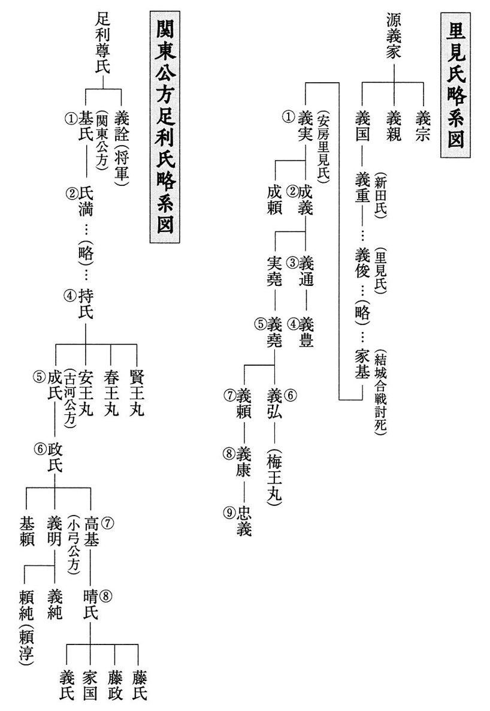
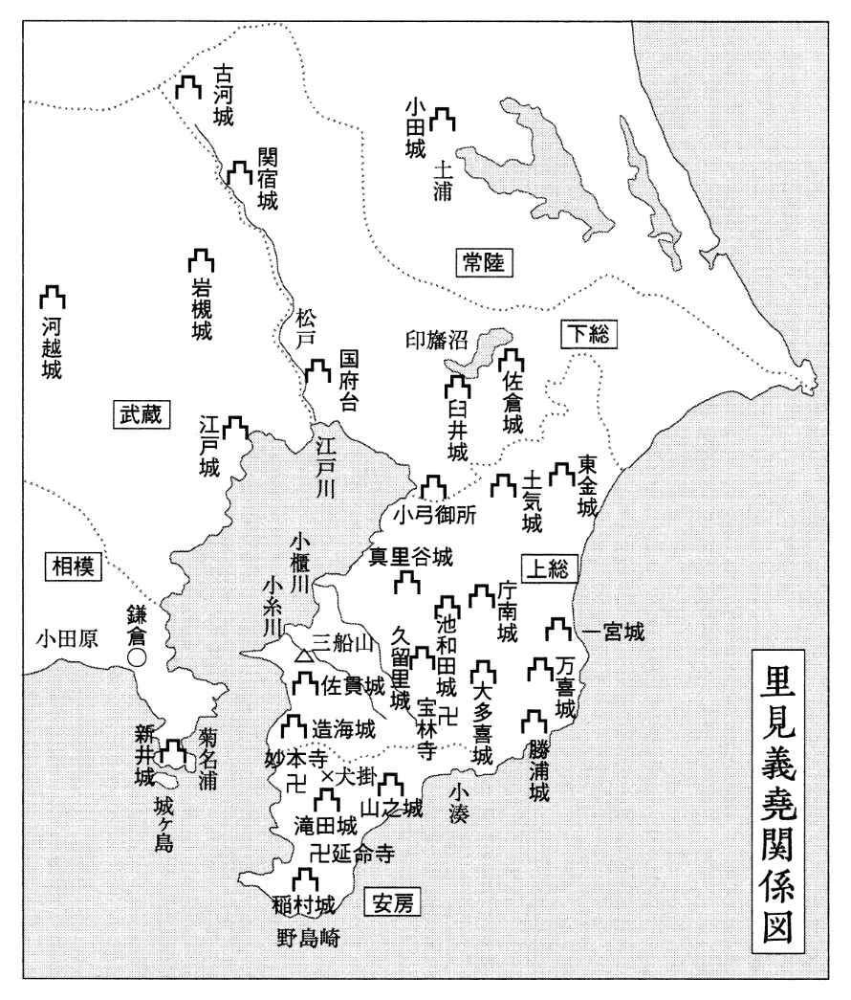
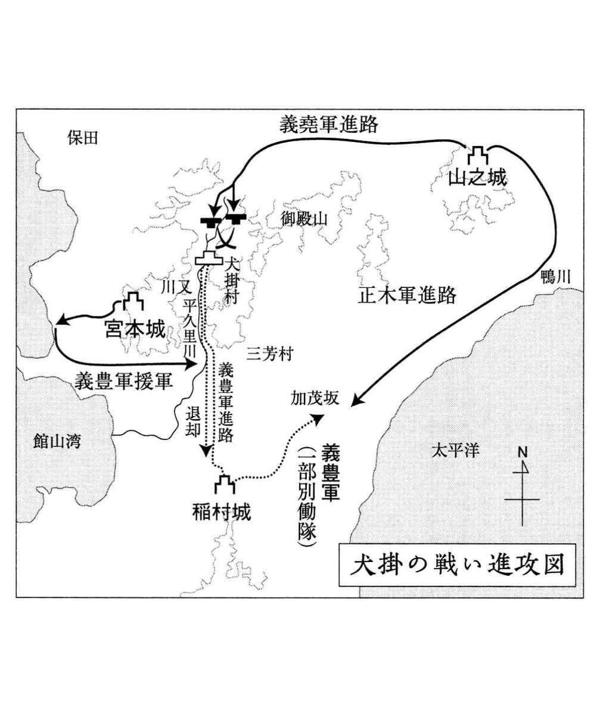
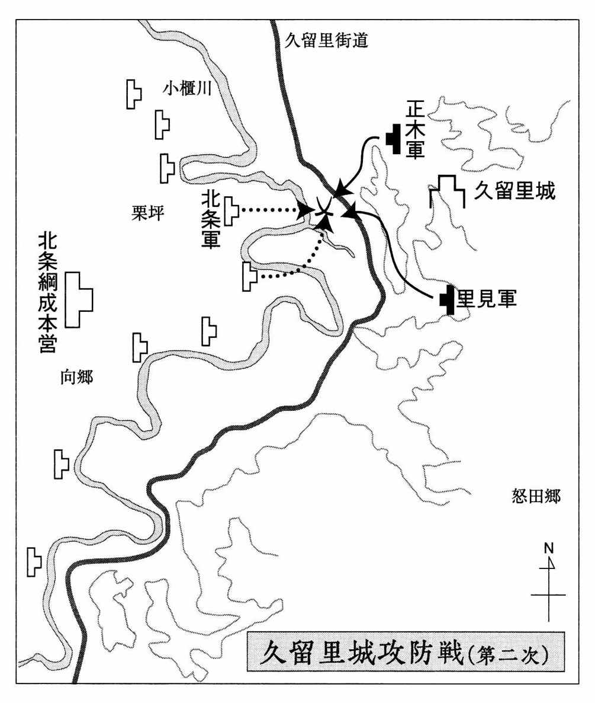
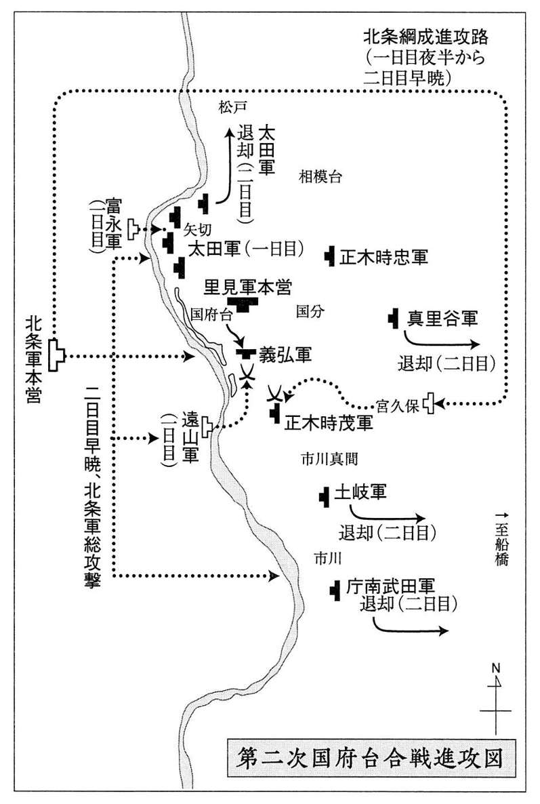
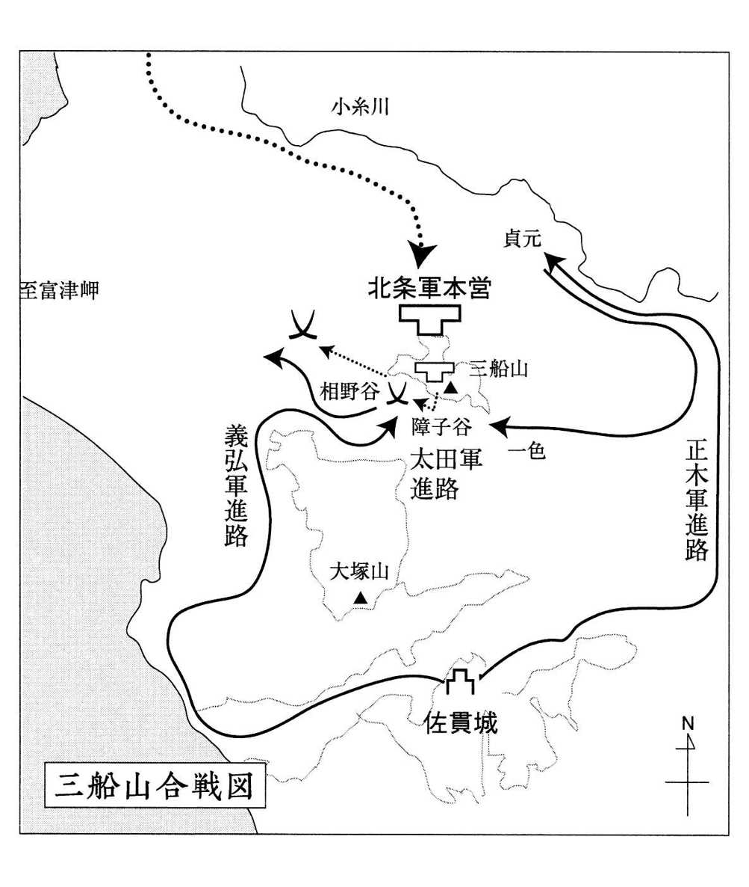
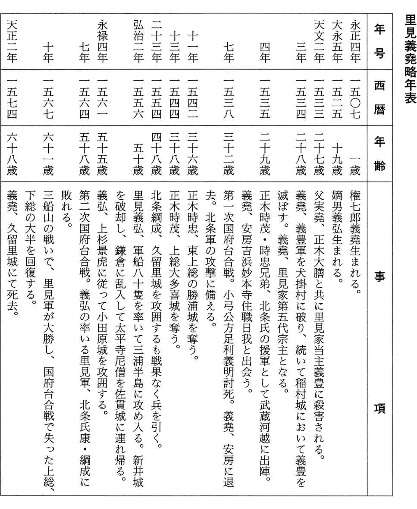

| 里見義堯 北条の野望を打ち砕いた房総の勇将 PHP文庫 | |
| 小川 由秋 | |
| (2005) | |

里見義堯
北条の野望を打ち砕いた房総の勇将
小川由秋


いとこ同士
一
里見権七郎義堯は、長谷川隼人のひきつった声に眼を覚まさせられた。天文二年（一五三三）七月二十八日の早暁である。
とらえどころのない、暗く深い靄のたちこめた中を、長くさまよい歩いた後のような、胸苦しさが身体中をおおっていた。半身を寝床の上に起こしたままの自分が、まだ夢の中にいるような錯覚を覚えた。
「実堯さまが稲村城において義豊さまの兵に囲まれ、討ち死になされました！」
あちこちに血がこびりついたままの姿で、隼人が叫んだ。
隼人の口から発せられた同じ言葉を、義堯は二度まで耳にした。それでもその意味を解しかねていた。里見家の当主である義豊が、なぜ父の実堯を襲う必要があるのだ？
（これは夢だ）
と、義堯は思った。
「なにをうろたえている。そんな馬鹿なことが起こるはずもない！」
「いえ、間違いありません。実堯さまといっしょに正木大膳大夫さまも八方から攻めかかられ、お二人の死を義豊さまが大声で触れ回っています。城内は宮本城から押し寄せた義豊さま配下の兵士たちに埋め尽くされ、わたしはその中を必死で斬り抜けてまいりました！」
正木大膳大夫は、父実堯の右腕と謳われた里見家の柱石であり、義堯のいまは亡き正妻お尋の方の実父でもある。房総里見家第二代成義に見出され、安房一国を平定する過程で数々の戦功を立て、安房東部一帯の統治を任されている里見家最有力の重臣でもあった。
稲村城は安房国館山の東方一里余（約四キロ）、房総半島最南端の白浜から真っ直ぐ北に二里半ほどのところ（現館山市稲）に在った。成義によって築かれた城で、以後代々の主城である。里見家第三代義通が家督を嫡男の義豊に譲るまでこの城に居て、領国の経営ににらみを利かせていたところでもある。
父実堯が義豊に呼ばれ、金谷の城を後にしたのは、つい一昨日のことだ。
「なにやら緊急の用が出来したと見えて、大膳大夫も山之城から共に呼び出されているらしい」
そんな言葉を残して、長谷川隼人をはじめ側近の兵を数人連れて稲村城に向かった父の姿が、義堯の目に焼きついている。
義豊の父里見家第三代の当主義通は、義豊が成人する前から病がちとなり、幾度となく床に臥していた。そんなことから、義豊が一人前の武将となるまで信頼する弟の実堯に、里見の家を支える役目を委ねた。幼名を竹若丸と言った義豊はそれより以前から、義通の命による養育係の中里源左衛門、本間八右衛門などの重臣を伴って宮本城に入っていた。
義豊の育った宮本城は、稲村城の北西約一里半のところにある。竹若丸が元服して義豊と名乗り、その後義通が死んで、里見家の家督は義通から正式に義豊に移り、それ以後は中里、本間らの側近と共に稲村城を居城としていた。
義豊がなぜ実権を握ってから何年も過ぎているいまになって、自分の叔父である実堯と里見家の主柱とも言われる正木大膳大夫を、みずからの手で誅殺しなければならないのか。義堯にはまったく理解できなかった。
義豊がまだ竹若丸と呼ばれていた頃から、父実堯の心配はいつも竹若丸のことばかりだった。病弱な兄を支え、必死で里見の家を守り抜くことに神経を磨り減らす毎日であった。竹若丸より四歳年下の権七郎にも、父の思いはそれとなく伝わっていた。
「竹若丸を里見家の棟梁にふさわしい人間にするには、手元に置いて育てた方がいいだろう。だがそれでは、竹若丸に厳しく当たることが多くなる。兄の考えもあったから中里、本間らの手に委ね、のびのび育てた方がよいと思ってきた。これがわが子なら、どんなに厳しくしつけようとも一向に構わないのだが、こればかりはなんとも難しい」
もう十五年も前になろうか。正木大膳大夫通綱（初め時綱、のち義通の一字をもらって通綱と名乗る）が安房東部の山之城から稲村城に常住していた実堯を訪れた際、父がそんなことをみずからに言い聞かせるかのように述懐していたのを、権七郎は覚えている。竹若丸がまだ十六歳の頃のことだ。
「わが子を育てるにはなんの遠慮もいりません。どんなに厳しく当たろうとも、しょせん他人はどれほどの関心も向けてきません。真にその子のためと思っていれば、子にもそれは伝わります。その点自分の子ではなく、ましてや主の嫡男ともなると、他人の目があちこちから入ります。無責任な勘繰りややっかみが横行し、いつか本人の耳にも吹き込まれ、しつけようとする真意がねじ曲げられてしまいます」
通綱にも男三人、女二人の五人の子供がいた。長男の弥次郎時頼は、その頃すでに父の通綱と行動を共にしている。次男時茂は義堯よりさらに年下だが、互いに交流があり、いっしょに戦さ遊びなどで興じ合った仲でもあった。また他に三男時忠がいた。
宮本城にいる竹若丸とは、顔を合わせる機会はめったになかった。竹若丸の方から実堯のもとにやってくることはまったくなく、権七郎が父に連れられて宮本城に赴くときは、竹若丸を取り巻く家臣たちがいつも側についていた。権七郎は竹若丸の側近の者たちから、見下されたような眼で迎えられた。
実堯が里見家の当主の弟で事実上の実力者とはいえ、その子供である権七郎は庶子の子であり、実堯の兄義通の子の竹若丸が、いずれは宗主の座に就く。側近の者たちには、権七郎などものの数ではない。
そんな権七郎にも、竹若丸は家臣たちによって外部の目から覆い隠され、近づけないようにされているように思えた。
めったに口も利かず、若者らしい好奇心もうかがえなかった。ただ鷹揚に、大人たちの間で尊大に振る舞うよう仕向けられているように感じられた。
権七郎は、竹若丸といっしょに城から出て、おもいきり野山を駆け巡りたいと思ったことがある。自分より年上で、もう元服に近い年頃とはいえ、まだまだ若者らしい無邪気さ、奔放さを発揮しきれないでいる竹若丸の目に鬱屈を感じ取っていた。だが、側に寄り添うようについていた中里源左衛門が、
「竹若丸さまを城外にお連れするなどもってのほか。里見の家を背負って立つお方となれば、誰がお命を狙っているかわかりませぬ。もともと里見の家はたかだか八十年余の以前にこの地に入国したもの。東条、神余、丸、安西などの豪族が支配していた安房の国をいまは完全に手中に収めたとはいえ、油断はなりませぬ。若殿のお命を縮め、家中に内乱を引き起こし、その混乱に乗じようと企む者もこの国にはたくさんおります」
と権七郎をにらみつけるように言った。
そのとき権七郎は、はっきりと自分への悪意を感じ取った。
自分に向けられたその眼がなにを意味するのか。当時の権七郎義堯には理解できなかった。だがそれ以来、二度と竹若丸に自分から近づき、いっしょに外に出てみたいという気持ちはなくなってしまった。
権七郎には、多くの家臣たちに囲まれ将来の里見家の棟梁と仰がれながら、どこか自分を思い切り発散し切れないでいる竹若丸の眼の中に、孤独な戸惑いが宿されているように思えた。
「子供らのことは養育係の者に任せ切りにしています。子供同士なにやら競い合って伸び伸び育っているように見えます。親の欲目かもしれませぬが......」
「いや、大膳大夫の子供らは、三人が三人とも、将来の里見家を背負って立つ柱石となろう」
「さほどの人間に育ってくれれば、里見家の人間として責任の一端を果たせると申すもの。どこまで育ってくれるかまだまだ見当もつきませぬ」
謙遜とも自戒とも取れる真面目な顔つきになって、通綱は口を閉じた。それからふと、側に控えている権七郎に目を向けた。
「権七郎殿はまだ十二歳になったばかりとはいえ、まことに将として優れたご気質を備えておられます。里見家が大きくなっていくためには、権七郎殿が家督を継がれるのがよいのですが......」
「大膳！ めったなことを口にするな。権七郎はあくまで竹若丸を守り立て、里見の家を陰から支えていく人間だ。わしがいま兄を助けて里見のために力を尽くしているのも、しょせんは兄上に頼まれたことを果たそうとしているだけのこと。いずれは竹若丸を当主と仰ぎ、わしも権七郎も竹若丸のために、命の限り働くまでと思っている」
「わかっております。ただ、家臣の者にしてみれば、里見の旗の下に集まった者たちを、大きく育て上げてくれるお方がその座に就いてくれることを願うのも当然。こればかりは理屈ではなく、家の子郎党の末に至るまで、そのお方と運命を共にしなければならない重大事ですからな」
憮然とした表情で、通綱は口をつぐんだ。
通綱の言った言葉の裏には、このところ浦賀水道を隔てた海の向こうで急速に勢力を拡大しつつある、相模国の北条氏の動きが意識されてのことだった。実堯はこれまで何度か船を仕立てて浦賀水道を押し渡り、相州沿岸各地を襲った。それはひとつには、大地を疾駆して侵入してくる敵よりも、房総の沿岸各地に音もなく不意に襲いかかってくる北条の海賊（水軍）に悩まされ続けていたからである。
すぐ目の前に迫って見える対岸の半島は、陸続きの上総国や下総国よりもいっそう身近な敵国であった。安房一国の安全は、三浦半島の制圧にかかっていると言ってもよかった。
その上さらに、実堯の目が絶えず相模の北条氏に向けられていたのは、それだけの理由からではなかった。そもそも里見の家は、上野国新田荘を開いた清和源氏新田義重の子義俊が、上野国碓氷郡里見郷に住んで里見を称したのが始まりである。
その数代後の里見家基が、関東公方足利持氏に仕えた。その持氏が京の幕府の意向を優先させる部下の管領上杉氏と対立し、合戦になった。持氏は関東の諸豪族を味方につけるが、結局、京の幕府の兵力を後ろ盾とする上杉勢に敗れ、自害させられてしまう。世に言う永享の乱である。
だが二年後、今度は持氏の遺児安王・春王を奉じた結城氏朝に呼応して、家基は氏朝とともに幕府軍十万の大軍を相手に結城城に立て籠り、一年余りを戦い抜いた。天下を震撼させた結城合戦であり、家基は結城落城と共にみずから城を枕に討ち死にした。その際、嫡子義実を落ち延びさせ、里見の家の存続を図った。
それから九年経って、ふたたび関東が乱れ、足利幕府の威令が行き渡らなくなった。幕府は京都にいた持氏の四男永寿丸を関東に下向させ、名も成氏とし、鎌倉公方に就任させた。佐竹、小山、宇都宮、野田などの関東の有力豪族の多くが、管領上杉氏の下に立つことを嫌い、紛争が収まらなかったからである。
結城落城の後、ひそかに安房国白浜の地に逃れていた里見義実は、結城合戦では敵味方に分かれていた武田信長らと共に成氏のもとに馳せ参じた。やがて成氏を後ろ盾とした関東の諸豪族と、京都の幕府の力を背景とした管領上杉氏との対立がまたまた表面化していった。
成氏は義実を、武田信長と共に管領上杉氏の知行国の多い安房国や上総国に進出させ、上杉氏の足元を切り崩す策に出た。
こうして成氏と上杉の対立は決定的なものになった。成氏は上杉勢を各地で破ったものの、ふたたび京の幕府の介入もあって鎌倉を追われ、下総古河に逃れて以後古河公方と称するようになる。
だが成氏を追った管領上杉氏も、内紛により山内上杉と扇谷上杉の二つの家に分裂し、幕府も古河公方に対抗させる必要から、将軍義政の弟政知を鎌倉に下した。政知は長い戦乱で廃墟と化した鎌倉に入れず、伊豆堀越に移って堀越公方と称した。
こうした関東の混乱に乗じて堀越公方を滅ぼし、つぎつぎに周辺の地を奪い取り関東に覇を唱え始めたのが、梟雄と恐れられた北条早雲であり、早雲の死後その後継者となった氏綱であった。
義堯の父実堯にとっては、海を隔てた隣国で次第に勢力を増しつつある北条氏は、最も身近な、そして最も危険な敵という認識があった。そうした安房国を取り囲む緊迫した情勢は、里見の家臣たちの多くに実感されてもいた。
義堯にはそのとき正木大膳大夫通綱の言った、
「里見の旗の下に集まった者たちを、大きく育て上げてくれるお方」
という言葉が、その後もずっと耳の底に残った。
義堯自身も、自分がその一角を担う人間であるという意識は心のうちに持っていた。だが通綱のいう意味を、そのまま自分のことと受け止めて考えたことは一度もない。あくまで、里見の家督は義豊が継ぐという事実は、なんの疑いもなかった。
学問を好んだ父実堯が、自分を律する行動の指針として、儒教を心のうちに据えていたことは、義堯の目にも明らかだった。長幼の序ということを、かたくななまでに守ろうとしていた様子が、実堯の日常の言葉の端々にうかがえた。
「一国が隆盛に向かうときは、その国の人間がおのれのみの欲を抑え、心をひとつにして困難に立ち向かっているときだ。反対に一国が衰運に向かうときは、一人ひとりが我欲をむきだしにし、おのれ一人を良しとする考えにとりつかれたときだ」
実堯が、幼い頃から権七郎に向かって厳しく伝えようとしたのは、そのことだったように思う。
「人間は誰でも、いくらかなりとも自分の方が優れていると思いたい。それを一族や父子、兄弟の間で競うようになると、互いの心が離れ、反発し合うようになってしまう」
実堯は、権七郎に書物の解読をしている最中にも、書物から離れていきなりそんなことを熱っぽく語り始めた。
「よいか権七郎。お前はまず自分自身を高め、広く古今の書物に通じるよう絶えず研鑽に努めなければならぬ。〝智者は明君と共に謀る、故に君臣学問なくして叶うべからざるものなり〟だ。だが同時に、そのことの故をもって他を軽んじてはならぬ。学問を深く究めれば究めるほど、謙虚に、人のためにそれを役立てることをこころがけよ。お前は竹若丸の手足となり、頭脳となって働く人間だ。それが里見の旗の下に集まった者たちの心を、ことごとくひとつに向かわせ、大きな力を呼び起こすもとになる。間違ってもおのれ自身を過信し、竹若丸の一歩前に出ようなどと考えてはならぬ」
父の言葉が、いつしか権七郎義堯の心の底まで浸透していただけに、義豊が父実堯と正木通綱を襲い、命を奪ったという知らせは、何度自分の胸に言い聞かせても、どこかにそれが間違いであろうという思いを呼び起こさせた。
二
義堯がいま居る金谷の城は、稲村城からはほぼ北に五里（約二十キロ）ほど隔たった鋸山の中腹、海沿いの崖の上に在った。
浦賀水道を渡って不意に襲ってくる北条方の海賊（水軍）に備え、また金谷より北東八里の位置にある上総真里谷城など真里谷武田勢の動きを監視する役目も担った城である。里見と武田とは長い間手を結び合ってきた間柄とはいえ、境を接する地となれば油断はならない。
長谷川隼人は沈着冷静な男である。父の実堯が、家臣の中から見込んで側近の一人に取り立てただけに、その状況判断は的確だった。年は義堯より五つほど年長の三十二歳で、大事の一報を独りよがりの早合点であわてて知らせて寄越すような男ではない。
それがわかっているだけに、義堯の頭は混乱した。
「ただちに出陣する。この目でしかと確かめねばならぬ」
義堯は夜具をはねのけた。城内に寝起きしている者をことごとく起こさせた。
あわただしく出陣の支度を整え、稲村城めがけて駆け下ろうとしていたとき、別の使者が駆け込んできた。正木兄弟の発した使者である。
「お屋形さまをはじめ正木大膳さま、正木時頼さまも共に義豊軍の手にかかって果てられましてございます。もはや稲村城周辺は、義豊方配下の一千余の兵で完全に制圧されています」
「.........！」
義堯は、絶句したままになった。
いま三百の兵で南下しても、もはや、誰をも救えないことが明らかになった。われに返って、ただちに兵の進発を中止させた。
「義豊軍はそのまま、この金谷の城に押し寄せて参るかも知れませぬ」
隼人が抑えた口調で言った。
「うむ」
義堯は無表情にうなずいた。
助けに行っても無駄となれば、今度はこの金谷の城に残された者たちの命を守り抜かなければならない。義豊のこのたびの行動は、突発事故から引き起こされたものではない。稲村城に父と正木大膳父子を呼び出して、不意に襲いかかっている。裏で綿密に計画され、準備された形跡が感じられた。
そうであれば、義豊の軍勢はこの金谷の城と正木兄弟の籠る山之城にも向けられてくると見てよい。同時に真里谷武田にも、働きかけがなされていよう。
真里谷武田氏は、もともとは甲斐源氏の流れを汲む家柄である。甲斐守護武田信重の弟左馬助信長が、足利成氏の命で康正二年（一四五六）に上総国中央部の山中である庁南および真里谷の地に築城し、土着したのが始まりである。安房の里見、上総東部・夷隅郡万喜城に拠る土岐氏と並ぶ、房総に勢威を振るう有力豪族だった。
里見氏は武田氏より十五年早い、いまから九十年ほど前の嘉吉元年（一四四一）に安房に入国している。以来、両者は安房と上総に別れて次第に勢力を伸ばしてきた。両氏は当時古河公方成氏配下であったから、互いにゆるい同盟関係を結びつつ、その後も直接対決するようなことはいっさいないままに過ごしてきた。
十数年前に、真里谷恕鑑信保が奥州を放浪していた古河公方足利高基の弟義明を、下総小弓城に招いて主とした。義明は父の政氏および兄の高基と不仲となり、鶴岡八幡宮の別当職を振り捨てて、奥州の地を流れ歩いていたのである。義通の時代に、恕鑑が上総、下総の豪族たちをも義明の下に糾合して、相模の北条氏綱に対抗しようとしてのことだった。
義豊の時代になってからも、恕鑑とは友好関係が保たれている。それ故、義豊が真里谷一族にすでに手を回していれば、この方面からも兵が動く恐れはあった。
義堯と三百の兵は、明日にでも南と北の双方から、二千を上回る敵兵に包囲されることが予想された。
（この危機を脱する方策はないのか）
義堯は、胸を押し潰されそうな重圧に耐えながら、必死に考えをめぐらせた。
（なんとしても生き残らねば......）
このまま父を討たれ、反撃も果たせないままに、卵を潰されるように圧殺されてはたまらない。なぜ父が、そして自分らが、義豊に殺されなければならないのか。
（父がなにをしたというのか）
そのことを明らかにするまでは、絶対に死ねないと義堯は思った。
三
義堯が放った間諜の報告により、各地の動静が明らかになった。
真里谷城に放った間諜の報告では、どうやら義豊と手を結んでただちに恕鑑が兵を動かす気配はないということがはっきりしてきた。
この頃、足利義明と真里谷恕鑑との間には、微妙な対立が生じつつあったから、兵を安房に送り込める状態ではなかった。
恕鑑にしてみれば、自分が義明の後ろ盾になって号令を発すれば、下総・上総の豪族たちを自分の傘下に入れて北条氏の勢力に対抗できると読んだ。だが、義明は素直に恕鑑の後ろ盾に頼っているような男ではなかった。
義明の兄の古河公方高基が、父の政氏とたびたび争いを起こし、父を城から追い出した。その上管領上杉氏と対抗する必要から北条氏と手を結んだ。義明はこの高基に代わって、自分が小弓公方を名乗り、北条氏の野望を見抜けないままこれと手を結んでいる高基を除き、関東全域に号令を発しようともくろんでいた。
自分を招いてくれた恕鑑に対しても、恩義に感ずるどころか、武田家の中で近頃次第に表面化しつつあった恕鑑の後継をめぐっての内紛に、公然と口出しを始めていた。
恕鑑には正妻と側室にそれぞれ男子が生まれていた。長男は側室の子で信隆と言った。恕鑑はすでに成人している信隆に家督を譲り、真里谷城を継がせるつもりでいた。
だが義明は正妻の子で、十歳になる信応が真里谷武田家を相続すべきであると言い出し、両者の争いに介入した。信応を引き立てることによって、自分の意のままに動かそうと企てたのであろう。
恕鑑は烈火のごとく怒った。しかし病の床にあって、どうすることもできなかった。家中も二つに分かれてにらみ合いが続いた。
そんな状態だったから、たとえ義豊の使いが真里谷城に向かったにしても、武田が義豊の要請に応じて兵を南下させる恐れはないと見てよかった。
北からの脅威がないとなれば、今度は安房東部の山之城に籠っている正木兄弟の安否が気遣われた。
この方面の情報は、直接正木時茂の手紙によって義堯のもとに届けられた。それによると、義豊軍は一度は山之城に押し寄せてきた。城の守りが堅く、容易にこれを落とせないと悟ったのか、十日余り包囲したあと兵を退いたという。
山之城を囲んでいる間に、義堯の兵が稲村城を襲うと見て、この方に注意を向けたためか。義堯はここはむしろいまのまま東と北から稲村城をにらみ、どちらから討って出るかわからない態勢をあえて持続させ、義豊を心理的に封じ込めておいた方がよいと即座に判断した。
それぞれが擁する兵は三百余に過ぎない。だが、北と東からおよそ五里余の等距離を置いて、稲村城をにらむ格好になっている。
真里谷武田側から義豊に応じる兵が派遣されることはないとなれば、義豊軍に兵数では大きく劣っていても、それぞれ二つの城に籠って堅く守り、相手の出方をうかがう方が有利と思えた。
「今後互いに連絡を取り合い、一方だけで兵を動かさず、どちらかの城が包囲されたら敵の背後を襲うと正木兄弟に伝えろ」
義堯の口上を持って間諜が山之城に向かった。義堯は今度のことではいかに間諜が重要な役割を担うかを改めて認識した。
（自分の目となり耳となって働く人間を、自分の手で増やさなければ......）
義堯の脳裏に、このとき猟師の子左平次の姿が浮かんだ。義堯が権七郎と言い、正木時茂が弥九郎と言った頃、獲物を追って安房の山中深く分け入った。ふいに雑木林の中から四十の半ばを過ぎた小柄な男が姿を現わした。
初めは互いに警戒し合った。だが、こちらを子供と見て安心したのか、山中に棲む獣の習性などを語って聞かせた。左助と名乗るその男とは、その後も時折り顔を合わせることがあった。
獲物の動きを知らせたり、近況を語り合ったりすることが続いた。親子ほども年が違うのに不思議に気が合った。その左助がいつも連れ歩いていたのが、義堯より八歳年下の、その頃十歳だった息子の左平次である。
小猿のようにすばしこく、人の話に好奇の目を向けて聞き入った。父実堯の許しを得て、義堯は左平次をその後すぐ自分の小者の一人に加え、実堯が使っていた諜者たちの手に委ねていた。いまは年齢も十九歳になっているはずである。
思いがけない事態に遭遇したときは、なによりもまず状況を正確に把握することが重要だ。相手がつぎにどう動くか。それをいち早く察知する。今度のことでは、そのことを第一に学んだ。
信頼のおける間諜を、もっと手元に育て上げておく必要がある。正木兄弟との連絡を緊密にすると同時に、義豊の動きを細大漏らさず掴んでおかなければならない。義堯はそう思った。
同時に、いま北条勢が金谷の北一里のところにある造海城に立て籠るような事態が発生したら、という恐れにも直面した。
造海城というのは百首城とも呼ばれ、海辺から真っ直ぐせり上がるようにそそり立つ小山の頂きに在る。房総里見の初代義実が七十年余の昔、この城に籠っていた土着の豪族を息子の成義と共に囲んだとき、城内から、
「里見父子は文武両道に優れていると聞くが、このあたりの景色を見てどんな和歌を作れるか、その手並みを見せてくれれば城を明け渡してもよい」
と矢文を寄せてきた。父子はたちまちのうちに百首を作り、これを矢文に認めて城内に放った。
里を見よはげしき春の山嵐
世をつくろみにさはらざりけり
夜をこめて灯籠坂を越えぬれば
味方のひかり日の出ますます
つくろうみ川瀬定めぬ折なれど
下れる水は入るる大海
などと詠んでいた。灯籠坂というのは、百首城の入口に至る坂のことである。
百首の和歌が優れていたため、城内の者はこれに感服した。これだけの人物であれば臣従してもよい、とただちに城を開いたことから百首城と呼ばれるようになった。
また一説には、この城を攻め落としたとき城兵百の首を打ち落とし、これを晒して見せたため名付けられたとも言われている。
城の西の海側は切り立った断崖で、東から北に白狐川が裾を縫うように流れており、わずかに南側だけが、尾根伝いに上総の山々へと連なっている。山上からは、海を隔ててすぐ眼下に三浦半島が横たわり、手を伸ばせば届きそうなくらいに迫って見えた。
対岸までは距離にすればわずか二里足らずに過ぎない。船足の速い小早と呼ばれる船であれば、二時（四時間）前後で到着できる。海を渡ってくる北条勢が真っ先に上陸を試み、白狐川の河口からそのまま物資や兵を送り込める絶好の場所でもあった。
義堯は、自分がただちにこの城に移れば、義豊軍が多勢で押し寄せても攻め口がないだけに、いたずらに日を送ることになると踏んだ。
ここに籠城して戦えば、たとえ数において劣勢でも、むざむざ殺されることはない。義豊にしても、長く包囲していれば、いつ北条勢が内紛に乗じて攻めかかってくるかと気が気ではなくなる。
当然に、北条方も絶えず間諜を放っている。現在擁している義堯の三百の兵で金谷の城にとどまっていては、北条勢が造海城を占拠したらとても太刀打ちはできない。かといって、いまいる兵力を二倍、三倍に膨らませる手立てはない。正木兄弟をむりやり呼び寄せても、せいぜい六百の兵力である。
北条氏綱が、里見の内紛を好機到来と見て造海城に入る。そこで義堯と義豊の争いを静観する態勢を取る。戦いに勝った方を改めて攻撃する。そんなことになれば里見の家は滅亡するしかない。
（それだけはなんとしても避けたい）
造海城には、このところ兵を常駐させてはいなかった。鋸山を背に高い崖に守られている金谷の城に比べ、周囲の地形は遥かに規模が小さく、いわば海に突き出た孤立した小山にすぎない。だが、周囲がすべて切り立った崖といってよかったから、ここに籠れば容易に攻め落とされる心配はない。
義堯は即座に造海城への移動を命じた。
実堯と共に金谷の城に入城する際、義堯は妻子を連れてきていた。義堯の母はすでに亡く、正妻は正木通綱の娘だったが、子供が生まれないまま若くして亡くなっている。七歳になる権七郎、のちの義弘は側室との間にできた子である。それらの家族を家臣とともに麓の竹岡の集落に住まわせた。造海城に移ったことは、ただちに山之城の正木兄弟に手紙で知らせた。
幸いにして北条勢の動きも、義豊側の動きも、目立ったものはないままに半年余りが過ぎた。やがてその年も暮れた。
いつ両方の敵が動き出すか。しばしの間も油断ができない緊迫した中で、義堯は正木兄弟に宛てて親書を送った。
兄弟のどちらでも、ただちに造海城にきて欲しい、という内容のものだった。
四
翌天文三年一月に入って早々に、義堯の要請に応じて正木時忠がわずかな供の兵を引き連れてやってきた。
「義豊がいつ攻めてくるか、こうしている間も油断はなりません」
時忠が緊張した面持ちで言った。
「呼び出して済まぬ。重大なこと故、その方ら兄弟の意向を是非とも聞いておきたかったのだ」
義堯はすぐに本題に入った。
「ずっと考え続けていたのだが、この際わしは北条氏綱に使いを出し、盟約を結ぼうと思う」
突然の義堯の言葉に、時忠は目を見張った。
「氏綱に助けを求めると言われるのですか！」
「そうではない。約定を交わし、共に義豊に当たろうと誘いをかけるのだ」
「こんなときに話を持ちかければ、逆に攻め込まれかねませぬぞ」
「そうは思わぬ。氏綱とてそれほど愚かな男ではない。小弓公方（足利義明）や真里谷武田が下総から武蔵国へ進出しようとしているいま、その背後に居るわれわれを味方につけられれば、こんなに都合のよい話はない。恐らく北条側にも今度の里見の内紛はすでに知れ渡っていよう。わしが氏綱に援助を求めてきたとなれば手を差し延べ、あわよくば里見の内紛に介入し、この機に確かな足場を築こうと企てるに違いない」
「北条方の狙いを承知の上で、約を結ぼうとされるのですか！」
時忠の顔には、あからさまな不快の色が浮き出ていた。
無理もない。突然こんな話を持ち出されたら、自分が時忠の立場だったら、同様に我慢がならなかったろう。
相模の北条は正木兄弟にとって、また里見にとっても宿敵といってよい存在である。正木兄弟の父通綱は、三浦半島を領有していた鎌倉以来の名族、相州新井城（三崎油壺）の三浦介時高と深い縁につながる者と考えられていた。
時高にははじめ子供がなく、上杉治部少輔高救の次男義同を養子にした。ところが晩年になって実子が生まれた。時高はこの実子を寵愛し、この子に三浦の家を継がせたくなった。
これを知った義同は時高と対立し、出家して道寸と名乗り、家を出た。義同はそれまでも三浦の家臣たちに信望があったから、家臣たちはこれに反対した。また義同の母の実家である小田原城主大森氏頼の助力も得て新井城を攻め、時高を自殺させた。四十年ほど前の明応三年（一四九四）のことである。
幼い時高の実子は乳母に抱かれて城裏より脱出し、船で安房国平郡正木郷の地に隠れ住んだと言われていた。その後この地で成人し、正木氏を名乗って長狭郡を中心に勢力を広げていき、やがて里見氏に服属するようになった。
通綱は自分の口からはそれを語ることはなかったが、通綱その人が、時高の実子ではないかと噂されてもいた。三浦道寸義同は、氏綱の父北条早雲に小田原の大森氏に続いて滅ぼされてしまうが、いずれにしても正木氏にとってはいつの日か相州三浦に復帰することを念願とし、また相模と房総を挟む海域を、多くの物流が行き交う拠点として支配することを目指していた。
同時に義堯の父実堯にとっても、海の向こうの北条は断固として討ち滅ぼさずにはおけない最大の敵であった。それは義堯とて、十分承知の上である。
「北条の狙いはたしかにこちらに向けられている。だが、われわれの当面の敵は義豊をおいて他にない。いまのままではこちらから義豊を攻めることもできず、こちらの油断を突いていつ攻め込まれないとも限らない」
義堯が断固とした口調で言った。
「瞬時も油断することなく義豊の動きを探り続けていれば、先方から苦しまぎれに仕掛けて参りましょう」
「たとえそうでも、正木の軍勢と合わせて六百の兵では、義豊軍二千の兵に太刀打ちはできない。北条はたしかに油断のならない敵だ。いずれは雌雄を決するべきかもしれない。だが、わしの父もその方らの父も、まったく無防備のさなかに義豊の手で討たれた。あれだけ自分を捨てて義豊のために力を尽くしていたというのに、父は誠意を少しも信じてはもらえなかったのだ。その無念を晴らさずには、なにごとも始まらぬ！」
義堯の目が、憑かれたように一点を見つめて動かない様子を、時忠は息を呑んで眺めた。義堯の決意が、なみなみならぬものであることを察知した。
「義豊のそばにいる中里や本間らが、父や正木大膳の実力を恐れ、二人が生きていたのでは、義豊が家督を継いでいるとは言っても、形だけのものになりかねないと懸念したに違いない。義豊もまさかわれわれが北条と手を組むとは思っていまい。こちらが援軍を頼めるのは、万喜城の土岐頼定のみと思い、その方面の動きを見定めていよう。だからこそ、いまになっても兵を動かす気配を見せないのだ。三百ずつの兵力ではこちらから攻め寄せることはできないと、高を括っているのだ」
万喜城の土岐氏は、美濃国の清和源氏土岐秀成が里見氏や真里谷武田氏などよりさらに八十年も前の応安元年（一三六八）に関東管領上杉憲顕とともに関東に下り、その子孫である時政が上総万喜城に拠ったのが始まりである。
里見氏とは後になって互いに盟約を結び合い、とくに実堯との関係は良好だった。頼定の娘は義堯の後室でもあったから、義豊ではなく義堯と組むことは明らかなのだ。
もっとも、義堯と頼定の娘との間には子が生まれておらず、嫡子義弘は他の側室、真里谷氏の一族で久留里城の勝真勝の娘との間にできた子である。だが、義弘の養育にはこの頼定の娘が当たっていた。義弘との仲は実の親子以上といってよかった。
「義豊はわれわれのどちらかが城を出て、兵を合流させるときが仕掛けるときと思っているでしょう」
時忠が言った。
「今日その方がここにきたことも、義豊はすぐ耳に入れるであろう」
「それより氏綱との交渉を見破られたら、そのときは小弓公方や武田信応らまでが介入してまいりますぞ」
「北条との交渉には長谷川隼人といっしょに左平次を遣わすことにする」
「そんな重大な役目に、隼人はともかく左平次ごときを行かせては、かえって足手まといになるのでは？」
「義豊の間諜はわれわれの周辺に抜かりなく放たれている。間諜のみでなく、これまで父に従っていた稲村城周辺の家臣の多くも、すでに義豊の下に組み込まれてしまっている。類縁の者を通してわが方の家臣の者にも、ひそかに働きかけがなされているだろう。だが、左平次のような小者の動きにまで目を止める者はおるまい」
「氏綱が隼人の言葉を、そのまま信じるでしょうか？ それに、たとえ小船でもいま相模に向けて漕ぎ出せば義豊らの目に留まります」
「船を使わず小弓御所の方向に徒歩で向かわせる。そのまま大きく迂回して武蔵国から小田原に入らせるのだ」
「敵地を陸伝いに行かせるのですか？」
「間諜として左平次を大きく育て上げるには、いまからいろいろな場面を体験させておく必要がある」
義堯の決意はすでに固まっていた。時忠は改めて義堯の顔を仰ぎ見た。義堯がかれのもとに残された家臣たちの運命をどう導こうとしているのか。
（北条と手を結ぶという義堯さまのご決断は、自身が最も避けて通りたい、苦渋に満ちたものでもあるに違いない）
時忠はそう思った。
犬掛の戦い
一
「氏綱はなんと申した？」
義堯の問いに、長谷川隼人は顔を上げた。後ろに左平次も控えている。まだ少年の頃の面影が、左平次のひたむきな目の色や丸い頬に残っていた。
「義堯さまの言われた三百の兵は、四月早々、必ず船で造海城に送り届けると約束されました」
「それは家臣たちに諮った上でのことか？」
「その場で即断されました。小田原城にたどり着いたとき、義堯さまからの親書か証拠になるものはないかと厳しく問い質されました。義堯さまの口上を直接氏綱殿に伝えたいと申しますと、すぐに目通りが許されました」
「どうやら氏綱には、こちらの様子が筒抜けになっていたようだな」
隼人に、親書や証拠になるようなものをいっさい持たせなかったのは、小弓御所の領内を通過中、万一捕らえられた際のことを考えてのことである。若い左平次を伴った隼人を北条方が果たしてどう扱うか。義堯にとっては賭けだった。城の周辺をうかがう敵国の間者と見て、いきなり斬り捨てられる危険はあった。
義堯は二人に密命を授ける際、里見の命運がすべて二人の肩にかかっていることを告げた。
「これを果たせるのはお前たちしかいない」
左平次は、澄んだ目で義堯を見返した。義堯はそれ以上口にしなかった。後のことは二人で判断せよと、暗黙のうちに語っていた。
義堯の生命を自分の手に握らされたような緊迫感を、二人はずっと感じ続けていたに違いない。
「氏綱という男、隼人の目にはどう写った？」
「わたしをうかがう目が、わたしを通して義堯さまを見極めようとしているかに思えました」
「その目は動いていたか？」
「じっと止まっていました。いっさい自分から問い掛けることもしませんでした」
「思慮深い男だが、決断は早いな」
義堯は、見たことのない氏綱という男の顔を、頭の中に思い描いた。
「ご苦労だった。左平次は続いて稲村城の義豊の動きを探れ。北条からの援軍が到着したら、全軍を率いてこの城から出撃する。それまで義豊がどう動くか。それを慎重に見極めるのだ」
「はい」
去って行く左平次の後ろ姿を見送った後、長谷川隼人を改めて側近く招いた。
「北条の援軍が到着次第義豊を攻める。万喜城の土岐頼定殿にも援軍を頼み、山之城に向かう」
「正木兄弟と合流して稲村城に向かうのですか？」
「ここから直接兵を南下させれば、まず宮本城で阻まれる。その間に義豊は山之城を攻めるだろう」
「われわれが造海城を出た後、氏綱が援軍とは別に新手の兵を送り込み、城を占拠しないとも限りません」
「そのときは合流している援軍と刺し違えるまでだ。氏綱とて義豊を喜ばせるようなことはするまい」
「義豊はどう出るでしょう？」
「まずは、こちらの動きを慎重に見極めようとするだろう」
「山之城に向かうとわかれば、加茂坂の砦に兵を送り込むのでは？」
「土岐頼定殿の援軍四百を合わせれば、われわれの兵は千三百。義豊は五百を稲村城に残し、残りの千五百を加茂坂に向けてくると見てよい」
加茂坂というのは、稲村城の北東一里（四キロ）余りのところに位置する緩やかな山間の坂道であり、東から侵入してくる敵を阻止するために砦が築かれていた。山之城から稲村城に至るにはここを通過しなければならない。山之城からは四里ほどの道程である。
「加茂坂では五分と五分の戦いになりましょう」
「うむ......」
大きくうなずきながら、義堯はなにかをしきりに考えるふうだった。寄せ集めに近い兵で、優勢の義豊の軍を打ち破ることができるのか。
（義堯さまも、そのことを気遣っておられるのか）
隼人の胸をそんな思いが掠めた
二
天文三年（一五三四）四月四日（陰暦）、造海城を出た義堯軍は、海岸線沿いに南下し、全軍一体となって宮本城を攻撃するかのような動きを見せた。だが、鋸山の脇を越えて保田（当時は穂田浦）に出た後、一転して兵を東に向けた。
左平次は義堯の行軍がことさらにゆっくりなのは、明らかに義豊を混乱させるための擬態であると見ていた。房総半島を西から東に向けて横断すると見せて、途中兵を南に転じ宮本城の背後に回る。あるいはこれを大きく迂回し山之城に入ると見せて、北東から兵を直接稲村城に向ける。義豊にそう思わせることで心理的威圧を加え、同時に敵の兵力を分散させようとの狙いであろう。
事実、こうした義堯の動きに引きずられるように、稲村城では重臣たちの軍議が続けられている模様だった。義堯のもとに北条の軍勢が加わっているとの報に、義豊が大きく動揺している様子がうかがえた。
だが、義堯、北条、土岐の連合軍は内房の保田と外房の鴨川を結ぶ長狭街道をそのまま東にすすみ、いったん山之城に入って正木軍三百と合流した。兵を割ることなく今度は一気に、加茂坂を経て稲村城に向かうと思われた。
当初、義豊は宮本城の防備を固める動きを見せていたのが、義堯が山之城に入ったことが確認されると、急遽加茂坂の砦に五百余りの軍勢を送り込んだ。
左平次は仲間の間諜たちと連絡を取りながら、宮本城と稲村城の動きを探った。二つの城からあわただしく人の出入りする様を、注意深くうかがった。
義豊みずからが、兵を率いて加茂坂に出陣する動きは見られなかった。自身は稲村城において指揮を取り、籠城して義堯を迎え撃つ覚悟と思われた。
左平次は何度か稲村城の内部に潜入しようと試みた。だが、城のある山上はおろか、麓の周辺一帯は武装した兵士たち一千余りが臨戦態勢の防御網を張り、一歩も近づくことができなかった。
義豊の籠城間違いなしと見て、左平次はその旨を義堯に通報しようと稲村城を後にした。加茂坂周辺を避けていったん北上し、安房の山中に分け入った。そこから東に抜けるつもりだった。
御殿山から嶺岡山系に続く山道は、幼い頃猟師の父といっしょに自分の庭同様に歩き回ったところである。山中であれば途中、誰に見咎められる恐れもない。
平久里川に沿って北に向かい、三芳村の滝田付近で山道に入った。平久里川は安房国中央部の山中に水源を発し、やや西よりの山間を南に真っ直ぐ下り、そのまま館山湾に注ぐ幅五間（九メートル）ほどの川である。
途中思いがけず、宮本城の様子を探っていた間諜の一人、吉岡大八と顔を合わせた。四十歳半ばの、駿足と強靭な肉体を持つ土着の侍である。だがいまは、近郷の百姓とみまがう身なりをしていた。
左平次が猟師の父のもとを離れ里見に仕えるようになって、最初にその下につけられた男である。妻子は持たず、ひたすら実堯の役に立つことを願っていた。
実堯が義豊に殺された後は、義豊への復讐心に燃え、それだけに仲間同士の連絡もなしに、勝手に一人で行動することが多かった。
「何処に行く？」
大八はいきなりそう言った。大八の表情に、なにやら気がかりを抱えている様子が感じられた。
「山之城の義堯さまに、稲村城の様子を伝えに行くところです」
「おれはこの一両日、ずっと宮本城の様子を探ってきた。城からしきりに物見の兵が送り出されている」
「義堯さまがいつ襲ってくるか。それに備えているに違いありません」
「義堯さまのいる方角ではない。義堯さまが後にしてきた造海城を熱心に探っているのだ」
「造海城を？......」
驚く左平次の目を、大八はじっと見つめた。大八はいつも自分の考えを、自分から口にすることはない。いまも左平次が自分の言葉にどう反応するか、それをうかがっているふうだった。
「北条の援軍がさらに後に続くか、探りを入れているのでしょう」
「............」
黙って左平次の言葉に耳を傾けていた大八が、やがて独り言のようにつぶやいた。
「今夜、義豊がどんな動きを見せるか......」
「今夜？」
「義豊は今夜のうちに動く」
「なぜわかるのですか？」
「お前はそれを義堯さまにお伝えしろ」
左平次の疑問には答えず、命令口調で言った。
「おれも稲村城に引き返す」
左平次が思わず大声を出した。
「稲村城はおれ一人でいい」
「義堯さまには、義豊がどう動くかを探れと命じられています」
「お前はこのまま山之城に向かい、おれの言った通りのことを義堯さまにお伝えすればいいのだ！」
有無を言わせぬ強い口調だった。
たしかに、大八と出会わなければ、そのまま義堯のもとに駆けつけていたには違いない。
後ろ髪を引かれる思いで、左平次は山之城への道を急いだ。
「............」
左平次の報告を聞いた後、義堯は長い間無言だった。
頭の中で、めまぐるしく何事かを思い巡らせている様子だった。
「大八は今夜、たしかに義豊が動くと申したのだな」
改めて念を押すように言った。
「こちらがどの方角から攻めてくるか迷わされたのを逆手にとって、今度はわしの裏をかくつもりか」
目の前の左平次にじっと視線を据えながら、義堯の目は左平次を見てはいなかった。
（今夜、義豊が動くということは......）
左平次は、義堯がいまなにを考えているかを読もうとした。
義豊が動くとしたらどこへ向かうか。
義豊みずから兵を率いて加茂坂に出陣するか。それとも稲村城に半分の兵を残し、自身は宮本城に移って双方から義堯軍を迎え撃つか。
しかし、それでは加茂坂の砦、稲村城、宮本城と、つぎつぎに各個撃破される危険が高くなる。加茂坂の兵を引き上げさせ、義堯が稲村城を囲んだ後、宮本城から背後を襲うつもりなのか。
たしかにそれも考えられる。だが、山城とはいえ稲村城に比べ規模の小さい宮本城に、義豊みずからが籠るであろうか。義豊が宮本城に移ったとわかれば、義堯が稲村城には抑えの兵を残し、全軍挙げて宮本城を攻撃するのは目に見えている。義豊が自分をそんな危険な場所に移すはずはない。
となれば、他に何処へ向かうのか。
（造海城だ！）
左平次がそう思い至ったとき、義堯がふいに立ち上がった。
「全軍ただちに出撃する！」
あたり一面に轟き渡るような大声だった。
「左平次。お前はこのあたりの山道に詳しいはずだ。全軍が夜明け前に義豊の先回りをしてこれを迎え撃つには、何処へ向かったらよいか道案内しろ」
「義豊は造海城に向かうと......？」
「間違いない。こちらの動きを逆手に夜陰に乗じて兵を動かし、残してきた妻子を人質にして城に籠るつもりだ。あの城に籠られたら手が出せない。その間に小弓公方や真里谷武田に働きかけ、われわれを孤立させようとの狙いだ。一刻も早く、義豊の先回りをしなければならぬ」
「造海城へ向かうとなれば、目につきやすい海岸線ではなく、稲村城から真っ直ぐ平久里川に沿って北上するに違いありません」
「うむ」
「だとすれば、道の両側に山が迫る犬掛村付近で迎え撃つのが一番よろしいかと......」
「義豊はすでに稲村城を後にしているだろう。先に犬掛村を通過されてしまったら万事休すだ」
叫ぶと同時に義堯は、正木兄弟の三百の兵を加茂坂に向かわせた。みずからは残る一千の兵を引き連れて犬掛村に急行した。
武装した兵士を連れての夜の山越えは困難を極めた。だが、なんとしても義豊に先を越されてはならない。そんな義堯の思いが全軍に浸透していたのだろう。途中、遅れる者は一人も出なかった。
月光が山道をわずかに照らし出している。それに助けられて、夜明け前には犬掛村の北方に到着した。周辺一帯に放った物見により、義豊軍がまだ通過していないことを確認した。間一髪である。ただちに道の両側にそびえる山中に兵を隠し、義豊軍の通過を待った。
四月六日の早暁、朝日が山の背を染め始める頃になって義豊の軍勢一千余が、山間の一本道を上総国めざして北上してくるのが確認された。
義堯軍の兵士が、道の両側に潜んでいるとは少しも思い至っていない様子だった。夜間の行軍にそろそろ疲れが出始めたのか、それとも造海城がまだ遥か先であるからか。兵士たちのどの顔にも緊迫感はなかった。
先頭の軍団が通過するのをやり過ごし、つぎに続く一隊めがけて義堯の軍勢が不意に襲いかかった。
三
先頭を行く兵は、義豊の重臣本間八右衛門が率いていた。後方の騒ぎに何事が起こったかと、あわてて引き返そうとした。だが、左右の山裾の茂みからどっと矢が射掛けられてきた。兵士たちはたちまちのうちに隊を乱し、われ先に前方へと逃れ散った。
本間八右衛門が馬上から必死に踏み止どまらせようと大声を挙げた。そんな八右衛門をめがけて、槍先を揃えた土岐頼定の軍兵が群がり集まった。たちまちのうちに八右衛門を馬から引きずりおろし、その首を掻き切った。
本間隊に続いて進軍してきた中里源左衛門の第二陣は、まったく予想だにしなかった義堯軍の出現に、大きく崩れ立った。
あわてふためき、いまきた道を引き返そうとした。だが、味方の隊が列を成してすすんでくるため身動きが取れなかった。道の両側に広がる田圃は、すでに田植えが済んで水が入っている。逃げ惑う兵士たちは田に飛び込み、泥に足を取られて思うようにすすめない。そんな兵士たちの背に、つぎつぎに容赦なく矢が突き立った。血に染まった水田が朝の光りの下で、ひときわ赤々と照り輝いて見えた。

中里源左衛門はいったん大きく後退した。平久里川の河原付近の平地で隊を立て直し、追撃してくる義堯の兵を迎え撃った。後方にいる義豊の兵五百を立ち直らせるための必死の防戦である。
これを見て義豊の主だった勇将たち、三浦半四郎、菅谷弥八、木曽兄弟らが駆け寄ってきて激戦になった。
義堯は、前方に中里源左衛門の馬上姿を見出した。その後ろには槍先をこちらに向けて揃えた一隊を、何段にもわたって折り敷かせている。
むらむらと怒りが込み上げてきた。義豊をそそのかし、父実堯や正木大膳を殺させたのは中里源左衛門に違いない。
「中里を討て！ 踏み止どまってはならぬ。このまま一気に突きすすめ！」
義豊の将兵らは、いったんは盛り返すばかりの勢いを示していた。だが、激しい下知に奮い立った義堯の兵三百と、北条軍、土岐軍の援軍がしゃにむに突入して行くと、ついに支え切れなくなった。乱戦の中で中里源左衛門初め、菅谷らがつぎつぎに討ち取られていった。
かれらは、不利な態勢から必死に立ち直ろうとわが身を犠牲にして戦った。だが、義堯の勢いを止めることはできなかった。
主だった勇将のことごとくを討ち取られて、義豊はもはやこれまでと覚悟を決めた。自分を取り囲む側近の兵士たちに向かって叫んだ。
「義堯と差し違えて討ち死にを遂げる！ わしと共に死なんとする者は続け！」
馬首を揃えてまさに走り出そうとしているところに、義豊の父義通以来の老臣、堀内新左衛門が馬の轡にすがりついた。
「戦いはまだ負けと決まったわけではありません。宮本城からすぐに援軍が到着します。殿はこのまま稲村城に戻られませ。加茂坂の兵をただちに呼び戻し、城に立て籠って義堯の軍勢を迎え撃てば、まだまだ勝ち目はあります」
新左衛門の必死の説得に、まわりの将兵たちもこぞって同意した。ためらいがちな義豊を、無理やり引き立てるようにして稲村城へ落ち延びさせた。
追い立てられるようにじりじりと後退を続けていた義豊勢は、犬掛村から南におよそ三十町（約三千メートル）ほどの、平久里川と増田川の合流する川又（三芳村上滝田）と呼ばれる地点で反撃に転じた。ここでふたたび激闘が演じられた。
このときすでに、義豊は稲村城に向けて落ちていた。そこへ宮本城から義豊の腹心宮本宮内、鎌田孫六らが率いる援軍が到着した。新手の兵二百余が加わったことから一気に攻勢に出た。
宮本宮内らは、宮本城の留守を命じられていたが、犬掛で義豊が義堯の待ち伏せにあったとの知らせを耳にした。急遽駆けつけたのだが、途中、義豊がすでに稲村城に向かっていると聞き、海沿いの道を南下しようとして遅れを取った。
義堯の軍勢はここで行く手を阻まれた。いったん大きく後退した。義豊を取り逃がしてはならぬと焦る義堯の気持ちが、兵士たちにも伝わっていた。しきりに無謀な突撃が繰り返され、まとまりを欠いた攻撃になった。待ち受ける宮本宮内の兵によって、つぎつぎに討ち取られていった。
「義堯殿！ ここはひとまず兵を退き、態勢を整えた上で攻勢に出られてはいかがか？」
土岐頼定が、義堯の側に馬を寄せながら言った。
義堯は自分の焦りに気づいた。
（義豊の逃れる先は稲村城をおいてない）
逸る気持ちを必死に抑え、みずからに言い聞かせるように心のうちでつぶやいた。
行く手に立ち塞がる宮本勢を三方から取り囲み、十分に敵を焦らした後に、一転して激しい攻勢を掛けた。
受けて立つ宮本勢は、全員が死を覚悟しての防戦と心得て、よくこれを阻止し続けた。三浦半四郎はここでも奮戦し、最後まで義堯の軍勢を苦しめた。だが、ついに力尽きて討ち死にを遂げた。
宮本宮内、鎌田孫六らは揃ってこれまでと見切りをつけ、戦場を離脱した。稲村城をさして必死に逃げ延びた。
この後すぐに、加茂坂に出陣していた竜崎外記、楠六左衛門らの率いる軍勢が義豊救援に駆けつけてきた。だが、川又の周辺は義堯軍で埋め尽くされていた。その有様に、一戦も交えることなく稲村城に向けて兵を返した。
こうして残兵のことごとくが稲村城に逃げ帰り、城に立て籠って最後の一戦を迎えることになった。
四
稲村城は、城の北を流れる滝川を外堀とし、東と西、南面に長く延びる小高い丘陵を外郭とした平山城である。東西二十町（約二千メートル）、南北十五町（約千五百メートル）にわたる大規模な城であった。
小山の先端、五町四方の山頂に中心部を成す主郭、土塁、堀切などが配され、北面と西は急勾配の断崖によって守られていた。東側と南側には複雑な腰曲輪が幾重にもしつらえられている。
主郭からは、北方に大きく開けた北条平野と呼ばれる水田地帯がすぐ下に見晴らせ、安房の国府にも近い要衝に位置していた。
安房里見氏の初代義実が結城落城の際、数名の家臣を従えて房州白浜に落ち延びてきて、そのまま白浜の地を拠点にした。次第に安房周辺を収めるようになり、二代成義のときに、安房南西部を掌握するためにこの稲村城を築いた。
義堯の祖父である成義以来、およそ五十年の余にわたって勢力を広げてきただけに、稲村城は防備も整っていた。これを一気に陥れるには数倍の兵力を要する。
だが、義豊勢にしてみれば十分な籠城態勢も立てられぬままに義堯の軍勢を迎え撃つ格好になった。義堯は少しも休まず攻勢に出た。堅固な城とはいえ各所で郭が破られ、義豊は二の丸から本丸へと追い詰められていった。
義堯はまず大手門と搦手門に兵を集結させた。みずからは狐塚と呼ばれるところに本陣を構えた。城の様子は熟知していたから、少しのためらいもなかった。つぎつぎに塀を打ち破って城内に攻め入らせた。
義豊側は矢を揃えて、どっと射掛けてきた。その度に先手の兵がばたばたと倒された。それにもめげず、新手の兵が前へ前へと押し出した。
夕刻近くなって、もはやこれまでと覚悟を決めたのか、城からも宮本宮内、竜崎外記、楠六左衛門、堀内新左衛門ら生き残った将兵が、
「われこそ義堯の首を挙げて見せん！」
と大声に叫び、つぎつぎに死を覚悟して本陣めがけて突入してきた。だが、ことごとく狐塚の手前で壮烈な討ち死にを遂げた。
夜に入って、吉岡大八や左平次ら間諜が果敢に城内各所に侵入し、建物に火を点けて回った。
ここに至って義豊は、みずからも槍を取って防戦した。体中に数カ所の傷を負い、燃えさかる城を目の前にしながら裏手に回った。
「ここはわれわれが敵を防ぎます。お屋形は鎌田孫六と共に山陰に隠れ、お腹をお召し下され」
生き残った木曽修理介、真田三河守の側近二人が義豊に別れを告げた。
犬掛村から城に逃げ戻ったときに、義豊は城に残っていた女たちを、ただちに退去させた。義豊の正室は、稲村城の西南およそ一里のところにある南条（現館山市南条）烏山城主、烏山左近大夫時貞の娘で、十六歳だった。
義豊はこの正室を城の裏手の山道伝いに乳母と共に逃れさせ、烏山の城に落ち延びさせた。また、側室の一人で、このときすでに義豊の子を身籠っていた小倉民部定光の娘をその兄定継に託した。南条とは逆の、嶺岡山中方面に逃れさせた。
だが、もう一人の側室中里源左衛門の類縁の娘由子は、城から脱出することを拒み、最後まで義豊と生死を共にしたいと言い張った。そして城に火の手が上がった際に、みずから自害して果てる。
義豊は、燃え上がる城を眺めながら、一年前に自分の叔父である実堯を自殺させたときの光景を思い起こしていた。
「これまでわしのしてきたことは、果たして天に背くことだったのか。もしそうなら、わしの命を絶つのは、天の命によるものだろう。天に背いていないのであれば、天はみずからの手で、いつの日かその曲直を正すであろう」
義豊は、あのときの叔父の言葉を耳元に蘇らせた。
義豊は自分がこれまで、自分の本当の気持ちとは裏腹に、なにか目に見えない意思によって導かれ、動かされてきたような思いに駆られた。
心の奥深くでは自分は叔父実堯に対しても、いとこの義堯に対しても、なんの憎しみも抱いていなかった。それでも結局、ここに至ったのは自分が辿らなければならない道だったような気がした。
義豊は鎌田孫六と共に城の裏手の崖下の窪みに身を潜めた。そこで心静かに自刃して果てた。鎌田孫六は義豊の首を地中深く隠し、木曽修理介や真田三河守のもとに取って返した。そして最後に、三人が切っ先を揃えて敵陣に躍り込んでいった。
義堯が稲村城を陥落させたのは、六日の子の刻（夜十二時）を過ぎた頃である。
翌朝になっても残党狩りが続けられた。義豊の首は未明になって見付け出され、義堯の前に差し出された。
それまで、ただひたすら憎しみに駆り立てられていた義堯は、目の前の、土にまみれた義豊の首を見たとき、不意に吐気に襲われた。子供の頃に見た竹若丸の、自分を見出だせないままに、中里ら重臣たちに操られている無表情な面影が、二重写しになって思い起こされた。
義堯の心を、冷たい風が通り過ぎた。
四方に散った残党狩りの兵士たちが、つぎつぎに義堯のもとに戻ってきた。その報告によって、義豊に組した主だった将兵のことごとくが討ち取られていたことが判明した。
そればかりではない。義豊と自分の父の死を知った義豊の正室は、たどり着いた烏山の城近くでみずから十六歳の命を絶った。その報告が義堯のもとにもたらされたとき、義堯は娘の死を哀れんだ。そして側室の一人、小倉民部の娘が兄定継とともに行方をくらませているとの報告に対して、ただちに捜索を打ち切らせた。
この小倉民部の娘は、この後、落ち延びた先の和田町五十蔵において男の子を産む。だが産後の肥立ちが悪く、民部の娘はそこで命を落とす。義豊の子は小倉定継が自分の子として養育し、そのままみずからも本当の親が誰なのかを知らぬままに、一生を終えている。
また、小倉定継もずっと後になって、長い浪人暮らしの後に、義堯の子義弘に召し出されて仕えることになるが、それはずっと後になってのことである。
義豊の死によって、義堯は里見家第五代の宗主となった。
家臣たちが散って一人きりになると、義堯の胸に、自分は初めから義豊に代わって宗主の座を望んでいたのではないか、という想念が立ち昇ってきた。そんな考えは、これまでわずかにも浮かんだことはなかった。神懸けて誓ってもよかった。だがそのことがふつふつと心の隅に湧き出し、執拗にこびりついて離れなくなった。
義豊を討つまでは、ひたすら父の無念を晴らさずにはおかないという一念に凝り固まっていた。自分では、義豊が憎いということ以上に、義豊を操り自分らが里見の家の実権を握ろうとした中里、本間らを誅しようという思いが強かった。
しかしその一方で、勢い余ってというより、自分の心の中に義豊を生かしてはおけないという執念が、巣くっていたようにも思えてきた。
そのことに思い至ったとき、それをいくら自分で打ち消してみても、義堯の心は晴れなかった。
五
義豊の首は小田原の北条氏綱のもとに送られ、首実検に付された。このたびのことは、北条軍の力添えが大きくものを言った。
氏綱にしてみれば、この機会に義堯に恩を売っておく必要がある。だが、義堯をことさらに下に見るような態度は取らなかった。そのかわり鎌倉八幡宮の造営に力を貸すよう暗に強要した。
これには義堯もいやとは言えなかった。もともと八幡宮は弓矢の神であり、源氏の守り神でもある。同じ源氏の流れを汲む里見にとっては、喜んで賛同すべきこととも言えた。
だが、その実氏綱には、八幡宮をみずからの手で再建することで、頼朝以来の鎌倉幕府の後継者であることを自称し、関八州に威令を発しようとの狙いがあった。
北条氏は平氏を名乗っている。利用できるものはことごとく利用しようとの思惑でもあるのだ。
八幡宮が荒れたままになっていたのには、関東公方と管領上杉氏の対立があり、さらに上杉氏の分裂に加えて八年前の大永六年（一五二六）、義堯の父実堯が率いる里見水軍による鎌倉乱入も原因していた。その際、兵火が社殿に移り、大半が焼失してしまったのだ。
この八幡宮の修築には、二年前から房総各地の豪族たちにも働きかけが行われている。小弓公方足利義明はこれを拒否し、氏綱との対決を鮮明に打ち出した。真里谷武田恕鑑も義明に賛同した。
氏綱には、義堯を抱え込むことで、房総の諸豪族の間に楔を打ち込もうとの狙いがあった。義堯は義豊を討った後、そのまま稲村城には戻らず、犬掛村に近い上滝田の山城を大々的に整備してそこに入った。
滝田の城は、宮本城の北東およそ一里。四囲を深い谷に守られ、北から山間部を下って稲村城をめざし侵入してくる敵に備えたものである。義堯は、父の死と義豊の死を見た稲村城に、とどまる気持ちになれなかった。
その一方で、義豊を自分の手で殺したことに、いつまでこだわってもいられなかった。里見の旗の下に集まった家臣たちを率いる者は、もはや義堯を措いて他にいなかったからである。
他のことに気を取られていたのでは、氏綱にたちまちのうちにすべてを奪い取られかねない。氏綱の目には、どんな小さな油断も見逃さない鋭い光りが宿っていた。
（自分がここで、里見の家を率いることを逡巡していたら、いったいどんなことになるか）
とはいえ、幼い頃から父実堯によって、
「義豊を助け、共に里見の家を支えていかなければならない」
と教え込まれてきたそのことを、すぐに忘れ去れるものでもなかった。
「おまえは竹若丸が成人した暁には、その手足となり頭脳となって働く人間だ。間違ってもおのれ自身を過信し、竹若丸を押し退けて一歩前に出ようなどと考えてはならぬ」
父から、何度となく聞かされてきた言葉である。
「人間は誰でも、自分の方が優れていると思いたい。それを一族や親子兄弟の間で競うようになると、互いの心が離れ、反発し合うようになる」
義堯の耳に、いまも焼きついて離れない言葉であった。
（父を討たれたからとはいえ、果たして主を討った所業は許されることなのか。その主の地位に、自分が平然と就いてよいものか）
そのいずれの答えも、否であった。だが、里見の旗の下に集まった者たちを守り抜き、安泰に導く責任が他の誰でもない、自分に課されていることも自覚せざるを得なかった。
義堯はしばらくの間、滝田の城から一歩も外に出ずにいた。一室に籠り切ったままの毎日が続いた。七月に、真里谷入道恕鑑が病死したことが耳に入った。それを承知していながら、なんの手も打つ気になれなかった。
そんなある日、突然、山之城から正木時茂が義堯のもとにやってきた。
「お体の具合でもすぐれませぬか」
脇に書物が積まれた部屋に通されて、時茂はいきなり言った。明らかに体を気遣っての口調ではなかった。
無言のまま時茂を迎える義堯の視線を跳ね返すように、時茂は続いてこう言った。
「昔のように野駆けを楽しめば、気鬱も吹き飛びましょう」
少年の頃、二人はよく馬を飛ばし、海の見えるところまで速さを競い合った。時茂はそのことを言っていた。
義堯がなにを思い悩んでいるか、時茂にはわかっていた。時茂にしてみれば、そんなことで思い悩んでいるときではないと言いたかったのであろう。
「真里谷武田は二つに割れます。家臣の多くは信応に付いています。次男とはいえ正室の子の信応が真里谷武田の家督を継ぐのが筋ということでしょう」
「うむ」
義堯もその間の事情は熟知している。恕鑑にしてみれば家中に内紛を起こさせないため、信応より六歳年上の、妾腹の子とはいえ長男の信隆に事実上家督を譲り、自分は後ろに退いていた。
足利義明を小弓城に入城させ、房総の豪族たちをひとつにまとめようともくろんだのは恕鑑自身である。その恩義を忘れて、真里谷の家に内紛を引き起こした義明への恨みの念は強かった。それだけに、長く病床に在った恕鑑の死は無念の憤死といってよかった。
信隆に人望がないというより、家臣の多くは義明の権威を後ろ盾にする方が病気がちな恕鑑の後、なにかと有利と読んだに過ぎない。信応やその側近たちも義明の後押しがあればとそれに乗じた。
「信隆は苦しい立場に追い込まれています。氏綱が信隆に誘いをかけるのは間違いありません」
時茂はそこで言葉を切った。じっと義堯の顔を覗き込んだ。
「上総国は大きく揺れます」
時茂の言いたいことはわかっていた。
里見がどちらにつくか。足利義明か北条氏綱か。
時茂にしてみれば北条とはいつまでも組んでいたくないであろう。
「実堯さまは、はっきり北条を敵としておりました」
「もはや氏綱と組む理由はないと申すのか」
「そうは申しておりません。いま掌を返したのでは、北条ばかりでなく諸方面からこの先ずっと里見の不実を詰られましょう」
「どうしろと言うのだ？」
「いま、目を向けなければならないこと。それをお屋形がどのように思っておられるかと......」
時茂は義堯より五歳年下である。寡黙で思慮深い性格だけに、義堯とほとんど同年輩に見えた。細面の一見優しい顔付きをしている。真っ直ぐ相手を見据える目が、少年のように澄んでいる。子供の頃からいっしょに野山を走り回っていたから、どちらが上とか下とかという思いはない。それだけに、互いの信頼感は強かった。
弟の時忠の方は、目から鼻に抜けるという表現がぴったりの、鋭敏な頭脳の持ち主である。これに対して時茂は、決断が遅く容易に自分の考えを口にしない。だが一度どちらかに決まれば、決して後ろを振り返らない。
たとえ義堯が迷いだしても、今度は後ろからずんずん押し出すように前に出てきた。義堯の補佐役として自分を律しているのか。それともどんな事態になっても一度義堯と共に歩むと決めたことは、断固実行すると思い定めているのか。
どちらにしても義堯には、時茂の存在が強力な心の支えだった。
「私事に囚われず、真っ直ぐ前を見よと言いたいのであろう」
「それは無論のこと。わたしが申し上げたいのは、その先です」
「その先？」
「安房一国に籠って安泰に保つのか。それとも外に目を向けていくのか」
その目はすでに、ずっと先を見据えているかのようだった。義堯に、ただ単に義明につくか氏綱につくかを、問うているのではないように思われた。
「必要とあれば、まだまだ北条と手を結んでおくべきです。このたびの氏綱と手を結んでのご決断は、これよりほかに手立てはなかったと申せましょう。この先、われら里見の旗の下に集まった者たちをどう導くのか。そのいずれのご決断であろうとも、この時茂、お屋形に付き従う覚悟はできております」
困難を打ち砕かんとするような、時茂の強い口調であった。
出会い
一
それからも、時茂は山之城から足繁く義堯を訪ねてきた。何日も帰らず、碁盤などを持ち出して義堯に対局を強いた。
「信隆が真里谷城から出ました」
対局の間に、時茂はさりげなく口をはさんだ。
「うむ」
義堯は無愛想に、ただ相槌を打った。時茂は碁石を音立てて打ち込み
「大学頭が信応を引き連れて真里谷城に入城したので、信隆はいたたまれなくなったのでしょう」
と言った。
大学頭というのは、恕鑑の弟の真里谷五郎信助のことである。恕鑑の死後、正室の子の信応に親族の信望が集まっていることを理由に、信応の後見役の立場から強引に真里谷城に移り住んだ。家臣たちの多くはこれに従った。
「信隆は、椎津城に立て籠って対抗しているとのことです」
しきりに間諜を放っていると見えて、時茂はこの間の事情には詳しい。義堯はそれをすでに知っているのかいないのか、一向に話に乗ってこようとはしなかった。
時茂もそれにはおかまいなく、世間話のような口振りで真里谷武田の内紛をそれとなく義堯の耳に吹き込み続けた。
内房沿岸の上総椎津城（姉ヶ崎）に立て籠った信隆は、義明に敵対する北条氏綱に助けを求めた。だが、氏綱は義明との表立った対決を避けて兵を送ることはしなかった。
天文三年（一五三四）十一月二十日になって、上総国の紛争を鎮めるとの口実により、足利義明が小弓御所を進発し椎津城を攻めた。信隆は城を捨てて安房の国境に近い峰上城に逃れた。造海城から東に二里（八キロ）ほど離れた、湊川沿いの丘陵に在る城である。
この頃義堯が北条と盟を結んでいたから、信隆は里見が後ろ盾になってくれると踏んだのであろう。
事実、氏綱からは義堯に向けてひそかに働きかけがあった。峰上城に籠った信隆がふたたび小弓公方に包囲されるようなら、滝田城から援軍を差し向けてほしいとの要請だった。義堯は、否とも応とも答えなかった。
安房国の安定に努め真里谷武田の内紛にはかかわりたくない、との暗黙の意思表示だった。氏綱はそれ以上口をはさまず、沈黙を守った。そのかわり、八幡宮の造営のため峰上城の付近一帯の山中に木材調査のため人を遣わせる、と一方的に通告してきた。これに対しては義堯は即座に協力を申し出た。
真里谷武田の内紛は、信隆が峰上城に逃れたことで一段落した。小弓公方も真里谷城の信応も、あえてこれを攻め滅ぼそうとはしなかった。これ以上兵を動かせば、里見軍の介入を招くと踏んだのか。あるいは氏綱の出方を、慎重に読んだ上の判断なのか。
そんな中で、翌天文四年十月になって氏綱から兵の招集を請う手紙が届いた。武蔵国河越（川越）城の上杉朝興を攻めるとあった。
義堯は山之城の正木時茂を呼んだ。
「わたしが時忠といっしょに参りましょう」
時茂が即座に言った。
「その方ら兄弟の父が、三浦介時高にゆかりの者ということは氏綱も知っていようぞ」
「だからこそ、北条軍に加わるのです」
「北条の様子を探るためか」
「それもあります。しかしそれ以上に、われわれがなんのわだかまりも抱いていないことを氏綱に見せるためです」
「里見に二心はないと？......」
「いまはひたすら誠意を見せるときです」
「これから先も北条と組む覚悟ができたということか」
「いえ、それはお屋形がお決めになられること。わたしはお屋形のお気持ちに従うまでです。北条に組するのであれば、精一杯これに応じ、相手に疑いをさしはさませないようにすべきです」
河越城をめぐる北条、上杉の争いは十一年前の大永四年（一五二四）にさかのぼる。
江戸城の城主だった扇谷上杉朝興は、太田源六郎資高が氏綱に内応したことで城を追われ、河越城に移った。江戸城、河越城とも築城の名手太田道灌によって築かれた城である。
武蔵国の安危は一の江戸城にかかる、と言われただけに河越城に追われた後も、朝興はしきりに江戸城奪回に動いた。扇谷上杉のみでなく、上野国平井城を本拠とした山内上杉憲房も北条の野望を警戒し、武蔵国の鉢形城に入ってこれを牽制した。
平井城は江戸城から北西およそ二十三里（約九十キロ）の位置にあり、そのほぼ直線上に江戸城から十里隔てて河越城が、そこから八里離れて鉢形城が、さらに五里を隔てて平井城があった。
氏綱は両上杉の動きをにらみながら、江戸城を死守していた。一方的に攻め込まれるのを待つだけではなく、自分の方から討って出て、河越城を攻略しようと狙ってもいた。
太田資高は、道灌の嫡子資康の後嗣である。扇谷上杉の家宰であった道灌が、主君上杉定正に騙し討ちのような形で誅殺されたのは、この年より四十九年前のことになる。
道灌の声望が自分よりも高まりつつあるのを恐れた定正が、当時相模国糟屋に在った自分の屋敷に道灌を招き、その入浴中に斬殺したのである。その裏には、扇谷の力を弱めるために仕掛けられた、山内上杉顕定の策謀があった。
道灌の嫡子資康は定正を捨てて山内上杉に走り、両上杉の間の対立はますます深まった。山内上杉、扇谷上杉、古河公方の三つどもえの争いの隙を縫って漁夫の利を獲たのが早雲、氏綱の親子である。関東制覇をもくろむ北条氏にとっては、河越城を奪って扇谷上杉を滅亡させるのが当面の狙いだった。
里見にしてみれば、関東公方持氏・成氏父子を討ち、あるいは追放した両上杉は敵である。だが、成氏の曾孫の古河公方晴氏もすでに氏綱の娘を正室に迎え、北条の力を借りて両上杉に対抗しようとしている以上、もはやこれに従う必要はなくなっている。
「北条の戦い振りを、じっくりこの目に入れてまいりましょう」
時茂の表情にはなんの気負いもなかった。まるで近くの山に狩猟にでも出掛けるような、楽しげな様子すらうかがえた。
「二人が出陣するのであれば、北条とて文句のつけようはあるまい。正木の兵三百の他に二百を加え、船で小田原に向かわせよう」
「北条に兵を借りたのは三百、これで一応の義理は果たせます」
時茂は、そう言って義堯を見つめた。
義堯はそれには黙したまま答えなかった。
二
正木兄弟が、河越城攻撃の北条軍に加わるため出発した日、義堯は三百の兵を引き連れて保田の海岸まで見送りに出た。そのまま兵を止め、近くの観音寺を本陣と定めて滞陣した。
氏綱からの要請次第では、自分も小田原に出向く気構えを見せるためである。
長い間、滝田城に籠ったままだった義堯にとって、後詰めとはいえ久し振りの出陣は、心を沸き立たせるものがあった。正木兄弟の無事の帰還を見届けたいという気持ちと共に、自分が抱えている屈託をこの際忘れてしまいたい思いもある。
海の向こうの半島を眼の前にして、義堯は数名の護衛の兵を連れただけで、その付近一帯に散策の足を向けた。
海沿いの道を歩いているうち、小高い山陰を背にした寺が義堯の目に留まった。門の前に立つと、
「妙本寺」
と見事な墨文字で認められた大きな木札が掲げられている。寺の規模はさほどに大きなものではなかったが、なにか心を引かれるものがあった。
供の兵をその場に残し、一人山門を潜った。石段を登っていくと、中腹に鐘撞き堂と庫裏が在り、石段はさらに上に続いた。それを登り切ると、左手に大きな楠の大木が天を覆うように聳え、その下にひっそりと本堂が建っていた。振り返ると、遠くに海が見えた。
本堂を眺めるだけで帰るつもりだった。だが本堂の前に立っているうちに、この寺の僧がどんな人間なのか確かめてみたくなった。
いたずら心からではない。長い迷いから、しばしでも抜け出したいという思いがあった。
庫裏に回って案内を請うた。突然の義堯の訪問にこの寺の住職とおぼしき、義堯と同年輩の若い僧侶は大いに驚いている様子であった。それでもすぐに義堯を本堂に案内してくれた。中背で、細面の、さわやかな顔立ちの僧である。
若さからくるせいでもあろうか。重々しく落ち着いた雰囲気というより、まずは相手を受け入れようとする好奇心が、表に現われていた。
こちらの素性をせんさくする色は見えず、自分とは異質の俗界の人間を眺めるような、悟りすました素振りもうかがえなかった。義堯は目の前の僧侶の人柄に好感を持った。
「滝田に住まう里見義堯と申す者です」
義堯は率直に名乗りを上げた。相手を驚かせるつもりはなかったが、あえて隠す気にもならなかった。数日前から里見軍が観音寺周辺に滞陣していることは、この付近の誰の耳にも入っているはずである。
「はじめにお名乗りいただくなど、まことに恐れ多いことです。安房吉浜の妙本寺住職日我と申します。国主さまに本寺においてお目通り願えましたこと、この上なき名誉でございます」
義堯の身なりや立ち居振る舞いからすでにそれと察していたのだろうか。日我と名乗る住職は、義堯の突然の訪問に心の底から恐縮している様子だった。
「気ままに立ち寄らせてもらったまでのこと。気遣いは無用です」
「なんのおもてなしもならず、身の縮む思いがいたします」
「この寺を開かれたのがどなたか、お尋ねしてもよろしいか？」
義堯はあえて、くだけた態度で日我に接した。
「本寺は日蓮上人の直弟子、日郷上人の手で開かれたものです」
「法華宗でござるか」
「はい」
日我はそれ以上言わずに平伏した。
日蓮が安房国より出た人物であることは、義堯も十分承知していた。正木兄弟の拠る山之城に近い安房小湊の誕生寺は、日蓮が生まれた地である。また、清澄寺は日蓮が剃髪得度した聖地であるとは、時茂などから聞いていた。
それだけに安房国は、日蓮を信奉する民衆が多い。父の実堯の代からゆるがせにはできない宗派であった。
実堯の帰依していた宗派は曹洞宗である。これまで義堯は日蓮の教義について知るところは少なかった。
「安房国は、日蓮上人の教えに服する者が多いと聞きます。あなたもこの地の生まれですか？」
「わたしは駿河国の出身です。いまでも駿河国富士小泉にある久遠寺の住職を兼ねております」
「駿河国の住職がなにゆえにこの安房にお住まいか？」
義堯は、日我が言っている意味がわからない、という表情を見せた。
「おたずねはごもっともです。この妙本寺の住職に任命された者は、久遠寺の住職をも兼ね、主に安房国に住まうのが習わしとなっているのです。富士の久遠寺には番代を住まわせております」
「お見受けしたところ、ご住職はわたしと同年輩に見えるが......？」
「二十八歳になります」
「それではわたしより一つ年下ということになる」
義堯はおもしろそうに大きくうなずいた。その様子に日我は心の底から好意の目を向けた。率直な目の輝きを見て、義堯は急に思い立ったように、目の前の若い僧侶に問答を仕掛けてみたくなった。
「日蓮上人の教えの中で、あなたがもっとも重要と思われているものを、わたしにお聞かせ願えぬか」
義堯はいきなり単刀直入に問うてみた。これにどう答えるかで、この人間の一面が知れると思ってのことである。
「釈尊によって、この世に残された教えがそのまま現わされている法華経を、この世にあまねく広めること。そのためにはいかなる困難や妨害にも屈しないということです」
「法華経の教えとは？」
「この世に生を受けた衆生のことごとく、みな仏となるべき仏性を持って生まれているということです。法華経の教えはその善なる心を導きだし、生ある者すべてに慈しみを施し、この世に在るままにただちに悟りの境地に至らせるということです。これを悉皆成仏、即身成仏と申します」
「この世には悪人もおれば欲深な人間もいる」
「本来その者たちにも、仏性は備わっているのです。ただほとんどの者はそれに気づかず、邪悪な欲に突き動かされ、心を濁らされています。法華経はその内なる仏性を開発し、蘇らせることを眼目としています」
「邪悪な心に犯され、仏性がまったく失われてしまっている者に対しては、法華経の教えも無力と思えるが......？」
「決してそのようなことはありません。そうした人間に対してこそ、釈尊の教えは説かれ続けるのです」
「大きな誤りを犯した人間に対してはどうか？」
「誤りはそれに気づいてみずからそれを正せば、より大いなる善を生みます」
「大いなる善？」
「はい。釈尊は一人ひとりがこの世の真実を悟り、おのれ以外の生き物に慈悲を施し、この世に罪も我欲もない清浄な世界を現出させることを願っているのです」
「誤りとはそもそもなにを意味されるのか？」
「人間の陥る誤りとは、おのれのみの欲を是とし、他を排しようとすることです」
「それではこの世の善とは？」
「おのれの欲を排し、わが身を捨てて他に慈悲を施すことです」
日我の澱みない答えに、義堯はしばしの間沈黙した。
若き日に父から毎日のように教え諭されていた言葉が、このとき義堯の胸に蘇った。おのれの内にある〝徳〟を磨くということと〝仁〟という言葉であった。
日我の言うところの、〝仏性〟や〝慈悲〟とは、父の実堯から教え諭された〝徳〟という言葉や〝仁〟と読み替えて解釈すれば、義堯にとってはなんの抵抗もなく理解できるような気がした。
もちろん、法華経と儒教の教えの間には、大きな隔たりがあることは義堯にも推察できた。だが、義堯はこのとき、なにかの教示が身内を走るような思いを味わった。
「この地上に生きとし生けるものにあまねく光りをもたらすこと、これが法華経の究極の願いと申してよいかも知れません」
日我がぽつりと言葉を添えた。
「あまねく光りをもたらす......」
日我の言葉を、義堯は遠くを見るような目でつぶやいた。そんな義堯の目を、日我はじっと深い目で見つめた。
義堯は日我の視線に気づき、一瞬あわてた。その場を繕うように言った。
「一度でもおのれの欲を是とし、他を排した人間でも、地上に光りをもたらすことができるであろうか？」
「誤りを誤りと見定められる人間にこそ、それが可能と法華経は教えております」
「あなたがた法華経の行者が、誤りを犯すことはないのですか？」
「日々に法華経を念じ、その教えに深く帰依している法華経の行者は、誤りを犯すことはありません。むしろ、法華経の教えが広まることを妨害する者たちに対し、おのれの身を捨てて立ち向かいます」
「妨害する者たちとは、他の宗派を信ずる僧侶たちを言われるのか？」
「そうではありません。ただ、この世を否定し、来世のみを大事と説く者たちに対しては、釈尊が、この世にある間にこそ多くの衆生が仏性を顕すことによって光り溢れる清浄な世界が現われる、と説いた法華経の教えに帰れと諭しているのです」
「法華経の行者のすべてが誤りを犯す者でなければよいが、そこにはおのれのみを正義とする独善が生まれないであろうか？」
「法華経の行者は、なにより法華経の教えを守り、これに従う者たちです。もし万が一にもおのれのみを是とし、他を排するだけの者であれば、その者にはいまだ法華経の教えが具わっていないのです」
義堯が耳にしている限りでは、法華宗の僧侶の多くは、そのことごとくがおのれのみを是とし、他を排することに急であるとも聞いていた。
だが、目の前にいる日我という若い僧侶には、そんな様子は少しも見受けられなかった。どちらかというと、柔軟な考えを持った人間のように思われた。
義堯は、日我の言葉に納得しつつ、微かな疑念はぬぐえなかった。だが、それをあえてそのまま口には出さずに、こう言い添えた。
「他に慈悲を施す者は、おのれに対し限りなく厳しくあらねばならないと申されるのか」
「その通りです」
このとき義堯の脳裏には、父の実堯がたえず口にしていた、人の上に立つ者はまずおのれの心を鏡のごとく澄み渡ったものとし、徳を磨き続けなければならないという言葉が、鮮やかに蘇っていた。
義豊を討ったことは、どんな理由があるにせよ、父の教えに背くことである。それとともに、義堯の心の片隅におのれのみを是とする心が潜んでいなかったと、言い切ることのできないなにかが残っていた。
だが、いまはその過ちを自分のうちに抱えながら、生き抜いていかなければならないという思いが、ふつふつと湧き上がっていた。
「これから先もあなたとは、たとえ信ずるところは違っていても、共に語り合うことができるような気がする。だがわたしは父の信じていた思想や宗派を、この先も変えるつもりはない。そんなわたしを、あなたはどう受け止められるであろうか？」
「釈尊の説かれる慈悲の心が、いまだわたしに十分具わっていないものと思い、ますますおのれの修行を積み重ねて行くばかりです」
「それを聞いて、わたしの心は澄み渡った。また機会があったらお目にかかろう」
義堯はそう言って立ち上がった。
本堂の扉を開き、外に出た。遠く木々の梢の向こうに、果てしなく広がる青い海が見えた。彼方の沖合まで、眩い光りのざわめきが、天と地の境目を際立たせている。
音もなく揺らぎ続ける遠いかすかな波のうねりが、光りのざわめきを助長させ、悠久の時間を刻み続けているかのように思えた。
（あの海を照らす穏やかな光りが、あまねくこの地に住む者たちの心に降り注ぐような国にすることが、わたしに課された役目なのかも知れない）
義堯は心のうちでそう思い立った。
三
「河越城はいずれ北条の手に落ちます」
時茂がきっぱりと断言した。
北条軍の河越城攻撃に参戦した後の、時茂の報告である。天文四年が終り、すでに新しい年を迎えていた。このときの出陣は、結局上杉軍と戦火を交えることなく氏綱が兵を退いた。
時茂は北条軍の戦い振りを目にすることはできなかったが、その陣立ての一端を垣間見ることができた。
「氏綱は麾下の土豪たちを掌握し切っています。もはや扇谷も山内上杉も北条の敵ではありません」
「そうなれば古河公方も、早晩、氏綱の言いなりになろう」
「すでに氏綱の娘が晴氏のもとに正室として送り込まれています。氏綱は人の隙に付け入るのが巧みです。必要な手筈は着々と打っていく男のようです。その点は、恐ろしいほどに抜け目がない男と言えます。梟雄と恐れられた早雲の血を引き、しかも部下を統率する手腕は抜きん出ています」
「うむ」
「河越城攻撃の一方の旗頭だった北条綱成は、今川家の猛将だった福島正成の忘れ形見だそうです。正成が甲斐の武田信虎を攻めて命を落としたとき、今川が正成の子を見捨てたのを氏綱が手元に招き、自分の娘を与えて北条を名乗らせ、北条軍の柱石の一人に育て上げたということです。また、氏綱の後継者である氏康は、いま二十一歳ということですが、わたしの見たところ遠目にも油断がなく、その率いる兵のことごとくが、よく統制の取れた鍛え上げられた精鋭と見受けられました」
時茂の言葉に義堯は大きくうなずいた。なにごとか熟考するように黙した後、ふたたび口を切った。
「先年六月に亡くなった古河公方高基は、両上杉に対抗し、しかも弟の義明が小弓公方を名乗り自分に取って代わろうとしているのを恐れて、氏綱の力を利用しようとした。氏綱がその機を見逃すはずはない。高基の愚かしさには呆れるばかりだが、それだけ高基の力が弱まってしまっているということだ」
「北条はすでに房総にも目を向けています」
「父が北条を敵としていたのは、単に里見が足利公方家に仕えていたいきさつがあってのことのみではない。北条の野望が止まることのないことを、見抜いておられたのだ」
「しかしながら、われらが氏綱と手を結んでおれば、少なくとも当面は足元を固めることに専念できます」
「うむ」
義堯は一瞬口をつぐんだ。それから言った。
「そのかわり、いずれは家臣の一角に組み込まれてしまうであろう」
「北条に忠誠を尽くせば、その後の処遇は保証されます」
「そなたたち兄弟が、三浦の地に帰ることは不可能になる」
「そのことにこだわってはおりません」
「時忠もか？」
「恐らく」
「里見の力のみでは、いまは安房一国を保つのも難しい」
「北条に互角に立ち向かえるのは、現在小弓公方義明のみです」
「上総と下総の豪族たちは、義明の旗の下に集まっている」
「義明は兄の高基が死んだことで、いよいよ関八州に討って出るときがやってきたと思っているでしょう。晴氏はすでに北条の傀儡に成り下がっていると......」
時茂の目がまっすぐ義堯に注がれた。
「鎌倉に戻って、関東公方として号令を下したいのだ」
「となれば、里見はふたたび公方家に従って、関東一帯の秩序を回復しなければなりませぬな」
「北条はわれわれが、義明の背後を牽制してくれると踏んでいる」
「それだけではありません。氏綱は真里谷武田の内紛に介入することで、信隆を介して上総を支配し、義明を挟み撃ちにしようと図っています」
「われわれが北条に付き従う限り、氏綱の描く絵は氏綱の思惑通りになろう」
「このたびの出兵で、北条への義理はいちおう果たせました。八幡宮への寄進も氏綱の申出のままに支援し、木材の切り出しには最大限、労力を惜します供出しております。後はこの先もこちらが氏綱について行くかどうかです」
義堯は無言だった。じっと一点を見つめたままだった。
やがて、
「小弓公方は、天下無双の英傑と噂されているそうだ」
と、ぽつりと独り言のようにつぶやいた。
その言葉の裏には、すでに吉岡大八や左平次をひそかに義明の周辺に遣わしている様子がうかがえた。
「恕鑑は自分が義明を房総に招き入れたことを後悔し、憤死したと言われています」
時茂が続けた。
「信隆はそのことを恨みに思い、北条の手を借りてでも義明を滅ぼしたいと執念を燃やしている」
「義明にとっては、真里谷一族の内紛など物の数にも入らないのです」
「北条の側は下手に義明に手が出せないでいる。晴氏にしても、氏綱の娘を迎えたとはいえ、北条の野望が関八州に及ぶのを警戒し始めている。義明は足利の血を引く人間だ。父高基や自分に対抗する姿勢を打ち出してはいるが、氏綱が義明を一存のみで攻める様なことになれば、よほどの名目がない限り晴氏をも敵に回しかねない」
「氏綱もしばらくは義明の出方を見るでしょう。そして里見の動きをも......」
「氏綱と義明の器量を比較すれば、明らかに氏綱に軍配が上がる」
「しかし房総を初め関東の諸豪族は、北条の力がこれ以上自分の周辺に及んでくることを望んでいません」
「古河公方、小弓公方そして両上杉がひとつになれば北条を追い落とせるのだが、氏綱はそれを最も警戒している。晴氏と里見を抱き込むことで、微妙な均衡を保っているのだ。その間にまず扇谷上杉を葬り、義明の背後を北条の息のかかった勢力で固めようとしている」
「実力は氏綱、大義名分は義明の側にあるということでしょうか」
時茂がひたと義堯の目を見据えた。
「義明という男、会ってみたいものだ」
「氏綱の諜報網はあちこちに、抜け目なく張りめぐらされておりますぞ」
「大八の報告では、義明は豪胆かつ尊大な男だということだが、そのくらいの男でなければ、北条の野望を打ち砕くことはできまい」
「北条と手をお切りになりますか？」
「あわてることはない。いましばらくは両者の動きを見極めていよう。いずれにしても、この房総の地に光りをもたらす者は氏綱でもなければ義明でもない。死んだ父も、そなたらの父通綱殿も、それを望んでいたであろう」
「それをお聞きして安堵しました。この時茂、最後までお屋形に従い、行く手に立ち塞がる敵を打ち破って参ります」
義堯を見つめる目が輝いた。
四
天文六年（一五三七）五月に入って、信隆に属する一派が、突然真里谷城周辺の、信応を支える一族の者たちを攻撃した。真里谷の地はもともと真里谷武田氏の発祥の地である。類縁の者が多く蟠踞していた。
その者たちの中には、信応ではなく信隆に気脈を通じようとする者もいた。峰上城でじっと反攻の機会を狙っていた信隆が、それらの一族にひそかに働きかけた。甘言をもって味方に引き入れたのだ。
真里谷城にいた信応、大学頭信助は信隆を峰上の地に追い払ったことですっかり油断していた。不意を突かれ、内応者によって城を追われた。真里谷城には信隆派の一族、家臣たちが立て籠った。
義堯はその知らせを左平次から聞いた。ただちに時茂、時忠の兄弟を滝田の城に呼び寄せた。
「信応をはじめ一族の者は真里谷城を囲んでいる模様です。城に立て籠っている信隆派は、容易に降伏しそうにないということです」
義堯の顔を見るなり時茂が言った。正木兄弟も、すでに間諜を送り込んでいる様子だった。
「信応らのみでは手に負えず、小弓公方に助けを求めています。早晩、義明が軍勢を差し向けることは間違いありません」
時忠の目にも、明らかな決意がうかがえた。さらに時茂が、
「氏綱も黙ってはいないでしょう」
と付け加えた。時茂の言葉に大きくうなずきながらも、義堯はまだ自分からは一言も発していなかった。腕組みをしたまま、あれこれ思いを巡らせていた。
「この裏には、氏綱の働きかけがあったのでは？」
時忠が、ポツリと言った。
「それはあるまい。氏綱にしてみれば、いま義明と事を構えるのが得策かどうか。恐らく信隆がいつまでも手をこまぬいていたのでは、真里谷城に復帰する機会を失うと見て、氏綱に相談もなく動いたのだ」
弟の言葉に、時茂が異を唱えた。
「たとえそうであっても、北条軍がこの機に信隆の後押しをしてくることは確かだ」
義堯が口を開き、続いてこう言った。
「左平次の報告では、すでに造海城に北条軍が物資を送り込み始めているということだ」
「まことですか！」
時茂が驚きの声を上げた。もうすでに北条軍が、兵を動かしているとは思いも及ばなかったのだ。
「義明は峰上城に兵を差し向けてくるでしょう。義明の気性からして、信隆をこの機会に一気に討伐しようと企てるに違いありません」
時忠が先を見通すかのように言った。
「滝田城にも義明からの使者がやってまいりましょう。北条についたままか、それとも小弓公方の側に回るか。この先、里見がどっちを向いてすすんでいくか。明らかにするときがきたようです」
時茂が義堯を見つめた。
「峰上城には義明みずから出馬してくるに違いあるまい。その折り、わしが義明という男をこの目で確かめよう」
義堯の言葉に、二人は揃ってうなずいた。
その後、氏綱、義明共相手の出方を探り合っているのか、不気味な沈黙が続いた。義堯のもとには、どちらからも使いの者は差し向けられてこなかった。だが義堯の耳に、左平次を通じて両者のひそかな動きが伝えられていた。
それによれば、造海城にはすでに北条の兵が満ちあふれ、峰上城にも数百の兵が送り込まれているという。
また、真里谷城にも夜陰に乗じて絶え間なく物資が送り込まれ、周囲の山々には北条の兵が埋伏し、それらの兵を指揮しているのが、氏綱が最も信頼する北条の軍師、根来金谷斎であるという。
十四日になって、いよいよ足利義明みずからが軍勢を率いて小弓御所を後にした。真里谷城ではなく、いきなり信隆が拠る峰上城を包囲した。着陣と同時に、義明からの使者が滝田城に到着した。
使者の口上を聞いた後、義堯は義明の陣営をみずから訪ねる旨を伝えた。そして翌日、わずかの兵を引き連れて義明のもとに出向いた。
物々しい軍装の者たちが見守る中に馬を乗り入れ、義堯は白い幔幕で囲われた本陣内に入った。
床几に腰を下ろしたまま義堯を迎えた義明は、尊大な口調でいきなりこう言った。
「里見の家は代々公方家に仕え、最後まで忠誠を尽くした家柄と聞く。ふたたびわしの下に仕え、ともに関東の凶賊を打ち払う手伝いをせよ」
義堯がすでに北条に通じていることは、百も承知のはずである。だが、そんなことは歯牙にもかけないといったふうだった。年の頃は五十歳前後であろうか。見るからに堂々たる風格の男である。
四角張った顔立ちながら、目元、口元には気品が漂い、鼻筋もすっと伸びて、若い頃はさぞかし美男であったろうと思わせた。
「その方の父実堯はよくわしに仕え、共に北条を敵としてこれに備えようとした。わしは義豊にも一度目通りを許した。実堯を殺した義豊をその方が北条の力を借りて誅殺したことはわしが許す。しかしながら、北条とはただちに手を切れ」
義堯の肚の内を探るでもなく、一方的に自分の意志を押し付ける口振りである。
「北条が真里谷城にも、造海城にも、またこの峰上城にも兵を送り込んでいることはすでに承知している。信隆を討ち取った後、氏綱めを問責し、この房総からことごとく打ち払ってくれよう」
自信に満ちた言葉だった。
自分の行動に、いや自分というものに、絶対的な自信を持った人間と思われた。それだけに思い込みの激しい、猪突猛進型の将であるようにも思えた。
「たとえ一時にせよ、北条の手を借りましたこと、この義堯も心苦しく思っておりました。御所さまのお言葉を賜り、これから後は御所さまに従い、共に関東の凶賊を誅伐してまいります」
義堯は義明の前に頭を下げた。
「里見はただちに造海城を囲み、北条からの救援、後続を断ち切れ！」
義明は息つく間も与えず命令を下した。
滝田の城に戻って、義堯は正木兄弟に向かってそのいきさつを語った。
「足利義明という男、共に手を携えていける男でしょうか？」
時忠が鋭く光る目で義堯を見た。時忠はまだ十九歳になったばかりである。だが、その目はこの世の裏表をことごとく見据えてきたかのように、少しの油断もなかった。
「義明を頼って手を結び合うのではない。北条はいずれは対決しなければならない敵だ。このことを、はっきり自分の心に打ち出すために、あえて旗幟を鮮明にするのだ」
「北条勢のあわてふためく様が目に見えるようですな」
時茂が不敵な笑みを浮かべた。
「これで里見と北条はこの先、共に天を戴くことのない宿敵となりましょう」
時忠が静かな口調で言い切った。
「時忠は義明と組むことに反対なのか？」
義堯が時忠を見た。
「北条と手を切ることには異存がありません。ただ、義明という男、人を人とも思わないだけに、われらを捨て駒として利用するだけの男のようにも思われます」
「その点はわしも承知している。だが、北条を敵に回す以上、こちらも公方家の旗印が必要なのだ」
時忠が先の先までを読もうとする人間であることは、義堯も承知している。分析力に優れ、頭脳明晰な男である。若年に似合わず、どこか老成したところがあった。
「お屋形がそのお考えであれば、心配の種はなくなりました」
時忠は相変わらず、むっつりした顔で言った。
里見軍はただちに一千の兵で造海城を囲んだ。北条軍の間に大きな動揺が起こった。真里谷城周辺にも、峰上城にもそれは津波のように伝わって行った。
とくに、小弓公方義明の囲んだ峰上城は激しく動揺した。信隆はこの動揺を支え切れず、五月二十七日になってついに降伏を願い出た。
義明はこれを受け入れ、信隆の命を助けて真里谷一族の間で和議を成立させた。信隆を殺さず、あえて寛大な処置を打ち出した。これによって真里谷一族をなだめ、信隆に味方した者たちも義明のもとに服させようとの思惑である。
信隆自身は房総のどの地にもいられなくなった。船で相模に逃れ、氏綱の庇護の下に入ることになった。
造海城を囲んだ義堯は、真里谷一族の間で和議が成立した後、北条の援軍を城から追い払い、この城に里見の兵を入れて守らせた。
小弓公方義明は背後の憂いをなくした。義堯を味方につけたことで、いよいよその目を武蔵国に向けることになった。
国府台合戦
一
北条と手を切ったことで、安房国の緊張は一気に高まった。
北条の海賊（水軍）がどこから襲ってくるか。内房沿岸に限らず、房総半島最先端の野島崎や小湊などの外房沿岸に上陸してくることも考えられた。
氏綱が里見の裏切りに報復を加えてくることは、当然予測されることである。義堯は警戒を厳重にした。
相手の動きを事前に察知するため、左平次をはじめ里見の間諜たちを、義堯は相模の各地に送り込んだ。
恐れていたほどの動きがないままに、数か月が過ぎた。それでも、義堯は警戒を緩めなかった。そんな折りに、左平次が義堯のもとに戻ってきた。
「北条の関心は、安房ではなく、それより北に向けられているようです」
左平次が、真っ先に口にした言葉はそれだった。
「七月に河越城を奪い、朝定を松山城に追い払ったのはすでに耳にしている」
この年、天文六年（一五三七）四月の末に、扇谷上杉朝興が五十歳で病死した。その後を十三歳になる朝定が継いだ。先の里見軍が参加した天文四年のときには、朝興の抵抗にあって城は落ちなかった。
だが今度は、若年の朝定が扇谷上杉を継いだばかりとあって、家臣たちの間に動揺が広がった。城を守り切れずに、河越城の北西およそ四里（約十六キロ）のところにある松山城に逃げ込んだ。氏綱はついに江戸城と、河越城を手中にしたのである。
義堯は左平次がそのことを言っているのだと思った。
「それもありますが、このところ古河公方との間の行き来が異常に多くなっているのです」
「氏綱が河越城を陥れたことで、晴氏が北条に対して警戒を強めているということか」
「いえ、両者の間はむしろいっそう親密になっているように思えます」
「どういうことだ」
義堯は左平次を凝視した。
「わたくしの見るところでは、晴氏の間諜がしきりに小弓御所周辺に差し向けられているように思えるのです」
「晴氏が警戒を強めているのは、北条ではなくむしろ小弓公方の方だと言いたいのか」
「はい」
「先頃わしのところに、小弓公方から腹心の逸見山城入道を通じて、武蔵侵攻の折りには参戦せよという書状が届いた。北条は河越城を奪った後、一転して下総へ目を向けてきているとも書いてあった。北条と小弓公方の対決はまだ数年先のことと見ていたのだが......」
「真里谷や下総の豪族たちに向けても、小弓公方の書状が発せられている模様です」
「晴氏はそれを察知し、義明の武蔵侵攻を阻止しようとしているのか？」
「恐らく」
「義明が武蔵国に進出し、堂々と関東公方を名乗り出されたのでは、古河公方の存在そのものが危うくなる。北条との間に行き来が頻繁になっているということは、晴氏から氏綱に向けて義明討伐の命が下されるということか」
となれば、小弓公方と北条との激突は、予想外に早く訪れるかもしれない。
義堯はそこに思い至った。
「引き続き北条の動きを探れ。吉岡大八をはじめ、他の間諜たちにもそれを伝え、こちらの動きを悟られぬよう用心しろ」
左平次を送り出すと、義堯は長谷川隼人に命じ、ただちに山之城の正木兄弟を呼び寄せた。隼人を同席させ、滝田城の一室に四人が顔を揃えた。
隼人は実堯に従い小弓御所にも赴いており、義明を一番よく目にしてきている。また、父実堯が船で三浦に攻め入った折りにも側近く従い、実堯の采配振りを間近に目撃している唯一の人間である。
「怖いものなしの性格からして、義明は房総の豪族たちの意向を取り付ければ、すぐにでも兵を武蔵に向けて発するかもしれませぬ」
義堯の話を聞いて、時忠が真っ先に口を切った。若いだけに臣従することになった小弓公方にたいしても、名前を呼び捨てにした。内輪の席だけに、時茂もそれに倣った。
「いま北条と事を構えるのはどうであろう」
時茂が首を傾げ、続いてこう言った。
「これまで、実際に義明がみずからの采配で兵を動かしたのは、小弓御所周辺の諸城を陥れた際のものだけだ。このたびの峰上城の信隆退治にしても、どれほどの力量の持主かはまだ見当がつかない」
「過去に義明を助けて実際に戦ってきたのは、真里谷恕鑑だった。恕鑑亡きいま、北条を相手に大戦を仕掛けるとなると、あまりにも危険が大きい」
時茂の言葉に応じて時忠が言った。
「だからといって公方さまの意向を押し止められましょうか」
隼人が口を挟んだ。
「これほどまでに事が急になるとは思わなかった」
「伝え聞く限りではまれに見る英傑と見る者が多く、下総の豪族たちは古河公方のふがいなさに見切りを付け、小弓公方さまに期待を寄せていると言われています」
隼人が時忠に向かって言った。
「そこまで勢い込んでいるとなれば、誰の言うことも聞きはしないだろう。われわれが北条と手を切ったことが、義明をその気にさせてしまったのか」
時忠の言うように、これまでの義明の言動から見て、これを思い止まらせることは、至難のことと思えた。事を為すに急なだけに、自分に反対する者を、臆病の一言のもとに切り捨ててしまいかねない。
黙って意見を聞いている義堯も、まさか義明がそこまで一気に突きすすむとは、思ってもいなかった。
だが、先の山城入道の書状にもあったように、北条の目はたしかに下総に向けられてきている。下総への入り口に当たる西城を攻略し、北条の重臣富永政家を入れたということも耳にしている。
義明一人を無謀と言えない面もあった。
「北条と小弓公方との力の均衡が破れ、いま北条が優位に立つようであれば、下総一円はおろか安房も上総も遅かれ早かれ北条の手に帰してしまう。ここはなんとしても小弓公方を踏み止まらせ、北条を背後から脅かす勢力を動員するのがよいと思うが」
時茂が言った。
「その手立ては？」
すかさず時忠が叫んだ。
「両上杉に使いを出し、共同作戦を取るしかない」
「両上杉とも、義明の存在を認めてはいない。それを誰が橋渡しするのだ。一方の小弓公方も、北条を叩いてみせれば両上杉とも自分になびくと見ているから、これに助力を求める公算はない」
時忠の言葉は筋が通っていた。
「足利義明というお方は、必ずしも豪胆一方の人間ではありません。ただ、古河公方晴氏があまりにも北条の意のままに動かされているのに我慢がならないのです。公方家の誇りを取り戻すことに急なあまりの言動かと存じます」
兄弟の言い争いを聞いていた隼人が、割って入った。
「みんなの腹の内はよくわかった。北条と手を切った以上、もはや後へは引けぬ。里見はこの先心をひとつにして、前にすすまねばならない。小弓公方が北条と事を構えるというのであれば、これに従って戦うまでだ。関東の秩序が乱れたままでは、この地に住む者たちが難儀をする」
義堯が最後の断を下した。時忠もそれ以上異は唱えなかった。時忠にしても、あくまで冷静に現状を見つめようとしているに過ぎないのだ。
二
天文七年（一五三八）十月一日、義堯は小弓公方の出陣要請に応じ、みずから里見軍二千の兵を率いて武蔵国に向かった。義明に従う兵はこの他に、下総、上総の兵を合わせて総勢一万の余に上った。
そのまま江戸川（旧太日川）の東岸にすすみ、下総国国府台（鴻の台）の高台に陣を敷いた。ここで江戸城より出撃してくる北条勢を迎え撃つ態勢を整えた。
この地は江戸川の上流松戸方面と、下流の市川方面のすべての渡河地点を見渡せる絶好の場所である。下総国の国府の在ったところで、ここに立てば、対岸から押し寄せてくる敵の動きをすべて眼下に収めることができる。
見下ろす一帯は広々とした河原が広がり、視界をさえぎるなにものもない。江戸川東岸のこの国府台のみが高さ七丈（約二十一メートル）ほどもある断崖が城壁のように岸辺に沿ってそそり立ち、およそ七町（七百メートル）の余にわたって続いている。
だがこの地の背後は、台地がそのままの高さで高低もなく広がっており、それだけにこの方面からの敵の侵入は容易である。
北条側は氏綱みずからが嫡子氏康を従え、二日に小田原を発った。いったん江戸城に入り、この地で武蔵、伊豆、相模の兵一万五千の集結を待った。
六日に江戸城を出立し、小弓公方の軍勢が待ち構える江戸川の岸辺に到着したのは夕刻である。氏綱は兵を二つに割っていた。
一隊を江戸川の上流、国府台の北方一里半（六キロ）程の距離にある松戸相模台方面に迂回させ、夜陰にまぎれてつぎつぎに渡河させた。残る一隊は翌七日早暁、小弓勢の待ち構える対岸を目指し、正面から押し渡った。
義明は、国府台の背面に当たる北方がなだらかな平地だけに、こちらからも敵が攻め寄せてくるものと予測して、弟の基頼と嫡子義純を松戸方面に進出させていた。自身は江戸川を見下ろす台地上に兵を展開し、北条軍が川を押し渡ってくるところを待ち構えて討ち取る作戦に出た。
北条軍による渡河作戦が開始されると、なにを思ってか義明は北条軍が渡河を終えるまで攻撃を差し控えよと命令した。回りの者たちがしきりに討ちかかることを進言しても、これをことごとく退けた。
「あわてることはない。あまり早く攻撃を仕掛ければこちらの勢いに恐れをなし、渡河の途中で逃げ帰ってしまう。十分引き付け、逃げることができなくなってから一気に逆落としに攻めかかれば、敵をことごとく討ち取ることができる」
少しも動じる気配を見せず、こう言い放った。
義明は、このたびの出陣でおのれの豪胆な働き振りを、関東の諸将に見せ付けたいと思っていた。北条の手を借りなければ上杉勢に対抗できなくなっている兄高基や、その後を継いだ甥の晴氏に、関東を治められるのは自分を措いてないと思い知らせたかったのである。
もともと父や兄の下でおとなしくしていられず、家を追われた義明だったが、義明にしてみれば、公方として関東に号令する気概のない父や兄に任せていたのでは、威令は行われないと見ていた。
いまは圧倒的に有利な位置に陣を敷いているだけに、北条勢などは十分に引き付けた後、これを取り逃がすことなく殲滅できると見做していた。
一方義堯の率いる里見勢は、そこから二十町（約二キロ）ほど下流の市川の土手沿いに陣を張った。北条軍がつぎつぎに渡河し始めるのを遠く眺めながら、当然に敵が渡河を終える前に攻撃に移ると見て、小弓勢がこれに討ちかかるのをいまや遅しと待ち受けていた。
だがどうしたことか、一向に打って出る気配は見られない。北条軍の先陣は渡河を終え、国府台の坂下に集結した。小弓勢は、そこから一気に攻め上ってくるのを待ち受け、これを追い落とそうとしているかに見える。
「いったいなにを考えているのだ。後続が渡河を終える前に襲いかかれば、敵は大きく崩れ立つであろうに！」
義堯が思わず大声で叫んだ。小弓勢が攻勢に出れば、続いて里見の軍勢もつぎつぎに兵を繰り出せる。いまのままでは、台地上の義明がどう動こうとしているのか、見極めがつかない。
当然里見軍が陣を構えている付近にも、北条軍が渡河してくる恐れはある。義堯がいま国府台の坂下に兵を移動させれば背後を突かれかねない。その上、渡河を終えている北条の軍勢を、里見勢が一手に引き受けなければならなくなる事態も考えられた。
見渡したところ、上総や下総の諸軍はまったく動く気配を見せていない。
ようやく小弓勢が攻撃を開始したと見えて、激しい干戈の響きが伝わってきた。国府台の坂をはさんで、両軍の激突する様がはっきり見て取れる。北条軍が味方の兵を後ろから押し上げるように坂を登って行くのが、遠くから見渡せた。
義堯はただちに正木兄弟、堀口四郎左衛門、多賀蔵人ら第一陣を坂下に向かわせた。北条軍を牽制すると共に、機を見ていつでも討ちかかれる態勢に入った。
その後、北条の後続部隊が、待ち構える下流から押し渡ってくる気配がないのを見て、義堯はさらに安西式部ら第二陣を国府台下に差し向けた。そしてみずからも長谷川隼人ら側近の兵を率いて戦闘に加わるべく、全軍を前進させようとした。
そのとき、物見に出していた吉岡大八があわただしく義堯のもとに駆け込んできた。
「公方さまは、北条勢を渡河させた後一気に坂の上から追い落とし、殲滅する作戦に出た模様です。しかしながら松戸方面の基頼さま、義純さまの部隊が敵に包囲され、討ち死にされたとの報に、渡河中の北条軍をそのままにして公方さまおんみずから松戸方面に向かわれました」
「国府台下の優勢な敵を目の前にしながら、御大将みずからがだと！」
義堯は絶句した。
「相模台の高台に陣を敷いていた北条勢に味方の兵が討ちかかり、逆に総崩れとなって逃げ帰ってきた様子なのです。公方さまは烈火のごとくお怒りになり、味方の兵たちの臆病をなじり、みずから大刀をふりかざして討って出たとのことです」
「本営には誰が残っているのだ！」
「逸見山城入道と椎津隼人正のお二人に、指揮を委ねてしまっています」
「御大将が、一騎駆けの兵士のような行動に出られるとは......」
いくら肉親を敵に討たれたからとはいえ、取り乱して大局を見失うなど、考えられないことである。あまりにもみずからの勇猛さを過信してのことなのか。
義堯は大きく動揺した。義明の、目先のことしか見えていない様子に怒りすら覚えた。
義堯はただちに隼人を、正木兄弟のいる第一陣と安西式部らの第二陣に向けて走らせた。そのまま敵の出方をうかがい、決してこちらからは手を出すなと伝えさせた。
その一方で、吉岡大八に義明のその後の様子を探り出すように命じた。左平次や他の間諜などからなにかを聞き出せたら、すぐ立ち返ってくるよう厳命した。
台地上には北条軍が駆け登り、もはや小弓勢がこれを阻止しえなくなっているかに見えた。さらに対岸から第二陣、第三陣の渡河部隊が繰り出され、その勢いは止まるところがなかった。
いまは小弓公方の陣営を襲うことに急であり、里見が攻撃をしかけない限り、渡河を終えた北条軍がこちらに兵を転じてくる恐れはない。だが、ぐずぐずしていれば、北条軍の矛先は里見軍にも向けられる。里見の兵だけでは、もうこれを阻止することは不可能だった。
前進か、後退か。
義堯は迷った。前進したとて、もはや手の付けられない状態であるのはわかっていた。逆に包囲され、全滅の憂き目を見るのは間違いない。
かといって、義明を残したままでは引くに引けない。いや、このまま兵を返したところで、北条軍の追撃にあい、総崩れになる公算は高い。
この一戦に敗れれば、これから先、北条の勢力がどこまで伸びてくるか。ましてや北条との対決を、鮮明にしたばかりである。小弓公方や真里谷武田が一気に滅ぼされでもしたらどうなるか。北条の前に立ちはだかる者は、この房総では里見だけになってしまう。
第一陣を率いる時茂が、あわただしく馬を飛ばしてきた。義堯の目の前でひらりと馬から飛び下りると、大声で叫んだ。
「この場はわれわれ兄弟が殿軍を申し受けます。お屋形はいますぐに兵をお返し下さい！」
「まだ、公方さまの生死が定かではない。負けと決まったわけではない！」
「北条の兵の勢いを見れば勝敗はすでに明らかです。遅かれ早かれ公方さまのお命はないものと......。下総の臼井景胤勢も上総の武田勢、酒井、土岐の陣営もまったく兵を前進させる気配はありません。ぐずぐずしていれば、里見の兵だけが戦場に取り残されてしまいます」
時茂の言う通りである。国府台東方の台地上や坂下に陣取っている房総の豪族たちは、鳴りを潜めて静観しているばかりか、すでに旗を巻いて退却を始めている者すらあった。
「小弓公方さま御討ち死に！」
吉岡大八の知らせが舞い込んだのは、それから間もなくのことである。もはや義堯にもためらいはなかった。
「ただちに兵を返す！ この場はその方ら兄弟に任せる。なんとしても無事に戻れ！」
「心得ました。必ず安房に立ち返ってごらんに入れます」
時茂はふたたび馬の背に飛び乗った。あわただしく鞭を入れた。
義堯はその後ろ姿を、祈るような気持ちで見送った。
里見軍は江戸川の河原から、つぎつぎに陣を引き払った。上総を経て安房に向かった。退却の途中で、義明の最後の模様が義堯のもとにもたらされた。
それによると、義明はみずから旗本数十騎を引き連れて敵陣に駆け入り、大刀をふりかざして敵の騎馬兵を瞬く間に斬り倒した。その勢いに恐れをなした北条勢は、ただ遠巻きにして誰一人近づく者がなかったという。
敵陣を縦横に駆け巡り、敵を蹴散らした後、いったん自軍の兵を退いた。ばらばらになった陣営を立て直そうと計っている最中に、北条軍の中からすすみ出た三浦城代の横井越前守神助という、三人張りの強弓を引く男の放った矢が、義明の胸を射抜いた。そのままどうと落馬した。
七尺三寸（約二・二メートル）の大刀を杖に立ち上がったが、続いて放たれた二の矢、三の矢を受け、立ったまま落命したという。
三
総大将を失ったことで、義明に従っていた房総の諸豪族は、たちまちのうちに四分五裂した。ほとんど戦うことなくおのれの領地に逃げ帰った。
国府台の本陣にいた義明の馬廻り佐々木四郎、逸見八郎、町野十郎らは、主君の最期に立ち会えなかったことを無念に思い、敵陣に駆け入ろうとした。
逸見山城守入道祥仙はこれを押し止め、
「ここでおのおのの命を敵に与えるよりも、小弓御所に駆け戻り、奥方さまや残された若君たちをいずれの地にか無事落ち延びさせることの方が忠義である。この場は老臣たちに任せ、急ぎ立ち戻れ」
と激しく下知した。
それでも逸見八郎、町野十郎らはこれに耳を貸さず、手兵を率いてつぎつぎに敵陣に斬り込み、討ち死にを遂げた。だが、佐々木四郎一人は逸見入道の言葉に従い、本陣を後にした。
逸見入道は最後まで国府台の地に止まり、北条方の山中修理亮によって首を打たれた。
佐々木四郎は、小弓御所にたどり着き、義明の奥方楓殿に一部始終を伝えた。楓殿は細面の小柄な身体つきながら、とりみだすところもなく、気丈に佐々木四郎に対面した。
「先刻、里見義堯殿が安房に帰陣される際に、使いの者を差し向けられ、共に滝田の城にまかり越すよう申し入れがあった。しかしながら、上さまのお側にいた者の報告を聞くまでは御所を離れたくないと申し送った。義堯殿はそのままあわただしくこの地を去って行かれたが、上さまのご様子はそれとなくお察し申し上げていた」
「上さまのご無念をお晴らし申さず、おめおめと逃げ帰って参りましたのは、奥方さま、若君さまたちを御所から無事お立ち退きさせ申すためでございます。やがて北条の手の者がここにやってきます。どうか一刻も早くお仕度をお願いいたします」
「落ち行く先はいずれであろう？」
「上さまのお姉上がおわします鎌倉の東慶寺は、北条の支配下にあります。また、上総、下総にはすぐにも北条の軍勢が押し寄せるに違いありません」
「残るは安房国のみと申すのか？」
「義堯殿が健在である限り、安房国は無事です」
「里見もいずれは敵に攻め込まれよう？」
「義堯殿は知略に優れたお方とお聞き致します。まだ幼い若君さま、姫さまたちをお護りできるのは、里見義堯殿をおいて他にありません」
義明の子供は、国府台で戦死した御曹子太郎義純の他に、男子二人、女子二人がいた。次男頼純は童名を国王丸といい、この頼純の子が後に天正十八年（一五九〇）関白秀吉の命によって下野の喜連川に住し、名前だけになった古河公方の名跡を受け継ぐことになる。
三男は早逝するが、二人の女子は、しばらく経って義明の姉、古河公方政氏の娘松岡殿のいる鎌倉東慶寺に招かれて尼になる。だが、このときはまだ五歳と三歳の童女であった。
佐々木四郎に伴われて、楓殿と四人の子供は、小弓御所を後にした。ようやくのことに滝田の城にたどり着き、義堯に面会した。
義堯は北条軍の来襲に備えて、あわただしく防備の態勢を整えている最中だったが、義明の遺族を快く迎え入れた。
「われらが後詰めに入っていながら公方さまをお護りできず、面目次第もございません。しかしながら、この先どれ程の敵が攻め寄せて参りましょうとも、奥方さま、若君さまたちのお命は、この義堯がわが身に代えても必ずお護り申し上げます」
義堯は固い決意を明らかにしてみせた。
運命の激変に見舞われた子供らは哀れだった。二人の娘はいたいけな年頃だけに、母親の後ろに隠れるようにして怯えていた。
四人とも母親似の気品のある顔立ちで、とくに童女二人は色白の、澄んだ目で義堯をじっと見つめた。
その後の北条軍の様子は、四方に放った間諜たちがつぎつぎに立ち返り、義堯に逐一報告した。それによると、氏綱は八日辰の刻（午前八時）に国府台において戦勝の勝鬨をあげ、ただちに首実検をおこなった。その首数はおよそ千余に達し、義明父子の首は古河公方晴氏のもとに送られた。
翌九日には小弓御所に攻め入り、小弓城の元城主だった千葉氏の一族、原式部大輔胤清を十七年振りに帰城させた。
原胤清は義明に城を追われた後各地を流浪していたが、数年前に氏綱によって浅草に在宿し、このたびの合戦に参戦していた。
続いて氏綱は兵を上総国君津郡中島にすすめ、この地に陣して上総の諸豪族の帰服を呼びかけた。これに応じて北条の軍門に下ったのは、下総の豪族臼井景胤を始め、上総土気城の酒井定治・胤治父子、東金城の酒井隆敏などであり、庁南武田氏や万喜城の土岐弾正少弼頼定などもこれに従った。
また前の年、義明によって上総峰上城から相模国に追われていた真里谷信隆は、北条の膝元相模国金沢に蟄居していたが、ただちに海を渡って帰国した。中島の陣に馳せ参じ、そのまま上総の真里谷一族の宗主に返り咲いた。
真里谷武田の一族、旧臣たちは氏綱の威勢を恐れ、信応を始めことごとくが信隆に従うことを誓った。
その月の二十三日には、北条軍は小田原に戻った。義明父子ならびに国府台で戦死した敵味方の兵のために、小田原、鎌倉の諸寺を挙げて大法要を営んだ。
義堯は、氏綱が勢いに任せて安房国にも攻め寄せてくるものと覚悟を定めていた。北条軍が兵を返したと知り、ひとまず胸をなで下ろした。
氏綱にしてみれば、負傷した兵も多く、そのまま一気に安房国まで攻め込んで、戦線がこれ以上拡大することを嫌ったのであろう。里見の頑強な抵抗に遭えば、せっかく帰服した上総の諸豪族たちが、ふたたび反旗を翻しかねない。
それよりは、上総の最有力者である真里谷一族を信隆を使って完全に服させ、信隆の手でいずれは安房国に攻め入らせた方がよい。あるいはいったん兵を退き、里見の油断を突いて海上より出撃し、信隆と謀って挟み撃ちにした方が有利と判断したのであろう。
義堯は、日を置かずして沿岸各地に北条の海賊が押し寄せてくるものと予測した。こうして安房国は里見氏入国以来の危機を迎えることになった。
四
国府台から撤退する際、殿軍を務めた正木兄弟が無事安房に立ち戻った。心配していただけに、義堯の喜びは大きかった。
北条軍の追撃はあったものの、退却の決断が早かったためか、大規模な戦闘を交えずに済んだ模様である。北条軍の関心は、あくまで国府台の本陣に向けられていたから、それが正木軍に幸いした。
「下総の千葉介昌胤はもともと古河公方の重臣を自負している。晴氏が北条に同心している以上、北条と誼を通じたのもやむを得ないが、上総の豪族のことごとくが、北条に服してしまったとなると、これから先、安房一国で下総、上総、相模の兵と対抗しなければならなくなる」
滝田の城の一室において、時茂、時忠兄弟と義堯が額を集めた。
今後、氏綱がどう出てくるか。そればかりではなく安房の国の内部でも、この機会に北条に通じようとする者が出てくるであろう。
もともと里見は安房の土着の豪族ではない。それだけに、絶対的な危機を迎えたとなれば、これに取って代わろうとする者が出てこよう。北条と手を結んで、内部から謀反の狼煙を上げる。
「北条の攻勢を恐れて逼塞しているだけでは、内部の叛乱を招く」
義堯の表情は厳しかった。
「北条に服したとはいえ、上総の豪族たちがすぐに兵をこちらに向けてくることはないでしょう。すべて氏綱がどう出てくるかにかかっています」
時茂が義堯に応じて言った。
「氏綱はこの際一気に揺さぶりをかけて参りましょう。里見がおのれの都合だけで北条を利用し、重大な裏切り行為を働いたと......」
時忠がもっとも気がかりな点をあえて口にした。最悪の事態を俎上に載せておこうとの覚悟と思えた。
「氏綱にしてみれば、たしかにわしの行為は許しがたい。だが、北条軍の兵を挙げて安房を襲うことはないと見ている」
「なに故ですか」
時忠が鋭く義堯に迫った。この際、おのれに都合のよいだけの見方は排除すべきということであろう。
「このたびの氏綱の出陣は、小弓公方の関東進出を阻止するためのものだ。晴氏からの要請があってのものだろう。氏綱にしてみれば、なにを措いても晴氏の言葉に乗っておきたかったのだ」
「古河公方の命に従うと言いながら、その実、関東における力の行使は、事実上、北条の手でなされるという形を周囲の者に見せつける、願ってもない機会だと......？」
時茂が言った。
「氏綱にとっては総力を傾けるに足る一戦だった。おまけに小弓公方を討ち取ったことで、一石二鳥の成果を挙げている」
「氏綱がそれで満足して、もはや里見に手を出してくることはないと言われるのですか？」
時忠はあくまで冷静な言い方をした。
「当然この機に、里見の力を弱めておきたいと思っているだろう。しかし、ここはいたずらに手を広げるよりも、せっかく手中にした戦果を確実に自分のものにし、これを揺るぎないものにしてからつぎの手を打ってこよう」
「上総の豪族たちとは誼を通じることで満足し、実質的には信隆を通して真里谷一族を北条の意のままになるよう屈服させると......？」
時茂が義堯の考えに同意するように言った。
「そうであれば、われわれにとっては願ってもないことです」
時忠の口調はあくまで冷静だった。
「時忠の心配もわかる。氏綱がそう出るかどうかは誰にもわからぬ。だが、北条が一気に安房にまで手を広げれば、両上杉が黙ってはいまい。扇谷上杉が松山城に追われたとはいえ、河越城奪回に執念を燃やしている。いや、それ以上に今度は当の晴氏が氏綱を警戒する。氏綱は名より実を取る男だ。着々と裏で実績を積み上げ、名目上は晴氏を立て、軽々におのれを表面に出すことはあるまい」
「お屋形はこの先どうされようと......？」
義堯の言葉に一応納得した上で、時忠はなおもその先を問うた。
「氏綱がわしをこのままにしておかないことは十分承知している。父の代から、里見は三浦にたびたび船を押し立てて攻め込んでいる。北条を敵に回した以上、わしも安房に逼塞して針鼠のように、身体を丸めて北条の攻撃を無為に待ち続けるつもりはない」
「こちらからも討って出るお覚悟ですか？」
「冷静に考えてみれば、国府台の一戦で、われわれは一兵も損なってはいない。北条に対抗する同盟者をことごとく失ってしまったというに過ぎない。われわれだけで成し得ることには臆病になり過ぎないことだ」
「と申されますと？」
「下総の千葉介昌胤は、今度の一戦では北条方に従ったが、もともと北条の勢力が関東に広がることを望んではいない。だが小弓城に帰城した原胤清だけは氏綱には頭が上がらないだろう。それでも、北条が安房に攻め寄せるとしたら、当分の間は上総から攻め入るのではなく、海上から保田や富浦、鴨川、小湊などの港を襲う」
「それは十分予測されます」
時忠がうなずいた。
「われわれがなにを犠牲にしてでも、真っ先に手を打たなければならないのは、里見の水軍をこの際、徹底的に強化することだ」
「.........！」
義堯の言葉に、時茂、時忠は思わずお互いの顔を見交わした。
四面楚歌ともいえる、追い詰められた状況下である。ともすれば絶望的な思いに陥りかねない。深刻な思いにとらわれていたところでもある。どこを見渡しても里見に味方する者のない現実に立たされている。
それでも、義堯の眼はより先を見ていた。
（この人は絶対的な危地に追い込まれたときほど、自分の身内に秘められた力を掘り起こし、外に討って出ようとされるのかもしれない）
二人の胸に、ほとんど同時にそんな思いが宿った。
（まだまだ里見は滅びることはない）
二人はあらためて義堯を見上げた。
「小弓公方が死んで、われわれが直接北条と対峙することになった。共にこれに当たる有力者がいなくなったということは、この房総において、もはや里見の上に立つ者は一人もいなくなったということだ」
なにを思ったのか、突然、義堯がこう言い出した。
二人はふたたび黙って義堯の顔を見つめた。言われてみれば、その通りである。もはや里見の突きすすむべき道はひとつしかない。あくまで北条に立ち向かう。それだけである。敗れたときはすべてを失うときだ。降伏はあり得ない。ただ死あるのみなのだ。だが、これをもうひとつ別の眼で見れば、この房総において里見のすすむべき道を左右する相手は、もはや一人もいないということにも通じていた。
房総の地にあまねく光りをもたらす。あの、眩いばかりに輝く海の永遠の美しさを、生きとし生ける者たちすべての頭上に降り注がせる。義堯の願いは、大きな意味をもってふくらみ始めていた。
「信隆が真里谷一族を、果たしてこの先うまく束ねていけるかどうか」
時茂がポツリと言った。
義堯が、あくまで北条に対抗していこうという意欲を示した以上、自分もなにかに向けて手を打たなければならない。時茂もまた強い決意を固めた。
「真里谷の一族も、今度の敗戦では少しも兵を損なっておりません。信応は氏綱の勢威を恐れ、北条に屈しました。とはいえ、信隆に心から服従したわけではないでしょう。親族たちも同様です」
「信隆が信応を殺せば、また内乱が引き起こされかねません。氏綱が北条の兵を引き上げてしまったということは、それだけ上総に兵力を残す余裕はないということでは......？」
時忠が時茂に続いて言った。
「逆に信隆の力量に任せるという形で、晴氏や千葉介昌胤などの手前をつくろおうとしているのかもしれぬ。いずれにしろ、上総が北条の下で安泰になるには、二、三年はかかると見てよい。その間に、われわれは内部を固める。北条と手を結ぼうとする者が現われるようなら、少しの油断もなく、容赦のない誅伐を加える」
義堯の顔が、熱を帯びたように赤くなった。時茂、時忠の兄弟も緊迫した面持ちでこれに同意した。
左平次や吉岡大八など、里見の間諜はただちに相模国や下総、上総に散った。
船が出入りできるすべての安房の港に、里見の兵がつぎつぎに派遣された。たとえ小船一隻だけしか持たない者でも、一人残らず調べ上げられた。ただ単に、それらの者が把握されていったというに止まらず、さまざまな船の大きさや性能毎に仕分けがなされた。
主要な港毎に、船主やその有力者を中心に組織化がすすめられた。同時にそれぞれの単位ごとに船の進退の方法が周知・徹底され、訓練が施されるようになった。それと並行して、北条の海賊が沿岸に近づいたときに、どう迎え撃つかの取決めや対抗策が練られた。
それまで沿岸の一漁師にすぎなかった者たちが、若者を中心につぎつぎに里見軍の兵士に組み入れられ、厳しい統制が課された。
これより以降、長い間にわたって北条軍を恐れさせることになる里見水軍が、こうして本格的に強化されていった。
上総侵攻
一
その後の動向は、義堯が予測した通りに展開した。
国府台の戦いで勝利した氏綱は、上総から兵を引き上げた後、新たな軍事行動を起こすことはなかった。小弓御所を徹底的に破却し去った後、原胤清には御所の北十五町（一・五キロ）の小高い地に、新たに小弓城を築かせそこに入城させた。
同時に、氏綱は娘婿である左衛門大夫綱成を、御所のあった地から東に十五町程の有吉城に送り込んだ。下総、上総の豪族たちの動きを監視させるためである。
これ以後、小弓公方のもとに参集して、勢力を拡大しようと図っていた豪族たちは、ことごとく逼塞を余儀なくされた。なかでも、真里谷三河守信保（恕鑑）が当初描いていた思惑は完全に打ち砕かれてしまった。
恕鑑自身、晩年は義明に見放され、恨みを呑んで死んでいった。その思いは恕鑑の息子信隆、信応の二人の対立となって引き継がれていた。
恕鑑の父信勝には子供が多かった。三河守信保を頭に、大学頭五郎信助、三郎信次、大学助信秋などがおり、他にも大多喜（旧小田喜）城には信勝の弟信清がいた。かれらは真里谷周辺にそれぞれ城を構え、互いに牽制し合っていた。
恕鑑の正室の子信応を、真里谷の宗主に担ぎ上げようとしていた大学頭信助は、北条に敗れたために信応と共に氏綱に服し、信隆の真里谷城帰還を受け入れた。
氏綱は信応、信助らを誅することなく、この際寛大な処置に出た。一族融和を図ったのである。北条の言いなりになる信隆を通じて、上総の最大の豪族である真里谷の一族を宥め、北条の支配下に収めようとの狙いである。
氏綱の狙いは功を奏するかに思えた。
数年の間、なにごともなく平穏に過ぎた。信隆も、自分の方からことを荒立てることはせず、多くの叔父たちを従えていけるかに見えた。だが信助、信次らにしてみれば、信隆の器量を認めこれを積極的に守り立て一族の繁栄を図ろうとしたのではなく、単に氏綱と有吉城の綱成が怖いだけだった。
こうした、一見、平穏な時間が過ぎていく中で、安房の里見義堯の下に集まっている兵たちは、苦しい中で結束を強めていった。
里見の支配下から脱して、北条の庇護の下に独立しようとする小豪族たちの動きもないではなかったが、義堯をはじめ正木時茂、時忠の目は四方に油断なく配られていた。離反の動きは、ことごとく小さな芽の内に摘み採られた。
北条の兵が、いつ襲いかかってくるかという警戒心が、里見の兵たちの一人ひとりに浸透し、よい意味での緊迫感が安房一国に充満した。
間諜たちの報告により上総国からの敵の侵入はないと見て、里見の警戒の目は海に注がれた。
安房は西、南、東と、三方を海で囲まれている。港は保田、富浦、館山、白浜、鴨川、小湊といくつにも分かれて散在する。それだけに北条の海賊が、突然侵入してくることは容易である。
義堯は各所に見張り小屋を設けさせた。不審な船が港に近づいてきた際には、太鼓を打たせ、狼煙を上げさせて、ただちに周囲の者にそれと知らせるようにした。また、夜陰にまぎれて敵が小舟で近づいてくる折りには、周辺住民が力を合わせてこれを撃退し、逆に舟を奪い取れるよう組織だった訓練を施した。
安房一国に封じ込められ、誰一人救いの手を差し延べてくれる者のない中で、里見の兵士たちの間に、他を頼らずおのれの力を養うことでこの危機を乗り切ろうとする気概が、つぎつぎに生まれた。
兵士のみならず農民、漁民、商人に至るまで結束して事に当たる風潮が、こうして育っていった。
そうしたさなかの天文十年（一五四一）七月、左平次のもたらした報告で、北条氏綱が病床に伏していることが明らかになった。続いて追いかけるように、氏綱五十五歳の死が伝えられた。
「北条の動きは、これでしばらく安房から遠のきます」
「少なくとも一年は、こちらから事を起こさない限り、氏康は安房に兵を向けてこないでしょう」
義堯のもとにやってきた時忠、時茂が口を揃えて言った。
「油断はならぬ。家督を継いだ氏康が、服喪中とはいえ、どんな行動に出てくるか。警戒の念は強めた方がよい」
「氏康は、兵の進退に非凡な才を持った男と思われます。幼少の頃より戦場に赴き、兵の心理や駆引きなど、側近の者たちから厳しく教え込まれて育った様子がうかがえます」
時茂は六年前に、氏綱の要請に従って河越城攻めに参陣している。その折り、間近く氏康の姿を見ていた。それだけに、その言葉には説得力があった。
時忠もそのとき参戦していたが、時忠の方は氏康を自分の目で見てはいなかった。
「氏綱は外交や戦略面に優れていた。だが氏康の方は、若いだけに戦場での働きを重んじよう」
「氏康は二十七歳になったばかりです。家臣たちの手前、まずは勝ち戦に執心するでしょう」
「氏康が兵船を連ねて安房に攻め寄せるのであれば、里見の力をこの際見せつけてやるまでです」
時茂の言葉に続いて、時忠がなにごともないといった口調で言った。時忠は氏康より五歳年下の二十二歳である。
三人が滝田城でそんな会話を交わし合った後、ふたたび一年余が過ぎた。その間、北条側からの目立った動きはなかった。そんなある日、時茂、時忠兄弟が、ふたたび揃って義堯のもとにやってきた。なにか期するところがあるように見えた。
三人はただちに奥の間に入った。その部屋で、これまでも何度か三人だけの話し合いがもたれてきた。
「この数年、海から攻め寄せてくる北条軍を警戒し、港々で船を操る兵たちの養成に力を尽くしてきました。その実力は、恐らく北条の海賊に負けないものになっているでしょう」
真っ先に時忠が口を切った。
義堯は、時忠がなにを言い出すのかと耳を傾けた。
「安房国のすべての港は、もはや北条の海賊に荒らされることはありません。不意に敵が船団を仕立てて攻め入ってきても、断固打ち払うだけの用意は整っております」
時忠の、自信に満ちた口振りである。その後、ふっと声を潜めた。
「問題は内房に画した港ではなく、外洋の港です」
「山之城に近い小湊のことか？」
「いえ、それより北の興津、勝浦など外房州の港のことです」
「それがどうしたというのだ？」
「それらは船を使えば、わずかの間に行き来できるところばかりです」
「いずれも真里谷の支配下だ。港が見渡せる位置に城が築かれている」
「それをこの際、われわれの手で奪い取ってはと......」
「............」
義堯は少しも驚いたふうがなかった。時忠の真意を探るようにその目を凝視した。しばらく沈黙が続いた後、おもむろにその目を時茂に向けた。
「そなたはどう思う？」
「はい......」
時茂は待っていたかのように口を切った。
「北条の海賊はこの先、この方面から上陸を企ててくるかと思われます」
「興津、勝浦とも、大多喜の朝信の配下の者が兵を引き連れて籠っていよう」
「上総で朝信の勢威が強まってくれば、北条の上総進出をいっそう容易にします」
「その動きを封じておかない限り、北条を押さえる手立てはなくなります」
時茂と時忠が、同時に強い口調で言った。
大多喜の朝信というのは、真里谷恕鑑の叔父信清の孫で、信隆にとっては祖父の弟の孫に当たる。信清の死後すでに父直信が亡くなっていたことから家督を継いでいた。
信清はかつて小弓公方の管領を務めたことがあった。天文三年に義明の勘気を被り、それ以後、恕鑑や真里谷城周辺の親族たちとも疎遠になっていた。
朝信の代になって、小弓公方が北条の手で討ち取られた後、朝信は信隆を支持した。北条ともいち早く誼を通じた。
「朝信は水軍を持っていません。わずかに港に出入りする船などに年貢を課し、これを徴収することに関心を向けているだけです。朝信の眼はもっぱら真里谷城の信隆と一族間の争いに向けられています」
「時忠はわれわれが勝浦を奪っても、朝信の反撃はないと申すのか？」
「大多喜から兵を繰り出すにしても、形だけのものになりましょう。真里谷城周辺の親族間の争いは、いっときも目を放せない状況下にあります」
「いま真里谷を敵に回すことは絶対に避けるべきだ」
「朝信に対する真里谷信助、信次、信秋ら親族たちの反発は相当なものです。大多喜を攻めるのであればともかく、興津、勝浦など、朝信の足先をうかがうのであれば、真里谷の親族たちはむしろ里見に喝采を送ります」
「北条にしても、里見が真里谷の内紛に介入し始めたとは思わないでしょう」
時茂が続いて言い添えた。
勝浦、興津への進出は、時忠の言い出したことと思えた。時忠の目は熱っぽく輝いている。
「真里谷の親族たちの訴えがない限り、北条が里見を攻撃してくることはないと思いますが......」
義堯はふたたび長い沈黙にふけった。
勝浦、興津の港は、正木兄弟の拠る山之城から北東へおよそ六里（約二十四キロ）ほどの距離に位置していた。鴨川の港から入り組んだ海岸線が五里の余も続くが、船で海上をすすめば兵の移動は容易である。夜間であれば人目に付くこともない。
実を言えば、義堯自身、時忠とまったく同じことを考えていた。正木兄弟が、期せずしてこの時期を選んで、打ち揃ってやってきたことは、天の時であろうという気がした。
だが一歩まちがえれば、真里谷を敵に回してしまうことになる。北条に屈し、その勢いにひれ伏している現在、真里谷の一族にとって、これ以上の屈辱には耐えられまい。北条や千葉氏一族も里見の動きにいちはやく介入してくる。
いくら安房一国の力が充実しつつあるとはいえ、地上と海上からいっせいに攻められたのではひとたまりもない。
しかし、それを恐れて、ただひたすら内にこもっていてよいというものでもない。いずれ北条が足元を固め終える。総力を挙げて里見を潰しにやってくる。
北条の海賊を封じるためにも、勝浦、興津は里見の支配下に置きたい。いや、それ以上に、太平洋岸に突き出た岬の突端にある勝浦城は、房総の東側中央部に位置するだけに上総、安房の外洋を押さえる絶好の要地であった。
おまけにまだ真里谷や北条は、この地の重要性に気づいてはいない。いまのうちに、断固手を打つべきである。
八幡岬に築かれた勝浦城は、いまは単なる砦にすぎない。吉岡大八の報告では、わずかに小屋掛けをして守兵が数十人配置されているだけとのことだった。
岬の内側に波静かな砂浜が懐深く弓状に広がり、大船の出入りも容易で、城からは船の出入りがすぐ眼下に一望できるという。
「勝浦城を奪う前にまず興津城を攻め取り、ここを足場にして......」
「いや、攻めるなら二つの城を同時に奪い取る」
時忠が言いかけたのを遮って、義堯が言った。
「二つを同時に！」
時茂が目をむいた。
「興津を襲えば朝信の眼がこちらに向けられる。誰も気づいていない間に、両城とも一気に手中に収めてしまわなければならぬ」
「............」
「その方ら兄弟で兵船を連ね、勝浦と興津の間にある鵜原の海岸付近に上陸しろ。それぞれ百の兵を率いて、勝浦と興津の城に同時に攻め込むのだ」
「二百の兵を一気に動かすとなると、敵に気づかれる公算が強くなります」
「あの周辺の漁場に詳しい漁師を水先案内にして、夜明け前に松部という部落近くに上陸するのだ。一手は勝浦へ、残りの一手は西へ逆戻りして海岸伝いに興津城に近づく。敵がすっかり寝入っている薄明の時刻に城へなだれ込む......」
もうずっと以前から、狙いを定めていたものとみえ、義堯は二つの城の地理にも精通していた。恐らく大八や左平次を、何度も彼の地に差し向けていたのであろう。正木兄弟は互いに顔を見合わせ、それから大きくうなずいた。
天文十一年の秋、夜半過ぎて多くの者が深い眠りにふけっている時刻、山之城から二百の兵が出撃した。鴨川から兵船を連ね、月のない星明かりの下を、いったん沖合に出た。
そこから北上し、やがて松部の部落に近い砂浜に、つぎつぎに上陸した。船を岩影に隠し、時茂が興津城を、時忠が勝浦城を囲んだ。
両城とも、守兵はまったく油断していた。夜明けと共に、守兵のことごとくを討ち取り、今度は逆に守りを堅くして籠城態勢に入った。
大多喜城の朝信は、知らせを聞いて驚き、ただちに兵を出動させた。だが、両城とも正木軍の旌旗がへんぽんと翻り、なす術もなく兵を返した。
義堯は、正木時忠を勝浦城の城将とし、興津城をも時忠の配下の者に守らせた。時茂は山之城に戻り、以後、兄弟は別々の城を任されることになる。
時忠は勝浦城に入城した後、ただちに城を堅固なものに改造した。ここを根拠地として東上総一帯と房総の太平洋岸のすべてに、しだいににらみを利かせるようになっていく。港に出入りする漁船、商船のことごとくに年貢を課し、近郊の百姓や漁師、商いをする者すべてを支配下に収めた。
そればかりではない。大多喜城の朝信の配下に組み入れられていた勝浦周辺の小豪族たちの大半が、時忠に忠誠を誓い、すすんで里見の旗の下に入ってきた。
二
その後、天文十二年になって真里谷一族の動きを探り続けていた吉岡大八から、重大な知らせが義堯のもとにもたらされた。
相模、武蔵などの動きをずっと探り続けている左平次からは、とくに差し迫った動きは伝えられていない。もっともこちらの方も平井城の山内上杉憲政によって、しきりに北条軍打倒の動きが画策されているとの報告はなされていた。
氏綱の死後、北条と古河公方晴氏との間は、しだいに冷めたものになりつつあった。そんな折りであっただけに、吉岡大八からもたらされた情報は、義堯にある決意を促させた。
義堯は大八を下がらせた後、使いを送って時茂、時忠の兄弟を呼び寄せた。
「信隆が、後藤兵庫助と鶴見内匠助を使って、笹子城主の三郎信茂を攻め殺させたということだ」
三郎信茂は、信隆の叔父信次の子で信隆とはいとこ同士の間柄である。笹子城は真里谷城の西二里余、笹子谷の丘陵上にあった。
「とうとう信隆が強硬手段に出ましたか」
時茂がさほどに驚いた様子もなく、冷静な表情で言った。どうやら兄弟とも、信隆の動きは薄々察知していた様子である。
「二人ともその間のいきさつは耳に入っていたのか」
「信隆が信茂を攻めたことはまったく知りませんでした」
「しかしながら、信隆が小田原から連れてきた新参者や近習の者たちの意見ばかりを取り上げ、親族の者をことごとく信用していないという風評は以前から耳にしておりました。いずれは、上総のどこかで争いが表面化することは避けられないと......」
時忠が続いて言った。
吉岡大八の報告によると、信茂殺しは信隆の近習の者の密告によるものである。笹子城主真里谷信茂と信茂の叔父大学助信秋、その息子大炊介義信の三人が笹子城において謀議をめぐらし、信隆を葬ってふたたび信応を立てようと企んでいるということだった。
信隆は信茂、信秋らの真偽も質さず、いきなり笹子城に夜討ちをかけた。寝ていた信茂を問答無用で殺害した。
「信隆はこれで一気に信用を失うでしょう」
時茂が言った。
「われわれがこの機にどう乗じるかです」
時忠が続いて言った。
「氏康は、すぐには上総に手を伸ばしてこないだろう。だが、いま里見が笹子城に兵を送り込めばどうなるか」
「みすみす真里谷の混乱を放置したままにすると言われるのですか」
「里見が動けば、北条の介入を招くのみではない。真里谷一族の間にも警戒の念を抱かせる。それでなくとも、勝浦、興津を奪ったばかりだ」
「安房一国に逼塞していたのでは、いずれは氏康の侵略を招きます」
時忠の意見は強硬だった。
「安房国内は心をひとつにしている。いまほど兵の力が充実しているときはない」
「だからこそこの際、信秋などに働きかけ、信隆を追い詰めておくべきです」
「急ぐな、時忠。真里谷一族の混乱はこれで収まることはない。いまはこちらから手を出すまでもない。親族たちの憎しみは信隆に向かう。同時に不満は信隆の背後にいる北条にも向けられる」
時茂と時忠は無言のまま義堯を見つめた。
「信隆はその不満を一身に背負わされることになる。里見がこれに介入するのはまだ早い。恨みをこちらに向けられないようにすることだ」
義堯の意思は固かった。
だがそうは言ったものの、義堯の胸のうちには、ひそかに新たな動きを期待する気持ちがあった。
義堯は信隆の、一族を統制していく力は急速に弱まるとみていた。
その年の七月になって、信茂を殺した後藤兵庫助と鶴見内匠助の二人の間で、互いの所領問題を発端にして争いが起こった。
二人は信隆のどっちつかずの裁定に不満を抱き、まず鶴見が大学助信秋親子を後ろ盾に頼った。これに対して、後藤兵庫助は大多喜城の真里谷朝信のもとに訴え、助力を求めた。
鶴見は笹子城に居座り、信秋親子と組んで自分の主張をあくまで正当と言い張った。鶴見内匠助はもともと信秋や死んだ信茂の父信次など、真里谷の親族たちの側に近かった。
笹子城を襲ったのも、信隆の命令で仕方なしにやったことである。それも、笹子城に近い所領を持っていたことから、道案内を命じられただけと受け止めていた。まさか後藤兵庫助が、問答無用で信茂を斬り殺すとは思っていなかった。
一方の後藤兵庫助は信隆の側近といってよく、真里谷の親族たちとは対立していた。それだけに、北条に誼を通じている大多喜城の朝信を頼った。
大多喜城の朝信は、真里谷一族の中でもやや立場が離れていたから、独立の気概も強かった。外側から影響力を及ぼし、同時に真里谷一族の混乱に乗じて自分の所領を大きくしようと企てていた。
朝信はただちに小田原にこの旨を伝え、援軍を派遣してくれるよう頼んだ。北条の力を借りて、鶴見や大学助らを有無を言わさず屈服させようと図ったのである。
氏康はこれに応じ、千葉介昌胤も軍勢を送ってよこした。だが、北条の軍勢はわずかに二百だった。氏康はみずからこれに介入することを避け、口実を設けて千葉勢に加勢を頼んだのである。
それでも北条、千葉、大多喜勢と、後藤兵庫助は一千余の兵を集め、笹子城を取り囲んだ。笹子城は少数ながらこれに抗してよく戦い抜いた。だが、笹子谷の丘陵下を掘り崩され、ついに落城した。
鶴見内匠助は妻子とともに自害して果てた。
三
翌天文十三年（一五四四）四月、滝田城の義堯のもとに真里谷大学助信秋から、ひそかに密書が送られてきた。
義堯はすぐに信秋からの書状に目を通した。文面は概略、以下のようだった。
「真里谷一族は、国府台の一戦で小弓公方さまを失い、いまや北条の手下に成り下がろうとしている。信隆が親族の者を大事と思うのであればこれに従うつもりでいたが、近頃では大多喜の朝信がわがもの顔に真里谷城にも出入りするようになっている。そもそもこのたび、後藤兵庫助が笹子城を落とし鶴見を殺したのも、もとはといえば信隆の疑心暗鬼から引き起こされたものである。このまま後藤や朝信などを思うがままにさせていたのでは、真里谷の親族のことごとくが滅び、上総国は北条、千葉の手に奪い取られる。この機に、義堯殿のお力を借り、いま笹子城を破却しあらたに中尾城に入った後藤兵庫助を誅し、上総国をもとの姿に復したい......」
これを待ち兼ねていたかのように、義堯は迅速に動いた。正木時茂、時忠ならびに千余の兵を率い、大学助信秋、義信親子と共に後藤兵庫助や北条方の兵百余りが籠る中尾城を囲んだ。
中尾城は、笹子城のさらに西十五町余（一・五キロ）の、丘を一つ隔てた台地上に在った。この城を里見義堯、正木時茂、時忠、真里谷信秋、大炊介義信ら連合軍が千二百余の軍勢で取り囲んだ。
ただちに城攻めにかかり、息つく間も与えず激しく攻撃した。北条、千葉、真里谷朝信などの援軍がふたたび召集される間も与えない速攻である。
城内の兵は、小勢ながらさかんに投石や矢などを発して抵抗した。里見軍は少しもためらうことなく一気に城内に乱入した。
後藤兵庫助は女装して城の外に逃れ出ようとしたが、城門脇で油断なく兵を指揮していた正木時忠に発見され、その場で首を斬られた。
中尾城を陥落させた後、義堯は大多喜の朝信の動きを慎重にうかがい続けた。城の救援に出向けなかっただけに、朝信が歯がみをしてくやしがっている様子が手にとるようにわかった。
それでなくとも、朝信は勝浦城、興津城を先年里見に奪われている。北条の兵を借りて、中尾城奪回に動くかに見えた。だが、真里谷信秋、義信親子がこの城を収めてしまっている以上、うかつに兵を動かすことはできなかった。
真里谷城の信隆はといえば、信秋親子を罰することもできず、手をこまぬいているばかりである。真里谷一族の間には、里見の援軍をむしろ歓迎する様子さえうかがえた。北条や千葉勢が兵を送り込んでこない以上、朝信は単独では兵を動かせなかった。
義堯は北条軍が駿河の今川義元との間で、富士川をはさんで小競り合いを生じさせていることを知っていた。そればかりではない。河越城を奪われた扇谷上杉と平井城の山内上杉憲政が、奪回に向けて北条包囲網を形成しつつあるという情報をも掴んでいた。
北条が動けない以上、千葉勢が単独で兵を上総に送り込んでくる恐れはない。義堯はそう読んでいた。
「真里谷の親族たちはこのたびの里見の動きを警戒せず、かえって喜んでいる様子さえうかがえます。もはや信隆などに遠慮はいりません」
時茂が言った。
滝田城に戻った義堯、時茂、時忠の三人が顔を合わせている席である。
「ここは、朝信がどんな動きを見せるかうかがっているよりも、こちらから大多喜城を攻めてはいかがでしょうか」
この兄の言葉に、時忠がいちはやく同意した。時忠は、続いてこう言った。
「おそらく真里谷の親族たちは里見が朝信を攻めても、文句は言わないでしょう。むしろ、信秋親子はこの度のことを恩義に感じ、すすんで兵を差し遣わしてくるかと思われます」
「先日わしからそれとなく信秋に話を向けてみた。この際、断固として朝信を滅ぼしてしまう方がよいと、信秋親子も口を揃えて主張していた。信秋がわれわれに同調すれば、里見が勝手に朝信を滅ぼそうとしているのではなく、信秋らの言葉に従ったまで、ということになる」
「大多喜に兵を出すのであれば、われら兄弟に先陣をお命じ下さい」
時忠が身を乗り出した。
「勝浦城から兵を出撃させれば、わずか五里の道程です。朝信の油断を見極め、一気にこれを攻めれば城を奪うことは容易です」
「城を包囲しても、これを落とすのに手間取るようでは、北条が援軍を差し向けてくる。まして里見の兵が単独で動けば真里谷の動揺を招く」
「他によい手立てはございますか？」
「ないこともない......」
義堯が、一人思いをめぐらせながらつぶやいた。
四
天文十三年七月、中尾城にいる真里谷大炊介義信から義堯のもとに急使が遣わされてきた。大多喜城の朝信が、中尾城に兵を差し向けてくるというものだった。信隆を強引に説き伏せた上のことだという。
信秋からも、援軍を望む声がしきりである。だが、義堯はこれに応じようとはしなかった。長谷川隼人を中尾城に派遣してこう言わせた。
「先頃われわれが後藤兵庫助を討ったことに対し、万喜城の土岐頼定殿から里見が真里谷の内紛に介入するのはいかがなものかと申し送ってまいりました。庁南城の武田清信殿などからも頼定殿宛てに、里見が真里谷の混乱に乗じて上総に進出してくるようでは、北条との間が危うくなる。頼定殿の口から、里見がこれ以上真里谷の争いごとに加わらないよう厳重に注意してくれと言われているとのことでした。義堯さまは、この警告を重く見て、このたびはうかつに兵を動かすことはできないと申されております」
万喜城の土岐頼定は、小弓公方の命を受けて国府台の合戦に出兵したが、敗れた後は真里谷と同じ武田の一族である庁南武田氏と共に北条に組みしていた。義堯の側室の一人が頼定の娘だったことから、義堯がいとこの義豊を討ったときは義堯に与力し、みずから兵を率いて義堯を助けている。
だが、いまは北条の意向をうかがい、上総にふたたび北条軍が進出してくるのを恐れていた。
「それでは義堯殿は、われわれを見殺しにされるおつもりなのか！」
信秋、義信親子は隼人の言葉にいきりたった。
「いや、決して見殺しには致しません。中尾城が包囲されたとなれば、義堯さまは必ず救援に駆けつけると......」
「朝信に包囲されてからでは遅すぎる。ただちに援軍を遣わし、この際、朝信を誅伐してもらいたい」
親子の要請は切迫していた。
「われわれが土岐、武田の意向を無視して中尾城に兵を送れば、この先どんな事態を招くか......」
長谷川隼人は言葉に詰まり、無言のままに必死で苦衷を訴えた。義堯の苦境は深刻と思われた。
里見がいま、上総国の他の有力豪族である土岐、武田を敵に回すわけにはいかない。土岐、武田にしても北条に屈しており、小田原からなにかを言ってこられれば、これを無視しえないのである。
里見がここでひとつ打つ手を間違えれば、新たな敵をみずから呼び込んでしまう恐れがあった。長谷川隼人はただひたすら平身低頭して、城を後にした。
義堯は隼人からの報告を聞いた後、山之城の時茂と勝浦城の時忠に遣いを発した。城の備えを厳重にさせると同時に、兵をいつでも出撃させられるよう臨戦態勢に入らせた。
中尾城を攻められれば、義堯としてはこれを放置できない。だが、里見が介入すれば、土岐、武田が黙ってこれを見過ごしにしない。どんな事態になっても、これに対抗できるよう、早めに手を打っているかに見えた。大多喜城や万喜城などからの間諜が、安房の国内に入っている。これらの動きは逐一報告されているに違いない。
吉岡大八から義堯の耳に、朝信の率いる一千の兵が中尾城に向かったとの一報が入った。八月七日の早暁である。
「朝信がとうとう動き出したか」
義堯はその一報を待っていたかのように立ち上がった。隼人を呼び出してこう言った。
「大八と手分けして勝浦城と山之城に向かい、時忠と時茂にこう伝えろ」
「ははっ！」
「二人とも全軍を率いて大多喜城を囲めとな！」
「なんと！ それでは万喜城の土岐頼定と庁南城の武田清信が、兵を出撃させてまいりましょう」
隼人が思わず叫んだ。万喜、庁南両城は大多喜城の東と北それぞれ二里から三里のところにある。ここから兵を繰り出されたら、たちまちのうちに時忠、時茂軍が危機に陥る。
時忠、時茂軍が出撃したと知れば、朝信とて兵を返すであろう。里見の兵が逆に包囲されるのは目に見えていた。義堯がなにを考えているのか。隼人の頭は混乱した。
「土岐も武田も兵を動かすことはない」
義堯は自信ありげに言った。
「なに故にそのようなことを申されますのか。頼定殿からは義堯さまに宛てて警告が寄せられていたと......」
「そのことは、わしからひそかに頼定殿に頼み込んだことなのだ」
「.........！」
隼人の口が開いたままになった。
「朝信は土岐と武田が里見を牽制してくれると踏んだのだろう。中尾城の信秋、義信親子をこの際、討ち取ってしまうつもりで勇み立って出陣した。大多喜城に籠られていたのでは、朝信を討ち取るのに日数を要する。いま朝信があわてて引き返したにしても、籠城の準備はできていまい」
義堯の表情は平静そのものだった。
「それでは......」
「その方に告げなかったのは、まず味方をあざむく必要があったからだ」
義堯が苦笑しながら言った。
時忠が勝浦城から大多喜城に向かっているとの情報を耳にして、朝信は大多喜城に兵を返した。だが、すでに遅かった。里見軍は半日で城の近くに迫った。朝信は籠城策を捨て、城下において時忠の軍を迎え撃とうとした。
兵の数では時忠軍は真里谷朝信の半分にすぎない。だが真里谷軍は大きく動揺していた。さらに山之城から、時茂軍が急接近しているとの知らせが伝えられた。時忠軍には少しのためらいもなかった。
あちこちでつぎつぎに真里谷軍を打ち破った。大多喜城に逃げ込もうとする兵の後を追った。
逃げる兵に付け入るようにして城内に雪崩れ込み、たちまちのうちに城を奪った。
やがて山之城からすすんできた時茂の軍も合流し、逃げる朝信を猛追した。
朝信は、そのまま夷隅川の流れに沿って東に向かった。大原、一宮方面に逃れようとして、途中、国吉と呼ばれる地に到着し、刈谷原において残兵を集めた。ここからは土岐頼定のいる万喜城は一里ほどの距離しかない。
朝信は使いの兵を差し向けた。共に北条氏と誼を通じている者同士、援軍を繰り出してくれるか、城内に逃げ込ませてくれるよう申し入れた。朝信は頼定とはもともと仲が好くなかったが、このたびの里見軍の行動に対しては、自分を助けてくれるものと思い込んでいた。
だが、頼定の返事は冷淡なものだった。朝信はこのときになって初めて、頼定が義堯に警告を発したという噂は、義堯が仕組んだ罠だったと気づいた。
自分の回りに残った真里谷の兵は、もはや百に満たないものになっていた。
朝信は里見の兵が刈谷原の周辺に迫り、四方から自分を包囲しつつあることを悟った。朝信は祖父信清が一時は小弓公方のもとで管領職を務め、真里谷恕鑑をも凌ぐ勢いを見せたことを忘れられずにいた。
自分の代で、真里谷城の信隆などを圧倒し、ふたたび上総に君臨することを夢見ていた。小弓公方が北条に敗れたことを奇貨とし、北条の力を利用しようと図った。だが義堯という男を、朝信は余りにも知らな過ぎた。
いまになって初めて、義堯の恐ろしさを思い知らされた。安房一国に封じ込められ、いずれは北条の手で滅ぼされるだけと踏んでいた。いや、その際自分が北条軍の先手となって安房に乗り込み、義堯を自分の手で葬り去ることを考えていたのである。
（義堯を甘く見過ぎていたか......）
朝信は、がっくり肩を落とした。里見の兵の包囲が、じりじりと狭められていた。これを突破するのは、すでに不可能と思われた。朝信はもはやこれまでと覚悟を決め、潔く自刃して果てた。
大多喜城を奪った里見軍は、周辺の土豪たちの帰服を快く迎え入れた。万喜城や庁南城にもひそかに使者を遣わした。
表向きは両城とも、北条と誼を交わしたままである。だが、大多喜城に入った里見軍に対しては、敵対する意思は見せなかった。
むしろ、裏で手を結んでいると言った方が当たっていた。義堯は、大多喜城には正木時茂を城将として配した。山之城は時茂の配下の者を置いた。
このあと義堯は、滝田城の北六里余に在る、上総国佐貫城に嫡子義弘を入れて守らせ、みずからは佐貫城の東方五里の山中にある久留里城（旧浦田城）に移った。義弘はこのときすでに二十歳になっていた。
佐貫城は内房沿岸に近く、造海城の北東一里半のところに在った。海を渡ってくる北条軍に備えての城である。同時に、久留里城の西方五里に在り、上総国の内房沿岸に面した一帯をにらむ要害の地でもあった。
一方久留里城は房総半島のど真ん中に位置し、北に三里離れて真里谷城が、東方四里の直線上に大多喜城が在った。久留里城にはもともと真里谷氏の一族で、義堯の側室になっている娘の父勝真勝がいた。真里谷氏の始祖武田信長の末子信房がこの城の初代城主であり、真勝は三代目に当たっていた。
義堯の嫡子義弘は、この勝真勝の娘が生んだ子である。義堯の上総進出を迎えて、その城を婿であり孫の父である義堯に譲り、みずからは久留里城に近い寺に隠遁した。
上総への里見の進出はこうして、一気に果たされることになった。
久留里城攻防
一
「風聞によると北条軍が十倍の敵を打ち破ったと騒いでいるが、実際はどうだったのだ？」
天文十五年（一五四六）五月初め、左平次が久留里城の義堯のもとに帰ってきた。先年暮れに報告のため戻って以来のことになる。
河越城が山内、扇谷両上杉と古河公方晴氏を中心とした上野、下野、北武蔵、常陸、下総の豪族八万余の連合軍に包囲されたのは昨年の十月である。その後、半年間にわたって包囲が続けられ、つい先日決着がついたばかりだった。
義堯は左平次に、北条がどんな戦いぶりを見せるか、それをずっと探り続けるよう命じていた。氏康という男がどんな男か。それを見極めるのに、これほど都合のよい一戦はない。
河越城には、上総の有吉城を預けられている北条綱成が入っていた。六か月余にも及ぶ籠城に耐え、八万の包囲軍にもついに屈することはなかった。氏康の救援を断固信じて待ち続けた。籠城軍は三千にも満たなかったという。
氏綱が死んで、このときとばかりに両上杉が動いた。今川義元が数年前に氏綱に奪われた駿河長久保城を奪回しようと、小競り合いを演じているのを好機と見た。このまま黙って見過ごしにしていたのでは、北条の勢力が関八州を覆ってしまう。危機感が、関東の豪族たちの間にあった。
古河公方晴氏は氏綱の娘を娶り、北条とは姻戚関係にあった。だが、北条を滅ぼすことができたら晴氏を鎌倉に移し、上杉は昔のように管領家として仕えるという言葉に動かされた。晴氏にしても、姻戚関係を結んでいるとはいえ、北条の力がこれ以上伸びるのを警戒し始めていた。
国府台の一戦に敗れた里見が安房一国に逼塞していた間、北条軍が安房に侵攻してこなかった裏には、こんな事情があった。義堯はその間、ずっと左平次に北条軍の動きを探らせていたのである。
北条は必ず里見を滅ぼしにやってくる。北条の側から見れば、義堯の態度は許せないであろう。いや、たとえそれがなかったにしても、浦賀水道をはさんですぐ目の前にある房総半島は、北条にとっていずれは手を出さずにはいられない肥沃な領土なのだ。
河越の一戦で、圧倒的な兵を集めた敵をものともせず、ついにこれを破った。となれば、氏康は今度は房総に攻め寄せてくる。
そのときこれをどう迎え撃つか。義堯の脳裏にはいまそれしかなかった。
「八万の軍勢を集めた上杉勢は、油断をしておりました」
「いくら油断したとはいえ、たかだか十分の一にも満たない敵に打ち破られるとはどうしたことだ？」
「氏康は、初めからとうてい勝ち目はないと諦めていたかのように、公方さまに向かって城兵の命だけは助けてもらいたい、そのかわり城や領土は返上して小田原に帰ると、泣きつかぬばかりに申し入れていたようです」
「上杉や晴氏はどうしてそれに応じなかったのだ？」
「氏康がすっかり困惑し、闘志を失っていると見たのです。この際、徹底的に討ち滅ぼし、一兵残らず討ち取ってしまおうと......。勢いに乗って小田原城をも攻め潰す覚悟でいたのです。北条の援軍八千は兵を差し向けるとあわてふためき、大きく後退するばかりでした。上杉勢は氏康が臆病風に吹かれ、晴氏にすがるばかりと思ったのです」
「わざとそう仕向けていたのか？」
「上杉勢が兵を出すと、まるで小田原にまで逃げ帰りそうな様子を見せていました。それでいながら、相手がもとに戻ると恐る恐る陣に戻ってくるのです」
「氏康は武田晴信に働きかけ、今川との間に立ってもらったようだ。長久保城を今川に返し、富士川以東の地をも今川に譲った。これは単に、上杉方に屈するための下準備とは思えない」
「後方の憂いを除き、決戦に赴こうとする覚悟のように受け取れます」
「常識で考えれば北条の側に勝ち目はない」
「相手側にそれを徹底的に信じ込ませ、裏ではぎりぎりの選択を迷うことなく選び取っております」
「相手を油断させ、機を見て夜襲を仕掛ける。これしか北条側に勝つ算段はなかった」
「兵を二千ずつに分け、肩に白布を付けさせ、合言葉を定めて寝静まっている敵陣につぎつぎに斬り込みをかけました」
「一歩間違えれば、味方は全滅する。それをあえて決行したとなると、氏康という男、並の神経の持ち主ではない」
「北条の兵が、氏康という大将を一人残らず信じて付き従っております」
「それにしても、河越城に籠った綱成もよく半年もの間、城兵の心をひとつに支え続けられたものだ。氏康に劣らぬ剛の者と言ってよいかも知れぬ」
「綱成は義兄の氏康とは同じ年の生まれで、この二人の間の信頼は絶大と聞き及びます」
「いずれこの男が先頭に立って上総や安房に攻め寄せてこよう」
「河越の一戦で、もはや関東に北条を脅かす敵はいなくなりました」
「いよいよこの地に攻め寄せてくるか」
「............」
「これからも油断なく氏康の動静を見守り続けろ」
左平次を送り出した後、義堯はすぐに正木兄弟に親書を送った。いずれも北条の侵攻が近いことを告げ、油断のないようにという内容のものである。
だが、義堯の見通しにもかかわらず、その後も北条側の動きは見られなかった。嵐の前の不気味な静けさが、数年間続いた。
そして天文二十一年も終りに近い十一月、万喜城の土岐頼定から、義堯に宛てて内密の知らせが入った。
義堯はただちに、大多喜城の正木時茂を久留里城に呼んだ。
「頼定殿のところに氏康から使者が遣わされた。ともに里見を討ち滅ぼし、小弓公方の支配下にあった上総を、すべて取り戻そうとの誘いだ」
「他の豪族たちにも......？」
「椎津城の三河守信政にもこの話が持ちかけられているそうだ」
信政は信隆の息子である。信隆は一年前に病死し、信政はその後を継いだ。義堯ら里見勢の上総進出に伴い、真里谷の親族たちの大半が義堯に従う気配を見せた。信政は真里谷城を出て下総の国境に近い、海に面した椎津城に拠点を移した。
「北条は信政に、里見を討てば旧領だった上総のすべてを、土岐頼定殿と二人に二分して与えると言っているらしい。どうやら信政は北条の誘いに乗る気配がある」
土岐頼定も表向きはまだ北条の側に立っている。だが、すでにこの頃は義堯と心をひとつにしていた。
「信政をこのままにしていたのでは、真里谷の他の親族にも動揺が広がる。そうなれば、誰が敵か味方かわからなくなる。この際椎津城を陥れ、信政を葬るしかあるまい」
「椎津城を攻めたとなると、北条も兵を送り込んでまいりましょう」
「もはや避けて通ることもない」
「時忠の申すには、上総、安房の沿岸各所に怪しげな小船が出没しているとのことです」
「各地の土豪たちに向けて、氏康がひそかに書状を発しているのであろう」
「この機に自立を果たせば北条方より望みの知行地や金子を与えると申し送っているそうです。また、里見の内部の動きを漏らせば、恩賞や引出物をすぐにも船で送り届けると言い触らしているようです」
「時忠には、海上にも油断なく目を光らせ、たとえ小船といえども不審があればただちに捕らえ、厳しく詮議をするようにと伝えよ。そなたは出陣の支度をし、わしとともに椎津城攻めに加わってくれ」
時茂はすぐに大多喜城に帰って兵を調えた。
土岐頼定とは話がついていたとみえ、義堯とともに椎津城攻撃に参加した。また、佐貫城からも義弘が兵を率いて参陣した。
里見、土岐の連合軍は一千五百余に及んだ。信政は頑強に抵抗したが、籠城の準備ができていないうちに襲われ、城の外に出て戦った。激しい戦闘がくりかえされ、両軍に多くの死傷者が出た。信政は力尽き、城の中に逃れてみずから命を絶った。
義堯は椎津城に長谷川隼人を入れて守らせ、久留里城に帰った。帰るとすぐに、籠城の準備に取りかからせた。
同時に上総、安房の各城にも軍備を調えさせた。北条との決戦のときがきたことを、全軍に徹底させるためである。
二
安房、上総の各地で在地土豪の叛乱が相次いだ。
安房吉浜妙本寺の住職日我は周辺に迫る兵火に怯えた。身の危険より、寺にある経典や仏像、貴重な書籍などをどう守ったらよいのか。それを心配してのことである。一度戦火に遭えば、それらはひとたまりもない。
聖教櫃に収めて、すぐにでも持ち出せるように準備は整えていた。だが、毎日のように耳に入ってくる近郷での小規模な武力衝突が、今日明日にも妙本寺周辺に起こり得た。
海を隔てた三浦からも、いつ北条軍が押し寄せてくるか。それは目前のことと思えた。
北条左衛門大夫綱成からは、すでに渡海の軍勢が乱妨狼藉を働くことを禁止した制札が妙本寺宛てに送り届けられていた。北条軍が寺に乱入することはない、という保証でもある。
それらの禁制がどれほどの役に立つのか。それ以上に、日我としては、まるで北条軍の支配下に入っているかのような制札を、ありがたがって掲げることに抵抗を感じた。
日我にしてみれば、以前出会った里見義堯にこそ親しみを感じていた。人間的な親愛感をすら抱いている。
あの日以来、直接会見して歓談する機会にふたたび恵まれることはなかった。だが、手紙のやり取りは頻繁に取り交わしている。
日我の、なんでもない近況報告にも、義堯は必ず丁重な返事を書き送ってよこした。その文面には、いつも二人が出会ったことに対するなつかしさと、仏への感謝の念が言い添えられていた。
その気持ちは、日我も同じである。たった一度の出会いながら、運命的なものをすら感じた。
義堯が国府台で北条軍に敗退し安房一国に逼塞していた間、誰もが北条軍の報復を恐れた。その心配は日我にも身近に感じられた。日我は毎日聖壇に向かって法華経を唱え、安房国の安泰と共に義堯の無事を祈った。
義堯はその後安房一国にとどまることはなく、上総の内紛に乗じ、その領土のほとんどを手中にした。本拠とするところも、いまは滝田の城ではなく、上総国の中央部、いや、房総半島の中央部といってよい久留里城に進出している。
日我の見る限り、房総の地に生きる民衆の目には、安堵と平安がよみがえりつつあるかに思えた。それは、義堯の領民たちに向けた目に、互いの信頼の構築ということが念じられていたからであろう。
義堯の、日我にあてた手紙の中に、それは期せずして感じられた。手紙にはいつも女たちや子供や老人たちの目に、この地で暮らす喜びや明るい表情が宿ることを願っているという、義堯の言葉があった。
安房国の大守の身でありながら、率直に自分と問答を交わしたあの若き日の義堯の思い出が、鮮明に日我の胸に残っている。
それだけではない。義堯には、この地上になにかをもたらそうとする、私欲を捨てた大きな願いがあるようにも思えた。領民の誰もが口にする義堯の、自分の言動に対する厳しい節制は、日我の耳にも聞こえていた。
（この地に生きる者たちの心に、希望の光りをもたらそうとされているのだ......）
日我は、北条綱成からわざわざ送り届けられた制札を見つめながら、一人つぶやいた。
その一方でいつか北条が、この地に攻め寄せてくるという心配があるからなのか。寺を訪れてくる農民、漁師、商人の一人ひとりの顔に、落ち着かない表情もうかがえた。
心の底から日々の労働に専念できない、とまどいとも不安とも思えるものが感じられた。その根本の原因となっている事態が、現実となって房総の各地に迫りつつあった。
いざ戦火に巻き込まれてしまったら、北条の兵士たちとて、制札に記された禁令などたちまち反古にしてしまうだろう。いやそれ以上に、日我の気持ちの底には、たとえ自分の寺を保護してくれる北条側の触れとはいえ、それに頼りたくない思いの方が強かった。
日我はついに妙本寺を出る決心をした。近くの鋸山の中腹にある金谷の城に、経典や書籍、仏具の主だったものを持って引き移った。
金谷の城は、若い頃一時義堯が籠ったところと聞いている。いまは誰にも使われていない。近郷の地侍や檀家の者たちの協力を得て、ここなら安全であろうと思っての決断である。
日我の俗弟子である鈴木隼人佑妙蓮と共に城に籠った。この後、鈴木隼人佑はこの金谷の城において、近郷の土豪たちの叛乱に巻き込まれて戦死する。そして日我も金谷の城を追われ、勝山や富浦、犬掛村などを転々とすることになる。ふたたび妙本寺に帰住できるのは、三年を経た後である。その間は、まさに北条軍と里見軍の総力を挙げた戦いが繰り広げられるのだ。
そんな日我の消息も知らず、義堯はひんぴんと伝わってくる北条軍の渡海の噂に振り回されていた。その一方で各地で引き起こされている内乱に神経を尖らせてもいた。勝浦城の時忠からは、近海周辺で小規模な海戦が行われた様子や、叛旗を翻した土豪の掃討に日夜兵士を出撃させているという報告が寄せられた。
「氏康の仕掛ける神経戦に違いありません」
大多喜城からやってきた時茂が言った。
「まず足元を掻き乱し、誰が敵か味方かわからないように見せかける。こちらを奔命、疲労させた後、どこかに兵を集中させてくるだろう」
「お屋形はそれをどのあたりと予測されますか？」
「時忠の報告では、北条軍は外洋の沿岸をうかがっている様子だ。だが、大軍を運ぶとなれば、内房の富浦、竹岡あたりに上陸してこよう」
「造海城に兵を入れ、北条の渡海に備えますか」
「恐らく氏康は一万五千余の軍勢を一気に船を使って送り込んでこよう。いま関東で北条を脅かす敵が他にいないとなれば、氏康はすべての兵をこの房総に向けてくる」
時茂が黙ってうなずいた。
「これまでわしを討ちたくても手出しができないできた。われわれは真里谷、土岐などの兵を糾合できたとしても、集められる兵数は恐らく一万に満たないだろう」
「他にも土着の侍たちは多くいますが......」
「安房、上総の土豪たちは、氏康の働きかけに乗り、少しでもおのれの立場を有利にしようと画策している。河越城での氏康の働き振りはみんなの耳に入っている。力の強い側につこうとするのは在地土豪の生き残りを賭けた知恵だ。いまは里見の招集には応じまい」
「沿岸の各港の備えを強固にいたしましょう」
「いや、北条の大軍を水際で阻止しようとしても犠牲を多くするばかりだ。今度はすべての兵を久留里城に集め、この地に北条の軍勢を招き寄せよう」
「それでは敵が沿岸に上陸するままになりますぞ！」
「佐貫城に義弘を残すことも考えたが、義弘は時忠と違って戦の経験が浅い。大軍に包囲されていつまで持ち堪えられるか。若いだけに功名心に走っては、かえって里見の足並みを崩すことになる」
「時忠も久留里城に？」
「いや、時忠には勝浦城を拠点に、外洋からの敵を打ち払わせる。北条はこの方からも、在地土豪たちを扇動するために仕掛けてくる。時忠には、各地の叛乱軍の討滅に力を注ぐよう伝えてくれ」
「すでに十分承知していると存じます」
「たとえ氏康がどんな手を打ってこようとも、ここで屈してはならぬ。この房総の地を守り切るには、われわれ里見の力をすべて結集するしかない」
義堯の声は決意に満ちていた。
三
北条の軍勢を久留里城に引き寄せる作戦を立てたものの、義堯はあえて造海城、佐貫城、椎津城にそのまま兵を配した。それぞれに籠城の構えを取るかに見せた。
初めから久留里城のみに籠城する策を打ち出せば、山中に攻め入るのを嫌って、氏康は逆に周辺の諸城を占拠する挙に出る。在地土豪を糾合し、佐貫城を占拠して長期戦の構えを取り、義堯を久留里からおびき寄せる作戦に出ないとも限らない。
一歩一歩敵の大軍を山奥に招き寄せ、身動きのならない地形に誘い込む。知り尽くした地の利を生かして相手を苦しめる。義堯の作戦はその一本に絞られていた。
いよいよ北条軍の進攻間近という報を前にして、義堯は土岐頼定、里見義弘、正木時茂を久留里城の一室に集めた。
「北条の間諜は、造海城、佐貫城、椎津城の周辺を油断なく探り続けている。小弓城の原胤清は北条軍が海を渡ってきた後、椎津城に兵を向けてくる」
「これら三つの城は、いずれも北条軍に包囲されては、脱出が不可能になってしまうのでは？」
土岐頼定が気がかりな点を口にした。
「造海城からは、日夜海上を見張らせ、動きがあれば数名の者を残してただちに佐貫城へ脱出させる。城の周辺には旗や幟を林立させ、炊煙を昇らせて籠城しているかに見せる」
「佐貫城も同様に？」
「北条軍は渡海を終えても、全軍を上陸させるのに時間を要する。佐貫城は海から離れているから、北条軍の動きを十分見極めてからでも脱出は可能だ。大軍に驚いて城を捨てて逃げ出したように見せるのだ。敵は勇み立ってこの久留里城に押し寄せてこよう」
「椎津城はいかがなされますか？」
時茂にはそちらも気がかりだった。
「長谷川隼人を籠らせる。小弓城からの兵のみであれば包囲されたままにする。北条軍の動きを見て援軍を出し、久留里城に引上げさせる」
「原胤清は勇んで追撃してまいりましょう」
義弘が言った。
久留里城に至る道は、造海城のある竹岡港や佐貫城からそのまま東におよそ六里。鹿野山の麓を抜けて小糸川を渡り、愛宕山の下を通って久留里城にたどりつく。道は細く、九十九折の山道である。
一方、椎津城からは南に六里。比較的緩やかな平地沿いに小櫃川に至り、さらに山裾伝いにすすむ。小櫃川を右に見ながら緩やかな山道を登ることになる。山裾と川にはさまれているため道は一本である。
「大軍となれば、兵の進退は容易ではない。兵站も長く、補給も困難になる」
「各地の土豪らに上総、安房の砦や空城を占拠されてこれに籠られたら、厄介なことになるのでは......？」
「土豪らの動きは一番気がかりです」
時茂に続いて義弘からも危惧の声が発せられた。
「叛徒は、北条の勢いに便乗しようとしているにすぎない。北条軍を撃退すればまた里見に靡く。いまはそのことに神経を使わずともよい。時忠には一人苦労をさせることになるが、その方面からだけでも牽制は続けられる。それよりも......」
義堯は思案気に声を低めた。
「なにか？」
土岐頼定が義堯の顔を見つめた。
「氏康は、河越城の一戦に際し今川と武田に誼を通じた。その後もこの三者の関係は危ういながらも保たれたままになっている。北条がこの地に攻め込んでこられるのも、後顧の憂いがないからだ」
「............」
「昨年正月に、氏康は上野平井城を攻め、関東管領を追い出した。上杉憲政は越後春日山の長尾景虎を頼って落ち延びた。背後を脅かす敵がないとなれば、氏康の眼は房総に向けられる。このたびは首尾よく北条軍を撃退できたとしても、これから先氏康は何度もこの地に攻めかかってこよう」
三人は義堯の顔を見つめた。義堯がなにを考えているのかといぶかった。北条軍の侵攻を目前にしながら、その一方で、将来に対する悲観的な考えに陥ってしまったのか。
「長尾景虎という男は、今年二十四歳になったばかりだそうだ」
「.........？」
「元扇谷上杉家の重臣だった武蔵岩槻城の太田三楽斎資正という男から、親書が寄せられてきた」
「太田資正と申しますと......？」
時茂が義堯をうかがうように見た。
「あの太田道灌の類縁の者だ」
「その資正がなにか？」
「このままではいずれ北条に管領家も公方家も滅ぼされてしまう。このたび憲政の頼った長尾氏はもともとは越後守護代の家柄だが、景虎が兄の晴景に代わって越後を統一しつつある。景虎は若年ながら実力は群を抜いており、北条に対抗できる者はこの景虎をおいてないと......」
「つまり、北条の力を抑え管領家や公方家を守るためには、この景虎と手を結び、関東の豪族が共に北条に対抗すべきではないかと申されるのですか？」
時茂が先を読むように言った。
「その通りだ」
「それで、義堯殿はなんとなされる？」
土岐頼定が尋ねた。
「景虎という男のことを詳しく調べさせている。もはや関東の者だけで北条に対抗する時代は終ったのかもしれぬ」
義堯の面上を、一瞬、憂鬱そうな陰が掠めて過ぎた。
四
氏康が大軍を送り込み、久留里城を包囲したのは、天文二十三年（一五五四）四月である。攻囲軍の大将は北条綱成だった。
一万五千の北条軍は富浦、竹岡などからつぎつぎに上陸した。もぬけのからになっている造海城、佐貫城を後にして、房総の山深く久留里城をめざして侵入してきた。
里見の家臣たちは、竹岡から上陸して山道を登ってくる北条軍を、途中、入り組んだ地形を利用して兵を埋伏させ、さんざんに迎え撃つことを主張した。
「山道の途中でこれを迎え撃てば、敵の前進を困難にし、大いに悩ませることはできる。しかしそんなことで、北条が攻撃の手を緩めることはない。逆に敵の戦意を掻き立て、勢いづかせてはめんどうなことになる。味方にわずかでも犠牲が出てはつまらない。戦いは長期にわたる。どちらがより犠牲を強いられることになるかが、勝敗の分かれ目だ」
義堯ははっきりと、氏康の攻撃に対し里見がどこまで持ち堪えられるかに、このたびの戦いの眼目があると見なした。
久留里城の前面に流れる小櫃川の対岸、眼下に広がる向郷と呼ばれる平地いっぱいに北条軍が隙間なく陣を張ると、堅く城門を閉ざしてこれを迎え撃つ態勢を取った。
逸り立つ城兵を押さえ、城から討って出ることをすべて禁じた。あらかじめ籠城の兵を屈強な者たちから選び出し、体力の劣る兵は城外の各地に伏させた。それぞれ任につかせ、老人や女子供を背後の山の窪地、怒田郷と呼ばれる部落に移した。
久留里城は、背後に幾重にも折り重なるように山地が続き、この方画からの敵の攻撃は不可能である。南から北に流れ下る小櫃川をこえて、城の前面に兵を集めるしか攻め口はない。
城の最前線を守る郭外の正木軍の兵士に向かって、北条軍の挑発が続けられた。北条軍としても、山中に分け入ってきているだけに、里見軍がどう出てくるか。それを見極めようとしているかに見えた。
「北条の挑発に乗ったと見せて、この際、里見の実力を敵に見せつけてはいかがでしょうか」
時茂が義堯に申し入れた。正木軍の兵士は逸り立ち、押さえることができなくなっている様子である。
「どんなことがあっても討って出てはならぬ。この戦いは長引く。味方を一兵も損じることなく、敵の消耗を待つのだ。補給路の長い敵は必ず音を上げる」
義堯の声は確信に満ちていた。
「手も足も出せずにじっと敵の包囲に耐えるのは容易ではない。だが、いまはこれに耐え続けることだ。目先の功名に走って敵に付け入る隙を与えてはならない。まだまだこの先、いやでも里見の実力をはっきり見せつけなければならない折はやってくる」
このときの義堯の命令は、完全に守られた。北条軍はひと月の間在陣して、なんの戦果も得られず退陣した。
多くの者たちが追撃を主張した。九十九谷周辺の長く細い山道で、退却して行く敵を攻撃すれば、大いに戦果を挙げられる。
だが、義堯はそれをも許さなかった。
「今回の北条軍の侵攻は、威力偵察を目的にしたものだ。これだけで終らせるはずはない。近い将来に、ふたたび兵を仕立ててやってくる」
「なにを根拠に申されますのか」
土岐頼定が尋ねた。
「左平次にその後も小田原の様子を探らせている。どうやら氏康は今川、武田と盟約を結んだ模様だ」
「盟約？」
時茂と義弘が思わず膝をすすめた。
「氏康、義元、晴信の三人が、駿河の善徳寺で会談した。周囲にはものものしい警備が敷かれたそうだ。どんな話が交わされたかは探り出せなかったが、このたびの北条軍の出陣はその直後に当たっている」
しばしの間、沈黙が支配した。北条の背後に憂いがなくなったとなれば、ただこちらが城に籠ってじっとしているだけで済むかどうか。
「次に攻めてくるときは、そう簡単に引かぬ覚悟でやってくるということか」
頼定が言った。
「北条が盟約を結んだのであれば、われわれも盟約を結ぶまでだ」
「相手は越後の長尾景虎殿？」
時茂が義堯に向かって尋ねた。
「景虎という男、おのれの欲得だけで動く男ではない。なにより義を重んじ、胴欲だけで他国を侵略しようとする者たちを断固排しようとしている。管領家が頼ったのも、関東に正しい秩序をもたらせてくれる男は景虎をおいてないと見極めたからだ」
「先日の話では、景虎という男はまだ二十四歳とのことだが、そんな若輩で果たしてこの先どこまで......」
頼定が言いかけるのを手で押し止め、義堯が続けた。
「長尾の家は越後の守護代だったが、景虎の父為景が守護の上杉房能に取って代わって越後を支配するようになった。房能の兄の関東管領山内顕定がこれを討つため越後に攻め入ったが逆に敗死した。その後為景のあとを景虎の兄晴景が継いだが、上郡、中郡、下郡などの諸豪族が互いに覇を競い合ってふたたび分裂の危機に陥った。五年程前に多くの家臣たちに担がれ、兄に代わってこの景虎が春日山城に入った。そして数年の間に、有力豪族を服させて一挙に統一を果たしたということだ」
「家臣たちに人望があるようですな」
「関東管領の家も顕定のあとを憲房が継ぎ、それから憲政が継いだ。祖父を討った長尾とはいえ、管領家が頼る先はもはやこの景虎しかいない。古河公方晴氏も、すでに北条の傀儡と化している。この先、関八州に号令を下せる者は、この景虎をおいてないと言ってよいかもしれぬ。その戦い振りも、迅速果敢、火のように激しく、おのれを毘沙門天になぞらえ、この世の悪を討つことに心を傾けていると聞く」
義堯の肚はすでに固まっているかに見えた。
「岩槻城の太田資正のもとに使者を遣わし、ただちに景虎との間を取り持ってもらうことにする。北条の背後を牽制し、これ以上氏康の気ままにはさせぬ」
「この先こちらからも小田原に攻め入り、景虎殿と共に、関八州に討って出なければならない事態にもなりましょう」
それまで黙ったまま義堯の話に耳を傾けていた時茂が言った。
「もはやわれわれとて、房総のみに閉じ籠ってはいられない。この地を守り、豊かに育て上げていくために従わなければならない、天からの指令であろう」
これからの戦いが一気に拡大し、かつ苛烈なものになっていくことへの、義堯の覚悟と思えた。もともと義堯には、いたずらに領土を広げ多くを望むのではなく、まず自分の立っている地を豊かなものにすることこそが、大切という考えがあった。
だが、目前に迫っている敵の脅威に対しては、断固としてこれに立ち向かわなければならない。
北条軍を無傷のままに退却させた後、再度襲いかかってくることを予想して、義堯は城の防備をいっそう堅固なものにした。食料の備蓄をさかんにすると共に、敵の侵入口を入念に調べ上げた。怒田郷など背後に隠す家族たちの安全を確保し、籠城の兵が少しの懸念もなく戦い抜けるよう、可能な限りの配慮を尽くした。
その年の十一月十日、北条綱成の率いる精鋭一万二千の兵がふたたび向郷一帯に陣を敷いた。
前回と違って、すでに十分地形を計算に入れた陣立てを展開した。このたびはなにがなんでも一戦を仕掛けてくるに違いなかった。
大手門の守備についていた正木時茂配下の兵たちは、さかんに討って出ようと逸り立った。今度は義堯もあえて兵の勢いを抑えることはしなかった。北条軍二千余が小櫃川をこえて大手門前に集結したとき、正木軍の一隊が、城門を押し開いて討って出た。
城内からもさかんに遠矢が射掛けられた。出撃した一隊を援護するためである。押しつ押されつの激戦が展開され、どちらが優勢ともつかないままに、日が西に傾き始めた。冬の日没は早い。たちまちのうちにあたりが薄暗くなった。
向郷の北条勢の陣営に帰ろうとする敵を、このときとばかりに正木軍の一隊が追い討ちをかけた。これをあらかじめ予測していたのか、小櫃川を前にして北条軍が兵を一転させた。逆に正木軍を押し包み、殲滅しようと図った。

多勢に囲まれ、正木軍はたちまちのうちに窮地に陥った。この様子を城内から見ていた茂木与茂九郎らが、二百余騎で間髪を入れず討って出、側面から北条勢に襲いかかった。横槍を食らった北条勢は小櫃川に追い落とされ、われ先にと敗走した。
茂木与茂九郎はこのときまだ弱冠十六歳の若武者であった。義堯はこの働きを高く称賛し、上総市原郡三か村の地を恩賞として与えた。
「与茂九郎の働きは見事である。あのときわずかにもためらいの気持ちを生じさせていれば、正木軍は多くの兵を失っていたであろう。味方が危機に陥っているからといって、ただやみくもに敵に討ちかかっても、逆に犠牲を多くするばかりで終ってしまうことがある。だが、このたびは敵の側面をうまく突いた。戦場で一瞬の機を見抜けるのは勇者のみだ。与茂九郎には、持って生まれた機敏さと戦況を見抜く眼がある」
義堯はくりかえし称揚した。そこには味方の兵の戦意を高め、これからまだまだ続く北条軍の包囲を恐れさせないための、心理的狙いがあった。同時に、若い有能な将兵を育て上げるという、ひそかな願いもある。
この戦いで北条軍は慎重になった。むやみに戦いを仕掛けてこなくなった。
それでも、夜陰にまぎれて小櫃川を押し渡り、郭外の屋敷や城門付近に火をかけ、城内を混乱させようと図った。だがあらかじめ予期していたから、あわてず応戦し、敵をことごとく川向こうの敵陣に追い返した。城の防備は少しも揺らぐことはなかった。
そんなことがくりかえされた後、十二月に入って北条軍はなんら戦果を得られないままに、またもや撤退を開始した。
「今度は黙って帰すこともあるまい。北条の兵士たちに厭戦気分を背負い込ませ、小田原に送り返してやるのだ」
義堯が、向郷栗坪村の領主岡田豊後に向かって言った。岡田豊後配下の兵は勇み立って追撃した。長い山道を退却して行く北条兵の背後を執拗に脅かした。
鹿野山の麓に至るまで、下り坂を幾重にも行きつ戻りつしながら逃れて行く北条軍の背後から、矢の雨を降らせた。さらには槍先を揃え勝鬨の声を上げて襲いかかった。
「二度までもこの久留里の城を包囲しながら、綱成はなんら得るものもなく空しく引き上げていった。山深く押し入ることの困難さを思い知ったであろう。だが、油断はならぬ。まだまだ氏康はあきらめはしない」
義堯が大多喜城の正木時茂、万喜城の土岐頼定、一宮城の須田将監、成東城の忍足美作など、久留里城籠城戦に与力した上総の豪族たちに向かって言った。
この頃、ようやく越後の長尾景虎との間に攻守同盟が結ばれた。北条軍の撤退はそれを知ってのことなのか。いずれにしろ早晩、氏康の耳には入るはずである。
「今度はどんな手を打ってくるか。われわれが越後と手を結んだことが知れれば、氏康も慎重な策を講じてこよう。景虎殿が関東にまで出陣してくるようになれば、これに呼応してこちらからも海を押し渡り、北条の領土を脅かしてくれる」
義堯の声は明るかった。守勢一方の絶対的な危機を乗り越え、前方に光りを見出だし得たからであったろう。
だが、明くる天文二十四年三月、氏康はまたまた二万に上る兵を向郷原台に送り込んできた。なにがなんでも里見を屈服させずにはおかないという、氏康の強い決意がうかがえる出陣であった。
義弘の恋
一
「今度はどんな策を講じてくるか」
土岐頼定がつぶやいた。
義堯の側室お喜の方の実父であり、これまでも義堯が苦境に陥った際、側面から何度か助けてくれた最有力の同盟者である。五十の半ばを過ぎていたが、それだけに冷静な判断を下せる人間だった。
「二度、三度と攻め上りながら、これまでさしたる戦果を挙げられずにいる。綱成もわれわれを兵糧攻めにするしか、打つ手はないのであろう」
義堯の嫡男義弘が、城内の広間に集まった諸将の顔を見回しながら言った。最近義弘は、自分から積極的に発言するようになっている。これまではどちらかといえば無口で、自分の世界を内に抱える偏狭さがあった。
すでに三十一歳になっているが、里見の家督を継ぐ身でありながら、正妻はおろか側室の一人も迎えようとはしなかった。父義堯が自分になにを期待しているか。推測する様子もなく、おのれの意のままに生きようとしているかに見えた。
長幼の序を第一に考える義堯にしてみれば、それがなにより心を悩ませてきた。義弘の下には、次男義元、三男義次、そして義頼、忠弘、義政、義樹と続く男児がいる。義弘に里見の家を継ぐ能力がないとなれば、他の者を立てるしかない。
「たしかにこの三月に二万の軍勢を率いて着陣しながら、このたびは一向に攻めかかってくる様子を見せぬ」
「われわれの油断を見定めて、一気に押し出してくるつもりか」
「すでに向郷に着陣して四か月になる。それなのに、目立った動きは少しも見せないでいる。われわれが越後と手を結んだことに対し、なにほどのこともないということを見せつけているのであろう」
その場に集まった諸将たちが、てんでに自分の意見を口に出した。義堯は黙したまま、一人物思いにふけっていた。
越後との間で攻守同盟は結ばれたが、甲斐の武田信玄の動きが活発で、景虎の方は川中島周辺をはさんで二度、三度と対陣を迫られている様子である。その点を見通した上での北条軍の今回の長陣と思われた。
だがそれだけで、こうまで落ち着き払って手を出さないでいられるものか。常陸の佐竹義昭、岩槻の太田資正、忍の成田長泰など、関東の豪族たちが景虎に同意して北条に対抗しようとしているのである。
国府台の戦い以来、北条は里見を滅ぼす機会を逸してきた。手出しができないままいたずらに年月を費した。ようやく圧倒的な大軍を送り込んで久留里城を囲みながら、二度までも空しく引き上げている。
（なにをおいても今回は、里見を切り崩す突破口を掴んでおきたいに違いない。河越の夜戦で、あれほど見事に敵の心理の裏を掻いた氏康のことだ。黙って兵糧攻めにするだけで無為に時間を費やすはずはない）
義堯の懸念はそこにあった。
だが北条の立場に立って、他にどんな策が考えられるか。数を頼んでの力攻めか。徹底した兵糧攻めか。
そのいずれもが、多大の犠牲を伴う。また、いまひとつ決め手を欠く。となれば、氏康の狙いはこちらの油断に的を絞ってくるのではないか。
これまで二度にわたって大軍を渡海させ、房総の奥地にまで攻め寄せてきた。そのいずれもが、なんらの戦果も挙げられずに退陣している。
そればかりか、前回は茂木与茂九郎の活躍により苦杯を嘗めさせられている。また兵を引き上げる際に、里見軍の追撃にあって多くの犠牲者を出した。これによって里見の兵たちの間には、北条軍恐るるに足らずの気概が生まれている。
だが、これは危険な兆候でもあった。名将の誉れ高い北条綱成とて手も足も出せないと、見縊り始めてもいたからである。兵士の一人ひとりにまで浸透し始めているそうした心理を、元に戻すのは容易ではない。
しかし、長い籠城戦に耐え続けるとなれば、いちがいにそんな心理を否定するわけにもいかない。
（このたびの北条軍の沈黙が、いったいなにを意味するのか。北条軍の無策に痺れを切らし、こちらから討って出てくるのを待っているのか。それとも籠城軍の気の緩みを誘い出す策なのか）
義堯はくりかえし考え続けた。
「恐らく敵は、城方の気の緩みを待って、一気に全軍挙げて押し出してくるつもりではないか。三度までも空しく引き上げるくらいなら、二万もの大軍をこの地まで遣わすはずはない......」
須田将監が遠慮がちに口を切った。上総の東沿岸、一宮城を拠点とする豪族である。土岐頼定と共に里見軍に寄騎（助勢）し、嫡子共ども父子で久留里城に入城していた。里見が上総に進出するまでは、頼定らと共に北条の軍門に服していた。
義堯は一瞬、自分の心のうちの懸念を言い当てられたような気がして驚いた。偶然の符合に、夢から覚めたような思いで将監の顔を見た。
「二万の大軍が小櫃川を渡って一気に攻め寄せてくれば、背後は山に守られているとはいえ、各所に手薄なところが出る」
成東城主忍足美作が同意した。成東城は須田将監のいる一宮城からさらに北方六里（二十四キロ）の地点に位置している。小弓公方が健在の頃は、共に義明の配下に服していた豪族である。
「そうなればわれわれ籠城軍五千では、これを撃退するのは容易ではない」
須田将監が、美作の言葉に力を得たのか、集まった諸将の顔を見回すようにしながらふたたび発言した。
将監の言うことはもっともである。これまで義堯は、長期籠城に備え糧食の確保を考えて、あえて籠城兵の数を最小限に絞ってきた。だが、北条軍が乾坤一擲の大勝負に出て兵を一気に押し出してきたら、これを支え切れるかどうか。
「先の戦いで茂木与茂九郎の活躍ぶりを目にしているだけに、敵を目の前にすれば城兵は逸り立つ。われ先に討って出ようとするだろう」
時茂も、その点が気掛かりと見えて口をはさんだ。
「この際足弱（老人・子供）の者はともかく、百姓や職人、僧侶に至るまで、働ける者はみな招集をかけ、城の周辺はもとより、城内にも配備につけてはいかがでござろう」
将監は自分の意見に同意する者が多いと見て勢いを得た。頼定らに向かって得意気に発言した。
「今度はこちらも、総力を挙げて北条軍の出方に備えなければならぬ」
諸将の中からそんな声がつぎつぎに上がった。綱成が全軍を挙げてぶつかってくるのであれば、これを撃退する方策を立て、これに備えておかなければならない。
「みんなの心配はよくわかった。北条方が一度に攻め寄せてくることは考えられる。それにはこちらの気の緩みを十分見極めた上の攻勢となろう。最後まで油断することなく、敵の出方を慎重にうかがい続けることが肝要だ」
義堯が大きくうなずきながら言った。
「敵が動き出してからでは遅いと思われますが......」
将監が不服気につぶやいた。それを耳にした土岐頼定が将監に向かって言った。
「将監殿には、なにかよい手立てがおありか？」
「この城の北にある入城寺の住職は、以前、一宮の近郊に在住していた古くからのわしの知己だ。このたびの合戦に当たっては末寺の僧兵を集め、近在の百姓などにも声をかけて、いつでも北条軍に立ち向かう覚悟でいると聞いている」
「それは頼もしい。古今より僧侶は衣の下に鎧を着けておると申すからな」
頼定が冗談めかして言った。どっと笑いが立った。
「この者たちに、いざとなったらすぐに駆けつけてこられるよう、わしから連絡をつけておきたい。義堯殿はいかがお考えか？」
将監が得意気に胸を張った。
「それはよい考えだ。他にも働けそうな人間がいるなら、その住職に命じて徹底的に捜し出させておいたらいい」
忍足美作が、大きくうなずきながら将監に同意した。美作に続いて頼定や義弘なども首を縦に振った。
みんなを下がらせた後、義堯は時茂一人を残してこう尋ねた。
「将監の申し出をその方なんと聞いた？」
「と申されますと？」
「いまになって、なに故入城寺の僧侶のことなど言い出したのか......」
「北条の軍勢が多いことを、心配してのことかと思われますが？」
「それは敵が向郷に着陣したときからわかっていたはずではないか」
「いよいよ敵が総攻撃を仕掛けてくるのではないかと......」
「それだけではあるまい」
「他になにか不審でも？」
時茂には義堯がなにを考えているのかわからなかった。将監の言葉や態度に不審な点があるとは思えない。
「敵の総攻撃が懸念されるときに防備の兵の増強を言い出されれば、誰でもこれに同調する」
「はい......？」
「いまの時点で、外部の兵を引き入れたとて、なにほどの力となろう」
つぶやくような義堯の言葉だった。それからこう続けた。
「北条軍の陣営に、まったく動きが見られないのも気になるところだ」
「このまま敵が長陣を続けても、ただちに攻撃を仕掛けてきても、どちらにしても大丈夫です。城兵の士気は衰えておりません」
「北条軍恐るるに足らずという気持ちの中に、いつか油断が生まれる。綱成を甘く見てはならぬ」
「それは心得ております」
「将監から目を放すな」
「はっ？」
「その間に左平次と大八に命じて、入城寺の様子を探らせる」
義堯は声を潜めるようにして言った。
二
その後時茂は、将監の言動にそれとなく注意を払った。
だが、時茂の見る限り、とくに不審な様子は見られなかった。義堯がなにを懸念しているのか。時茂には一向に理解できなかった。
そんな中で、向郷の北条軍の陣営に動きが見られた。それまで小櫃川をはさんで城方から討って出てくるのをひたすら待ち受けているかに見えた北条軍の前衛部隊が、岸辺近くまで移動を開始したのである。
いよいよ北条軍の攻撃が開始されるかに見えた。目に見えない緊張の糸が城内に張りめぐらされていった。
その日の夕刻近くなって、義堯は突然、時茂に命じて須田将監父子を捕らえさせた。ただちに集まった諸将の前に引き据えさせた。
「この屈辱はどうしたことか！ なに故わしが縄目の恥を受けねばならぬのだ」
将監が血相を変えて義堯をにらみつけた。
寄騎の諸将の間にも、義堯に対する不審の表情がうかがわれた。ひとつ間違えれば、その場は大混乱に陥りかねない。
「その方の企みは露見しておる！」
義堯が断固とした口調で言い放った。
「企みだと？」
「入城寺の僧らを城内に引き入れ、北条軍と呼応して城の各所に火を放ち、混乱に陥れようと謀ったであろう！」
「むむっ、なにを根拠に！」
将監は一瞬、狼狽した。
「末寺の僧兵と称する者たちの中に、左平次が相模で目にしたことのある兵たちの姿が見出だされている。さらには、夜陰にまぎれて北条方の間者と思われる者が、入城寺と向郷の綱成の陣営を行き来していることが知れた」
「わしにはなんのかかわりもないことだ」
「しらを切り通すつもりか！ 入城寺の僧は拷問に耐えかねて口を割った。北条方の兵もすでに捕らえておるわ！」
将監の顔がみるみる蒼白になった。
義堯はそのまま須田父子を小櫃川の河原近くに引きずり出した。北条軍の兵士たちが見守る眼前で二人の首を斬った。そしてその首を、ことさらに晒してみせた。
両陣営の間に緊張が走り、北条軍の先陣が川を押し渡るかに見えた。時茂軍が前面に進出し、一触即発の事態になった。
だが、結局、北条軍の渡河はなかった。綱成は兵の動きを制し、そのまま大きく後退させた。数日滞まった後、全軍が退却を開始した。
今回もさかんに追撃を主張する者が多かった。だが、義堯はそれを許さなかった。北条軍二万の軍勢は、まるで大海の潮が引くようにつぎつぎに退陣していった。
北条軍の包囲が解けた後、義堯は諸将をそれぞれの城に帰した。
時茂が大多喜城に帰る段になって、義堯の部屋を訪れた。
「お屋形は、なに故将監を疑われましたのか？」
そのことがずっと気になっていたものと見えて、時茂はそう尋ねた。
「わしとて初めから将監を疑っていたわけではない。北条軍がなんの動きも見せないままに四か月余りが過ぎていた。信濃で景虎殿の動きが封じられているとはいえ、あまりにも悠然と構え過ぎている。それが不審に思えていたところに、将監が入城寺のことを言い出した。敵がどう出てくるかわからないときに、わずかとはいえ加勢の兵が増えるとなれば、誰でもこれを深く考えずに受け入れようとする。わしの心に隙が生じていたら、細かいことを気に留めず、なんの疑いもなく将監の言葉に従っていただろう」
「左平次がこれまで相模の動きを探っていて、北条軍の兵士たちの顔をたまたま見知っていたのが幸いしたと......？」
「左平次から聞かされるまでは半信半疑だった。将監を疑いたくはなかった。国府台の一戦に敗れ、われわれが安房一国に逼塞していた間、将監は有吉城にいた綱成のもとをしばしば訪れ、親交があったということも耳にした。綱成は万喜城の背後にいる須田将監に狙いを付けることで、土岐と須田の間を分断しようと謀った。恐らく里見を滅ぼした後、万喜城はもとより真里谷の領土もすべて須田に与えると誘いをかけたのであろう」
「越後との同盟が少しも功を奏していないことを言い立てて、里見と手を切ることの優位を説き、ゆさぶりを懸けたのかもしれませぬな」
義堯は大きくうなずいた。
「このたびは綱成が決戦に及びませんでしたが、あの時点ではどう出てくるか予断を許しませんでした」
「綱成は勇猛だが、冷静な男だ。あそこで一気に兵を前進させればどうなるか。ぎりぎりのところで読み切ったのだ。里見に動揺がない限り、無理押しは犠牲を多くするだけと見定めたに違いない」
「これで氏康も、しばらく兵をこの地に送ってよこすことはありますまい」
「いや、景虎殿が関東に出陣してこない限り、氏康はまだまだ兵を送り込んでくると見ていい。つぎは、こちらから海を渡って北条を攻める。いつまでも守勢に回ってばかりでは味方の士気に影響する。この地を守り切るためには、この先北条の力を少しでも弱めておかなければなるまい」
義堯はきっぱりと言い切った。
「北条は三度の渡海で疲弊しているでしょう。お屋形が先陣を切って浦賀水道を押し渡れば、里見の兵は勇躍します」
「北条攻撃軍の総大将は義弘に命じるつもりだ」
「お屋形は出陣されませぬのか？」
「上総や安房の地侍たちが、里見の留守中に各地で叛旗を翻す恐れがある。それに、義弘もすでに三十一歳になった。わしが義豊を討って里見の宗主を継いだのは二十八歳のときだ。房総の地を安泰に保っていくためには、わしのつぎにこの地を導いていける者を、いまから育てておかなければならない」
「お屋形はまだ四十八になったばかりですぞ。お屋形の考えが、皆の心に浸透していくのはこれからと思われますが......」
「このたびの出陣には勝浦城の時忠を副将として義弘につける。時忠は水軍の指揮に精通している。これまでもっぱら外洋の押さえと、安房、上総の地侍たちを押さえる役目ばかりを申し付けてきた。義弘との意思疎通にも欠けがちだ」
「勝浦城を任されている以上、やむを得ないことです。時忠もお屋形のお気持ちは察しているでしょう」
「時忠と義弘は年齢も四つしか違わない。これからは二人が共に手を携えていかなければならない......」
義堯の眉が微かに曇った。時茂はそれを見逃さなかった。
義堯の言うように、これからはいろいろなところで義弘が前面に出てくる機会が多くなるに違いない。
だが、一方、時忠と義弘とはこれまで行動を共にしたことはない。義堯が少しずつ後ろに回ろうとする限り、時忠をどう遇するかが重要になってくる。
時忠は頭脳明晰で、先を読む力に非凡な才があるだけに、たとえ誰であろうと自分を納得させられない人間には従わない性癖がある。
義弘のある種の偏狭さが、時忠と正面から向き合ったとき、どんな形でぶつかり合うか。義堯が一番恐れているのは、そのことであろうと時茂は思った。
三
天文二十四年は十月に改元し、弘治元年（一五五五）となる。そして翌弘治二年、それまで一方的に北条軍の攻撃にさらされ続けていた里見軍が、今度は一転して反撃に転じた。
里見家嫡男義弘は、左馬頭を名乗り、佐貫城にあって北条の動きに対峙していた。その年の十月初旬、義弘は義堯の命によって北条攻撃軍の総大将となった。
里見軍の先頭に立ち、軍船八十隻を仕立て、館山湾の高野島（鷹之島）から出撃した。
正木時忠を副将とし、小糸城の秋元民部少輔、安房国丸の山川豊前守をはじめ長谷川隼人など三千五百に及ぶ軍勢が海上を押し渡った。
義堯は今回の出撃には時茂をあえて参加させなかった。里見軍の出撃を見送った後、二人は久留里城の義堯の居室に戻った。
「里見が房総の地を豊かにし、これを守り抜いていくには、まだまだ長い時間を要しよう。それにはなによりこの地を大事と思う人間を、一人でも多く育てておかなければならない」
義堯がしみじみと述懐するように言った。義弘の、このたびの北条攻撃を思いやってのことであろうかと、時茂は思った。
「いまはお屋形を中心に、家臣たちを初め、近隣の豪族たちとの間にも、強固な信頼関係が生まれています」
時茂は心の底からそう思えていた。
「しかし、須田将監のこともある。互いの信頼がどこから崩れてくるか。一寸先は闇といってよい」
「人間の心の中ほど、外からはうかがい知れず、また当てにならないものはありません」
「だが人の心を、ひとつにしていくこと以外には、この地を豊かにしていける手立てはない。共に生きる者たちの心をひとつにまとめ、互いに信じ合えてこそ、その第一歩が始まる」
自分の心のうちに向かって言い聞かせているかのような、義堯の言葉であった。
「まだまだお屋形のご苦労は続きますな」
「なにごとも、一人で果たせるものなどありはしない。自分のまわりにいる者がその考えに共感し、それが受け継がれていってこそ初めて事は積み上げられていく」
「義弘さまのお働きが、みなの信頼を得られていけばよいのですが......」
時茂の言葉に、義堯は遠くを見る目になった。今度の出撃がどんな結果をもたらすか。
それぞれの心に、微かな懸念が宿っていた。
浦賀水道を押し渡った里見軍は、相州三崎の城ヶ島に上陸した。そのまま北条方の海賊衆梶原備前守の軍勢を、一気に打ち破り敗走させた。
勢いを駆って三崎港に進出し、ここでも北条方の兵船を奪い、あるいはこれに火をかけて燃やした。
三崎港は北条の兵船の多くが集結している基地である。ふたたび北条軍が久留里城に押し寄せてこられないよう、いわば防御のための措置と言えた。
そのすぐ近くには三浦介時高の居城だった新井城があった。正木兄弟の父通綱は他ならぬ三浦介時高の子ではないかと噂されていたが、その時高が養子の道寸義同に殺され、その後北条早雲によって奪われた城である。
義弘と時忠はそのまま新井城を占拠した。梶原備前守の知らせを聞いて小田原から富永四郎左衛門、山角紀伊守らの軍勢が、地上と海上から奪回のために駆けつけてきた。
兵船同士の海戦は時忠の指揮の下、船の進退の巧みさにより、里見方の圧倒的な勝利に終った。水夫たちの呼吸の合った戦い方は、日頃の訓練の精進振りをうかがわせた。地上軍の戦いも、義弘の果敢な攻勢により北条軍をたちまちのうちに押し返した。
里見軍大勝利の知らせは、小早と呼ばれる船足の速い櫓舟によって海上を走り、久留里城の義堯のもとに報告された。
そしてその数日後に、義弘の率いる地上部隊が鎌倉にまで乱入し、小田原に押し寄せる勢いすら示しているとの一報がもたらされた。
「義弘はなにを考えているのだ」
義堯は怒りの表情をあらわにした。時茂はこれまで、義堯がこれほど感情をむき出しにする様を目にしたことはない。それだけに、心のうちの動揺を垣間見る思いがした。
「北条の軍船を破却し、新井城をことごとく打ち壊した後は、速やかに兵を返せと命じておいたはずだ！」
義堯が義弘に全面的に指揮を委ねたことは、かつて一度もなかった。義弘がみずから先頭に立って、実際に刃を交えることすら、まったく初めての経験といってよい。
「初戦で敵を蹴散らしたことで、有頂天になってしまったのか」
苦々しげに、吐き捨てるように義堯が言った。そんな義堯を宥めつつ、時茂が口を添えた。
「恐らく北条軍のあまりのふがいなさに、勢いあまってということに違いありません」
「将たる者の犯してはならぬ最大のものが、おのれを過信することだ。わしが義弘に教えてきたことが、ことごとく義弘の頭の上を素通りしていたということか！」
絶望的ともいえる義堯の叫びであった。
「時忠がついている以上、小田原にまで乱入することはないと思われます」
「義弘とて、それほどまでに愚かではあるまい」
義堯も次第に冷静さを取り戻し、時茂の言葉に小さくうなずいた。だが、続いて長谷川隼人から遣わされてきた手紙には、義堯が想像もしていなかったことが記されていた。
鎌倉の太平寺という尼寺の尼僧を義弘が拉致し、そのまま新井城に帰陣したというのである。義弘の鎌倉乱入は、それが目的だったのではないかとも記されていた。義堯は長谷川隼人からの手紙を手に、しばらくの間言葉を失っていた。
青岳尼と呼ばれる尼僧は、小弓公方足利義明の娘である。
いまから十八年前に、国府台の戦いにおいて義明の率いる房総の連合軍は、北条軍に完膚なきまでに敗れ去った。義明が首を打たれた後、小弓御所から義明の遺児四人が、母の手に引かれて滝田城の義堯を頼って落ちてきた。その中の一人、母親の背に隠れ、怯えたような目で義堯を見つめていた五歳の娘が青岳尼である。
その四年後に、鎌倉東慶寺にいた義明の姉松岡殿が母親と女児二人を引き取り、それきりなんの交渉もないままに過ぎてきた。
義弘が幼い頃の青岳尼と、四年間ともに滝田の城で過ごしたことは義堯とて知らなかったわけではない。当時、幼い二人が仲睦まじかったということも耳にしている。だが、まさか十四年もの長い時空を経て、いまだにそのときのことを忘れずにいたなどとは、思ってもいなかった。
義弘がこれまで、青岳尼との間でひそかに手紙の遣り取りをしていた様子はない。というより、青岳尼という名で太平寺の庵主になっていることすら、知らないはずである。
義堯が何度も厳しく正室なり側室を迎えるよう迫っても、義弘は頑として首を縦に振らずにきた。そして青岳尼を連れ戻す計画など、素振りにも見せないで浦賀水道を押し渡っていった。
里見家の嫡男が、三十の歳を過ぎるまで女を寄せ付けないでいたことに、義堯とて異常さを覚えないわけではなかった。女性というものにある種の潔癖さを抱いているのかとも疑っていた。
里見の家督を継ぐ者としては、それではならぬと何度も言い聞かせてきた。義堯自身は、側室を何人も迎え、七人の男子と四人の女子をもうけている。
それが里見の家を末永く存続させる基と、信じてのことである。
義弘の母は、義弘を生んだ際、病気がちだったこともあり、また先に側室として入っていた土岐頼定の娘お喜の方に子が生まれていなかったことから、お喜の方が義弘の面倒を見ることになった。
義弘もお喜の方にすっかり懐き、二人の間柄は実の母子以上に仲睦まじかった。それだけに、母の愛情を知らずに育ったとはいえず、まして女に興味を示さない気質が培われたとは思えない。
義堯は、義弘に室を迎える気がないのであれば、自分の息子でもある義弘の弟のうちから、誰か一人を義弘の養子に迎えさせ、その者に将来は家督を譲ることがあってもいいと考え始めていた。
たしかに義弘には、自分の考えに固執する偏狭さがある。だが、それは言葉を変えれば、それだけ強固な信念と、まわりの人間の言葉に安易に流されない芯の強さを持っているとも言えた。
それと共に、敵を目の前にしても少しも動じることのない、冷徹なまでの豪勇さも身に付けていた。義堯にしてみれば、そこに里見家を受け継いでいける資質を見出だしていたのである。
「青岳尼殿をこの地に連れ帰り、還俗させて正室に迎えられるおつもりでしょうか？」
時茂が息を呑むばかりの表情で、ぽつりと言った。
「............」
時茂の言葉に、義堯はなにも答えられなかった。
「もしそうであれば、義弘さまのご気質の中には、おのれの是とするものを、最後の最後まで追い求めようとする純な心がおありなのでしょう」
その言葉の中には、これから先、里見の旗の下に集まった者たちを率いていく人間として、果たしてふさわしい者であるのかを、根底から問いかける響きも含まれていた。
それは明らかに、義堯の血の中にも、強く流れている剛直な気質である。だが、義堯と違うところは、義弘の見ているものが、自分一人の好悪の感情からのものではないかという点だった。時茂はそれを十分承知の上で、あえてそれを義堯に問うているかに思えた。
四
「青岳尼殿を佐貫の城に連れ帰ったということだが、どういうつもりでいるのだ？」
義堯は、義弘が久留里城に報告にやってきた際、真っ先にそう尋ねた。
「妻に迎えます」
義弘は少しもためらうところはなかった。昂然と面を上げたまま義堯に向かって言った。
「青岳尼殿はこの地に帰ることを、自分からすすんで承知したのか？」
「はい」
「これまで、太平寺との間で手紙の遣り取りなどをして参ったのか？」
「いいえ」
「ではこのたびのことは、まったく偶然の再会だと申すのか」
「そうではありません。三浦に攻め入る前に、彼の地の様子を人を遣わしてつぶさに調べさせました」
「............」
「その際、間諜の一人が、太平寺に小弓公方の忘れ形見の尼僧がいると報告してきたのです」
義弘の口調では、まったくの偶然のように聞こえた。だが、それが義弘の命によって徹底的に捜し求められたであろうことは明らかである。
しかし、たとえそうであったにしても、義弘が、むりやり青岳尼を連れ出したものとも思えない。十四年もの間、二人の間にどんな心の交流があったのか。
義弘のひたむきな、澄んだ目の色を見ているうちに、義堯は自分がこれまで少しも目を向けてこなかったことに、じっと目を据えて身動ぎもしない人間が目の前にいることを、改めて思い知らされる気がした。
「鎌倉まで攻め入ることは、わしは命じてはいなかったはずだが？」
「それは兵の勢いに過ぎません」
「その方が命じたことではないと申すのか」
「北条の兵があまりに不甲斐なく、これを討ち取るのに急なあまりに......」
義弘は平然とした口調で言い切った。
「里見の兵三千五百の命を、危険にさらすことになるかも知れないとは考えなかったのか」
「その気配があればただちに兵を退かせました」
悪びれた態度は見せなかった。
「時忠とは相談の上か？」
「時忠は反対しておりました」
「それを無視して決行したというわけか」
「無視はしておりません。地上における進退はわたし一人の決断にあります」
「おまえはまだ戦というものの本当の恐ろしさを知らぬようだな」
義堯は厳しく咎めるように言った。
「戦わずに済ませられるものであれば、戦は極力これを避けるべきものだ。干戈を交えることなく目的が果たせるのであれば、それに勝ることはない」
「このたびの三浦侵攻は、北条の力を少しでも弱めておくためと承知しております」
「敵の軍船を奪い、新井城を破却し、小田原から押し出してきた軍勢を破ればそれで目的は果たせたはずだ！」
「里見の兵はこれまでずっと北条に攻め立てられ、無念の思いを抱き続けてきました。ひとたび彼の地に攻め入れば、その思いはもはや、誰一人として抑え切れるものではありません。将であるこの義弘とて同じこと。これを抑え込むことは、里見の兵の心を打ちひしぐも同然です」
「あくまでその方は、鎌倉に討ち入ることが目的ではなかったと申すのだな」
「父上とて、あの場におられればおわかりになられたはず。決しておのれ一人の思いや慢心からではありません」
義堯の激しい怒りにも、少しも動じる様子はなく、義弘の表情はあくまで冷静だった。ことさらに反抗的な態度を見せるでもなく、また後ろめたさにたじろぐ気配すらも見せなかった。
義堯はそれ以上追及するのは止めた。話頭を転じてこう言った。
「そなた青岳尼殿とは幼い頃に、なにか約束事でも交わしていたのか？」
「いえ、それはなにも......」
「それなのに、その場でその方に従いてくることを承知したのか？」
「従いてくることを肯んじないのであれば、そのまま別れるつもりでおりました」
「青岳尼殿がうなずくであろうことを、確信していたというわけか？」
「十四年前にわたしのもとから去って行く際の、後ろ姿がなんとも哀れで、わたしの他に、その身を守ってあげられる人間はいないと、みずからの胸にずっと言い聞かせてきたまでのことです」
「一人の女の身を守るために、自分一人の命を投げ出すことは構わぬ。だが、そなたに付き従う者たちの命を危うくすることは断じて許さぬ」
「父上に言われずとも、十分承知いたしております。しかしながら今度のことは、あくまで兵の勢いに乗じて長い間果たされずにきた思いを、遂げずにいられなくなったまでのことです」
義弘はそう言って頭を下げた。その言葉にはただ口先だけのものではない、なにか胸を打つ必死の思いが感じられた。
義堯はもはやそれ以上なにも言わず、義弘を下がらせた。
五
義堯は左平次を呼び寄せ、義弘と時忠との間にどんなやりとりがあったのかを問い質した。
「時忠さまは断固追撃に反対し、義弘さまとの間には険悪な空気がただよいました」
「それを義弘はあえて押し切ったのか？」
「はい......」
左平次はそれ以上言葉を発せず、押し黙った。その様子に、義堯は義弘と時忠の間がそのまま大きくこじれてしまっているのではないかと、案じざるを得なかった。
義弘の帰還後、北条軍は残った兵船を集め、報復の軍兵を差し向けてきた。だが、沿岸各地を襲っただけで、これまでのように久留里城にまで攻め入ってくることはなかった。
義弘は北条軍のその後の動静を慎重にうかがった後、佐貫城において華燭の宴を営んだ。義堯もこれに出席し、宴は三日三晩に及んだ。
しかし、青岳尼を正室に迎えたこの結婚生活は、結局長く続かなかった。
というのはその数年後に、青岳尼は病床に臥したからである。そのまま癒えることなく、義弘に看取られながら死んだ。鎌倉にいた頃から、すでに病魔が青岳尼の体を蝕んでいたのである。
義弘の嘆きは大きかった。だが、そんな義弘を時代の波はいつまでも放ってはおかなかった。
北条軍が総力を挙げてふたたび久留里城に押し寄せてきたのは、それからさらに四年後の、年号も変わった永禄三年（一五六〇）の八月であった。
その前年、越後の長尾景虎が上洛して足利将軍義輝に拝謁した。先に北条氏康に上州を追われ、越後に亡命していた上杉憲政から、景虎は関東管領職を譲り渡すと言われていた。義輝からもその職を拝命するようにと、正式に命じられたという。
景虎がいよいよ関東に進出してくることは目前に迫っていた。そうなれば、里見もこれに応じ、下総から武蔵、相模に出馬する機会が多くなる。
景虎の関東進出を予想して、北条、武田は、しきりに上野国や信濃国に侵入をくりかえしていた。三月に晴信の誘いに応じて景虎の支配下にある神保良春が景虎に叛旗を翻した。これを討つため景虎が越中に出陣したのを見透かすように、氏康はこのときとばかりに総力を挙げて久留里城を囲んだ。
この折りの北条軍の侵攻に対しては、義堯は里見の兵を自重させ、城から討って出ることをいっさい禁じた。景虎の関東進出を前に、少しでも里見の兵力を減じておこうとの氏康の思惑は明白である。
里見に多少でも戦う気配があれば、北条軍はこれを挑発し、決戦に持ち込もうとの肚である。里見がこれに応じればたとえ勝利したとしても、味方の被害は甚大なものになる。
氏康がいま一番恐れているのは景虎の来襲である。義堯はそれを見越していた。
この年五月に、古河公方足利晴氏が下総関宿城で死んだ。氏康の妹を正妻に迎えていた晴氏は、天文十五年の河越夜戦で氏康に敵対し、敗れて一時北条の手で幽閉された。その後、先妻の父である関宿城の簗田晴助のもとに身を寄せ、そこで無念の生涯を終えた。
晴氏には四人の男児がおり、簗田晴助の娘が生んだ藤氏、藤政、家国の他に氏康の妹の子である義氏がいた。氏康はこの義氏を古河公方の後継者にした。
関東の豪族たちはこれに反対し、新たに関東管領に任じられた景虎の手で藤氏を擁立させることを願っていた。景虎が関東に出陣してくれば、武州忍の成田長泰を初め、武蔵岩槻の太田資正、下総の小山秀綱、常陸の佐竹義昭などの関東の豪族たちが藤氏擁立に同調する。
そればかりではない。そのまま諸豪族を引き連れて、景虎が小田原にまで攻め上る可能性もあった。
北条にしてみれば、そのうえ海を渡って里見の軍勢に押し寄せてこられてはたまらない。いまのうちに里見の兵を決戦に引きずりだし、大きな犠牲を払ってでも一戦に及んでおきたい。
そんな氏康の狙いがわかっているだけに、義堯は急遽、時茂に命じて越後に使者を差し向けさせた。たとえ景虎が出馬できなくても、その風聞を流してくれるだけで氏康は動揺すると読んでいたからである。
九月に入って、里見の要請を受けた長尾景虎は初めて三国峠を越え、関東平野に出陣した。上州沼田城を落とし、厩橋城（前橋）に入った。
氏康はこの報に驚き、ただちに久留里城から兵を退いた。そのまま河越城に兵を差し向け、防戦態勢に入った。
こうして関東全域を巻き込む大きな嵐が、刻々と近づきつつあるかに見えた。
関東騒乱
一
永禄三年（一五六〇）九月、北条軍が急遽久留里城から退去した後、義堯は時茂に命じ厩橋城に入っている景虎に向けて、出陣の御礼と戦勝を祝する使者を派遣させた。
景虎はそのまま厩橋城に止まり、越年して永禄四年の春を迎えた。その地で関東の諸豪族が自分の旗の下に参集してくるのを待った。
各地の豪族たちは、新しい関東管領である長尾景虎のもとに結集した。新たな秩序がたちまちのうちに関東全域に樹立されたかのような様相を呈した。
この間、北条勢の退潮に追い討ちをかけるように、義堯はすかさず時茂を小弓城と、久留里城の北およそ十二里（約四十八キロ）の下総臼井城（現佐倉市）に出陣させた。
二十三年前の天文七年に、北条の力を借りて小弓公方を滅ぼし小弓城に復帰した原胤清は次第に勢力を伸ばし、この頃は主家である千葉氏をも凌ぐ勢いを示していた。胤清は数年前に病没したが、その後を嫡子胤貞が継いでいた。
原氏はもともと千葉氏の一族であるが、本家の千葉昌胤とその息子の利胤が相次いで病死した。幼児の親胤が宗家を継ぎ、叔父である胤富が代行している間に、胤清はこれも千葉氏の一族臼井氏の居城下総臼井城を手に入れ、ここを本拠に勢力を拡大していた。
義堯は、上総国と境を接する原氏ならびに佐倉城（本佐倉城、現印旛郡酒々井町）を拠点とした千葉氏の力を弱め、これによって北条勢による下総ならびに西上総への侵攻の足がかりを失わせようと図った。
時茂はたちまち小弓城を陥れ、臼井城を圧迫した。だがこれに対し、思ってもいなかったところから苦情が寄せられてきた。武蔵岩槻城（現埼玉県岩槻市）の太田三楽斎資正から、原氏と和睦するようにとの要請の手紙が、臼井城を包囲していた時茂のもとに寄せられてきたのである。
時茂はすぐに久留里城の義堯のところに戻ってきた。
「いったいどういうことだ？」
時茂の顔を見るなり義堯が言った。
「原胤貞が景虎さまに泣きついたのです」
「景虎殿にだと？」
義堯は呆気にとられたように、時茂の顔を見つめた。
「千葉介胤富はもともと北条とは一線を画していましたから、景虎さまが関東管領の職に就いたとなれば、これに誼を通じ、このたびもただちに服従する旨を言い送っていたようです。しかし、原胤貞の方は北条の手で小弓城に復帰できたいきさつもあり、そうやすやすと北条と手を切れるはずはありません。北条が相模や武蔵に兵を退き、越後勢の出方をうかがっている以上、形だけでも千葉介胤富に同調し景虎さまに服従すると言い送ったようなのです」
「景虎殿は胤貞のことはなにもご存じないのであろうか？」
「今度の関東出陣に当たって、ほとんどの豪族たちが誼を通じてきています。胤貞も北条と手を切って自分に従うと見ているようです」
「そのあたりを三楽斎（太田資正）殿は見抜けないのか？」
義堯は不審そうに首を傾げた。
「そこが胤貞のしたたかなところです。われわれが小弓城を奪い、臼井城をも手に入れようとしているのを見て、いまは北条を頼れぬ以上、管領として乗り込んできた景虎さまに泣きつくことで、嵐の吹き過ぎるのを待とうとしているに違いありません」
「資正殿にその辺の事情を申し送って、再考を促すことはできないのか」
「三楽斎殿は十分承知の上で、われわれに申し出てきているのです」
「どういうことだ」
納得がいかないという顔で、義堯は時茂を見つめた。
「景虎さまが三楽斎殿に対し、正木宛てに直接手紙を送りたいが原氏と争っている模様だから、この際は大事なときなので互いに自重して共に北条打倒に協力してくれるよう申し入れてくれ、と言っている様子なのです」
「この先、景虎殿は小田原にまで攻め寄せる覚悟なのか？」
「それだけに原胤貞の言い分を聞いて、一人でも味方につけようとの思惑があってのことだと、三楽斎殿は記されています」
「胤貞がどんな男か承知の上で、これを抱え込もうということか」
「里見とは遠くにありながらすでに誼を通じ、互いに信頼も深くなっている、決して原胤貞の言い分のみを聞いてそっちに乗り換えようとしているのではない、とも申されているそうです」
「景虎殿がそこまで申してきているのなら、資正殿には承知したと申し送るしかあるまい」
「それでは臼井城からただちに全軍を撤退させますか？」
時茂が無念そうにつぶやいた。
「いずれ景虎殿が小田原にまで攻め入るのであれば、兵を差し向ける準備はしておく必要がある。義弘には海を渡って三浦に攻め入らせるが、そなたにも江戸川を渡って陸伝いに武蔵国から相模国に攻め入ってもらう。いまさら兵を上総国まで帰すことはない」
時茂は義堯の意図が理解できたとみえて、不敵な笑みを浮かべた。
「ところで今川義元が、昨年五月に桶狭間で尾張の織田信長という男に首を取られたが、これによって駿河、甲斐、相模の三国同盟はどんなことになるか」
義堯が話題を転じた。このところ、ゆっくり二人で話す機会が少なくなっていた。顔を合わせたのを機に、義堯は意見交換をしておきたいふうだった。
「新しい動きでもうかがわれますのか？」
「左平次の見聞してきたところによれば、義元の後を継いだ今川氏真は信長に戦いを挑むでもなく、毎日ただ無為に日を送っているだけで、家臣たちの覚えもよくないそうだ」
「景虎さまが小田原に侵攻しても、今川方からどれほど北条に援軍を送って寄越せますか......」
「援軍を送ってくるのは、武田晴信の方からであろう」
「晴信は、さかんに信濃に兵を送り出していると聞き及びます」
「これまで景虎殿は、三度までも川中島において晴信と対陣された。いずれもにらみ合いのまま互いにはっきり決着をつけられずにきている。晴信はなかなか油断のならぬ相手と見える」
「三国間で力の均衡が崩れれば、いずれ同盟は形を変えるかも知れませぬ」
「うむ......」
「北条の背後が不安定になれば、この先北条が房総に攻め入ってくることもなくなりましょう」
「そうなれば、少しは領国の安定にも目を向けられる」
義堯は一瞬表情を和ませた。だが、すぐに気を引き締めるようにこう言った。
「氏康は景虎殿が小田原に攻め寄せてくると見て、籠城の準備をもっぱらにしているらしい。左平次の報告でも、北条の兵は初めは利根川沿岸に兵を配置し、越後勢を迎え撃つ態勢を敷くかと思わせたが、いまでは武蔵と相模の境を流れる多摩川からも兵を撤退させ、ひたすら小田原城に立て籠る態勢を取っているということだ」
「よほど景虎さまの勢いが恐ろしいと見えますな」
「晴信などから景虎殿の噂を聞いているのであろう」
「両上杉と古河公方晴氏が河越城を包囲したときも、関東の豪族たちが公方と両上杉側に馳せ参じました。このたびはそれ以上の兵が参加するものと思われます」
「おまけに景虎殿は、軍神と恐れられるほどの戦上手と聞く。北条の力を削ぐのはこの機会をおいてない」
「お屋形も小田原攻めには参陣されまするか？」
「いや、義弘を大将として、景虎殿に目通りさせるつもりだ」
「義弘さまをお引立てになるのはよろしいのですが、お屋形が後ろに引かれるのはまだ早過ぎます」
「義弘もすでに三十七歳になった。いつまでもわしが前に出ていたのでは義弘を見る皆の目が定まらない。新しい管領家が関東に現われたのであれば、里見もこれからの人間を前に出した方がよい。わしはこれから以後は、この地そのものに目を向けていきたい」
義堯の考えは、すでに決まっているような口ぶりだった。
「里見の旗の下に集まっている者たちの心が、すでに互いに信を置けるものになっていると言われるのですか？」
時茂はそこに、一抹の不安を覚えて言った。
「戦いを通してのみではなく、そなたとわしとで、家臣たちや領民たちの暮らしを豊かにしていかなければなるまい。一人ひとりの拠って立つ足場を確かなものにしてこそ、みんなが安心して力をひとつにできる。自分一人を過信せず、他のために力を尽くせば、人もまたおのずからこれに従い、その所行に信を置くようになる」
このところ、自分を見つめることが多いと見えて、これまでを振り返るような義堯の言葉だった。
二
永禄四年三月に入って、関東の諸豪十二万余を引き連れた長尾景虎は、岩槻城主太田三楽斎資正を先鋒として、途中、沿道の家々などを焼き払いつつ、相州小田原城に向けて進撃した。
小田原に着陣すると、城の周囲を遠くからうかがった後、ただちに各要所を激しく攻め立てた。だが北条軍も頑強に抵抗し、堅く守って一歩も譲らなかった。
城の規模は大きく、本丸を始め、二の丸、三の丸その他大小の曲輪を囲む内堀の他に、そこから十町（約一キロ）余りも離れた周囲に土塁、空堀、水堀などがしつらえられ、敵の侵入を拒んでいた。
東方に酒匂川、南面に相模湾、北と西は山地に守られているため、さしもの越後勢と関東の諸豪族を集めた連合軍も、後方に陣を敷いて、城から討って出てくるのを待つしかなかった。
景虎は本陣を、城の東方およそ三里の地にある大磯において、じっと北条の出方をうかがった。籠城の兵の士気は高く、容易に攻め手を見出だせないまま、ひと月の余が過ぎた。
このたびは、氏康もいっさい城から討って出る様子は見せなかった。景虎の勢いを恐れてひたすら守りに徹しようとしているかに見えた。
里見軍は義弘を総大将に、正木左近大夫時忠をはじめ、先年三浦半島に攻め入った際に引き連れていた秋元民部少輔、山川豊前守、長谷川隼人らのほかに、安西伊予守、板倉大炊助、川名孫次郎などといった安房、上総の豪族たちを多く伴っていた。
また、下総臼井城を包囲していた正木時茂は、その後原胤貞を城から追い払い、里見の兵を入れて守らせ、半月ほど遅れて小田原に参陣した。
この間、義堯は久留里城周辺を自分の足で見て回り、ときには馬に乗って外房州の地にまで足を延ばした。それぞれの地の特性をつぶさに調べ、人々の行き交う道や川、水路の流れる様に眺め入った。
田畑で働く農夫にも気軽に声をかけた。そんな折りに、義堯はどんな相手に対しても、礼を重んじることを忘れなかった。礼こそが相手を敬い、思いやる心そのものに他ならないと、幼い頃から父に教えられてきた。
礼を尊ぶ心を父実堯は、
「礼正しき家には智士来たり、智臣至る」
という言葉で義堯に向かってくり返し説いた。さらには、
「己が欲する處を推し広めて人に施すを恕（おもいやり）と云う」
の論語の一節を口にするのが常だった。そのことから領民一人ひとりの身になっていまを考えるという思いを、義堯はこれまでずっと心に描いてきた。
何気ないふうを装って、年貢を取り立てる各地の役人の評判や、不正が行われていないかを確かめ、少しでも不審な点があれば、その様子を細かく問い質した。後になって、自ら事実関係を調べ直すためである。
家臣たちの不正は、たとえ小さなことでも納得のいく理由がない限り、断じて許すことはなかった。義堯の目は、どちらかといえば上に立つ者の立場ではなく、領民一人ひとりの生活の場に向けられた。
ときにその悩みに耳を傾け、田を潤す水に苦労している実情などを知れば、みずからの足でその地形を探った。久留里城の周辺は湧き水が豊富だったが、場所によってはその恩恵に与れない荒地もあり、その多くは放置されたままになっていた。義堯はさっそくそれらの地に、水路の開鑿を計画した。
「将は賢明にして、又諫（いさめ）を受け、訟（訴え）を聞き、人を納れ、言を採り、国俗（習慣）を知り、山川を図（描き図る）し、小民の言を容れて謀（はかりごと）をなし、軍情を制すべき事」（『里見九代記』三略傅書）
という一節を義堯はいつも自分に言い聞かせ続け、忘れないように自分を戒めていた。
そんな毎日の中で、義堯は久留里城に在っても小田原の様子を、左平次を通じて手にとるように知ることができた。左平次は手練の船頭が漕ぐ小早に乗って、海上を何回となく往復した。
「義弘さまは景虎さまと対面し、このたびのご出陣によって久留里城の包囲が解かれたことに、心から謝意を述べられたとのことです」
左平次は義弘から預かってきた義堯宛ての書状を手渡しながら言った。手紙に目を通しながら、義堯は義弘が景虎と対等に言葉を交わし合い、親交を深めている様子を頭に思い浮かべた。
「景虎さまは三十一歳になられたばかりとのことですが、義弘さまには大いなる礼をもって接しられたと聞き及びます。なにより義と秩序を重んじ、これを軽んじる者に対しては容赦なく誅罰を加えられるとのお噂がもっぱらです」
「新しい関東管領の職にご就任なされるとなれば、その覚悟や心意気は大変なものであろう」
義堯には、景虎の気持ちが手にとるようにわかった。
三
小田原城の包囲は結局ひと月半余り続いたが、城方からの動きはまったくなかった。包囲軍の諸将の間から、このまま兵糧攻めに持ち込むにしても、北条はこの先一年以上も持ちこたえられるであろうとの見通しが出された。
遠征を続けてきただけに、このまま長陣を続ける準備もなく、その不利を主張する者が続出した。
ここに至って景虎は、当初の目的であった関東管領就任のための儀式を鶴岡八幡宮において執り行うため、兵を鎌倉に引き上げさせた。
神前で正式に管領職を受け継いだことを報告し、前管領上杉憲政の名を一字貰って上杉政虎と改名し、古河公方の後継を晴氏の嫡子藤氏とすることで関東の豪族たちの合意を取り付けた。その後、藤氏を古河城に入れ、六月に越後春日山城に帰って行った。
その頃しきりに、武田晴信改め信玄が信濃に出兵しているとの報が伝えられており、これを放置できなくなっていた。これは北条からの働きかけによるものである。景虎の背後を騒がすことで、景虎の目をそちらに向けさせるための陽動作戦である。
景虎の越後帰陣に伴って、里見軍も房総に兵を返した。義弘、時忠らの報告を聞いた後、半月近く遅れて時茂がやってきた。
「臼井城を奪ったことに対し、結局、なんの咎めもありませんでした。恐らく三楽斎殿が、われわれの立場を十分お伝え下されたものと思われます」
「景虎殿のご気性からすれば、意に背いた時茂の行為は許されることではない。それだけ里見を重く見ていると言うことか」
「たしかにそれはありましょう。武州忍の成田長泰の例もありますから」
「鎌倉で長泰を打擲したということか？」
「はい。あれだけ苛烈な咎め立てを目の前にいたしますと、関東の諸豪族がこの先も景虎さまに付き従っていけるのか、いささか危惧を抱かないではありません」
成田長泰の打擲というのは、関東管領就任式を終えて景虎が居並ぶ諸将たちの間を歩いているとき、参道でこれを出迎えた長泰が不用意な振る舞いに及び、これを目に止めた景虎がいきなり長泰を、手にした扇子で激しく打ち据えたというものである。
義堯はこれを左平次や義弘の口を通して、すでに耳に入れていた。
「管領職拝命の儀式のさなかに、傍若無人な私語に及んでいた長泰の行為は礼を失し、自分を律する心に欠ける。おのれの尊大さあらわにしたものであろう。景虎殿は、家臣領民の上に立つ人間がそんなことではならぬと、そのことを咎めようとされたのだ」
「成田長泰はただちに兵を引き連れて、領地に帰ってしまったということです」
「長泰にしてみれば、万人の見ている前で恥をかかされたと思っていよう」
「恐らく長泰はこの先、北条に意を通じるものと思われます」
「景虎殿はいまの人間たちとは、あきらかに異なるものを求めているのだ」
「いまの人間たちとは違うもの？」
「おのれを毘沙門天に比しておられるということは、絶対的な秩序や権威が失われている現世に、義というものをもう一度取り戻そうとされているのだ」
「義......ですか？」
「義とは人間として守るべき道であり、礼に通じる、他を敬う心だ。いまの世にあっては、なんの価値もないものと思われている」
「............」
「他を顧みる気持ちが失われれば、おのれのみを是とする心が助長されるばかりだ。際限もない欲と心の闇がこの世を支配することになる。人間の欲望ほど手の付けられないものはない」
義堯はしばしの沈黙の後、ふたたび口を切った。
「氏康は、早晩、息を吹き返す。この房総の地に、ふたたび攻め寄せてくる。景虎殿とはこの先も互いに手を携え、共に力を合わせて北条や武田の覇道を阻止していかなければならない」
「景虎さまとわれわれの力をもってすれば、北条、武田の力を弱めることはできます」
「越後から三国峠を越えての出陣となれば、迅速さは失われる。敵を攻むること疾きときは、すなわち備え設くるに及ばずだ。われわれ関東の豪族たちの助力が北条、武田を打ち破る重要な契機となろう」
義堯は断言した。
四
義堯が予想したとおり、越後勢が引き上げた後の関東は、ふたたび北条軍の活動が活発になった。
義堯の耳には、その年（永禄四年）九月に、信州川中島において、武田信玄と上杉政虎（景虎）との間で激しい戦いが繰り広げられたとの報告が入っていた。それまでの川中島をはさんでの三度にわたる対戦とは違って、両軍の死力を尽くした戦闘が演じられたとのことだった。
越後側からは、武田軍が八千にも上る死傷者を出し、信玄の弟典厩信繁をも討ち取ったと喧伝されていた。その一方で甲州側は、越後軍三千の首を討ち取り、多数の兵に傷を負わせて打ち払い、大勝利を得たと言い立てているという。
そうした信濃での上杉政虎の動きを見透かすように、北条軍はつぎつぎに失地を回復した。一時は新管領の下に服していた武蔵、上野、下野などの豪族たちの多くをふたたび寝返らせた。
さらに、十月に入って武蔵松山城を囲んだ。松山城には太田資正に招かれて入城していた扇谷上杉定正の子憲勝が守っていた。こうした北条軍の動きに対して、川中島での激戦の疲れを癒す間もなく、ふたたび上杉政虎が関東に出陣した。だが、この出陣の報に接すると、氏康は即座に小田原に引き上げてしまった。
政虎はこの頃足利将軍義輝からその一字を貰って再度改名し、上杉輝虎と名乗っていた。
輝虎が越後に兵を返すと、北条軍はまたまた上州各地に進出した。古河城に在った古河公方藤氏を追い出して、北条方が擁立する義氏を入城させた。
藤氏は城を追われ、久留里城の義堯を頼って身を寄せることになった。この頃、義弘は鎌倉から連れ帰った青岳尼を病気で失っており、藤氏の妹を新たに正室に迎えた。公方家と里見とは縁戚関係になった。
こうした関東全域にわたる争乱が続くさなかに、義堯は里見の家の家督を義弘に譲った。みずからは僧籍に入り、岱叟院正五入道と号することとなった。
里見家の宗主を義弘に譲るに当たっては、時茂にも相談することはなかった。これが明らかにされたときは、時茂にもこのことが近いであろうことが、薄々察知されていたと見えて、これに対してはなにも異は唱えられなかった。
だが、その数日後に、時茂は一人久留里城の義堯のもとに姿を現わした。
「そろそろ顔を見せる頃だと思っていた」
義堯はそう言って時茂を部屋に招き入れた。
子供の頃からずっと、共に競い合うように過ごしてきた時茂に対しては、なんの相談もなく自分が退隠を宣言したことに、内心では忸怩たるものがあった。
「気がついてみますと、実堯さまとわが父を義豊殿に討たれてから、もう三十年近い歳月が流れておりました」
時茂は、感慨深げな表情を浮かべてそう言った。非難めいた口調ではなかった。
「思いも寄らず、里見の家の宗主となり、自分を省みる暇もなかった。ただひたすら北条との対決に神経を磨り減らす毎日を送ってきた」
義堯がしみじみ述懐した。
「安房一国から立った里見が、いまや安房、上総、下総を含めた房総の地をすべて支配下に置くまでになりました。新しい関東管領をお迎えし、里見はその中核と見立てられております。広大な関八州の大半をその手に収めるばかりの勢いを示してきた北条に対抗し、断固これを撃退し続けてきました」
「うむ」
「ここに至るまでに何度、ぎりぎりの窮地に追い込まれましたことか......」
「考えて見れば、安らいだ気持ちで朝を迎えたことは一度もなかった」
「子供の頃は、海が見えるところまで馬で遠乗りをいたしましたが......」
「あの頃が一番楽しかった」
「わたくしもあの頃の気持ちに立ち戻って、お屋形と共にこれからの日々を......」
「そなたはわしより若い。まだまだ里見のために働いてもらわねばならぬ」
「片落ちなことを申されまするな。わたくしも、もう五十二歳。そろそろ大太郎にすべてを任せてと、思っていたところです」
「義弘や大太郎を後ろで支える人間は、そなたをおいてない。次の世代を育て、われわれが成したことを引き継いでいくことこそが、なにより大事なこと」
「それをお屋形は、わたくし一人に押し付けられますのか？」
「わしはこれから、里見の家臣や領内の子供らに、わしが父から教えられたことを伝えていきたいと思っている」
「領内の子供らに？」
「この地を豊かにしていくのは、なにより人だ。これまでわしは、自分の子供らの心にすらも目を向けてこなかった。これからのわしの役目は、この地に生きる子供らに目を向けて、その中から小さな可能性を見付け出し、大きく育てていくことだと考えている」
「小さな可能性......？」
「わしは幼い頃から、父にさまざまなことを語り聞かされてきた。そのときには深い意味などわからないままだった。だがいまになって、父が語って聞かせようとしたことがわかってきたような気がする。子供らの心は、無限の可能性を秘めている。その場では理解できなかったものでも、後になって役に立つ場面に遭遇したときに、新しい未来を開く知恵となる。かすかな希望でも、その種を、植え続けることが必要だ」
「それをお屋形一人で果たされますのか？」
「それでは限られたものになる。隼人は、子供の頃から父の側近く仕えていた。隼人ならわしの考えを広めてくれよう。城内や寺の本堂に子供らを集め、交代で接することを考えている。その地を実り豊かにしていく仕事は、おのれ一代で成せるものではない」
「まだまだ北条は、この地に攻め入ってまいりますぞ」
「戦いのことは鬼大膳に任せよう。それに時忠もおれば、義弘も、大太郎もいる」
里見の領内はもとより、関八州から越後に至るまで、この頃すでに鬼の大膳、槍の大膳という時茂の異名は轟き渡っていた。義堯はそのことを口にして揶揄したのである。
渋い顔になって黙ってしまった時茂を、信頼の目で見やりながら義堯は続いてこう言った。
「ときに大太郎と種姫との仲は睦まじいと聞くが、まだ子はできぬのか？」
「それがどうも、大太郎めは無骨一点張りで......」
「はっはっは......。そうあわてることもあるまい」
義堯は心の底から笑い声を挙げた。種姫というのは、義堯の長女である。数年前に正木時茂の嫡男大太郎のもとに嫁いでいた。義堯は、この種姫に大きな期待を寄せていた。
時茂と時忠が、長く自分を支えてくれたように、つぎに里見の旗の下に集まった者たちを導いていくのは義弘であり、それを支えるのは時茂の嫡男大太郎である。時茂には大太郎の上に二人の男子がいたのだが、共に早世していた。
種姫は判断力に優れ、他を思いやる心を持っている。その上慎み深い性格だった。これから後も正木の家と里見とがひとつに強く結ばれていくことが、なにより大事と見ている義堯には、この種姫の存在は大きかった。
もともと義堯の正妻は、正木通綱の長女であり、時茂の妹だった。義堯に嫁した後、数年を経ずに病死した。共に過ごしたのはわずか数年の間である。義堯はこの若い妻を深く愛した。
二人の間には子が生まれていない。だが義堯の心のうちには、この妻の面影が、終生忘れ得ないものとなって残っていた。
戦いに明け暮れた義堯は、その後、何人かの側室を迎えた。種姫もその中の一人が生んだ子である。種姫と正妻との間にはなんの血の繋がりもない。だが、不思議にその面影には共通のものがあった。姿かたちではなく、義堯の心におのずから育まれていた、哀惜の念からのものだったのか。
義堯は側室たちとの間に多くの子を成した。里見の家を繁栄させるため、家系を絶やさないためという考えからである。
それだけに義弘が青岳尼への思いを断ち切れず、里見家の嫡男でありながら、三十二歳に至るまで正妻を迎えなかったということに、深い驚きを覚えた。
だがそれも、みずからの、若くして死んだ正妻への思いに考えを及ぼせば、自分にもそんな気質があったのだとうなずけるのである。
「ところで、時忠とはこのところ親しく言葉を交わし合う機会が少なくなっている。そなたに、なにか申してきていることはないか？」
義堯は話題を転じた。
勝浦城の城主正木時忠は、主に外房州一帯の各港を支配下に押さえ、里見水軍の中心的存在となっていた。
数年前の義弘を総大将とした三浦侵攻にしろ、関東管領上杉政虎（輝虎）による小田原攻めの際の渡海にしても、時忠はみずから義弘の副将として、先頭に立って里見水軍を指揮してきた。
義弘とは年齢的には、わずかに四歳年長というにすぎない。だが、戦いの経験にかけては義堯が義豊を討ったあの犬掛の戦い以来、十四歳のときから義堯とともに戦場を駆け抜けてきた。
それだけに、義堯にとっては、義弘との仲が気にかかるところである。
「一時は、安房山中の土豪たちの中から北条方に通じようとする者があって、心の休まることがないと聞いておりましたが、このところそんな話も耳にすることはありません」
ことさらに明るい口調で答える時茂の目に、かすかなかげりが走った。義堯はそれを見逃さなかった。時茂自身にも、二人の間を危惧する思いがあるのであろうか。義堯はあえてそれ以上踏み込まなかった。
時茂の心に多少なりとも懸念があれば、それを包み隠さず、自分に告げるであろうと思ったからである。
「小田原攻めから帰還した際、義弘とともにわしの前に姿を見せたときは、一段と風格を増していた。そなた共ども里見の舵取りを任せるのに少しも不足はないと思った。これから後も、時忠に言葉をかけ、わしの退隠についてもなにかと言葉を添えておいてもらいたい」
そんな義堯の言葉に、時茂は平伏した。
五
北条氏康によって、古河城から久留里城に追われていた古河公方足利藤氏は、その後上杉輝虎の救援を仰ぎ、古河城を取り返すことができた。だが、城に帰還できたものの、永禄六年（一五六三）六月にはふたたび信州において武田信玄の動きが活発になり、これに備えるため輝虎が越後に帰ると、またまた北条軍によって古河城は包囲された。
今度は藤氏は北条軍の手で捕らえられ、そのまま伊豆に幽閉されてしまった。代わって氏康の妹の子である義氏が古河城に入城した。
このように、輝虎の関東出撃と北条軍の進出は武田信玄の動きも絡んで、いたちごっこをくりかえす格好になっていた。そんな中で、どちらかといえば、信玄と組んだ北条軍の動きの方が、着々と勢力を増しつつあるかに見えた。
先にも北条軍によって包囲された上杉憲勝の死守する武蔵松山城が、その年の二月に武田信玄と北条氏康の連合軍による執拗な、地下道掘り崩しの攻撃によって開城させられていた。
輝虎の出撃と、里見軍をはじめ関東の豪族の救援が、もう一歩のところで間に合わなかったのである。途中、北条軍による武蔵国各地での抵抗に遭って、遅れを取る結果に終ったのだった。
輝虎は救援が一歩遅れたことを地団太踏んで悔しがった。だが、もはやどうすることもできなかった。里見軍も途中で松山城陥落の報を受け、空しく兵を返した。
そんなことが何度かくりかえされているさなか、永禄六年の暮れ近くなって、上杉輝虎はふたたび関東の豪族の救援依頼により、上州厩橋城に入城した。豪雪におおわれた三国峠を越えての越後からの出陣である。
輝虎の留守中に上州倉賀野城などを攻撃していた武田、北条の連合軍は、輝虎着陣の報に接すると一戦も交えることなく、いちはやく撤退した。
輝虎は、厩橋入城と同時に、関東の豪族たちに向かって出陣を要請した。このたびは、並々ならぬ覚悟を抱いての出陣要請と思われた。
輝虎からの手紙を受け取った義堯は、さっそく義弘と時茂の二人を招き寄せた。
「輝虎殿は、北条の勢力を根絶やしにするのはこのときをおいてない、このたびはこの地で越年して北条軍を迎え撃つ覚悟でいるから、里見も岩槻城の三楽斎らと共謀して北条軍を小田原から誘い出して欲しい、と書いてきている」
義堯の言葉に、義弘はひと膝乗り出すようにした。
「輝虎さまが関東に出陣してくると、氏康はいつも小田原に逃げ帰ってばかりです。小田原城に籠ってしまえば、こちらが手も足も出せないことを見透かして、泥棒猫のような行動をくりかえしています。輝虎さまにしてみれば、なんとか氏康を小田原から引きずり出し、一戦を遂げたいと考えておられるのでしょう」
「氏康はなにもかも見通しているのです」
「どういうことだ」
義堯が時茂を見据えた。
「輝虎さまが関東に長く止まってはいられないことを十分計算に入れて、すべてを仕組んでいるのです。輝虎さまが越年覚悟で関東に止まるとなれば、信濃や越中など、背後を武田が脅かす手段に出ます」
「しかし、このたびは、輝虎殿も簡単には兵を引くことはないと見てよい」
「氏康をなんとか小田原から引き出す策がないかを、われわれに問うているのでしょう。三楽斎殿からは江戸城にいる太田道灌の曾孫にあたる新六郎康資に内応するよう働きかけるから、里見が機を見て江戸城を攻撃してくれと申し出てきております」
先の小田原攻めにあたり、太田三楽斎資正を通しての景虎との交渉には時茂が当たっていた。時茂と資正との間には、親密な関係ができていた。それだけに重大な機密に属する手紙のやり取りも交わされていた。
「内応が間違いなく果たされるのであれば、江戸城を囲むのも一策だ。里見が江戸城を押さえたとなれば、氏康とて黙ってはおられまい」
「北条軍が小田原から出てくれば、輝虎さまと共にこれを挟み撃ちにできます」
義弘が一瞬、目を輝かせた。
「そううまく事が運べばよいのですが」
時茂はこのたびは慎重だった。
「他によい考えがあるのか？」
義堯がみずからも熟考しながら、時茂に向かって問うた。時茂はなにも答えなかった。ただ、口を噤んだまま義堯を見つめていた。
「そなたの脳裏には、あの国府台の一戦が思い浮かぶのであろう」
義堯がぽつりと言った。
「あのときの思いは、いまだに忘れられません」
二十五年前の様子がすぐに目の前に迫ってくるのか、時茂は思わず緊張した面持ちになった。鬼大膳と恐れられている同じ人物とは思えない、慎重な一面をうかがわせた。
「あの戦いは小弓公方さまが一方的に作戦を指揮されたものだ。味方の敗戦とはいえ里見が敗れた戦とは言えぬ」
義堯があえて不吉な想念を振り払うかのように、声を荒らげた。
「このたびは、あくまで輝虎さまと歩調を合わせた共同作戦で、里見の単独行動ではありません」
義弘は、太田資正の申し出でに大いに乗り気になっている様子だった。
「輝虎殿の申されるように、この際、北条の根を断ち切る必要がある。輝虎殿がその覚悟を固めたのであれば、里見もいかなる犠牲を払ってもこれに応じなければならない」
義堯にも悪夢のような国府台の敗戦は、忘れられるものではない。あの後の、安房一国に封じ込められた日々の緊張を思うと、いまでもいたたまれない気持ちに襲われる。
だが、輝虎が申し送ってきている以上、これは里見にとって、関東全域に地下深く張り巡らされている北条の侵略の根を、切って捨てるまたとない機会でもあると思えた。
二十五年前のあのときとは、明らかに状況は異なる。輝虎が関東に出撃してくるたびに、北条はそそくさと小田原に逃げ帰っている。北条を野戦に引き出せさえすれば、味方の勝利は間違いない。
同時に義堯には、時茂が言わんとして口に出せないでいることもわかっていた。時茂とて今度の出陣が、たとえあの悪夢を呼び覚ます国府台への出撃であろうとも、義堯がみずから陣頭に立つのであれば、少しも恐れるところはないのだ。
（戦場での経験の少ない義弘に、鬼門とも言える国府台への一戦を果たして任せ切れるのか）
時茂の危惧は、義堯の危惧でもあった。
たしかに時茂も出陣する。たとえ国府台で敵を迎え撃つのではなく、さらに前進して江戸城をはさんでの決戦であるにしても、あのときの痛恨の経験を生かすことはできる。そして時忠も、あの屈辱を忘れてはいないだろう。
さらに一方で義堯が、これからの里見を背負って立つ男が義弘とみずから定めた以上、いつまでも自分が前面に出るべきではない。たとえ大戦になろうとも、である。いやそれだからこそ、まだまだ続く一戦一戦を勝ち抜いていくためにも、いま義弘に、里見の命運を預けなければならないのだ。
義堯の決意は固かった。
暁の渡河戦
一
「三楽斎（太田資正）殿は、江戸城にいる太田康資の内応は間違いないと申しているそうだ。もともと江戸城は康資の曾祖父である太田道灌が築いた城だ。いまは北条方の遠山丹波守が主となっているが、康資は以前から自分がこの城の主になることに、執念を燃やしていたとのことだ。豪胆な性格から氏康に愛され、丹波守の娘婿ともなっているが、そんなことでは満足できないらしい」
自室に招き入れた義弘に向かって、義堯が語った。時茂を大多喜城に返した後、義弘一人をあえて一晩久留里城に止めた。出陣に当たっての注意を与えるというより、義弘の肚の内を探っておきたかったのだ。
「時茂は出陣をためらっているようですが、輝虎さまのお申し出は里見にとってもまたとない好機と思われます」
「うむ」
「里見が江戸城を包囲したとなれば、氏康はなにをおいても小田原から出陣して参ります」
「輝虎殿が関東に出てきている以上、北条は里見の動きに目を光らせている。いざ出陣となれば、その動きを察知して事前に草の者たちの報告が、海を渡って小田原にもたらされる。江戸城とて同じだ。里見の兵が江戸川を渡る前に、北条の軍勢が押し出してくるだろう」
「氏康が江戸川にまで出てくれば、岩槻城の太田資正殿と連絡を取り、国府台の高台に陣してこれを迎え撃ちます」
「国府台は、里見にとっては終生忘れられぬ土地だ。そなたはまだ十三歳で出陣していなかった」
「その後の里見の苦難は、十分承知しています」
「時茂がためらう気持ちは、わしにはよくわかる」
「北条の力を弱めるには、輝虎さまが関東におられる間に氏康を小田原から誘い出すしかありません。北条軍が総力を挙げて江戸川に出陣してくれば、江戸城内で康資が叛旗を翻し、北条軍の退路を断ちます」
「敵が死に物狂いの急戦を仕掛けてきたら、その方はなんとする」
「国府台に陣取っていれば、敵の動きはすべて見通せます。こちらからは手を出さず、油断なく敵の渡河を待ち、水際で討ち果たします」
「............」
「また氏康が江戸城に取って返すようであれば、その背後を脅かし、輝虎さまの着陣を待って決戦に及びます」
義弘の肚は固まっていると見えた。少しもためらうところがなかった。
「康資という男のことはどの程度調べてあるのだ？」
「左平次の報告では、資正殿の申されることは間違いないと......」
「うむ......？」
「康資は道灌が扇谷上杉定正に騙し討ちにされた際、定正を見限って北条方についた道灌の孫資高の子で、身体も大きく、腕力にも優れ、戦のたびに手柄を立てていると申します。野心家で、いつまでも他人の下で満足できる人間ではないと噂されているそうです。その点は資正殿の見方と一致しております」
「三楽斎は関東一の策士との評判だ。それだけに敵の内情にも精通している。康資と三楽斎は血縁の者同士。今度のことでは北条方の不利を、康資に言い立てていよう」
義堯はうなずきながら言った。左平次は義堯が隠居した後は、もっぱら義弘の命を帯びて動いていた。もちろん、他にも義弘直属の間諜は何人かいる。それでも北条の内情に精通している点で、左平次の右に出る者はなかった。
義弘もそれは十分承知しており、左平次を重用していた。義堯のもとにも、左平次はしばしば顔を出す。康資についての左平次の報告は、すでに義堯の耳にも入っていた。だが、あえて義弘の口からそれを聞きただしたのである。
「このたびの戦いは、氏康を叩くまたとない一戦となる。そうなれば関東の豪族は輝虎殿に心服する。里見にとっても大事の一戦だ。くどいようだが、決して油断をしてはならぬ」
「心得ました」
義弘は真っ直ぐ義堯の目を見返すようにして言い切った。気負った様子はなかった。内に秘めた闘志が、静かに燃え立っているかに見えた。
義弘が出陣のため佐貫城に帰った後、一日おいて左平次が義堯のもとにやってきた。数日前に、義堯が厩橋城の輝虎の陣営に赴かせていたのである。
里見軍の出撃の目的は、北条軍の誘い出しにある。上杉軍との連携がうまく取れていなければ、せっかく氏康をおびき出すことに成功してもなにもならない。それどころか、ひとつ間違えれば里見軍が危機に陥ることもある。
また厩橋城から国府台付近まで、兵を移動させるにはどう急いでも三日はかかる。その間に氏康が小田原に兵を返してしまえば、すべてが徒労に終ってしまう。逃げる敵を猛追し、そのまま付け入るように小田原に雪崩れ込めば勝機はあるが、それとても一刻を争う迅速さが要求される。
両軍の連携の重要性は、輝虎とて十分承知している。時茂からも、その点は抜かりなく遣いの者が発せられているはずだ。
左平次をひそかに上杉軍の周辺に赴かせたのは、北条方の間諜たちの動きを探るためである。十八年前河越城を、圧倒的な数の敵に包囲された際に見せた氏康の深謀遠慮は、並大抵のものではない。
このたびも、事前に敵の動きを探り出すため、多くの間諜たちがあちこちに放たれているだろう。その動きを逆に探り出すことで、氏康がどんな対抗策を講じてくるかが読めるのではないか。義堯はそう考えていた。
吉岡大八は、すでに数年前に病を得て没していた。したがって佐平次が、里見の間諜たちの中心をなす存在になっていた。
義弘や時茂が放つ間諜たちも、絶えず左平次との連携は密にしており、必要とあれば手分けをして事に当たることもしばしばだった。
「氏康は岩槻城の太田資正さまや里見の動きに、最大限の注意を向けています。同時に、輝虎さまの陣営から遣わされる使者や、各地の豪族たちから遣わされてくる者たちの動きも、用心深くうかがっている模様です」
「となれば、すでに里見が動くことを察知していよう」
「はい......」
「輝虎殿の率いる兵の様子はどうだ？」
「いつでも出撃できるよう常に臨戦態勢で臨んでいます」
「さすがに油断はないものと見える」
「はっ」
「ほかになにか気になる動きはなかったか？」
「氏康は、北条方に意を通じている各地の豪族たちに、なにかを画策している気配が感じられます」
「輝虎殿の目を他に転じさせるためだ」
「間違いありません」
「どこに目を向けさせようとしているかわからぬか？」
「常陸の方角ではないかと......」
「常陸だと？ 佐竹義昭は反北条の旗幟を鮮明にしている。周辺の真壁氏幹や下野の宇都宮広綱なども同様だ」
「配下の者の報告によりますと、いま輝虎さまと最も頻繁に接触を取っている使者の大半は、常陸方面から遣わされている人間とのことです」
「うむ......？」
「しかも、北条の間諜もその方面に多く派遣されています」
「常陸のどのあたりか？」
「土浦の近くの小田城が騒がしいと」
「小田城には小田氏治がいる。小田と佐竹の仲はよくない。氏康が小田に働きかけているということか」
「恐らく」
「土浦なら国府台まで一日半の距離だ。輝虎殿が佐竹の要請を受けて小田城に向かっても、氏康が国府台に出撃してきたとなれば、すぐ兵を転じられよう。里見にとっては好都合と言える」
「その他にも下野の佐野城周辺や古河城などにも、手が打たれているのではないかと思われます」
「上杉軍がどこに向かうか。義弘は数日後には佐貫城から出陣する。その方は他の間諜たちといっそう連絡を密にして、氏康と輝虎殿の動きを探れ。以後、わしへの報告は遣いの者を立てればよい」
「ははっ」
左平次は平伏すると、そのままただちに義堯のもとから立ち去った。
二
その年も暮れ、明けて永禄七年（一五六四）正月四日、里見義弘の率いる房総の軍勢は、国府台の高台に着陣した。
義弘に従う主な将兵は、義弘の弟里見伊賀守堯次、その嫡子兵衛尉堯倫、同じく義弘の弟里見越前守忠弘、その嫡男弘次など里見一門衆をはじめ、大多喜城の正木大膳亮時茂、その嫡子大太郎、勝浦城の正木左近大夫時忠、嫡子十郎時通、山川豊前守、多賀蔵人、長谷川隼人、安西伊予守、土岐弾正少弼頼房（頼定の嫡子）、真里谷三河守信高、庁南城武田信栄（豊信）、忍足美作など六千余に上った。
里見軍出撃の報はいちはやく小田原城の北条氏康のもとに伝えられた。里見軍の動きは事前にことごとく察知されていたものとみえ、北条軍の小田原出陣は素早かった。
伊豆、相模、武蔵の将兵が集結するのを待たず、各隊がそれぞれただちに江戸城に向かった。そこでいったん足並みを揃え、一月七日早朝、江戸川へ向けて進発した。
氏康以下、嫡子氏政、氏照、氏邦、北条左衛門大夫綱成、松田左衛門佐憲秀、大道寺駿河守直家、江戸城主遠山丹波守直景、西城主富永四郎左衛門政家らその兵数は、およそ一万六千の余となった。
当初、三楽斎の企ては江戸城内の太田康資が、北条軍の国府台への出撃に合わせて叛旗を翻し、里見軍と共にこれを挟み撃ちにする作戦だった。だがこの頃すでに、江戸城内の太田康資ならびにその弟源四郎らの謀反の動きは、北条方の察知するところとなっていた。
各地に放たれた北条方の間諜の細心にわたる情報収集が、康資の謀反を偶然察知することになった。康資の過去の働きは氏康の認めるところであり、江戸城をまかせている遠山丹波守直景とも縁を結び、なんの不満もないと思われていた。
だが康資の身になってみれば、曾祖父の築いた城が義父とはいえ、他人の手に委ねられているのである。内心ではおもしろくなかった。そこに縁者の資正からひそかに働きかけがなされ、輝虎の出陣とも合わせて自分が立てば、北条の滅亡は必至と読んだ。
先の上杉輝虎の小田原城包囲にしても、北条は周囲の城をすべて放棄してひたすら籠城するしか、これに対抗できなかった。
小田原城から出ての戦いとなれば、北条軍にまったく勝ち目はない。康資の判断は一面では当たっていた。
それだけに、輝虎の関東出陣の報と共に、厩橋周辺ならびに岩槻城には、多くの北条の間諜が送り込まれていた。氏康のもとにどんな些細なことと思われるものでも、逐一報告が届くようになっていた。
岩槻城から出た人間のことごとくがその後をつけられ、行く先がいちいち確認された。厩橋城、大多喜城、久留里城などに向かう人間に混じって、江戸城の周辺にも足を向ける者がいた。これに目を止めた。執拗に追い続けるうち、資正と康資との密約が明るみに出たのである。
この動きを逆に察知した康資は、譜代の郎従などを引き連れ、夜陰にまぎれて領内から脱出し、そのまま岩槻城の太田三楽斎のもとに走った。
三楽斎は、おのれの策が破れたのを見てただちに里見軍と合流すべく岩槻城を出た。二千の兵を引き連れて一月六日国府台に参着した。義弘はその日のうちに三楽斎を自分の陣営に招き、時茂、時忠らと共に協議に入った。
「康資殿の謀反が知れた以上、この地に氏康を引き付け、輝虎さまの来援を待つしかあるまい」
時茂が真っ先に口を切った。
大多喜城を出発するに当たって、時茂の心にはまだ一抹の不安が払拭されずに残っていた。三楽斎の策が果たしてうまくいくものかどうか、時茂には疑問に思えていた。
出発間際になって、康資以下が岩槻城に向けて脱出したことが伝えられた。
自分の危倶していたことが的中して、時茂の心は曇った。だが、もはや後へは引けなかった。
「輝虎さまは先頃厩橋を出て、常陸国に向かっているということだ。なんでも佐竹義昭の要請を受けて、宇都宮広綱とともに、小田城の小田氏治を攻めるということらしい」
三楽斎が憮然とした表情で言った。輝虎の救援を仰ぐ声が常陸側からしきりに起こり、国府台への出馬を求める三楽斎の声が、叶えられなかったことに不満のようだった。
それでも、輝虎の意図するところがどこにあるかをこう説明した。
「輝虎さまにしてみれば、あまり早くに自分が江戸川に向かうと、氏康は恐れて小田原から出てこないと見ておられるのであろう」
「しかし、小田城の攻撃が開始されたならば、氏康が江戸川に到着し、ただちに決戦を挑んでくるようなことになっても、上杉軍はこちらに兵を差し向けられない事態になるのではないか？」
時忠が間髪を入れず、鋭い質問を浴びせた。
「氏康が決戦を挑んできても、こちらが敵の渡河を待ち構えて討ち果たせば、大軍とはいえ味方の有利は動かない。むしろ、初戦で敵の先陣を打ち破ってみせれば、恐れをなして容易には川を渡って攻め寄せることはなくなる」
三楽斎は時忠の危惧を一蹴した。
「高地に陣取るわれらが、優位に立っていることは間違いない。氏康とてむやみに戦いを仕掛けてくるとは思えぬ」
義弘が三楽斎に同意した。
「むろん、氏康が小田原を出立し江戸城に向かっていることを、輝虎さまに伝える使者は発している」
落ち着き払った、なにもかも呑込み顔の三楽斎の表情に、かすかな嘲りの色が浮かんでいるかに見えた。時茂はそれを目敏く見て取った。
三楽斎の肚のうちには、正木兄弟の二十六年前の、この同じ地での敗戦を恐れる気持ちを見る目があるに違いなかった。
たしかに、必要以上に恐れることはない。敵を甘く見ることなく、最後まで油断をせず北条の出方をうかがいこれに対し続けていれば、敵もむやみに仕掛けてはこられない。
国府台に氏康を釘付けにしているとなれば、輝虎とて小田城の包囲を解いて、一気に駆け下ってくる。土浦からは、たった十里余（約四十キロ）の距離でしかない。
大魚をみすみす逸するほど、輝虎は戦局眼を持たない人間ではない。戦の天才と謳われている男なのだ。
「渡河地点は下流の市川の渡しと、この高台下に至る地点、それより少し上流の西方面からのがらめきの瀬と呼ばれる浅瀬、上流の松戸の渡しの四地点がある。敵がこの四地点から同時に渡河を試みてきたらなんとされますぞ」
時茂があえて三楽斎にとも、義弘にともなく問うた。
「輝虎さまが着陣する前に、氏康が決戦を急いでくるようであれば、あわてず敵の動きを十分見極め、これを坂の上から各個に攻め立てるまでだ。川を押し渡ってくるとなれば、一万六千の軍勢が一度に攻めかかれるものではない」
義弘がきっぱりと言い切った。
たしかに国府台の台上からは、四つのいずれの渡河地点もはっきりと見渡せる。注意深く見守っていれば、敵の軍勢のどの程度が、どの地点に集結中かを見極められる。
「いずれの方角から攻め寄せてくるにしても、冷静に敵の勢いを見据え、むやみに味方の兵を分散させることなく国府台の坂下まで引き付け、これを各個に討ち取ればよい」
義弘が落ち着いた口調で言った。
「松戸方面からの敵に対しては、われらが軍勢がこれに当たる」
義弘に続いて三楽斎が自信ありげに応じた。
時茂ももはやなにも言うことはなかった。自陣に帰った後、大太郎を側に招いた。
「氏康がすでに江戸城に入った。明日にも対岸に押し出してくる。恐らく氏康は、土浦にいる上杉軍が北条の背後に回る前に、里見との一戦を仕掛けてこよう。この一戦は里見の命運を分ける戦いになる。油断するな」
「はい」
「北条は味方に倍する兵力を擁しているとはいえ、大河を前にしては一気に攻め寄せられない。敵が急戦を仕掛けてくれば、むしろ味方の思う壺になろう」
「父上から、先の国府台の戦いの様子は何度もお聞かせいただいております。正木の兵の一人ひとりに至るまで、油断なく北条軍を迎え撃つ覚悟はできております」
大太郎がきっぱりと言い切った。時茂は大きくうなずいた。大太郎の、いくらか緊張した面持ちながら落ち着き払った、うちに秘めた闘志が眩しいほどに輝いて見えた。
わが子ながら、思慮深さを備えた若武者振りに、里見の将来を背負って立つ男の頼もしさが、ふつふつと感じ取れた。
里見軍の戦意は高かった。土岐軍、真里谷軍をはじめとした房総の豪族たちの諸隊も、市川の河岸や国府台の背後にあって、いつでも前進できる態勢を整えていた。
永禄七年一月七日の夜明けが近づきつつあった。
三
氏康は、里見軍が江戸川に向かって出陣したとの報告を受けた直後に、武蔵、相模、伊豆の豪族たちに向けて招集を命じる書状を送った。
その書状には、明朝五日を期して氏康みずから武蔵・下総の国境に向けて出陣するので、武蔵・相模の兵は午前中には江戸城に着陣せよ、伊豆の兵も腰兵糧、乗馬で早急に駆けつけるようにと記されていた。
また、一戦は必定なので、兵糧の準備が間に合わなければ本陣より貸し与える、兵糧は全員三日分しか用意しないつもりであるから、陣夫は一人も連れてくる必要はない、ただし、中間小者でも戦働きのできる者はことごとく連れてくるように、と続いていた。
氏康は短期決戦、それもなにがなんでも一戦を交えようとの決意を固めていた。里見はいま、北条の背後に位置する最も恐るべき敵である。
しかも、近年、義堯の旗の下に諸豪族の結集が見られ、房総全域における統一が目前に迫っていた。これを放置していれば、下総はおろか武蔵に至るまで次第に侵蝕されていくのは明らかである。
今回の出陣には、千葉氏や原氏は口実を設け、中立を守って参陣していないが、この一戦に北条が敗れればかれらが里見に屈するのは明白である。
どんなに多くの犠牲を払ってでも、ここで里見に一撃を加えておかなければならない。さいわい、江戸城での太田康資らの謀反は事前に察知された。
万一にもこれが不明のまま北条軍が江戸川に出陣していたら、味方は大混乱に陥っていたであろう。輝虎がこの機会を見逃すはずはないからである。
絶対的な危機は回避された。房総の軍勢が出陣してきたとなれば、今度はこれを叩く絶好の機会でもある。国府台は北条にとって、関東に大きく飛躍するきっかけを与えてくれた縁起のよい場所である。
だがその反面、小田城にいる上杉軍の動向が気掛りだった。里見軍との一戦がにらみ合いのまま二日、三日と長引けば、当然輝虎が小田城をそのままにして北条軍の退路を断つ。あるいは側面に回ってくる。
そうなったら勝算はない。なんとしても輝虎が動き出す前に、こちらから仕掛けるしかなかった。
そんな氏康の気持ちは、全軍に行き渡っていた。とくに、江戸城代遠山丹波守直景は責任を感じていた。娘婿の康資が謀反を企てていたとは夢にも思っていなかった。身内から反逆者を出したとなれば、容易なことでは汚名を返上できない。
ここはなんとしても先陣の栄誉をみずから飾るしかないと固く心に決めていた。これに対し、この付近一帯の西の領主富永四郎左衛門政家も、同じく真っ先に里見軍に討ちかかることを期していた。
自分の領地に侵入してくる敵をみすみす他の陣営の者に討たせたのでは、後になって氏康になんと言われるかわからない。臆したと思われては立つ瀬がなくなる。
遠山丹波守は下流の行徳筋から、富永四郎左衛門はそれより少し上流の小松川付近から、誰よりも先に江戸川の岸辺に到着した。対岸を望み見ると、房総の軍勢が勢揃いし、国府台周辺の高台から坂下あたりまで、幾流もの幟が風に揺らめいていた。
二人は互いの陣営を眺め、気が気ではなかった。だが、先陣の大将である北条左衛門大夫綱成がまだ到着しておらず、勝手に馬を河の中に乗り入れるわけにはいかない。
それでも、ぐずぐずしていると誰に先を越されるかわからない。まして陣容が整ってからではなおのこと、と思い直した。両名ともに綱成宛てに遣いを発した。
綱成は二人の焦る気持ちに、一抹の危惧を覚えた。だが、先陣争いに勢いをつけるためと、これをあえて許可した。両名は喜び勇んで岸辺にまで兵をすすめた。十町（約一キロ）余り隔たったそれぞれの渡河地点で互いに牽制し合った。
未の刻（午後二時前後）に近くなって、ついに遠山丹波守が勢いよく馬を流れの中に突入させた。これを合図にしたかのように、遠山、富永両軍の兵士たちが、先を争って対岸をめざししゃにむに突きすすんだ。
両軍の先陣争いは熾烈だった。その勢いの激しさに恐れをなしたのか、対岸の坂下に陣取っていた里見軍が、そそくさと兵を返し始めた。つぎつぎに台地上に避難するかに見えた。
遠山、富永の両軍はますます勢いに乗った。河を無事渡り終えた兵を、いったん集結させた。里見の軍勢は台地上の有利な地点を確保してこれを死守する覚悟かと思えた。
岸辺伝いにおよそ七町（約七百メートル）に渡って城壁のように聳え立つ断崖を仰ぎ見ながら、遠山丹波守と富永四郎左衛門の両名はそれぞれ台地下の上手と下手、上流の向かって左手側から富永勢が、下流の市川寄りの坂下から遠山勢が、一気に攻勢に出た。
ちょうどそのとき、小金領の城主高城治部少輔胤辰という北条方の豪族が渡河を終え、遠山勢の陣営に駆けつけてきた。これに勢いをえた遠山勢は、つぎつぎに坂の上へ上へと押し出していった。
義弘は遠山、富永の兵の勢いに、恐れをなして坂の上に兵を引き上げさせたのではなかった。両軍が余りにも先を争って渡河してくる様子を眺め、これはいったん兵を退いた方が、敵が勢いにまかせてそのまま攻め上ってくると見て取った。
後続部隊が渡河してくる前に、第一陣をことごとく討ち取ってみせれば、北条軍の士気を挫くことができる。そうなれば、里見の兵の士気は高まり、逆に北条の兵は勢いを殺がれることになる。
この後、一気に勝敗を決しようと図るのをためらうことになろう。戦いを一日でも長引かせられれば、里見軍には絶対有利である。
たとえつぎの攻撃が総力を挙げた、四つの渡河地点からいっせいに兵を押し出してくるものになっても、今度はそれぞれ水際でこれを迎え撃つことができる。数において劣勢でも、両軍の心理は里見の側に有利になる。
義弘はそう思った。この見通しは正しかった。
勢いにまかせて攻め上ってくる北条軍を、坂の途中まで十分引き付け、一転して攻勢に出た。坂の上からつぎつぎに矢を放ち、槍を揃えてどっと押し出した。たちまちのうちに北条軍は崩れ立った。
そのまま息をもつかせず雪崩のように押し下ると、遠山勢も富永勢もこれを押し止めることはできなかった。その上さらに、台地の後ろを迂回して市川寄りの坂下の側面から、正木時茂、大太郎父子の軍勢が不意に襲いかかった。
遠山勢は仰天した。誰一人踏み止まる者もなく、一散に対岸に向けて逃げ帰ろうとした。正木軍は容赦なく背後に襲いかかった。高城勢二百騎もことごとくなぎ倒された。
この様子に浮き足立った富永勢も、太田三楽斎の軍勢の餌食になった。対岸に帰り着く者のないままに、ほとんどの兵が討ち取られてしまった。遠山丹波守、富永四郎左衛門、高城治部少輔をはじめとして、渡河した兵のほとんどが里見軍の手にかかって落命するほどの惨敗だった。
このほかにも、太田下野守や中条出羽守、山角四郎衛門といった北条家中で名前の知られている将兵の何人もが、敵に首を掻き取られてしまった。
里見軍はそのまま対岸にまで攻め寄せる勢いを見せた。だが、そこに北条左衛門大夫綱成の軍勢が到着し、里見軍に襲いかかった。しかし、勢いに乗った里見軍は、先陣を打ち破られながらも果敢に綱成の軍勢に襲いかかった。綱成の黄地八幡の旗印が地にまみれそうになるほどの混戦に陥った。
これを見過ごしにはできないと、氏政の率いる本軍がつぎつぎに押し出してきた。だがこのときすでに、太陽は大きく西に傾いていた。冬の日は短いだけに、辺り一面が薄暗くなってきた。
里見軍は油断なく兵を退き、無事対岸に戻った。その日の戦いは里見軍の大勝に終った。いずれの陣営も沸きに沸き返った。
松戸方面からの敵に備えていた太田三楽斎や、康資などの兵も義弘の陣営に姿を見せ、互いに肩を叩き勝利を喜び合った。
「これで北条は手も足も出せず、大きく後退するであろう」
「輝虎さまがこちらに向かっているとなれば、北条の軍勢は明日にでも、小田原に逃げ帰ってしまうに違いない」
三楽斎や康資などが、口々にそう言った。
「いや、氏康は油断がならぬ。今日の勝ちに浮かれてはならない」
正木時茂が必死に気を引き締めようと図った。だが、夜になると冷え込みが厳しく、体を暖めるために各陣営に酒が出た。
義弘も大好物であったから、当然にこれを口にした。多くの兵士たちの間に、知らず知らずのうちに勝利の美酒を味わう気持ちが広がった。
まさか北条軍が、凍りつくような河を渡って、その夜のうちに里見軍の背後を大きく迂回し、国府台を取り囲むように押し包んでくるとは、夢にも思っていなかった。
四
後陣にいた氏康は、遠山、富永などが討ち死にし、北条軍が惨敗を喫したことを耳にした。激しい怒りに身を震わせた。ただちに綱成と氏政を自陣に呼びつけ、その後の策を問い質した。
このまま兵を退いたのでは、この後、里見軍をますます勢いづかせることになる。さいわい小田城の様子を探らせている間諜たちからは、輝虎がこちらに向かって動き出しているという報告は入っていなかった。
だが、それも時間の問題である。国府台で里見軍が勝利をえたとなれば、明日にも兵を発してくるに違いない。
あれこれ策を練っているうちに、里見の陣営に放った草の者たちから、里見軍の大半の兵が酒を飲み、今日の勝利に酔いしれているとの報告が入った。
「ただちにわたしが松田左衛門佐の兵を連れ、暗夜にまぎれて松戸方面から渡河し、敵の後ろに回り込みます」
綱成が即座に言った。
これを聞いて氏康は喜んだ。これ以外に北条の活路を開く方途はなかった。ぐずぐずと安全策を練っていたのでは、この先北条方の士気は落ちる一方になる。用兵の要は敵の情を察し、その空隙をうかがうにある。
負けはただちに勝ちに転じなければならない。さすがに綱成は歴戦の強兵である。こうした折りの敵味方の兵士たちの心理を、鋭く見抜いていた。

さいわい月はなかった。気落ちした北条軍が、夜のうちに行動に出るとは、敵は読んではいないだろう。正木時茂、時忠の兄弟は、先の国府台の戦いを承知している。恐らく警戒の念は怠ってはいまい。
だが、今日の勝利は義弘によってもたらされたものである。これほどはっきりした勝利を経験していない義弘にとって、必ず心のどこかに隙を生じさせているに違いない。
おまけに、松戸方面を守っているのは太田三楽斎と康資である。三楽斎はしてやったりの思いであろう。正木時忠がこの方面の後詰めに入っているとはいえ、遥か後方に陣取っている。松戸周辺にまで、みずから兵を送り出しているとは思えない。
こうした敵方の心の動きは、綱成にはおのれの掌を見るように明らかだった。綱成は、夜半過ぎ前に渡河を終え、松戸から夜道を大きく迂回して船橋方面に向かった。
そこから国府台の下流の、およそ二十町（約二キロ）ほど東の、宮久保と呼ばれているあたりにまで行って兵を止めた。そこでそのまま夜の白み始めるのを待った。
房総の軍勢は、国府台の後方、国分と呼ばれる周辺に真里谷軍が、国府台の下流、市川真間あたりに土岐軍が宿営していた。
両軍とも、里見の勝利に気が緩んでいるのか、まるで警戒している様子はうかがえなかった。とくに土岐頼房の陣営はまったく戦う気構えがなかった。
先代の頼定と義堯の間は、義堯の側室が頼定の娘であったことから、互いに強固な信頼関係で結ばれていた。だが義弘と頼房との間には、いつしか隙間風が吹き通るようになっていた。
こうしたことはすでに間諜たちの報告により、かなり早い時期から氏康や綱成の耳に入っていた。綱成は真里谷軍と土岐軍を分断するような形でひっそりと兵をすすめ、正木時茂父子の背後に接近した。
一方、正木時茂は勝利に沸き返っている里見軍の将兵たちの心を、懸命に引き締め続けた。義弘や三楽斎はもとより、義弘の本陣を大きく取り巻く里見一門衆、長谷川隼人、忍足美作や真里谷、土岐の陣営にも遣いを発し、北条軍が明早朝を期して反攻に出てくるかもしれない旨を伝えさせた。
誰もがそれを承知したものの、心のどこかでそんなことはあり得ないだろうという楽観論が働いた。それがものの勢いというものなのか。気持ちの上では警戒の念を働かせながらも、まわりの人間たちの気持ちに互いが、少しずつ押し流されていった。
里見の間諜たちからも、さすがに北条の陣営には潜り込めないのか、その夜はとくになんの報告ももたらされなかった。かれらの間にも、大勝の驕りがあった。
左平次はこの頃、土浦周辺の上杉軍の動向を探りに赴いていた。なんといっても、この先一日、二日の間に輝虎がどう動くかが、もっとも重要な鍵と見做されていた。
時茂は、一睡もできないままに、東の空が白み始めるのを江戸川の岸辺に立って見つめていた。その側に、嫡子大太郎が父の懸念を共有するかのように立ち並んでいた。
「わしの杞憂で終ってくれればよいが......」
時茂は誰にいうともなくぽつりと言った。
「今日一日、北条軍を対岸に釘付けにしていられれば、輝虎さまが小田城から駆けつけて参られます」
父の気持ちを推し量りつつ、大太郎がなだめるように言った。
「そうなればよいのだが」
時茂は対岸から目を放さず、祈るような口調でつぶやいた。
辺り一面が、東の空の光りを受けて微かに白み始めた。
時茂の目に、やがてはっきりと、対岸一帯に展開されている北条軍の姿が浮かび上がってきた。
「大太郎、急ぎ皆の者を起こし、戦いに備えよ！ 伝令を発し、義弘さまを初めすべての陣営に北条軍の渡河を伝えさせるのだ！」
まだ深い眠りの中にいた里見軍の兵たちは、あわただしく駆け抜ける伝令の足音や怒鳴り声に叩き起こされた。急いで具足を引き寄せ、槍を片手に持ち場についた。
その頃には、もう北条軍の渡河は開始されていた。今度は四地点のすべてから、いっせいに総力を挙げて押し渡ってきた。
前日のように、敵を坂の上まで引き寄せてから攻勢に転ずるという作戦は、もはや通用しなかった。圧倒的な敵をことごとく水際で阻止しなければならないのだ。
里見軍は後れを取った。勝利の美酒に酔った後の、夢から覚め切らないままに敵を迎え撃たなければならない。しかも、もう敵は目の前に迫っていた。
「臆することはない」
時茂が大太郎にとも、自分自身にともなく言い聞かせるようにつぶやいた。まだ薄暗い朝靄の立ち込める中を、鉛色の水面を掻き分けるようにして真っ黒な人馬の群れが、大河を埋め尽くすように、静かに、ゆっくりとすすんできた。
不気味な、奇妙とも思える静けさがあたりを押し包んでいた。
上流のがらめきの瀬の岸辺にも、北条軍を迎え撃とうと、三楽斎の率いる軍勢が押し出していた。敵の渡河をじっと見守っているのが見渡せた。北条軍の乾坤一擲の、全軍一歩も引かない覚悟の戦いがくりひろげられようとしていた。
「大太郎、よく見ておけ。この北条軍の見事な渡河ぶりを。これが戦というものだ。この圧倒的な敵にたじろいでしまっては、里見の生き残る道はない」
時茂の静かな口調を、大太郎は耳元で聞いた。父の覚悟の程が知れた。もはや生きてこの戦場を後にするつもりはないのであろう。
「最後の最後まで戦い抜け。そこに必ず活路が見えてくる。希望を捨ててはならぬ」
「わかりました」
大太郎は明るく言った。父の気を引き立てようとするかのようだった。
戦いは初めから激烈を極めた。
北条軍がつぎつぎに上陸してくるのを待って、里見軍が矢を射掛け、馬を走らせて敵に体当たりした。先頭部隊を撃退しても、屍を踏み越えるようにして北条軍は上陸してきた。その兵数は止まるところがなかった。
激しい揉み合いが続いているさなかに、里見軍の背後から、突然、綱成の大軍四千余が音もなく襲いかかった。後詰めに入っていた真里谷軍は、里見軍が綱成の背後からの攻撃によって大きく崩れ立つのを見て、一戦も交えないうちに上総に向けて逃げ帰った。
また、江戸川の下流に陣取っていた土岐頼房は、綱成の軍勢が侵入してくるのを察知していながら、これを見過ごしにした。早々にみずからの兵を大きく後退させ、そのまま上総の国に向けて退却した。
里見一門衆のうち、義堯の三男堯次、その嫡男堯倫、正木時忠の次男時成など主だった将兵の多くが命を落とした。
義弘自身も駿馬に乗って奮戦し、みずからの刀で敵の騎馬兵を多く斬って捨てたが、流れ矢が馬に当たってどうとその場に倒れ伏した。駆けつけた安西伊予守が自分の馬を義弘に与え、そのままむりやり戦場を離脱させた。安西伊予守は義弘に代わって奮戦し、ついに力尽きて落命した。
時茂は腹背にもっとも多くの敵を迎えながら、最後まで踏み留まろうと奮戦し続けた。もはやこの場は回復の見込みがないと見た大太郎は、義弘が脱出したことを告げ、父を落ち延びさせようと図った。みずから活路を開くため、何度も敵陣に強引に斬って入った。
そんな有様を目にした時茂は、自分が止まっていてはかえって大太郎が危険を冒すと見て、ついに側近の者に引きずられるようにして上総の方角に馬首を向けた。
太田新六郎康資は、身に数箇所の傷を負いながらも奮戦し、やがて血路を開いて岩槻城まで、三楽斎らとともに命からがら落ち延びた。
この戦いで、里見軍は上総池和田城の城主多賀越後守、小糸城の秋元将監らを含む将兵二千余を失い、北条軍も一千五百余の戦死者を出した。国府台における戦いは、里見軍がそれまで一度も経験したことのない大敗を喫して幕を閉じた。
父と娘
一
里見軍が大敗を喫したという知らせは、久留里城の義堯のもとにその日のうちにもたらされた。
義堯は言葉もなかった。まさかそんなに早く両軍が、総力を挙げて激突するなど思ってもいなかったからである。輝虎の着陣までの駆引きは、三楽斎が巧妙な策を持ち出すであろうと見ていた。
関東一の策士との評判は、義堯も十分承知の上だった。
「北条軍出陣の報は、輝虎さまの耳にも届いていたようです。しかしながら、氏康が急戦の構えで臨んでいることは伝えられていなかった模様です」
左平次が義堯の前に姿を現わしたのは、義堯のもとに第一報が届いたその翌早朝である。左平次は、土浦周辺の情報収集に当たっていて、八日の早暁に両軍が激突したことを知った。ただちに国府台に戻った。だが、すでに里見の軍勢はちりぢりになって房総各地に逃げ帰った後だった。
北条軍が充満する中に、左平次は決死の覚悟で分け入った。戦勝にわきたつ北条軍の間にあって、誰もが左平次を不審な人間とは思わなかった。
「大太郎さまは、時茂さまを脱出させるために、何度もみずから敵陣に斬りかかり、命を落とされた模様です」
「なに......！」
義堯は一瞬言葉を失った。大きな衝撃がきた。義堯にとって痛恨の知らせである。大太郎は正木の家と里見の家を繋ぐ、なにものにも代えがたい要の人間と思っていた。
義堯の最愛の娘種姫を大太郎のもとに嫁がせたのも、これからの里見を、いやこの房総の地を守り抜いていくために、柱石となるであろう人間と見做していたからである。
父の時茂に似て、単に豪勇というだけではなかった。人のこころとこころを結ぶ、誠実さと深い叡智を、生まれながらに持っている人間と思えた。
時忠には先を見通す明敏さ、鋭利さがある。だが時茂には、ときに愚直とも思えるほどの義堯への信頼があった。共に滅びようとも、という最後まで義堯を支え続けるであろう、目先の利害を超越した底の知れない深慮が感じられた。
時忠と義弘とでは、年齢こそ四つしか違わないが、二人の間には大人と子供のような、精神的な隔たりがあった。絶対的な苦境に陥ることがあった際に、義堯を断固として支持し続けてくれた時茂と同じ信頼を、義弘に注いでくれる人間は大太郎をおいてないと見ていた。
年齢的には、義弘より十歳以上も年下である。だが、その一見穏やかな性格の中に、強靭な意志が隠されていることを、義堯は早くから見抜いていた。
わが子ながら、義弘には自分の価値観にこだわる偏狭さがあった。だが、大太郎には若年ながらそれを外側から包み込んでしまう、度量の広さと柔軟性があるように思えた。義弘自身も、大太郎には一目置いていた。
単なるおもねりではない、自分を真っ直ぐ受け止めてくれる大太郎の誠実な視線を、感じ取っていたからに違いない。
「時茂は大多喜に無事戻ったとのことだが......」
「しかしながら、かなりの傷を負われたご様子です」
義堯の顔色が変わった。
「時茂さまは最後まで戦場を離れようとせず、かえって大太郎さまを逃れさせようと奮戦された模様です」
「............」
「あちこちに刀傷を負われ、馬の背に括られるようにして帰還されたと......」
「息子を失った上に、みずからも重傷を負ったと申すのか」
「この目で確かめてはおりませんが......」
左平次は言葉を濁した。時茂にしてみれば、恐らく義堯が心配することを恐れて、ただ無事に城に戻ったと伝えたかったのであろう。
「堯次、堯倫、それに時忠の次男時成など一門の者や重臣たちが最後まで戦い抜いてくれたのは、せめても里見の名を汚さずに済んだと言える」
「ははっ」
「真里谷や土岐などが一戦も交えず戦場を離脱したとなれば、この先両者とも北条に寝返るであろう」
悲痛な述懐だった。この義堯の言葉はほどなく的中する。
北条軍は逃げる里見軍を追って上総に侵入し、椎津城（姉ヶ崎）を襲った。城に逃げ帰っていた守将の木曾左馬允は、北条軍の勢いに恐れをなし、城を捨てて敗走した。
だが、このときの北条軍の追撃はそこまでだった。土浦から上杉軍が出陣してくるとの噂に驚き、椎津城に一部の兵を残してただちに引き上げていった。
上杉軍の来攻は単なる噂にすぎなかった。輝虎は一月末に小田城を陥落させ、その年の四月に越後に引き上げていった。これを待っていたかのように、氏康はつぎつぎに房総各地に兵を送り込んできた。
相州三浦からは、軍船を連ねて氏政が上総の里見方の諸城を襲った。
北条軍は造海城に物資を送り込み、そこを拠点として、まず里見の属将秋元小次郎義久の守る小糸城を攻めた。小糸城は鹿野山の東の麓、小糸川流域に在って東南北の三面に渓間を巡らし、西は鹿野山に続く山の背に守られていた。
義久の父将監はこの度の国府台の戦いで落命しており、城兵はわずかだった。義久は若年ながら最後まで北条軍に立ち向かい、遂に力尽きて討ち死にした。
小糸城は義弘の籠る佐貫城と、義堯のいる久留里城の中間に位置していた。北条軍は、この城を落とすことによって、まず二つの城を分断した。
これに続いて氏政は、そこからまっすぐ五里（約二十キロ）程北上し、やや東寄りにすすんで、上総小櫃庄の池和田城を囲んだ。
この城の城主多賀越後守も国府台で戦死しており、嫡子蔵人と弟の右兵衛尉の兄弟が守っていた。北条軍は田尾川と北西一帯に広がる池沼に守られたこの城を攻めあぐんだ。だが、数か月の攻囲の末、遂にこれを陥落させた。
多賀兄弟は城から脱出し、追いすがる敵を振り切って、ようやくのことに逃げ延びた。
池和田城の陥落によって、上総の里見方の城は佐貫城と久留里城、それに大多喜城、一宮城並びに勝浦城だけになった。
そのほかの大小の城は、ことごとく北条の手に落ちた。そして、池和田城に隣接した庁南武田氏、真里谷氏、土岐氏など里見と同盟を結んでいた豪族たちのほとんどが、北条の側に寝返った。
もはや上総国の中で、はっきり北条に反旗を翻している豪族は、土気城の酒井中務丞胤治あるのみとなった。
酒井胤治は先年の輝虎による小田原包囲の際、房総の豪族たちの中で唯一北条方に味方し、国府台の戦いにおいても初めは北条方に付き従っていた。
江戸川への参陣が遅れて氏政に疑われ、満座で激しい叱責を受けた。態度を硬化し、里見方の負け戦となったにもかかわらず房総勢に味方し、太田三楽斎が国府台から逃げ帰る際にこれを助けて岩槻城まで無事送り届けていた。
その後、義堯や輝虎に向けて書状を発し、もはやどんなことがあっても北条方に味方することはない、関東中の将兵のことごとくが北条方となっても、自分は最後まで里見と命運を共にすると言い送ってきていた。
北条はこの土気城攻撃の前に、義堯のいる久留里城に迫った。ここに至って義堯は、里見の兵力の温存を図るため、いったん久留里城を放棄し、みずからは安房の滝田城に籠る決心を固めた。
二十六年前に、小弓公方足利義明の武蔵進出を賭けて戦ったあの第一次国府台の敗戦以来安房一国に針鼠のようになって身を竦め、北条の来襲を恐れて逼塞していた態勢から、一転して房総のほとんどを手中にするまでになっていた義堯の功業は、こうして大きく後退することになった。
だが、ここに至っても、義堯は絶望してはいなかった。反攻の機会をじっとうかがい、ふたたび討って出る覚悟を心のうちに固めていた。久留里城の放棄は、そのための戦略的な後退と思い定めていた。
たしかに、大多喜城に時茂一人を残し、みずからは安房に引っ込んでしまうのは、他に向かって言い訳のできない卑怯な振舞いと思えたろう。
だが、義堯はあえて自分一人の保身とも見えるその策を、誰に図ることなく選択した。
久留里落城に勢いをえた北条軍が、孤立無援ともいえる義弘の籠る佐貫城と、時茂のいる大多喜城に迫るのは、もはや時間の問題と思われた。
二
深手を負いながらも、なんとか自分の城に逃げ帰ることのできた時茂は、傷を癒す床の中で、嫡子大太郎の死を知らされた。
大太郎が自分を身代わりにしてでも父を落ち延びさせようとしていたことがわかっているだけに、いっそう悲しみは深かった。
義堯が退隠を言い出して、僧籍に入った折に自分も大太郎に家督を譲り、隠居したかった。だが、義堯に続いて自分が身を引いてしまったのでは、家臣たちはもとより里見を取り巻く同盟者たちが動揺する。
義弘に対する皆の信頼が確立するまではと、あえて踏み止まっていた。だが、いま大太郎を失ってみると、自分がいかに事実上大太郎に、すべてを委ねる気持ちになっていたかが思われた。
こんな気持ちで、自分はもう一度立ち直れるのか。時茂は病の床で何度もそう思った。
間諜たちがもたらす北条軍の侵攻の模様は、熾烈を極めていた。里見方の多くの城がつぎつぎに敵に奪い去られ、ついに久留里城さえもが北条の手に落ちたという衝撃的な報がもたらされた。
「お屋形さまはわれわれを、お見捨てにされるのでしょうか？」
時茂の側近の一人が、緊張した表情を浮かべて言った。義堯の滝田城への転出は、大多喜城に籠っている家臣たちを大きく動揺させた。
周辺の、真里谷城、庁南城、土岐氏の万喜城など、すべて北条の側に屈してしまい、上総のほぼ中央部に位置する大多喜城が、陸の孤島のように北条勢に取り囲まれ、孤立させられていた。
頼みの綱と思えていた久留里城の義堯が、安房に去ってしまったとなれば、もはや救援の手を差し延べてくれる者はいない。勝浦城には、まだ時茂の弟時忠がいたがそれとても、いつ北条の軍勢に包囲されてしまうか。互いに救援の兵を送り出せる余裕などなかった。
「お屋形には考えておられることがあるのだ。決してわれらを見捨てたりはしない。そんなお方ではない！」
時茂が厳しい口調で言い切った。
久留里城に義堯がとどまっていたらどうなるか。時茂にもわかっていた。
北条軍がこれを包囲したとなれば、佐貫城からも大多喜城からも、兵を出動させなければならなくなる。いまここで北条方と全軍挙げての決戦となれば、不利な戦いを強いられる。
ここはいったん義堯が後ろに下がり、大多喜、勝浦、佐貫、そして土気城にそれぞれ籠城し、反攻の機会をじっとうかがい続けるしかない。越後の輝虎と連絡を取り、北条の背後を脅かし続けてもらうことで、事態が好転するのを待つ。
ぎりぎりのところまで追い詰められたときほど、義堯は恐るべき力を発揮する。時茂はそう見ていた。いや、それを信じ切ることで自分も苦しい中で最後まで敵に立ち向かえるという気がしていた。
側近の一人は、時茂の剣幕に驚いたようにその場から去った。これで少しは家臣たちの動揺も静まるのではないか。そんな期待も時茂の胸のうちにはあった。
それ以上に、いま時茂が気がかりに思っていることは他にあった。大太郎の妻、種姫のことである。種姫はまだ二十二歳だった。
このまま大多喜城に留めておいてよいものか。夫の大太郎を失った悲しみは、自分より深い。傍目にも仲睦まじい夫婦であった。
あの日以来、自分の部屋に閉じ籠ったきりである。滝田の義堯のもとに帰してやる方が、あるいは立ち直れるのではないか。そうも思えた。
だが、その一方で、いつか時茂にも、種姫への愛惜の念が生まれていた。自分がもっとも期待を寄せていた息子の嫁である。いま、種姫をも手元から失ったらと思うと、耐え難い思いに襲われる。
傷がすっかり癒えて、城の外にも出られるようになったある日、突然、種姫が時茂の部屋を訪れた。
「今日までお見舞いにも参りませず、誠に申し訳ありませんでした」
痛々しいほどにやつれていた。色白の肌が青みを帯びて、透き通るかのように見えた。
「そなたこそ大事はないか。いつまでも部屋に籠ってばかりでは身体にさわる。お屋形も心を痛めておられよう。この際はいったん、滝田の城に帰られてはどうか」
自分の気持ちとは裏腹に、そんな言葉が時茂の口を突いて出た。
「父のもとへは戻りません」
じっとうつむいたまま、顔を上げずに言った。しばらくなにかに耐えている様子がうかがえた。やがてゆっくり面を上げた。
真っ直ぐ時茂を見た。キラキラとなにかに憑かれたような目が、深い憂いをたたえていた。
「お義父さまにお願いがございます」
種姫は思い切ったように言った。
なにを言い出すのか。一瞬、時茂は不安を覚えた。
「わたしがこの地に嫁入る際、父がわたしの化粧料として下されました領地がございます」
「うむ......？」
朝生原と呼ばれるその地方一帯は、久留里城と大多喜城のちょうど中間の位置にあった。近くを養老川が流れ、杉林の多い、静かな山間の山里である。
「その地に、大太郎さまを弔う菩提寺を建立したいと思っているのですが......」
「菩提寺と申されたか！」
時茂は驚いた。あらためて種姫の顔をまじまじと見つめた。
「それを建てた後、そなたはどうされるのだ？」
「その寺の近くに草庵を作り、尼となって生涯大太郎さまの霊を弔い、共に添い続けたいと考えております」
時茂は言葉もなかった。二十二歳の、美しい娘が時茂の目の前に居た。まだ人生の入口に立っているにすぎない年齢である。
息子である大太郎の霊を弔ってくれるのはありがたい。しかし、あたら若い生命を、このまま埋もれさせてよいものなのか。
「お屋形がお許しにはなられまい」
「父の許しは必要ありません」
その目は鋭く、なにかに向かって挑みかかるかのように、一瞬輝いて見えた。
「なんと申される。お屋形もきっとそなたの身を案じておられよう」
「大太郎さまのもとに嫁いだ以上、わたしは大太郎さまの妻です」
「そなたはまだ若い。一年の喪が明ければ、また良い縁が結ばれよう」
「大太郎さまとの縁は、この先も決して切れることはありません。わたしが心を傾けたお方は大太郎さまお一人です」
「そなたの悲しみはわかる。だが、死んだ者は二度と蘇ることはない」
「いいえ。わたしの心の中にいまでも大太郎さまは生きておられます。いつまでも、わたしの側から離れることはありません」
はっきりした、強い口調だった。時茂は種姫があまりの悲嘆に、精神の異常を来たしたかといぶかった。
「この地にも、やがて北条軍が攻め寄せてくる。今度は長く、苦しい戦いを強いられる」
「............」
「朝生原とて敵に蹂躙されないとも限らぬ」
寺の建立とはいえ、安んじてはいられないのだ。
「それよりは、お屋形のもとで大太郎の霊を心安らかに弔うこともできよう」
「お義父さまはわたしがこの地に留まるのが、足手まといとお考えなのですか？」
「そんなことは思ってもおらぬ。ただ、そなたのこれからを考えると、安房に帰られた方が良いと思うのだ。大太郎もあの世できっとそう思っているに違いない」
「それは違います。ひとたび心がひとつになった者同士は、二度と離れることはないのです。大太郎さまはわたしの心の中にいまも生きています。これからは敵味方もなく、すべての戦いを忘れ、わたしと向かい合い、いつまでも心静かに日を送るばかりです」
語り続ける種姫の顔に、いつかほのかな血の色が浮き出てくるのが、時茂の目に見分けられた。かすかな、内から輝き始める光明のようにも思えた。
時茂は、なにか心を打たれるものを覚え、種姫を呆然と見つめていた。
大太郎が、種姫の心の中に生きているという言葉が、一瞬、単なる種姫の思い込みだけではない、そのまま現実のことのようにも思えるのだった。
三
この年永禄七年（一五六四）の八月に、大太郎の菩提寺曹洞宗宝林寺が開基したという知らせを、義堯は滝田の城で聞いた。開山となる初代住職は、駿河国から招かれた壽陽大和尚であるという。
そして種姫もその地に移り、寺に寄り添うようにして日を送っているとのことだった。
義堯は、種姫の悲しみを義堯なりに理解しているつもりでいた。幼い頃から生きものに対する感受性を、人一倍強く持って生まれた子でもあった。
野鳥や小動物に限らず、路傍の草花にも、強い愛惜の情を示した。
義堯の口から戯れに語り聞かせた「仁」という言葉の意味を、一度耳にしただけで、自分なりに理解したかのような様子をうかがわせた。
「他をよく知るということは、相手の身になって考えるということだ。その上で、自分が他からしてもらいたいと思うことを、他に施すことだ。生あるものはみなはかない。この世に生きているものすべてが、悲しみを共に背負って生きている。それを自分の心のうちと同じように、他の心にも見出すことだ」
「この世で大切なのは、生きているものたちと心を共にしていくということなのですね」
種姫は、義堯の説く孔子の言葉の説明に対し、そう言ってみずからを納得させているふうだった。それが種姫の十歳頃のことだった。
その怜悧さに驚くと共に、この娘のうちにある感情の豊かさと繊細さに、義堯はいつか心ひかれるものを覚えた。
種姫の悲しみがいくらかなりと薄れるまでは、そっとしておいてやるしかない。だが、その後は、自分のもとに招き寄せるつもりであった。
北条軍の攻勢が、上総の国に向けられているさなかであることも気がかりだった。もちろん、氏康の目が寺にまで向けられてくるとは思っていない。
宿敵とはいえ、そんな人間ではないことはわかっている。それでも久留里城が敵の手に落ちているいま、いつ大多喜城に大軍を送り込んでくるかわからない。
朝生原の近くに北条軍が進出してこないとも限らないのだ。大多喜城内に留まっているのであればともかく、義堯にはなんとも気がかりだった。
時茂がそれを考えていないはずはない。それだけに、なぜ種姫がその地に住まうことを、時茂が認めてしまったのか。また自分がいくら滝田の城に帰るように手紙を送っても、種姫からはなんの返事も返ってこないことが、不可解でならなかった。
この時期、輝虎の越山（関東への出陣）の噂がしきりに流されていた。おまけに北条軍の目は、土気城の酒井胤治に向けられていたから、久留里城周辺には北条軍の駐屯はなかった。
それを察知して、義堯は秋が深まりはじめた一日、みずから数人の供を連れて、忍びで種姫を訪れることにした。
時茂の見舞いもかねて、一度は自分から大多喜城を訪れるつもりでもいたのである。
滝田城からはいったん東に向かい、鴨川の海に出てそこから小湊を経由して北上することにした。山間の道を歩いて行けば、丸一日半ほどの距離である。
途中小湊で一泊し、翌早朝、宝林寺へと向かった。
戦いに明け暮れ、鍛え上げられた身体であったから、五十八を数える年齢とはいえ、馬の背に揺られながら山道をすすむのは、少しも苦ではなかった。
杉林に囲まれた、ひっそりとした山里に宝林寺は在った。種姫は義堯がみずから尋ねてこようとは思ってもいなかった様子である。父の姿を目の前にして、しばらくは言葉もなかった。
本堂における父娘の対面は言葉少なだった。父が、みずから危険を冒してまで遠路やってきたのは、自分を連れ戻すためと種姫は直感していた。
「安房にあっても、大太郎の冥福は祈れるではないか」
滝田の城に共に帰ることを、受け入れようとしない種姫に向かって、義堯はそう言った。
「ここから離れるつもりはありません」
種姫はきっぱりと言い切った。
「そなたがこの地に留まっていれば、北条の兵がやってこないでもない」
「そのときは、静かにお引取り願うばかりです」
「里見義堯の娘であることを忘れるな」
「忘れられるものなら、忘れとうございます」
「なんと申した！」
義堯は思わず大声を発した。父の怒りに触れながらも、種姫は少しも動じないふうだった。
「里見義堯の娘である以上に、わたしは正木大太郎の妻です」
その声は、毅然たる中にも悲痛な響きを伴い、聞く者の胸に、染み入るような痛みを覚えさせた。
「大太郎は死んだのだ。いつまでも未練に思っていては死んだ者も浮かばれぬ。そなたが一人この寺に残っていたのでは、大太郎とて心残りであろう」
「父上がいくら大太郎さまから引き離そうとなされても、もう二度と離れることはありません。戦のたびに、わたしの前から大太郎さまが去って行かれるのを、じっと耐えておりました。でも、もうその辛さもなくなりました」
種姫の言葉に、義堯は凝然となった。種姫が、精神に変調をきたしていると思えたのである。
だが、種姫の表情には、いささかも異常は感じられなかった。ただ、悲しいまでに憂いを含んだ美しい目に、いっそうの哀れさを誘われるだけだった。
「わたしの目には、父上が、好んで多くの人びとを戦いの場に連れて行ってしまわれると思えていました。そしていつの日か、大太郎さまを二度と帰らぬ人にしてしまわれると......。でも、いま大太郎さまは、わたしの側にずっと居てくれるのです。もう、父上の命令にも、従う必要はなくなりました」
淡々とした口調ながら、なにかを大きく突き抜けた後のような、なにものにも動じることのない毅さをうかがわせた。
義堯は、種姫の心が自分から遠く離れてしまっているのを、感じないではいられなかった。おのれ以外のものに慈悲の心を施すという言葉が、不意に義堯の脳裏を過ぎった。
種姫にこそ、自分に可能なすべてのことを与えてやりたいと思っていた。それが、大きく擦れ違ってしまっているのを、否応なく覚えさせられた。
「好んで戦に出向いてきたわけではない」
義堯は一人、おのれの心に向かって言った。
「佐貫の兄上さまは心優しいお方です」
突然、種姫は義弘のことを言い出した。義堯は種姫がなにを言い出すのかと、しばらく黙って耳を傾けた。
「子供の頃に別れ別れになった青岳尼さまを、兄上はずっと心に留めておられました。父上には、母上や、他の側室の方々のお心を思いやったことがおありでしょうか」
種姫の言葉には、これまで自分が一度として耳にしてこなかった、非難の色が込められていた。種姫は、義弘とは母を異にしている。義弘は早くに母を失っており、種姫もまた、大太郎に嫁ぐ前に母を病気で失っている。
義堯は種姫の言葉に、ただ黙しているばかりだった。
「里見の家を守るために、ご自分の子を生ませ、仕えさせてきました。でも兄上は、ただお一人にふたたび巡り会えるまで、誰一人お側に近づけることすらしなかったのです」
だからこそ、いまに至っても義弘の後を継ぐ者がいないではないか。弟の義頼を養子に迎え、これに義弘のつぎを任せることになるのだと、義堯は腹の中で思った。
それでも、いまはあえて口をはさまなかった。
「里見の家を守るだけのために、父上は女たちを何人も側に招き、一人ひとりに寂しい思いをさせてきました。母上のお気持ちを、一度でも思いやったことがおありなのでしょうか？」
種姫にそう言われても、義堯には答えようがなかった。ひたすら戦いに明け暮れた毎日であった。
「大太郎さまも兄上と同じでした。わたしはこの先も、ずっと大太郎さまのお側に添い続けます。父上の手で、二度と戦いの場に連れていかれる心配もありません。朝夕心の中で言葉を交わし、そしていつの日か、わたしも来世に赴きます。あらためてふたたびお目にかかれる日を、心に抱きつつ生きて行きます」
種姫の心は、定まっているかに見えた。その表情を見ている限り、もはやどんな言葉を費やしても、自分のもとに呼び寄せることは不可能と思えた。
老境に入ったせいなのか、近頃義堯は里見の領国のみならず、自分の息子や娘たちの行く末を思うことが多くなっていた。これまで顧みることの少なかった分だけ、いっそうその気持ちは強くなっていた。なかでもいまは、種姫のことが気がかりだった。
だが義堯の目にも、もっとも心やさしいと思われていた種姫が、父の意向をはっきりと拒絶していた。以前の義堯であったなら、有無を言わせない行動に出ていたかもしれない。
しかし種姫の言葉には、自分が一方的に切り捨て、思いを及ばせることなく過ごしてきた一面を、否応なく想い起させる強い力が宿っていた。
義堯はその日のうちに、大多喜城の時茂のもとに赴いた。種姫との再会を果たした後の時茂との会見は、互いに心重いものになった。
二人の考えていることは、口にこそ出さなかったが、おのずから北条軍の動静よりも、種姫の今後を案じるものになった。
四
義堯が滝田の城に帰り着くと、左平次が義堯の帰りを待ちわびていた。左平次には、氏康の動きをずっと探らせている。氏康がつぎにどんな手を打ってくるか。
そのことが、当面、義堯の最大の関心事であった。
「これはまだはっきりしたことではありませんが、思いも寄らない気がかりなことが......」
左平次はなにやら言いにくそうに口ごもった。これまで、そんな曖昧な態度を義堯の前で見せたことはない。
「なんでもよい。申して見よ」
「はい......」
それでも思い迷っているふうだった。義堯はそんな左平次を凝視した。どんなことを言い出されても驚かない覚悟はできている。
小柄で、引き締まった精悍な身体つきながら、もう五十に近い年齢が、日焼けした皮膚に深い皺を刻んでいた。いまだに独身を通し、義堯のために夜昼なく、山野を駆け巡ってくれている。
あの義豊軍を撃ち破った犬掛の戦い以来、三十年の歳月が過ぎていた。どれほど貴重な情報を義堯のもとにもたらせてくれたことか。
義堯にとっては、なくてはならない存在になっていた。これまで一度として、誤った情報をもたらしたことはない。それだけに、左平次には絶対の信頼を寄せてきた。
「小田原の氏康のもとに、このところ何度も左近大夫さまからの遣いが出入りしている様子がうかがえます」
「なんだと！」
「側近のお一人とおぼしき人物が、船を下り立ち、小田原城に入って行くのをこの目で確かめました」
「それは時忠に考えがあってのことであろう」
義堯はしばらく沈黙した後、自分に言い聞かせるようにつぶやいた。これまで三十年にわたって里見を支えてきた、中心中の中心人物である。
十四歳のときに義豊に父の通綱を殺された。兄の時茂とともに山之城に籠って義豊軍を撃退し、翌年の四月、義堯といっしょに犬掛村で義豊軍を打ち破った。
その後、真里谷朝信の支配下にあった勝浦城を奪い、この地を拠点として安房、上総の太平洋岸のすべての港を支配下に収めた。北条の海賊が外洋から侵入しようとするのを、ことごとく撃退してきた。
さらに、北条軍による久留里城攻撃の際は、氏康はしきりに安房、上総の地侍たちの叛乱を画策した。だが、そのことごとくを時忠が一手に引き受けて鎮圧した。
頭脳明晰で、かつ大胆な策を講じることにかけては、義堯も一目置いている。房総の中央部を時茂と義堯が、内房に面した側を義弘が、そして外洋のほとんど全域は時忠一人の采配に委ねられてきたといってよい。
そればかりではない。義弘とともに、里見水軍の育成に関しては、ほとんどその手腕に依存してきたのである。
時忠の気質においても、いちいち細かいことで指図をされることを嫌った。自分のやり方で事を押しすすめるのがほとんどだった。
義堯は、時忠を信じ、いっさい口出しすることをしないできた。それだけに、時忠の支配する地は、勝浦城を中心として、独立した王国の観すらあった。
義堯は、氏康がつぎに狙いをつけてくるのは土気城であろうと読んでいた。
大多喜城の時茂を攻めるとなると、背後にいる時忠が黙ってはいない。この兄弟を降伏させるのは容易ではない。だが、土気城を包囲すれば、義弘か時茂が救援のため出陣してくる。これを迎え撃つというのが、氏康の作戦と見ていた。
時忠を北条の側に寝返えらせることができれば、里見の力は半減する。なによりその精神的な衝撃ははかり知れない。氏康は里見の背後を崩せれば、一石二鳥と考えるであろう。
だが、相手が時忠である。時忠の父通綱は、三浦半島の先端にある新井城の城主だった鎌倉以来の名族三浦介時高の深い縁につながる者である。
北条を宿敵と見、いつの日か新井城に帰る日を夢見てきた。義堯が、義豊を討つため一時的に北条軍と手を結ぶことを考えついたとき、兄時茂以上に強く反対した。だが、義豊を破るためにと、屈辱を忍んで義堯の策に乗った。
北条と手を切った後は、氏康の房総の地侍たちに向けて働きかけた執拗な離間策を、断固として打ち払い続けてきた。
北条軍に対しては、むしろ時忠がもっとも強硬策を唱え続けてきたといってよい。
「たしかに、勝浦の港に北条の小船とおぼしきものが、さかんに送り込まれているという噂はわしの耳にも入っている。だが、北条方の働きかけなど、時忠は問題にもしないであろうと見てきた」
「左近大夫さまは敵の出方をとことんまで読まれるお方です。相手がなにを言ってくるかを、まず冷静に聞き入れようとなされます」
「しかし時忠が、自分から小田原に使者を送っているとなれば、わしや時茂にも一応挨拶を寄越すであろう」
「それらしきことは、お屋形さまの耳に届いてはおりませんでしたか？」
「時茂からも、なんの報告もない。先頃大多喜に立ち寄った際も、ひとことも時忠の話は出なかった」
義堯は、大多喜城に立ち寄った後、勝浦城にも足を向けるつもりではいた。だが、種姫とのことが義堯の心に重くのしかかり、結局、時忠と顔を合わせることなく滝田の城に帰ってきたのである。
「おそらく時忠は、氏康の懐に飛び込み、ぎりぎりのところで北条軍の動きを牽制しようと図っているのであろう」
義堯は時忠の肚をそう読んだ。時忠が里見を裏切ることなど、どう考えてもありえない。
だが、そう思った瞬間、義堯の脳裏をチラと微かな不安が過ぎった。
これまで義堯、時茂、時忠と三人が中心になってこの三十年の間、里見の王国を築き上げてきた。それがいま、義弘に引き継がれようとしている。
そして、その義弘のもとで戦われた国府台における一戦が、惨敗を喫する結果に終った。時忠の鋭敏な頭脳がこれをどう読んでいるか。
先の先まで読み尽くして行動する時忠の性格からすると、義弘を頂点とした里見の体制がどうなっていくかを、考え続けているであろう。
先の三浦侵攻の際、義弘の副将として従軍した時忠に、必ずしも義弘を盛り立てようとする態度は見られなかった。そのことに、いささかの気がかりを感じさせられていたことを、義堯は思い起こした。
自分の考えに固執しやすい義弘に対し、時忠もまた、自分の先見力に絶対の自信を持っている。二人の年齢差はわずかに四歳だが、どう見ても時忠の目には義弘が子供に見えているふうがある。
一方義弘は、時忠の視線の中に自分をないがしろにし、軽んじるなにかを感じていなかったか。それをまた裏返してみれば、義弘がこの先時忠をどこまで重用していくかということへの危惧を、時忠が抱かないでもないことを意味していた。
この二人の関係に隙間風が吹いているとすればどうか。義堯はそんな想念を激しく打ち払うかのように、大きく首を振った。
北条軍の目立った動きはないままにその年が暮れようとしていた。
土気城の酒井胤治からはしきりに義堯に宛てて、救援の兵を要請する手紙が送られてきた。冬になって、輝虎が関東に出陣してくる可能性は皆無となった。
氏康がこの間、土気城に兵を出撃させてくるのは目に見えている。だが義堯も、手紙を目の前にしながらも、救援の兵を送り出すことができずにいた。時忠の動きに、容易ならざる事態を察知したからである。
永禄七年が終り、年が明けた正月早々に、時忠の五男権五郎が人質として小田原城に送られたという、左平次からの知らせが入った。
続いて時忠の兵が上総一宮城を襲い、正木大炊介憲時を城から追い出すという衝撃的な一報が、滝田城の義堯のもとに届いた。
一宮城は、太平洋岸の九十九里浜の下方、勝浦城の北およそ六里、大多喜城からは北東三里の位置にある。土気城を背後からうかがうことになる重要地点でもあった。
大炊介は時茂、時忠の弟弘季の嫡男に当たる人物である。弘季は、今度の国府台の戦いで戦死していた。
時忠謀反は、疑いようもない事実となって、目の前に突きつけられた格好になった。義堯の苦境は絶体絶命のものとなった。
さすがの義堯も、ここにおいて大きく動揺した。
三船山の戦い
一
永禄八年（一五六五）二月に、北条軍は土気城を包囲した。
酒井胤治の必死の救援要請にもかかわらず、義堯はその要請に応じられなかった。胤治は越後の輝虎に向かって、しきりに関東に出陣してくれるよう手紙を送った。
雪に閉ざされた三国峠越えは容易ではない。酒井胤治からは、里見軍の出兵がない旨の訴えが輝虎への手紙に記されていた。輝虎も里見が動けない理由はわかっていた。
輝虎の義堯に向けて発せられた手紙には、時忠の謀反により力を落とされているであろうという慰めの言葉が添えられていた。そして、四月には必ず関東に出陣すると付け加えられていた。
胤治は北条軍および北条に通じた東金城の同族、酒井敏房の攻撃が連日続いたにもかかわらず、ついにこれに屈しなかった。
城を攻囲していた氏政は、四月に輝虎出陣の噂が流れるとただちに攻撃を中止し、そのまま小田原に引き上げた。輝虎出陣の噂は故意に流されたもので、実際に輝虎が、越後の兵を率いて関東に出陣してきたのは、その年も十一月に入ってからである。
輝虎は佐竹義昭とともに常陸周辺の、北条方の城を攻めた後、下総に入った。それに先立って、義弘に対しても兵を出すよう要請があった。
だが、すでに敵国と化している上総、下総を通って義弘が輝虎のもとに参陣することは不可能だった。このとき輝虎の命に応じて出陣した関東の豪族は、土気の酒井胤治、関宿の簗田晴助、下総野田の野田政朝、結城の結城政勝といったわずかな兵になってしまっていた。
房総の兵は酒井胤治を除けば、ついに一人も参加できないといった有様であった。里見の後退はこの方面にも大きく響き、それに反比例するように北条の勢力が関東を覆い始めていた。
輝虎はその年はそのまま越年し、翌永禄九年三月に原式部大輔胤貞の籠る下総臼井城を包囲した。その後一か月にわたって攻撃をくりかえした。
里見の前に立ち塞がる北条方のもっとも強力な勢力を、少しでも取り除いておこうという狙いである。
だが、長い攻囲にもかかわらず、ついに城を落とすことはできなかった。逆に、上杉方の陣営が、土砂崩れにあって多くの死者を出した。長陣に疲れた上杉勢が引き上げようとしていた際、これに追い討ちをかけようと原胤貞が城から果敢に討って出た。この奇襲によって、上杉軍にまた犠牲者が出た。
輝虎が越後に帰った後、北条、武田がそれぞれに上州などに出陣し、その報に再度輝虎が越山する騒ぎが、翌永禄十年にわたって断続的に続いた。
その間義堯は、絶望の縁に追い詰められながらも、これに耐えた。里見に残された力を冷静に読んで、これを必死に温存した。同時に兵の離反がこれ以上続かないようあらゆる手を打ち続けた。
まだ安房一国は、完全に里見の支配下にあった。これはあの二十七年前の第一次国府台の敗戦時と同じである。いや、その他に、大多喜城に時茂が、佐貫城に義弘ががんばっていた。
しかも、土気城の酒井胤治はついに北条に屈することなく、いまだに里見と手を結んでいる。土気城がもっとも苦しい時期に、里見から一人の兵も送り出せなかったにもかかわらず、である。
また、輝虎の関東出陣がくりかえされ、北条の目を房総にのみ向けられないようにしてくれていた。
そんな中で義堯は、いつまでも現状維持のまま、ひたすら北条軍の攻撃を待ってもいられないという気持ちになった。義堯はじわじわと上総へ向けて反撃を開始した。
その一方で北条のつぎの攻撃が、義弘のいる佐貫城に向けられてくるであろうと見ていた。輝虎を越後に釘付けにしておいて、その隙に一気に大軍を投入してくるに違いない。
今度こそ、里見の息の根が止められてしまうかどうかである。
義堯は迷っていた。義弘に代わって、自分が前面に出るべきか。それともあえて、もう一度義弘に前線の指揮を委ねるか。
自分が前面に出るのはたやすい。だが、自分はもう六十の齢を迎えようとしている。先の大敗で自信を失っている義弘に代わって、ここで自分が前面に出てしまったらどうなるか。
義弘の、一時の油断によって里見が大敗を喫したことは、自分に責任のすべてがあると義堯は思っていた。時茂が危惧していたように、なぜあのとき自分が前面に出ていなかったのか。
もはや取り返しのつかないことであるだけに、悔やんでも悔やみきれない思いが渦を巻いていた。なにより自分が目をかけていた大太郎を失い、時茂が重傷を負い、最愛の種姫まで悲嘆のどん底に陥れてしまったのである。
自分の独りよがりの決断が、最悪の結果を招き寄せてしまったと言ってよい。義弘の戦いの手腕に、非凡なものを見出し、そこに自分の思いを託することで、自分が果たし得ないできたことに安易に目を向けてしまおうとした。それこそが、戦場における一瞬の間の油断以上の、心の緩みでもあったのだ。
氏康や綱成の、あの時点の戦いに賭ける意気込みを読み切ることは、かれらの前に立ちはだかって戦い続けてきた自分にしかできないことであった。そこから目を背け、一時的にそれを忘れ去ろうとしたみずからの心の隙と身勝手さに、あの日以来義堯は何度となく打ちのめされてきた。
だが、だからといって今度自分が前に出てしまえば、義弘は二度と立ち直れなくなるだろう。
いま、義弘に代わる者がいるわけではない。
たしかに義弘の後継として、義堯の四男義頼を子供のいない義弘の養子に迎えさせている。だが、義弘を引退させてまで、未知数ともいえる義頼に釆配を任せることはできない。
義堯の苦悩は深かった。
そして永禄十年七月、ついに北条軍出陣の一報が、滝田城に届けられた。
北条軍は氏政を大将として、途中武蔵、下総、上総の兵を呼集しながら江戸川を越えた。内房沿岸を南下し、佐貫城をめざして進軍しつつあった。その数およそ一万である。
そればかりではない。北条左衛門大夫綱成の率いる水軍が、浦賀水道を押し渡って上総の沿岸をめざし、海上から佐貫城をうかがう形勢であるという。
ここに至って義堯は、氏政を迎え撃つ総大将として、義弘にふたたび全権をゆだねた。大多喜城から時茂の軍を呼び寄せ、義弘と合流させることにした。
みずからは滝田の城を出て佐貫城に入り、義弘の後詰めに回った。背後から義弘を盛り立てる態勢を取ったのである。
また、富浦には北条の水軍に備えて、里見の水軍を集結させた。敵の動きに応じていつでも出撃できる準備を整えた。
ここで北条軍の進出を食い止められなければ、一気に安房を蹂躙されてしまう。この一戦に破れれば、里見は永遠に滅びる。もはや逃げ場はどこにもないのである。
（いや、今度のこの一戦は、ぎりぎりに追い詰められた戦いではない）
義堯は自分にそう言い聞かせていた。そしてそれは、出陣を前にして義弘にも伝えた。
「よいか義弘。この戦いは里見が上総にふたたび進出するための第一歩を印す戦いだ。それを果たせる人間は、もはや里見にはお前しかいない。追い詰められての、防御のための戦いと思うな。お前の手で里見の運を開く、無二の一戦と思え。後退することを考えるな。必ず前に出よ。敵は負け戦におびえて防戦一方の里見の息の根を止めようと意気込んでいよう。その隙を突くのだ。その隙をお前に見極められるかどうかが、勝敗の分かれ目になる」
父の言葉に、義弘はじっと耳を傾けていた。
「里見の兵が、北条軍に敗れてこの佐貫の城に逃げ帰ってきても、わしがこの手でことごとく打ち払う。籠城しての一戦はもはやないものと思え。このこと、全軍に申し伝えよ」
義堯の言葉は、容赦がなかった。
義堯にしてみれば、自分も機を見て出撃する覚悟でいた。城を頼っての戦いなど、この期に及んではありえないと考えていた。心のどこかに、ほんのわずかにしろ、助かろうとする気持ちが残っていては、圧倒的な敵を前にしての戦いに、勝利することはできない。
義弘だけを見捨てるつもりはない。後ろに控える自分自身もまた、城を頼っての戦いを、決して念頭に置いてはいなかった。
上総の西海岸伝いに南下してきた北条軍は、佐貫城の北およそ一里の地点にある、三船山をめざしてすすんでいるとの報が入った。
三船山は、富津岬から東におよそ二里余の、三方を平地に囲まれた中にそびえるなだらかな山並である。この山の北側一帯は、東から西に流れる小糸川に沿った平野が続き、南面だけが谷田が折り重なり、小山二つほど隔てて佐貫城と対峙していた。およそ三十町（三キロ）にわたって尾根が続き、標高は四十六丈（約百三十八メートル）である。
氏政はこの山に登ってあちこちに幟を押し立てた。佐貫城を威嚇するかのように陣を構えた。海上を船で押し渡ってくる左衛門大夫綱成の到着を待って、一気に攻めかかろうとの思惑なのであろう。
北条の先方隊は岩槻城の太田源五郎氏資であった。氏資は三楽斎の子である。三楽斎は国府台の戦いに敗れて岩槻城に逃げ帰った後、北条軍に追われて常陸の佐竹義昭のもとに身を寄せた。
氏資は北条に服し、そのまま岩槻城を安堵されていた。このたびの戦いでは、氏政に忠義を示すためにも、なんとしても里見を緒戦で打ち破って見せなければならないと意気込んでいた。
そんなさなかに、大多喜城の正木時茂からの親書を携えて、正木大炊介憲時が五百の兵を伴って佐貫城に到着した。大炊介は一宮城を時忠に追われた後、時茂のもとに身を寄せた。大太郎を失った時茂が、その後そのまま自分の養子に迎えていたのである。
時茂の手紙には、大事の一戦にもかかわらず、自分が病床にあって動けない旨認められていた。
その筆跡は見るからに弱々しく、震えの跡が生々しく感じ取れるものだった。
二
大炊介の口から、時茂が明日をも知れないほどの重病であることを聞き、義堯は居ても立ってもいられない気持ちになった。
国府台で深手を負った後、傷は外見的にはすっかり癒えたかに見えた。だが体力が弱っていたものか、ちょっとした風邪がもとで肺炎を引き起こした。そのまま床を離れられなくなった。
自分を三十年にわたって支え続けてくれた正木兄弟のうち、一人は北条の側につき、そしてもっとも信頼を寄せてきた、いわば自分の右腕である時茂が危篤状態にあるという。
すぐにでも時茂の枕辺に飛んでいきたかった。だが、里見の存亡を賭けた一戦がいま始まろうとしているのである。
時茂とて、さぞかし無念に違いない。弟の時忠が、自分や義堯を見捨てたことには耐ええたにしても、乾坤一擲の戦いに自分が馳せつけることができないなど、死んでも死に切れない思いであろう。
義堯には時茂が、肺腑を抉られるほどにつらい気持ちでいるのが、手に取るようにわかるのである。
時茂が自分を見捨てるはずはない。そんな疑いはまったく持っていなかった。ただ、時茂のそばに駆けつけてやれないことだけが、どうにも自分の気持ちを鎮められないほど無念だった。
それでも義堯は、一人立つしかなかった。
義堯は、三船山の周辺に遣わせていた物見の報告を、細大漏らさず聞きただした。熟考の後、義弘と正木大炊介を自分のもとに呼び寄せた。
「物見の報告によれば、五千余の敵兵が、三船山の尾根に登って、こちらを見下すように陣を構え、残りの兵は後方の麓周辺に宿営しているとのことだ。山上にいる氏政や太田氏資の兵の意気は高く、明日にも自分たちの兵だけで里見を押し潰してくれると息巻いているそうだ」
義堯がそこまで言って義弘の様子をうかがった。臆している様子はなかった。しきりに熟考を重ねていると見えて、しばしの沈黙が続いた。
「時茂が出陣せず、大炊介が代わって出陣していることも、北条の間諜によって報告されていよう」
義堯はそれをどう義弘がとらえ、どんな策を講じているかを問い質すつもりであった。
「氏政はわたしが国府台での大敗を恐れて、自分から手を出してこないと見ているでしょう。こちらが城に籠って迎え撃つ覚悟と見縊っている様子がうかがえます。海上からやってくる綱成の兵を待って、城攻めにかかるつもりでおりましょう」
「うむ」
「明日にでもわたしが二千の兵を引き連れて城を出れば、勇み立ってこれを捕捉しようと、山を降り下ってくるに違いありません」
義堯は、義弘の言葉に大きくうなずいた。そしてこう付け加えた。
「とくに太田氏資の先方隊は、綱成などが上陸してくる前に、なんとか手柄を立てておきたいと思っていよう。氏政があえて先方として氏資を選んだのは、三楽斎と縁の深かった里見を、氏資が自分の目の前でどう打ち破るかを見定めるためだ。その働き振りによっては、岩槻城は容赦なく没収される」
「敵はこのあたりの地理に詳しい住民からいろいろ聞きただしてはいるでしょうが、しょせん谷田や小治の入り組んだ地形には精通しておりません」
義弘はそう言って義堯の顔を、じっと見つめた。
義弘がいまなにを考えているのか。義堯は義弘の目を見返し、この時点でことごとく察知した。
「それで正木の兵はどこに配置する？」
「三船山の背後の、北に二十五町（約二・五キロ）余り離れた貞元から八幡のあたりに、夜陰に紛れて五百の兵を埋伏させ、敵の動きを見定めさせます」
「うむ......」
「わたしは今夜半過ぎに佐貫城を出て、海側から大きく迂回して三船山の西南、相野谷に向かいます。ここは貞元とは三船山を隔ててちょうど反対側になります。夜明けと共に兵を出し、三船山に討ちかかります......」
義弘の考えは、義堯の思いめぐらせていた策とほとんど同じであった。後は義弘の覚悟ひとつにかかっている。大将が意を決していれば、これに従う兵に迷いは生じない。
大炊介にしても、不意に伯父である時忠に襲いかかられたとはいえ、上総一宮城を追われるという屈辱を嘗めさせられている。
養父である時茂が危篤の床に横たわっている以上、なんとしても決死の戦いを仕遂げて見せるであろう。
鬼大膳が出陣していないという報は、北条側もつかんでいるに違いない。それだけ、心に隙が生じていると見てよい。
義弘の率いる里見軍が早朝、三船山の頂上めがけて打ちかかる際、正木の兵の旗が一本もないことに、さほどの不審は抱かないであろう。
義弘と大炊介。この若い二人に、ついに里見の命運は委ねられた。後は天の裁断を待つばかりである。義堯は二人が出陣して行った後、夜空の星を見上げた。いつまでもじっと立ち尽くした。

義弘が大炊介の兵を、三船山の後方に回り込ませるのは、その後の北条軍の動きを監視させるためと同時に、明け方になって義弘の軍が動き出すのと呼応して、小糸川に沿って上流に向かわせるためと義堯は見た。
そこから敵に悟られないよう大きく迂回して西にすすみ、三船山の東の麓、一色と呼ばれる谷間から侵入させるためである。
北条側にしてみれば、それでなくとも兵力の少ない里見軍が、佐貫城から遥かに離れた地点まで、別動隊を配するはずはないと思っていよう。
義弘が夜明けと共に北条軍に討ちかかり、頃合を見て兵を退けば、北条軍は一気に山を下って追撃に移ってくる。三船山の南の麓は、障子谷と呼ばれる谷田である。
大軍が一気にここに集中すれば、身動きが取れなくなる。そのときを十分見定めた上で、正木大炊介の別動隊が、背後から不意に襲いかかる。逃げ場を失った敵を、大混乱に陥らせることができる。
義堯は義弘の策をそう読んでいた。
二千五百の兵力で、一万余の敵を打ち破るには、これより他に策はない。その点では、義堯の考えと義弘の考えは完全に一致していた。
後は義弘が、兵の進退を誤らず、敵を谷田の奥まで誘い込み、どれだけこれに反撃を加えられるかである。自分の策に溺れ、あまりに前に出過ぎれば、一気に敵に包囲されかねない。
かといって、遠くから兵を小出しにしているだけでは、こちらの意図を見破られてしまう。そうなれば、逆に正木の兵が敵の背後に取り残され、全滅させられてしまう危険もあった。
義弘と大炊介の二人にすべてを任せ切った義堯の決断が、果たして本当に正しかったことになるのか。結果は夜明けと共に、明らかになるはずである。
三
初秋を迎えたとはいえ、まだまだ夜の明けるのは早い。
東の空がうっすらと白みかける頃、義弘は相野谷付近の谷間から、里見の旗を故意に押し立てて、三船山の南麓に兵を前進させた。
北条方の兵は山上からこの動きを察知した。まだ、あたり一帯は闇と霧の中で眠っていたが、麓にしのびよる里見の兵の気配に気づいた。すぐに氏政と太田氏資のもとに使い番が走った。
氏資は喜んだ。里見が寝込みを襲おうというのであろう。向こうが城から出てきてくれるなら、こんな都合のよいことはない。綱成が海上を渡って到着する前に、少しでも手柄を立てたいと望んでいたところだ。
勝手な抜け駆けは軍令違反となる。だが、敵の方から奇襲をかけてきたのであれば、これを討ち取るのになんの遠慮もいらない。
氏資は氏政の本営に自分の方からも遣いを発した後、ただちに山を下り里見の先陣に攻撃を仕掛けることにした。
山上から目を凝らして眺めていると、急な山道を這い上るようにして前進してくる里見の兵の、黒くうごめく様子が見分けられた。麓からは続々と兵が後に続いていると思えた。
里見軍は、こちらがまだ気づいていないと思っている。氏資は、先頭にいる敵と遭遇するぎりぎりまで矢を射させなかった。急な斜面に取り縋るように這い上ってくるところを、不意に上から襲いかかれば、敵を多く捕捉し、殺害できると踏んだのである。
だが、直前になってこちらの動きに気づいたのか、里見軍がいっせいに山の中腹から退却を始めた。敵に悟られてはしかたがない。霧が立ち込めているとはいえ、あたりは白々と明け始めている。
氏資は山上から攻撃の命令を下した。せっかくここまで進出してきた敵を、取り逃がすことはない。臆病風にとりつかれている里見の兵に、追い討ちをかけるのはいまだと思った。
ワアッと大きな歓声を上げて、太田軍が山上から駆け下った。これに遅れまいと氏政の本陣からも兵が突出した。障子谷と呼ばれる幅四町（約四百メートル）ほどにも満たない細長い谷田が、北条の兵士たちによってたちまち埋め尽くされていった。
北条軍の攻撃に里見軍はあわてふためき、逃げる一方であった。
「里見は国府台の敗戦で臆病風に吹かれている。寝込みを襲おうと、泥棒猫のように近づいてきたものの、気づかれてあわてて逃げ出した」
とほとんどの兵がそう思った。これを逃がしてはならじと、勇み立って味方の兵を押し退けるようにし、前へ前へと出た。
狭い谷田は東西に長く延びており、南側正面は山である。里見軍は西の、海へ続く方角へと大あわてで退却を続けた。矢を放ち、槍を突き出しながら北条軍が、その背後に迫った。
この少し前、正木大炊介は八幡から小糸川の河原沿いにすすんで、途中から谷間を縫うように西に向かい、三船山の東の麓に到着していた。そこで夜明けを待った。しばらくして、いっせいに北条軍が山を駆け下る物音を耳にした。三船山の東の裾と、対面の山の裾がこの地点で切れて、そのあたりは障子谷に続く入口にもなっていた。
大炊介は即座に、五百の兵に前進を命じた。
細く曲がりくねった谷間の道は、緩やかに坂を下るように続いている。白い霧があたり一面に立ち込め、前方はほとんど視界を遮られていた。だが、たしかに前方からはさかんに喚声が流れてきていた。
もう夜は明けて、左右に迫る山の頂上付近は霧が薄れ始めていた。三船山の頂上からまだつぎつぎに、北条の兵が麓に向かって駆け下ってくるのが見渡せた。
前方の障子谷の一帯は、すでに北条の兵士たちでいっぱいである。こちらに背を向け、ひしめき合いながら西に向かってすすもうとしていた。
大炊介は五百の兵を押し止め、しばらく様子をうかがった。山上から駆け下る兵士の動きが途絶えるのを待った。もうこれ以上、駆け下る余地がなくなったと見えて、兵士たちの動きが止まった。
北条軍は、すぐ背後に潜んでいる正木軍の存在に、まったく気づいていなかった。大炊介は頃合を見計らって全軍に突撃を命じた。
まだ、霧が一面を覆っていたが、それでも人影のうごめく様子は見通せた。前進して背後からいっせいに矢を射掛けさせた。放たれた矢は、矢音を響かせながらつぎつぎに霧の中へ吸い込まれていった。
突然、後ろから矢の雨が降り注ぎ、北条軍の兵士はばたばたと倒れ伏した。なにがなにやら事情がわからないままに大混乱に陥った。それでも敵がどこから矢を射掛けてくるのか見当がつかない様子だった。それがますます混乱を大きくした。
敵が後方から迫ってくることに気づいたときは、槍先を揃えた正木軍の兵士の餌食になっていた。呻き声や絶叫があちこちで起こった。
地上付近は霧がすっかり晴れ切らないだけに、いっそう恐怖心を増大させた。背後から迫る正木軍の槍先に追われ、北条軍の兵士たちは無我夢中で前へ前へと走った。前方の里見軍を追撃しているのと、背後の正木軍に追われて逃げる兵士とが、ごっちゃになってただ走りに走った。
先を行く北条軍の兵士たちが、つぎつぎに目の前から消えていった。一瞬、左右に散開したのかと自分たちも立ち止まろうとした。狭い谷田が切れて、突然、広い平野が眼の前に広がった。
後から後から押し出してくる味方の兵士たちに背中を押され、アッと驚く間に足が沼地にはまり込んでいくのに気づいた。だがそのときは泥沼に足を取られ、折り重なるように水の中に倒れ伏した。
一面の霧が、足元に大きく広がる沼を覆い隠していたのである。義弘はこの十町（約一キロ）四方にわたって沼地が点在する一帯が、霧によって覆われれば、一見すると平野に見まがうことをずっと以前から熟知していた。
必死に逃げ延びようとしているかに見せて、この沼地に誘い込む。義弘はそれを巧妙に計算し尽くしていた。そしてさらに、沼地の周辺に兵を伏せ、北条軍が沼や泥田に足を取られるのを見越した上で、いっせいに矢の雨を降らせようと待ち構えていた。
義弘の策はほとんど完璧に近い形で実現した。北条軍の兵士は、なにが起こっているのか正確に理解できないままに、つぎつぎに沼地にはまり込んで溺れていった。
その上に、さらに二重、三重に兵士の群れが折り重なって倒れ伏した。水に溺れなかった者も、岸辺から放たれる里見軍の隙間もないほどの矢の雨に射抜かれて落命した。
逃げる里見軍の追撃に勇み立っていた太田氏資は、多くの兵士たちとともに何本も矢を射込まれて命を落とした。ひしめき合う人群れの中で、氏資の指揮はなんの機能も果たし得ない状態に陥ってしまっていたのである。
三船山の山頂の、本陣に留まっていた氏政には、それでもしばらくの間、麓の障子谷周辺でなにが起こっているのかわからなかった。
やがて急速に霧が晴れていった。障子谷の一帯から谷田の向こうに広がる沼地の周辺に、おびただしい死体が累々と横たわる光景が、忽然と姿を現わした。
山を駆け下った北条の兵士たちは、ほとんど全滅に近い形で里見軍の手で討ち取られていた。氏政は呆然となった。
地形を知り尽くした里見軍は、義弘も正木大炊介もまったく無傷といってよいままに、太田氏資の軍と北条氏政の主力部隊を一瞬のうちに壊滅させた。
そんな折りも折り、三浦半島から出撃した北条綱成の率いる水軍が、浦賀水道菊名浦沖で里見水軍によって行く手を阻まれ、多くの船を失って三崎港に引き上げたという知らせが氏政の本営に届いた。
海戦の合間をぬって、小早で知らせて寄こしたのである。氏政は、三船山に留まっていることの危険を感じ、急遽、全軍の退却を命じた。そのままあわただしく山を下った。
里見軍の一部に、追撃を主張する者が出た。だが、義弘はこれを制した。追撃して勝ちを拡大するよりも、いまはまず、勝利を確実なものとしておく方がよいと判断したのである。
三船山の里見軍の勝利は、一人ひとりの兵士たちの胸に、大きな自信を取り戻させた。そればかりではない。上総の地侍や土豪たちの多くを、ふたたび北条から里見へと寝返らせるきっかけとなった。
佐貫城にいた義堯は、この勝利の報に喜んだ。続いてもたらされた菊名浦沖での海戦の勝利の知らせに、おもわず歓呼の声を挙げた。城内は熱狂的なまでの喜びに沸き返った。
義弘は城に凱旋した後、滝田城を守っている養子の義頼に向けて書状を発した。
「敵退散、大慶に候」
大きく大書した義弘の文字が躍っていた。
義堯は大多喜城の時茂に向けて、さっそく直筆の書状を送った。
「大炊介の働きにより大勝を得た。この上は一日も早く、病の床から離れられるよう祈っている」
と認められていた。
だが、里見軍勝利の報を待ちわびていたのか、それを耳にした時茂は大きく何度もうなずいた後、その日のうちに息を引き取った。
義堯は数日たってからその知らせを聞いた。戦勝に沸く佐貫城への報告が時茂の最後の命令によって、あえて遅らされたのである。
それを知って義堯は男泣きに泣いた。激しい慟哭の後に、これまで一度も味わったことのない、深い孤独感が義堯を襲った。
苦しいときも、絶望の淵に沈んだときも、変わらずに自分を支えてくれた生涯の友であった。この世にいっしょに生を受けたことを神に感謝せずにはいられない、心からの、唯一無二の存在であった。
だが、その一方で、時茂の死を種姫が枕辺につきっきりで看取ってくれたことを知り、義堯の心はわずかながらも癒された。
大太郎を失い、弟時忠の謀反の後の時茂の心中を察すれば、里見の大勝とその報告を耳にしての最期の瞬間に、種姫が側に寄り添ってくれていたことは、大きな慰めを与えてくれたであろうという気がした。
四
氏政がすぐに小田原に引き上げたのは、この後に上州出陣を控えていたためでもあった。武田信玄との共同作戦である。
だが、北条・武田の連合軍による上州侵入の裏では、この頃すでに武田・今川・北条によるそれまでの強固な同盟関係が、破局を迎えようとしていた。
七年前の永禄三年に桶狭間において織田信長の手にかかって落命した今川義元に代わって、駿河の国主の座を受け継いだ今川氏真は、父の仇を討つでもなく、毎日蹴鞠などに打ち興じていた。
都風の公家文化に染まり、領国をめぐる弱肉強食の危機的状況を認識することをみずから回避して、氏真は自国に閉じ籠ろうとした。
この有様を冷静にうかがい続けていたのが、ほかならぬ武田信玄であり、そしてもう一人、隣国三河に徳川家康がいた。
家康は長く今川義元の人質となっていた。義元が死んで氏真が信長を討つ気配のないことを悟り、今川から離れて自立した。そのまま尾張の織田信長と手を結んだ。
一方の信玄は、氏真の妹を嫡男義信の嫁に迎えていたが、この機会に駿河に侵入することをひそかに企てた。
これに反対する義信を自殺させ、永禄十一年二月に家康と駿河・遠江二国を互いに分割し合う密約を結んだ。
信玄は年来の宿願であった上洛を、いよいよ決行しようともくろんでいた。そのためにはまず駿河を手に入れ、京へ向かう西進の道と、海に続く道を確保しておきたかった。
駿河湾を中心とした今川の水軍は、山国甲斐を拠点とした信玄にとっては、西へ大きく飛躍するために、是非とも手中にしておきたいものだったのである。
この年の十二月、信玄はついに甲州軍を駿河に向けて侵入させた。これに驚いて急遽迎え撃とうとした氏真の兵を、なんなく一蹴した。
このとき駿河を追われた氏真の正室は、父である氏康のもとに裸足で逃げ帰るありさまであった。
氏康は激怒した。氏政に命じて、今川氏真救援の兵を地上と海上より送り出した。これに対して信玄は、家康に氏真が逃げ込んでいる掛川城を攻めるよう要請し、家康もこれに応じた。
信玄は駿河の興津に布陣し、北条氏政の軍と対峙した。こうして北条・武田の両軍は決定的な対立関係に突入した。
こうなるともはや氏康にとっては、これまでのいきさつをすべて白紙に戻すより他にない事態になった。
氏康・氏政父子は、長い間の宿敵だった越後の上杉輝虎と和を結ぶことを切望した。同時に、北条の背後を脅かすことになる房総の里見義堯・義弘父子にも、戦いに終止符を打ちたいと申し入れてきた。
輝虎はすぐにはこれに応じようとはしなかった。だが、越中などにもさかんに手を回している武田信玄の策謀に手を焼く一方でもあったから、これに強い関心を示した。
里見に対しては、妙本寺の僧日我に間に立ってもらえるよう、再三にわたって要請した。日我は義堯の気持ちを十分すぎるほど知っていたから、これに応じようとはしなかった。それでも氏康は日我にあてて、何通もの手紙を書き送った。
日我はついに、そのいくつかを義堯のもとに届けた。その手紙には、
「これまで長年にわたって、際限もなく抗争をくりかえしてきたが、義堯殿とは父氏綱との間で一度は血判を取り交わし、盟を結んだ仲である。小弓公方の介入で、不幸にしてその盟約は破れた。おかげで兵は疲弊し、両国の民は悲嘆に明け暮れている。この辺で、浦賀水道をはさんだ両国の間の信頼関係を築き、この先長く関東に平和をもたらし、共に覇道をおしすすめようと図る武田信玄の野望を、挫いていこうではないか」
と記されていた。
義堯は氏康の、再三にわたる申し出にもかかわらず、断固としてこれを拒否した。覇道をおしすすめているのは北条とて同じである。
日我も、義堯の気概からして、自分がこれ以上取り次いでも無益であることを氏康に申し送った。氏康はそれでも諦めようとはしなかった。強敵中の強敵である信玄を前にして、背後に立つ義堯の存在が、決定的な意味を持って迫っていたからである。
氏康はこの頃すでに家督を氏政に譲って、みずからは引退していた。だが、ここは氏政に任せていたのではらちが明かないと見た。
義堯の、信義に厚く、儒教の説く「仁」ということを常に心のうちに抱こうとしている人柄に訴えて、なんとしても承服してくれるようにと懇願した。
輝虎も、義堯・義弘の強硬な反対に、同意の手紙を送ってよこした。しかしその一方で、ついに越後と相模の間の和議を成立させるに至った。輝虎にとっては、この際信玄の敵を一人でも多く味方に引き寄せ、甲州勢の動きを封じようと意図したのである。
この知らせに接し義堯・義弘は憤激した。しかしながら、これに対してはどうすることもできなかった。
里見は、房総の一角に取り残される形になった。それにもかかわらず、この間、義堯・義弘父子は上総をほとんど手中にし、すすんで下総臼井城をも包囲するまでに勢力を回復させていった。
まさに三年前の国府台での大敗以前の線まで、里見の力を復旧させたのである。
同時に、越後と相模が手を結んだことに憤っている関東の諸将との間で、新たな関係が生まれようとしていた。
「常陸の佐竹義重は、太田三楽斎とともに越後に向けて、北条と手を組むことの愚を申し送ったようです」
左平次が義堯のもとにやってきて、関東の諸将の動きを報告した。この頃佐竹義昭は、すでに数年前に三十五歳で没し、嫡男の義重が佐竹の家を継いでいた。
「氏政はつい先頃まで関宿城の簗田晴助・持助父子を攻め、これを屈服させようと躍起になっていました。信玄が駿河に攻め入り、あわてて兵を退き、一転して越後と結びましたが、しょせん関東に対する野望は捨てておりません。輝虎さまがなぜそれを見抜けないのかとみな憤慨している様子です」
簗田晴助は代々古河公方家の重臣であった。晴助の娘を足利晴氏の正室とし、藤氏、藤政、家国の三人の男児をもうけていた。
この晴助の娘が死んで新たに氏綱の娘を迎え、義氏が生まれた。晴氏が山内・扇谷両上杉の誘いに乗って、河越城の北条綱成を攻め、救援に駆けつけた氏康に敗れ去ったのが二十一年前である。
その後、晴氏は北条の手で幽閉され、晴氏が死んだ後、氏康は強引に義氏を古河公方の座につけた。だが、これに反対する関東の諸豪族の同意のもとに、新たに関東管領に就任した上杉輝虎の手で、藤氏が正式の後継とされた。その後決着を見ないままに、両者の間で争われていた。
「輝虎殿はなにもかも承知の上のことなのだ。この際は信玄の動きを封じることが先決と踏んでいるのだろう。だが、われわれ関東の者にとっては、北条こそが唯一、最大の敵であり、凶賊という認識がある」
義堯はそう言って、しばらくの間口を閉ざした。
それから改めて左平次を見た。
「先日、甲府から円覚坊と称する山伏がやってきた。各地の寺々を回っていると見せかけて、実は信玄からの内密の遣いだった」
「武田からなにを？」
「信玄は抜け目がない。敵味方ことごとくの心中を、油断なく読み取っている」
「はっ......？」
「関宿城の簗田と常陸の佐竹にも手を回し、この際、武蔵に出兵し北条の隙を突いてはどうかと持ちかけているということだ」
「それは！」
左平次はさすがに驚きの声を上げた。これまで北条と組んで、何度も関東に出陣してきた信玄である。輝虎が北条と通じたことに対抗して、臆面もなく関東の諸将の不満に乗じようというのである。
「里見にも誘いの手を伸ばしてきた」
義堯は憮然とした様子で言った。
「上杉が北条と手を結んだ以上、われわれもこれに対抗して、甲州と手を結ぶ。北条を追い詰めるのは、このときをおいてない」
信玄が油断のならない相手であることは、義堯も十分承知している。その上で、あえてこれと結ぼうというのである。左平次は思わず息を呑んだ。
「信玄の目は都へ向けられている。関東に兵を送ることよりも、北条が上杉と組み里見がこれに同調し、関東一円がすべて武田の敵に回ることを恐れているのだ。その点から見れば、われわれにとっては信玄の誘いを断る理由はない。いずれは輝虎殿も、北条と手を結んだことを後悔するであろう」
義堯は、遠くに思いをめぐらすような目で言った。
海光る
一
この後、数年の間の義弘の活躍は目覚ましかった。
北条の関心があげて西の信玄の動きに向けられている間に、上総のすべての豪族を支配下に収め、あるいはこれと盟約を結んだ。
さらにすすんで、下総半国をも手中にする勢いを示した。また、海上から三浦半島にも侵攻し、沿岸各地を脅かした。
この頃、下総の北条方に同心する有力豪族は臼井城の原胤貞であり、佐倉城を本拠とする千葉氏などであった。原胤貞も、もとは千葉氏の一族だったが、すでに本家をしのぐ勢力を有するようになっていた。里見の下総での最有力の敵対者である。
義弘は北条方の勢力を一掃するために、しばしば出兵をくりかえした。千葉氏攻撃と下総経略の拠点のために、窪田山（君津郡袖ヶ浦町）と上総生実（千葉市南生実）付近に出城を築いている。
代々千葉氏の嫡子が元服を済ませるのは、千葉の妙見社と決まっていたが、この時期里見の攻撃が予測されたため、千葉介胤富の子邦胤の元服式は千葉の妙見社に行くことができなかった。代わりに佐倉の妙見堂で、やむなく執り行われている。それだけ里見の脅威が、千葉氏周辺に及んでいたのである。
胤富は氏政にしきりに訴えかけ、出兵を要請した。だが氏政としては、それどころではなかった。信玄の動きが気になり、里見を刺激することを恐れた。この頃になってもまだ、くりかえし盟約締結を願う手紙を義弘に送っていた。
三船山の戦いから五年が過ぎた元亀三年（一五七二）に、義弘は安房館山の地にある鶴ケ谷八幡宮の修造に着手し、その年の十二月二十日に完成させた。
鶴ケ谷八幡宮は、源氏の守り神でもある鎌倉八幡宮に見立てて、里見家第三代宗主である義通（義豊の父）が、永正五年（一五〇八）に造営したものである。
永禄七年（一五六四）に義弘の率いる里見軍が国府台の戦いで大敗を喫した際、下総、上総などの里見方の城が北条の軍勢に攻め立てられてつぎつぎに陥落した。里見家存亡の危機に陥り、義弘は里見の家の安泰を願って願文を捧げた。その願いが叶っての修造である。
義弘は棟札に「大檀那副将軍源義弘」と名を記し、源朝臣藤政の武運長久を祈願した。この頃、古河公方足利藤氏は北条の手で伊豆に幽閉され、その地で没していた。
義弘は義堯とともに北条方の立てる義氏を認めなかった。あくまで古河公方藤氏の後継として、久留里城に寄寓している弟の藤政を擁立した。
この棟札には、義弘のほかに「源氏女」として義弘の室の名と「源梅王丸」の名が掲げられている。義弘は、小弓公方の娘青岳尼が結婚後数年を経ずに病没した後、古河公方足利晴氏の娘を正妻に迎えていた。そして「梅王丸」とあるのは、この晴氏の娘との間にできた義弘の実子である。
梅王丸は義弘の晩年に近い頃に生まれた子で、それだけに義弘の寵愛は深かった。しかし、義弘が五十四歳で死んだ後、養子の義頼との間に家臣を二分する争いが起こる。結局、梅王丸は僧籍に追いやられ、母子ともども苦難の道を歩まされることになる。だが、これはまだ後のことで、この頃は義弘のもっとも輝かしい、晴れやかなときであった。
礼装に身を包んだ家族、近臣をはじめ、多くの重臣たちとともに新しく修築のなった八幡宮の前で、里見家の武運長久を祈った。
この前年、元亀二年十月に北条氏康が中風で病没した。享年五十七である。義堯を苦しめ抜いた氏康がいなくなったということは、義堯にとっては、ふいに一時代が過ぎ去ったような思いを抱かせられた。
好敵手であるとともに、一瞬の油断もならない相手であった。
この氏康の死去を境に、北条はふたたび武田と結び、越後と手を切った。これは氏康の遺言によるもので、輝虎はこの頃僧籍に入り謙信と名乗っていたが、謙信と結ぶ利は北条にとってはほとんどなかった。
謙信にしてみれば、北条と手を組んだのはあくまでも信玄の動きを牽制するためである。信玄が小田原を囲んだときも、また駿河に攻め入ったときも、謙信からの援軍の派遣はなかった。
越中、信濃そして関八州と、あまりにも広すぎる地を謙信が転戦することには、しょせん無理があった。
今川氏真が信玄と家康の共同作戦によって国を追われた後は、信玄の関心はむしろ西の徳川、織田に向けられた。その点領土的には、もっぱら北条の関心は東の関東に限られており、名目上から言っても、関東管領である謙信とは相容れない関係にある。
氏康の死に先立つ二年前、永禄十二年十月の信玄みずからによる小田原包囲の際、五日後に信玄は囲みを解いて甲州に引き上げた。これに追い討ちをかけようとした北条氏照・氏邦兄弟の兵と、相模・甲斐の国境に近い三増峠において激突し、北条方は多くの犠牲を出した。
「あの折りの信玄の並々ならぬ手腕を見せつけられ、肝を潰された思いだったに違いありません」
久留里城の義堯のもとを訪れた左平次が言った。近頃では直接義堯が指令を下すことは少なくなっていたが、それでも左平次はしばしば義堯の前に顔を出していた。
「輝虎殿への期待は、北条にとってはほとんど裏切られたに等しかったろう」
「三増峠の敗退も、輝虎さまが後ろから攻めていれば、信玄を取り逃がすことはなかったと輝虎さまを責めていたそうです」
「輝虎殿は越中に出陣中で、とても信玄の背後を突くことなどできはしなかった」
義堯はそういって笑った。
こうなることは、義堯にはすでにわかっていたことである。古河公方に氏康の妹が生んだ義氏を立て、名実ともに関東全域の盟主となることが北条の宿願であることは、いまも変わってはいない。
だが同時に、武田とふたたび盟約を結んだとはいえ、信玄がどう転じてくるかわからない。北条にはまだ里見と組む必要があった。
北条がなにより恐れているのは信玄である。それを読み間違えてはならなかった。これに対する義堯の考えは少しも変わることはなかった。
「輝虎さまは、いまになって里見と手を切ったことをしきりに後悔されていると聞き及びます」
「そうであれば、いずれ機を見て手を結ぶことになろう。輝虎殿とはこちらから好んで手を切ったわけではない。単なる利害からではなく、互いに求めようとするものに、共感できるものがあった。だがわれわれも、いまは信玄と手を結んでいる。武田がふたたび北条と手を結んだにしても、この先どう転ぶかわからない。いまはまだ、このまま信玄を利用している方がよい」
「信玄はつい先頃、徳川と手を切って、三方ヶ原において家康の軍を浜松城から誘い出し、完膚なきまでに打ち破ったということです」
左平次の口にしたそれは、元亀三年の十二月初めに起こった戦いである。義堯もすでに耳にしていた。
「念願の上洛を果たそうということか」
「はい......」
「信玄はわが子を死に追いやってまで、おのれの欲を満たそうとしている。それほどまでにして後になにを残せるというのか。これを妄執と呼ばずしてなんと言えよう」
むやみに多くを望んだとて、それがいったい誰のためになるのか。自分の拠って立つ土地と、民を豊かにすることこそが先決であろうと、義堯には思えた。
だが一方で、みずからが掲げる理想が極端なものへと移行していく恐ろしさを感じないではなかった。信玄にしても、貧しい山国甲斐の人々の願いがみずからの妄執と結びついていったと言えるのではないか。
それに引き比べ、自分はどれだけのことを果たし得たであろうか。それを思うと、暗澹たる気持ちに駆られた。
自分の一生は戦いに明け、戦いに暮れた毎日のような気がする。種姫に、妻や子のことを、そして戦いに駆り出される兵士たちの心を思いやったことがあるのかと言われたときは、返す言葉がなかった。
「種姫さまは、時茂さまが亡くなられてからは、宝林寺を離れられ、白浜の地に一人移られたということです。尼僧として穏やかな毎日を過ごされているご様子です」
「種姫のことは、その後もずっと気にかかっている。これからもそれとなく様子をうかがってくれ」
「心得ました」
「わしも体の動くうちに、一度、白浜を訪れて見たいと思う」
「殿がお訪ねになられれば、種姫さまもお喜びのことと存じます」
「種姫はわしを許してはおるまい。大太郎を死なせてしまったことは、時茂にも種姫にも、すまないことをしたと思っている」
「種姫さまも、大太郎さまの突然の死にうちひしがれ、思わず口にされたことで、殿をお恨みしてのことではないと思われます」
「その状況に追い込んでしまったのは、誰でもないこのわしなのだ」
義堯はそこで口を閉ざした。しばらくの間、無言であった。なにかに耐えている様子だった。
しばらくして義堯は面を上げた。左平次の顔をじっと見つめた。それからポツリと言った。
「時忠のことだが......」
義堯の言わんとしていることはわかっていた。時忠をなんとかふたたび里見のもとに復帰させたいのである。
同じ房総の地に拠点を構えながら、義堯は勝浦城には手を下さずにいた。義弘が言い出したとしても、義堯はそれを許さなかったであろう。
それを承知してか、義弘も一度もそのことを口に出さなかった。だが三船山で大勝を得て以来、明らかに北条は里見に擦り寄ろうとしてきた。
時忠のことを口にすれば、北条とてどんな条件でもそれを呑むに違いない。義弘が時忠の裏切りを許せないのであれば、時忠の身柄の引渡しと勝浦城の里見への返還は認められよう。
だがこれまで義堯は、あえて時忠のことは口には出さないできた。義弘に背いて北条についた時忠にしても、北条が苦境に陥ったからといって、おめおめと里見に戻りたいとは言い出せまい。
時忠は誇り高い男である。敗れるとわかっていても、数倍の里見の軍勢を一手に引き受けて、最後の一兵となるまで、勝浦城を枕に戦い抜くに違いない。
いまになって義堯は、時忠が里見から離れる気になったのには、時忠の孤立があったのではないか、という気がしていた。
義堯と時茂の常に不離一体の信頼関係と、また義弘とすでに死んでしまったとはいえ大太郎との関係に、自分ひとり勝浦の地に放置されている一抹の寂しさを、抱いてしまったのではないか。
義堯の後は、義弘を中心とした里見の体制が、自分を外に置いたままどんどんすすんでいくであろう。それまでの自分の功績に対する自負心と、取り残されていく空しさが、時忠の心の中で激しくぶつかり合ったに違いない。
義堯にしてみれば、死んだ時茂のためにも、なんとか無事に時忠を里見に帰順させたかった。
「殿のお気持ちはなんとしても時忠さまのもとにお伝え申し上げます」
「この役目だけはどうしても、そなたをおいて果たせる者がいない」
「一命に代えても、必ず時忠さまを無事里見にお迎えできるようおはからいいたします」
「そなたには無理をさせるばかりで、嫁を迎えさせることもできなかった」
義堯はそれを、済まないという気持ちになっていた。
「殿がわたしを信じ、頼りに思ってくれていることを、いつも肌で感じながら今日までやって参りました。心の中では、殿のお生命、里見家の命運を託されているような気持ちで働いてまいりました」
「そなた一人に過重な負担をかけてしまった」
「恨みごとを申しているのではないのです。心躍る毎日を過ごさせていただきました。これほどの冥利はありません。自分を理解してくれる人のために尽くすことほど、幸せなことはこの世にないと思います。これ以上、妻子を養う幸せまでは望むべくもないことです」
「その気持ちに、わしは無意識のうちに甘えていたのかも知れぬ。しかし、そなたの働きがなければ、恐らくわしの、いや里見の命運はもっと早くに尽きていたかも知れぬ」
「もったいのうございます」
左平次は両の手を突き、うつむいたままだった。小刻みに肩が震えているのがわかった。
大袈裟な言葉ではなかった。義堯にとっては吉岡大八も左平次も、真実、なくてはならない存在であった。
大八は左平次と同じく、身寄りのないたった一人の毎日であり、その死は誰にも看取られることのない孤独なものだった。
「これからは、自分の身を大事にしてくれ。決して無理な状況に分け入ることはするな」
「それは十分承知いたしております」
左平次は穏やかな笑顔でそう応えた。
「時忠のこととて同様だ」
義堯は念を押すようにくりかえし言った。左平次は義堯の言葉に大きくうなずいた。義堯も、左平次が身の危険を冒してまで時忠に近づいていくことは望んでいなかった。だが左平次は心の内では、これが自分の最後の大仕事になるであろうと、ひそかに意を決していた。
二
鶴ケ谷八幡宮の再建が成った数か月後、左平次はたった一人で勝浦城に赴いた。
町中に入ると、あちこちからよそ者を警戒する鋭い視線が、自分に向けられているのを感じた。
勝浦の町は、勝浦城のある八幡岬に抱かれるように広がる、大きな弓状の湾に沿って開けた町である。藁葺きの家々が建ち並び、海と山の幸に恵まれた豊かな地である。外洋の荒々しい波から守られた入江の港には、大小の船が係留していた。
左平次は町中を通り抜けて、勝浦城へと続く山道を一人歩き続けた。山間の細い坂道を登り切ると、ふいに広大な太平洋が姿を見せた。青々とした空と海とがひとつになって、左平次の眼下に果てしもなく続いている。
道はさらに岬の先端へと延び、そこからは不審の者を寄せ付けない、目に見えない警戒網が敷かれているのが感じられた。
いきなりどこから弓や鉄砲が打ち出されてくるかわからない、緊迫した空気が漂っていた。それでも左平次は、自分の身をさらすようにしてゆっくりと歩みをすすめた。時忠の立場が微妙な位置にあるだけに、正木の兵の目があたりに油断なく降り注がれているに違いなかった。
有無を言わさず、不審な侵入者として生命を奪われても、なんの不思議はない。正木の兵の間には、左平次の姿を見知っている者が多い。里見が、正木の弱り目に付け込んでなにかを探りにきたと思われても仕方がないのである。
北条との間に疑いを抱かせるために、あえて接近してきたと見られる危険もある。時忠としては北条方の目を恐れて、左平次を即座に殺すことも考えられた。
道が下り坂になって、やがて行く手に大きく立ち塞がるように、ものものしい城門が姿を見せた。左右の櫓には、左平次を見下ろす兵士たちの姿があった。
城門の前に立つと、内側から数名の兵士がばらばらと駆け寄ってきた。左平次を左右から取り囲み、無言のまま城内へと導き入れた。
左平次が城に近づいてくることは、すでに知れ渡っていた様子である。勝浦の町に足を踏み入れたときから、その報告は城内に伝えられていたのだろう。
「義弘殿のさしがねか」
左平次を目の前にして、時忠はいきなり言った。
「いいえ」
「では入道殿の命令か？」
義堯はすでに隠居して僧籍に入っていたから、時忠はそう呼んだ。
「殿の命令でもありません」
時忠は鋭く左平次をにらみつけた。
誰をも信じられなくなっている、猜疑の視線が感じられた。
「北条がわしを売ろうとも、この時忠、誰にも屈しはしない」
なにもかも覚悟はできているふうだった。誰が攻めてこようとも、この城で一戦を交え、敵を翻弄してみせるとの気概に溢れていた。
「わたし一人、生命を捨てる覚悟でやってまいりました」
「おまえ一人の意思でまいったと申すのか？」
時忠の眼は一瞬、宙に浮いたままになった。どういうことかをはかりかねている様子である。時忠と左平次は義堯を介して、子供の頃から顔見知りだ。
「義堯さまは今日の里見を築いたのは、時茂さまと時忠さまがあってこそと、いまでも信じておられます」
「............」
「時茂さまが亡くなられて、これからの里見を支える人はやはり時忠さまをおいてないと、義堯さまはそう思っておられます。その義堯さまの願いを叶えたく、この身を捨てる覚悟でやってまいりました」
「義弘殿がわしを許しはすまい」
「義弘さまは明らかに、時忠さまに及ばないと思っていると、入道さまがわたしに漏らされたことがあります」
「なんだと？」
「時忠さまが北条に走ったことも、自分の力量不足からと義弘さまが思い込んでいるであろうとも、申されておりました。しかし、義弘さまは三船山で圧倒的な劣勢を跳ね返し、北条軍を撃退いたしました。いまでは、時忠さまを対等の立場で迎えられるであろうと......」
時忠は不審げに左平次を見つめた。
義弘が、自分に対してそんな感情を抱いていたということがまったく意外であり、左平次の言葉をにわかには信じられない様子であった。
「入道さまはそれをご存じでした。しかし、ご自分の口からは言えなかったものと思われます」
左平次の口調は確信に満ちていた。なんとしても時忠の復帰を願う、主である義弘をも貶めかねない、意を決した一言と思えた。
「義弘さまも大太郎さまを失って、里見の水軍を率いる時忠さまの復帰を強く望んでおられます」
時忠はいつまでも無言で、じっと左平次を凝視し続けた。左平次の言葉に、いささかのごまかしもないことを、見極めようとしているかに思えた。
「義弘殿が......」
時忠が小さくつぶやいた。
やがてがっくりと、大きく肩を落とした。
三
時忠がふたたび義弘に帰順したことで、上総、安房は完全に里見の支配下に入った。しばしの間の平穏な日々が続いた。
義堯はこの時期に、白浜の種姫のもとを訪れてみようと思い立った。ずっと心にかかっていたことである。
種姫がその後どんな思いで暮らしているのか。人里離れて日々を過ごしている様を思い浮かべるだけで、義堯の胸は痛んだ。
穏やかな日和の続く春の一日、ごくわずかの供を連れただけで、義堯は馬で久留里城を後にした。向郷から山道を下り、鹿野山の麓に出た。そこから佐貫城に向かい、義弘に面会した。義弘の余裕と自信に満ちた表情を見た後、義頼のいる滝田城に向かった。
義弘の計らいで、警護の兵が義堯の前後をはさむようにすすんだ。犬掛村に入って、義堯はふと若い頃の自分の姿を思い浮かべた。
義豊のことも遠い昔のこととして、近頃ほとんど思い描くことはなかった。だがいまは、あのときの戦いの情景が、きれざれに脳裏を掠めた。すべてが、昨日のことのように鮮明に甦り、そしてまた一瞬の痛みを残して消えていった。
滝田城に数日滞在した後、ふたたび自分の連れてきた少人数の供だけになって白浜に向かった。
種林寺は、里見家初代義実が結城合戦に敗れて、初めてこの房総の地に上陸した海岸のすぐ近くにあった。上陸地点と目されている野島崎から、十五町（約千五百メートル）ほど緩やかな勾配を上った途中の、義実が築いた城跡のすぐ下である。
潮風を防ぐための松の疎林に囲まれるようにして、小さな草庵がひっそりと建っていた。義堯の突然の訪問に、種姫はさすがに驚いた様子だった。だが、すぐに表情を和らげ、本堂に義堯を案内した。
春の陽射しの中を長く歩いてきたせいか、本堂のきれいに磨き抜かれた床が、ひんやりと気持ちがよかった。
「わざわざこんなところまでお運びいただくなど、思ってもおりませんでした」
種姫は率直に自分の気持ちを口に出した。その口調には、わだかまりは少しも感じられなかった。
「あの日別れて以来、もう九年になる」
義堯は静かに言った。
六十七歳を迎えた自分が、いつまでも生きてはいられないであろうということを、義堯は感じていた。少なくとも、この先ふたたび種姫と顔を合わせられるかどうか。それを思うと、言っておきたいことは、いくらでもあるような気がした。
だが、いざ種姫を目の前にすると、義堯は思っていたことのすべてが洗い流されてしまったかのように、自分の身内から言葉が消えてしまっているのを覚えた。
ただ目の前にしただけで、なにもかもが互いにわかっていることのように思えた。種姫の義堯に向けられた目が、それを語っていた。
「あの折りは、父上に申し訳ないことを口にしてしまいました」
「なんのことだ」
「里見義堯の娘であることを、忘れられるものなら忘れてしまいたいと......」
そのときの言葉は、その後ずっと義堯の心のうちに消えることなく残っていた。それは、父と娘の間のわだかまりというよりも、種姫の心の痛みを、これ以上痛切に表現しているものはないと思えたからである。
「そなたにすまないことをしたと、ずっと思ってきた」
心からの率直な言葉だった。
「いいえ、わたしはあれから父上に、そのことをお詫びせねばと思い続けておりました」
なにもかもを、柔らかく受け入れようとする種姫の態度に、義堯は驚かされる思いがした。九年の歳月が、種姫になにをもたらせたのであろうか。
決して幸せな毎日を過ごしていたとは思えない。なにかを悟り得た心境なのであろうか。
義堯は不思議な心のやすらぎをおぼえた。
「いまではなにより里見義堯の娘であることを誇りに思っております」
なんの気負いも、わだかまりもなく、素直に自分の思いを口に出したような言い方である。
「宝林寺にいた頃から、毎日近くに住む領民たちが、わたしのもとにやってきました。自分が作った野菜や穀物などを置いていくのです」
「.........？」
なにを言いたいのかと、義堯は黙って耳を傾けた。
「男も女も、年老いた者から小さな子供まで、遠くからでもやってくるのです。この白浜の地に移ってからも、付近の住民たちが誰に聞いたのか、わたしが里見義堯の娘であることを知って、宝林寺のときと同じようにさまざまなものを置いていきます。初めは父上や兄上が、領民たちに命じたことなのかと疑っておりました」
義堯は誰に命じたこともない。それは義弘とて同じであろう。
「誰に聞いてもそうではないと言うのです。ただ、万年君さまに少しでも感謝の気持ちを伝えたいと、義堯の娘であることを知って入れ替わり、立ち替わりやってくるのだということがわかりました」
「万年君さま......？」
いぶかしげに義堯は首をかしげた。
「万年君さまという呼称は、いつからか領民たちの間でひそかに呼び習わされるようになった父上の呼称なのです。いつまでも、千年でも万年でも、この地を治めてもらいたいという領民の、心からの願いが、誰言うとなく口の端に上るようになったと、申しておりました」
種姫はそういってうれしそうに微笑んだ。それからまた言葉を継いだ。
「領民の一人がこう申しておりました。父上がこの地を治められるようになってから、なにより安心して大地と向かい合えるようになった、義堯さまがこの地を踏み荒らす敵をことごとく打ち払ってくれるという思いと同時に、里見の兵の一人ひとりが領民を大切に思っていることを身をもって感じられるようになった、と。兄上は、青岳尼さまをずっと愛しておられました。一人の女の心を大事に思う兄上も、多くの領民のために敵の前に立ち塞がり続けた父上も、共に心やさしい人なのだと気づいたのです」
種姫はそこで言葉を途切らせた。
義堯を見つめる目に、信頼の思いが強く宿っているのを義堯は知った。
「わしは領民たちになにもしてやれなかった。隠居してからは領内の子供らを集めて、わしが父から教わった学問の一端だけでも伝えたいと思ってきた。だが、それもほとんど果たされずにきている」
「わたしは近いうちに、また宝林寺に戻ろうと思っております。その後は、大太郎さまの霊とともに、里見の領内の子供たちに、父上からお聞きした〝仁〟という言葉の大切さとその意味の一つひとつを、語って聞かせようと考えております」
種姫のその言葉は、なにより義堯にはうれしかった。心の奥深くから突き上げてくるような、強い歓喜の念を覚えさせた。
自分の果たせなかったことを、他でもない種姫が果たしてくれるというのである。大太郎を失った悲しみは、もう完全に拭い去ることができたのであろうか。
義堯はその点が一番気がかりだった。
「悲しみは決して癒えることはありません。でもどこにいても、わたしの心は大太郎さまといっしょです。大多喜城の義父を看取ったとき、子を失った親の、口には出さない悲しみも目の当たりにいたしました。悲しみはわたし一人だけのものではないのだと......」
種姫の声はあくまで穏やかだった。義堯は、久し振りに見る種姫の凛とした横顔に、胸を打たれる思いがした。
翌朝になって、義堯は種姫とともに野島崎の岩場近くまで散策に出た。里見家初代義実が上陸したと伝えられる地点を、自分の目で確かめておきたいという思いに駆られたからである。
黒々とした岩肌の続く向こうに、穏やかな春の海が広がっていた。義堯は、種姫と二人海辺に立った。いつまでも広々とした海を眺めて飽きなかった。
種姫もそんな父の気持ちがわかってか、自分から帰ろうとは言い出さず、いつまでも義堯の側に寄り添うように立ち尽くしていた。
四
白浜から帰った後、義堯はほとんど外出をしなくなった。
その年の七月に、元号は元亀から天正に変った。信玄が上洛途上で病に倒れ、甲府への帰途についたという風聞を耳にした。その後、箝口令が敷かれたと見えて、甲府に帰り着いたのかどうか伝わってはこなかった。
翌天正二年（一五七四）の春を迎えて、久し振りに妙本寺の日我が義堯を訪ねて久留里城までやってきた。
里見が武田と手を結んだ際、義堯に日我からある依頼があった。その際の御礼の言葉を、直接自分の口から伝えたいということだった。
その依頼というのは、妙本寺とともに日我が住職を兼ねている駿河国久遠寺の、境内ならびに門前屋敷への不入免許の制札を出してくれるよう、信玄に取り持ってほしいというものだった。
今川氏真が追放され、駿河が武田の支配下に入ったことから、新しい寺領安堵と諸役免除の許可が必要になってのことである。
義堯はさっそく武田との仲介者である市川玄東斎と土屋昌続にその旨を依頼した。駿河には身延山久遠寺という同じ名前の寺があり、名前を変更してくれるならば、との返事だった。身延山からの苦情があったものと思えた。
結局、名前を変更することもなく、境内不入、諸役免除の制札が日我のもとに下された。二年余り前のことである。
日我にしてみればそのことのみでなく、近頃義堯の健康がすぐれないとのうわさを耳にして、安房から山道を踏み越えてやってきたのである。
日我は義堯より一つ下だったから、すでに六十七歳になっているはずである。だが見た目には足も達者で、衰えた様子はなかった。
「その節は誠にお世話になりました」
「なんの、すでに礼状も貰っている。わざわざ顔を見せずともよかったものを......」
義堯は日我の訪問をねぎらった。その顔には、明らかに日我が姿を見せてくれたことを、心から喜んでいる様子が感じられた。
「近頃なぜかしきりに、義堯さまに初めてお目にかかりました日のことが、頭に浮かぶのでございます」
日我はそういって義堯の顔を見つめた。
「それはお互い年を取ったからであろう。先が見えてくるようになると、若い、元気だった頃が懐かしく思い浮かぶものだ」
義堯が軽く受け流すように言った。
「それにしても、あのときは本当に驚きました。近くに国主さまの兵が駐屯しているとの噂は耳にしておりましたが、まさか当のご本人が、みずから境内にまで訪ねてこられるとは、思いも及びませんでした」
「海辺近くに、見るからに心を惹かれる一角があったから、思わず足を向けたまでのこと。どんな住職が住まっているのかと、つい遠慮もなく声をかけてしまった」
「妙本寺には赴任してきたばかりで、勝手もわからず大いに汗をかかされました」
「もっと年のいった住職が住んでいるものとばかり思っていた。わしもびっくりしたのを覚えている」
「問答を仕掛けられて、手強いお方がおられるものとあわてました」
「あのとき耳にした言葉の数々は、その後一度として忘れたことはない。なんどもくりかえし、自分の胸に言い聞かせ続けてきた」
「まことに恐れ多いことです」
「自分ではこの地に生きるものたちに、あまねく光りをもたらすことを願ってきたつもりだった。だが、ひとつとして叶えられずにいまに至ってしまった......」
義堯はいくらか自嘲気味に言った。
「それは違います。この地に光りをもたらすということは、この地に生きる者たちの心に、希望を植え付けることです。それから先のことは、一人ひとりの努力と精進にかかっていることなのです」
「わしがどんな希望を与え得たか......」
「敵味方の誰もが、義堯さまが仁を第一に掲げてこられたことを知っています。領民のことごとくが、いつまでも義堯さまの世が続くことを願っています。義堯さまに敵対した北条方の者たちですら、仁者必ず勇ありと、義堯さまを心底から畏怖してきました。絶体絶命の苦境に陥った際の義堯さまの采配は、誰の心にも、復活の手掛かりが必ず残されているのだと教えてくれています。義堯さまの願い続けたことを、この地に生きる者がことごとく、みずからの心のうちに抱き続けるならば、あまねく豊かな光りのふりそそぐ地が出現するに違いありません」
日我の確信に満ちた、力強い言葉だった。
それからひと月余りして、義堯は病床に臥した。なんどか一進一退をくりかえした後、天正二年六月一日早暁、久留里城においてついに不帰の人となった。
享年六十八。激動の中に身を置き続けた生涯であった。すでに宝林寺に戻っていた種姫が、病床にある間ずっと側に寄り添った。
その一年前に、武田信玄も病に倒れていた。氏康と信玄が相次いでこの世を去り、あたかもそれを見届けた上の死であったかのような、義堯の最期だった。
義堯の死を、日我は妙本寺において聞いた。佐貫城の義弘の遣いが知らせてくれたのである。日我の嘆きは大きかった。
先頃、久留里城まで会いに行った折りは、いまから思えば多少の危惧を予感してのことと言えた。だが、当人を目の前にして、まだまだ健在でいてくれるものと、安堵して帰途についたばかりだった。まさか自分より先に逝ってしまうなど、思いも寄らないことであった。
義堯の遺骸は、義堯の父実堯の眠る、滝田城に近い三芳村の曹洞宗延命寺に葬られた。法号は「東陽院殿岱叟正五沙弥」である。
日我はその本葬とは別に、みずから百日の法要を営んだ。義堯の法号を延命寺のそれとは異なる「唯我」とし、毎日百か日の間、経を唱え続けた。また、近くの岩井の浜辺に小屋を建て、近くを逍遙しながら義堯をしのんだ。
へだつとも 心の空にてる月の
ひかりはおなじ ながめなるらん
月を見ても、虫の声を聞いても、思い出すことは義堯のことばかりであった。
その後、天正十四年六月一日に十三回忌の法要を営み、「房州大守里見義堯十三箇回報恩謝徳」のためとして、妙本寺に唐錦の打敷を納めている。
若き日の二人の出会いが、いかに互いの心に深い感銘を与え続けたかが推測されるのである。
（了）
あとがきにかえて──戦国の房総に雄飛した武将
これまで、戦国の房総を舞台に活躍した英雄たちの実像は、あまり一般に知られないままにきた。それはひとつには、滝沢馬琴の最高傑作『南総里見八犬伝』の存在が大きくかかわっていたと言えよう。
たしかに房総里見氏の名はこの小説によって江戸時代後期以降全国に知れわたったが、里見氏の実像はかえってその陰に隠されてしまう結果となった。
作者の馬琴自身「架空の言のみ」と書いているように、中国の小説『水滸伝』を下敷きにした伝奇小説であるにもかかわらず、なまじ戦国の里見氏の活躍した舞台を借りた故に、史実とフィクションが入り混じり、実際に生きた人々の実像を大きく覆ってしまうこととなった。
また九代にわたって続いた里見氏そのものも、この小説の中でもちょっと触れたが、義堯亡き後の義弘の実子梅王丸と義弘の養子義頼との間の、家督相続に伴う家臣を二分した内紛や、さらに豊臣秀吉による小田原征伐の際、義頼の子義康が秀吉の陣営に馳せ参じたにもかかわらず、秀吉の発した惣無事令（領内のあらゆる武力紛争の停止）違反を問われて上総国を召し上げられてしまう。
その上忠義の代になって、徳川幕府の実力者大久保忠隣の孫娘を正室に迎えていたことから、忠隣失脚に連座して改易となり、伯耆国倉吉に配流後、忠義は二十九歳の若さでこの地で没し、男子がいなかったとの幕府の見解により、里見の家は絶えてしまうことになる。
大多喜城に徳川四天王の本多平八郎が睨みを利かせていたとはいえ、東京湾の対岸に外様大名が健在で居続けることは、徳川政権にとってなんとも目障りであったに違いない。
そんなことからも、里見氏の痕跡が、意識的に抹殺されていった経緯が在ったと推測されるのである。
だが里見氏九代にわたる歴史は厳然と存在するのであり、とくに里見氏中興の祖と言われる義堯の存在とその生き方は、他の戦国武将たちの中にあっても決して引けを取るものではなかった。
越後の上杉謙信と組んで北条氏康や武田信玄らと互角に渡り合い、その野望を阻止し続けた働きには特筆すべきものがあり、また波瀾万丈のその生涯はロマンに満ちたものだったと言えるのである。
里見氏の歴史を正しく伝えようとする努力は、昭和八年に発刊された大野太平氏による名著『房総里見氏の研究』によって、真摯かつ詳細にわたる長年の研究成果が明らかにされ、また昭和五十八年の川名登氏の著作『房総里見一族』を初め本書「参考文献」の中に掲げさせていただいた著書等々、多くの研究者の方々の地道な努力が続けられており、それまで軍記物を中心に語られてきた史実が大きく見直されるようになってきている。
事実、これまで里見氏の第四代宗主とされてきた義堯の父実堯は、最近の研究により、関係する古文書や各地の寺社に残された棟札などにその名がいっさい表われていないことから、嫡流の義豊を滅ぼした義堯以降の手によって、後になって名目上の宗主の座に祭り上げられたのではないか、とされるようになっている。
この小説もそうした先学の著作を大いに参考にさせていただいており、かつロマンに満ちた物語として、広く全国の人々に房総の地のみならず、ここに登場する戦国の世に生きた人々の知恵と勇気とその運命を、可能な限り史実に沿って語り尽くしたいと願ったものである。
とくにこの小説の主人公である義堯には、中国古代の理想の国家とされている「堯・舜」治世の時代を目指していたと思われる節があり、弱肉強食の覇道が横行する中で、「徳」による政治を心がけた姿勢には、大いに驚かされるのである。
里見氏が使用していた印判の中に、鳥の形象を里見の二字の上に配したものがある。これは明らかに鳳凰を擬した印判であり、里見氏に関連した資料や古文書を研究されている滝川恒昭氏は義堯の「堯」と義弘の初名が「義舜」であり、二人の治世が「堯・舜」の世に例えられていること、さらに、
「舜帝即位の際『鳳凰』が出現したという伝説（『書経』）から見て、......古代中国史上の理想とされた『堯・舜』の治世を目指した里見氏（義弘）の政治意思を象徴するものである」（『千葉県史料（中世編）』）と述べられている。
江戸時代の初期には地理的に房総が近かったせいか江戸の庶民たちから、義堯は「有徳の人」として慕われていたと言われ、また宿敵である北条氏側の人々からも、「仁者必ず勇あり」と、人柄のみならずその戦いぶりの見事さをも称えられていた様子が、『里見九代記』『里見代々記』『房総里見誌』などからはうかがえる。
また義堯は、敵の出方や先の先を読み尽くした果敢な戦いぶりのみならず、戦国武将としてはあまり例を見ない「礼」を重んじた武将であり、とくに正月の儀式などでは「茶礼」と呼ばれる礼式を採り入れ、とくに目覚しい戦功などがあった者には、いくつもの段階に分かれた礼式を、働きに応じて特別に執り行うことが赦されていたと言われている。
家臣たちはそれをなによりの面目として喜び、他の者たちも大いにそれを目指して励んでいたとされている。
やみくもに土地や財物を恩賞として与えるのみではなく、周囲の尊敬や栄誉をこそ重視し、勝ち組や負け組といった、いたずらに貧富の差を助長するやり方ではない、共に栄えながらも皆の賞賛を勝ち取ることの誇りをこそ大切にした、有徳の人義堯の面目躍如たる一面を見る思いがするのである。
ついでながら『八犬伝』に関連して付け加えるならば、名犬「八房」と共に富山の麓に隠れた薄幸のヒロイン伏姫の像には、義堯の娘種姫の姿が、馬琴の脳裏に去来していたのではないかと思われる。
朝生原の宝林寺の杉林の中で、あるいは白浜の種林寺に一人尼となって、ひっそりと夫の霊を慰め続けたその姿には、誰の心をも打つものがあるからである。
わたしにとって房総の地は学生時代からたびたび足を運んだ、特別身近に感じられてきた土地である。それだけに各地の城跡やゆかりの史跡にも足が向き、この小説を書くに当たっては、嬉々として足繁く通うことにもなった。
勝浦城のあった八幡岬には、四十数年来にわたって毎年のように訪れており、その先端から臨み見る太平洋の雄大な風景は、最も好きな風景のひとつである。そこにお万さまと呼ばれる像が立っているが、この人は水戸光圀の祖母に当たる方で、この小説に出てくる正木時忠の子権五郎頼忠の娘でもある。
秀吉の小田原攻めの際、北条方に属していた頼忠は徳川方に攻められて最後まで城を守り抜こうとするが、娘のお万に向かっては、
「なんとしても城から抜け出せ」
と命じ、お万は城の裏手の断崖から白布を伝って海上に脱出する。後に徳川家康の目に止まって側室となり、徳川御三家のうちの紀伊頼宣、水戸頼房を生むことになるが、戦国の世に生まれた女性の、おのれの運命に果敢に挑戦する様を彷彿とさせるエピソードであり、正木時忠の熱い血潮を受け継いだ孫娘の片鱗をうかがわせる話でもある。
この小説は当初、童門冬二氏が主宰する同人雑誌『時代』に二回にわたって掲載されたものに全面的に手を加えたものであり、わたしにとっては師匠でもある氏から、細部にわたってさまざまなアドバイスをいただいた作品でもある。
ここに心からのお礼を述べさせていただくと同時に、先生のお名前を汚すことのないようにと切に願うものである。
また、出版に当たっては、ＰＨＰ研究所文庫出版部の根本騎兄氏ならびに大山耕介氏に、まことに適切な示唆をいただいた。この場をお借りして、心からのお礼の言葉を申し述べさせていただく。
二〇〇五年一〇月
著 者

〈参考文献〉
大野太平『房総里見氏の研究』宝文堂書店
川名登『房総里見一族』新人物往来社
川名登編『戦国大名里見氏の歴史』国書刊行会
千野原靖方『戦国大名里見氏』崙書房
同右『新編房総戦国史』同右
同右『房総里見水軍の研究』同右
千葉城郭研究会編『図説房総の城郭』国書刊行会
大木衛ほか編『日本城郭体系』（６ 千葉・神奈川）新人物往来社
府馬清『房総源氏里見一族の興亡』昭和図書出版
同右『房総の名族房総武田物語』同右
同右『房総の古戦場めぐり』同右
青木重數『北条氏康』新人物往来社
『真説戦国北条五代』（歴史群像⑭）学習研究社
西ヶ谷恭弘編『国別守護・戦国大名事典』東京堂出版
笹間良彦『鎌倉合戦物語』雄山閣出版
三浦茂一編『図説千葉県の歴史』河出書房新社
『さとみ物語─戦国の房総に君臨した里見氏の歴史』館山市立博物館
『久留里城誌』久留里城再建協力会
『改訂房総叢書第一輯 縁起・古文書・軍記』改訂房総叢書刊行会
『里見九代記』（同右叢書所収より、以下同じ）
『里見代々記』
『笹子落草紙・中尾落草紙』
『国府台戦記』
『国府台合戦物語』
『小弓御所様御討死軍物語』
『房総里見軍記』
『北条五代記抄』
『改訂房総叢書第二輯 史伝・〔一〕〔二〕』復刻版 千葉県郷土資料刊行会
『房総里見誌』（同右叢書所収より）
『千葉県史料』（中世編）千葉県史編纂審議会
この作品は、同人雑誌『時代』第十四号（平成十二年四月）、第十五号（平成十二年十月）に上、下二回に渡って掲載された「里見義堯──海光る」を文庫化に際し、大幅に加筆・修正したものです。
著者紹介
小川由秋（おがわ よしあき）
１９４０年生まれ。１９６５年早稲田大学第一政経学部卒業。同年、学陽書房に入社し、地方自治関係の単行本を中心に企画・編集に携わる。ベストセラー『小説 上杉鷹山』（童門冬二著）など、歴史・時代小説も多数手がけた。童門冬二氏が編集代表の同人誌『時代』の同人として小説を発表している。著書に、『真田幸隆』『木曽義仲』（ともに、ＰＨＰ文庫）がある。
本名：高橋 脩（おさむ）。
里見義堯
北条の野望を打ち砕いた房総の勇将
著 者：小川由秋
© Yoshiaki Ogawa
この電子書籍は『里見義堯』二〇〇五年十二月十九日第一版第一刷発行を底本としています。
電子書籍版
本書の無断複写（コピー）は著作権法上での例外を除き、禁じられています。